<!DOCTYPE html>

<html>

<head>

<meta charset="utf-8" />
<meta name="generator" content="pandoc" />
<meta http-equiv="X-UA-Compatible" content="IE=EDGE" />


<title>Open Case Studies: Disparities in Youth Disconnection</title>

<script src="site_libs/header-attrs-2.25/header-attrs.js"></script>
<script src="site_libs/jquery-3.6.0/jquery-3.6.0.min.js"></script>
<meta name="viewport" content="width=device-width, initial-scale=1" />
<link href="site_libs/bootstrap-3.3.5/css/cosmo.min.css" rel="stylesheet" />
<script src="site_libs/bootstrap-3.3.5/js/bootstrap.min.js"></script>
<script src="site_libs/bootstrap-3.3.5/shim/html5shiv.min.js"></script>
<script src="site_libs/bootstrap-3.3.5/shim/respond.min.js"></script>
<style>h1 {font-size: 34px;}
       h1.title {font-size: 38px;}
       h2 {font-size: 30px;}
       h3 {font-size: 24px;}
       h4 {font-size: 18px;}
       h5 {font-size: 16px;}
       h6 {font-size: 12px;}
       code {color: inherit; background-color: rgba(0, 0, 0, 0.04);}
       pre:not([class]) { background-color: white }</style>
<script src="site_libs/jqueryui-1.13.2/jquery-ui.min.js"></script>
<link href="site_libs/tocify-1.9.1/jquery.tocify.css" rel="stylesheet" />
<script src="site_libs/tocify-1.9.1/jquery.tocify.js"></script>
<script src="site_libs/navigation-1.1/tabsets.js"></script>
<script src="site_libs/navigation-1.1/codefolding.js"></script>
<script src="site_libs/navigation-1.1/sourceembed.js"></script>
<script src="site_libs/htmlwidgets-1.6.4/htmlwidgets.js"></script>
<link href="site_libs/datatables-css-0.0.0/datatables-crosstalk.css" rel="stylesheet" />
<script src="site_libs/datatables-binding-0.34.0/datatables.js"></script>
<link href="site_libs/dt-core-1.13.6/css/jquery.dataTables.min.css" rel="stylesheet" />
<link href="site_libs/dt-core-1.13.6/css/jquery.dataTables.extra.css" rel="stylesheet" />
<script src="site_libs/dt-core-1.13.6/js/jquery.dataTables.min.js"></script>
<link href="site_libs/crosstalk-1.2.2/css/crosstalk.min.css" rel="stylesheet" />
<script src="site_libs/crosstalk-1.2.2/js/crosstalk.min.js"></script>
<html>

<head>
<!-- Global site tag (gtag.js) - Google Analytics -->
<script async src="https://www.googletagmanager.com/gtag/js?id=G-JE43S10ZHL"></script>
<script>
  window.dataLayer = window.dataLayer || [];
  function gtag(){dataLayer.push(arguments);}
  gtag('js', new Date());

  gtag('config', 'G-JE43S10ZHL');
</script>
</head>

<body>


</body>
</html>

<style type="text/css">
  code{white-space: pre-wrap;}
  span.smallcaps{font-variant: small-caps;}
  span.underline{text-decoration: underline;}
  div.column{display: inline-block; vertical-align: top; width: 50%;}
  div.hanging-indent{margin-left: 1.5em; text-indent: -1.5em;}
  ul.task-list{list-style: none;}
    </style>


<style type="text/css">
  code {
    white-space: pre;
  }
  .sourceCode {
    overflow: visible;
  }
</style>
<style type="text/css" data-origin="pandoc">
pre > code.sourceCode { white-space: pre; position: relative; }
pre > code.sourceCode > span { display: inline-block; line-height: 1.25; }
pre > code.sourceCode > span:empty { height: 1.2em; }
.sourceCode { overflow: visible; }
code.sourceCode > span { color: inherit; text-decoration: inherit; }
div.sourceCode { margin: 1em 0; }
pre.sourceCode { margin: 0; }
@media screen {
div.sourceCode { overflow: auto; }
}
@media print {
pre > code.sourceCode { white-space: pre-wrap; }
pre > code.sourceCode > span { text-indent: -5em; padding-left: 5em; }
}
pre.numberSource code
  { counter-reset: source-line 0; }
pre.numberSource code > span
  { position: relative; left: -4em; counter-increment: source-line; }
pre.numberSource code > span > a:first-child::before
  { content: counter(source-line);
    position: relative; left: -1em; text-align: right; vertical-align: baseline;
    border: none; display: inline-block;
    -webkit-touch-callout: none; -webkit-user-select: none;
    -khtml-user-select: none; -moz-user-select: none;
    -ms-user-select: none; user-select: none;
    padding: 0 4px; width: 4em;
    color: #aaaaaa;
  }
pre.numberSource { margin-left: 3em; border-left: 1px solid #aaaaaa;  padding-left: 4px; }
div.sourceCode
  {  background-color: #f8f8f8; }
@media screen {
pre > code.sourceCode > span > a:first-child::before { text-decoration: underline; }
}
code span.al { color: #ef2929; } /* Alert */
code span.an { color: #8f5902; font-weight: bold; font-style: italic; } /* Annotation */
code span.at { color: #204a87; } /* Attribute */
code span.bn { color: #0000cf; } /* BaseN */
code span.cf { color: #204a87; font-weight: bold; } /* ControlFlow */
code span.ch { color: #4e9a06; } /* Char */
code span.cn { color: #8f5902; } /* Constant */
code span.co { color: #8f5902; font-style: italic; } /* Comment */
code span.cv { color: #8f5902; font-weight: bold; font-style: italic; } /* CommentVar */
code span.do { color: #8f5902; font-weight: bold; font-style: italic; } /* Documentation */
code span.dt { color: #204a87; } /* DataType */
code span.dv { color: #0000cf; } /* DecVal */
code span.er { color: #a40000; font-weight: bold; } /* Error */
code span.ex { } /* Extension */
code span.fl { color: #0000cf; } /* Float */
code span.fu { color: #204a87; font-weight: bold; } /* Function */
code span.im { } /* Import */
code span.in { color: #8f5902; font-weight: bold; font-style: italic; } /* Information */
code span.kw { color: #204a87; font-weight: bold; } /* Keyword */
code span.op { color: #ce5c00; font-weight: bold; } /* Operator */
code span.ot { color: #8f5902; } /* Other */
code span.pp { color: #8f5902; font-style: italic; } /* Preprocessor */
code span.sc { color: #ce5c00; font-weight: bold; } /* SpecialChar */
code span.ss { color: #4e9a06; } /* SpecialString */
code span.st { color: #4e9a06; } /* String */
code span.va { color: #000000; } /* Variable */
code span.vs { color: #4e9a06; } /* VerbatimString */
code span.wa { color: #8f5902; font-weight: bold; font-style: italic; } /* Warning */

</style>
<script>
// apply pandoc div.sourceCode style to pre.sourceCode instead
(function() {
  var sheets = document.styleSheets;
  for (var i = 0; i < sheets.length; i++) {
    if (sheets[i].ownerNode.dataset["origin"] !== "pandoc") continue;
    try { var rules = sheets[i].cssRules; } catch (e) { continue; }
    var j = 0;
    while (j < rules.length) {
      var rule = rules[j];
      // check if there is a div.sourceCode rule
      if (rule.type !== rule.STYLE_RULE || rule.selectorText !== "div.sourceCode") {
        j++;
        continue;
      }
      var style = rule.style.cssText;
      // check if color or background-color is set
      if (rule.style.color === '' && rule.style.backgroundColor === '') {
        j++;
        continue;
      }
      // replace div.sourceCode by a pre.sourceCode rule
      sheets[i].deleteRule(j);
      sheets[i].insertRule('pre.sourceCode{' + style + '}', j);
    }
  }
})();
</script>


<style type="text/css">
#rmd-source-code {
  display: none;
}
</style>


<link rel="stylesheet" href="styles.css" type="text/css" />


<style type = "text/css">
.main-container {
  max-width: 940px;
  margin-left: auto;
  margin-right: auto;
}
img {
  max-width:100%;
}
.tabbed-pane {
  padding-top: 12px;
}
.html-widget {
  margin-bottom: 20px;
}
button.code-folding-btn:focus {
  outline: none;
}
summary {
  display: list-item;
}
details > summary > p:only-child {
  display: inline;
}
pre code {
  padding: 0;
}
</style>


<!-- tabsets -->

<style type="text/css">
.tabset-dropdown > .nav-tabs {
  display: inline-table;
  max-height: 500px;
  min-height: 44px;
  overflow-y: auto;
  border: 1px solid #ddd;
  border-radius: 4px;
}

.tabset-dropdown > .nav-tabs > li.active:before, .tabset-dropdown > .nav-tabs.nav-tabs-open:before {
  content: "\e259";
  font-family: 'Glyphicons Halflings';
  display: inline-block;
  padding: 10px;
  border-right: 1px solid #ddd;
}

.tabset-dropdown > .nav-tabs.nav-tabs-open > li.active:before {
  content: "\e258";
  font-family: 'Glyphicons Halflings';
  border: none;
}

.tabset-dropdown > .nav-tabs > li.active {
  display: block;
}

.tabset-dropdown > .nav-tabs > li > a,
.tabset-dropdown > .nav-tabs > li > a:focus,
.tabset-dropdown > .nav-tabs > li > a:hover {
  border: none;
  display: inline-block;
  border-radius: 4px;
  background-color: transparent;
}

.tabset-dropdown > .nav-tabs.nav-tabs-open > li {
  display: block;
  float: none;
}

.tabset-dropdown > .nav-tabs > li {
  display: none;
}
</style>

<!-- code folding -->
<style type="text/css">
.code-folding-btn { margin-bottom: 4px; }
</style>


<style type="text/css">

#TOC {
  margin: 25px 0px 20px 0px;
}
@media (max-width: 768px) {
#TOC {
  position: relative;
  width: 100%;
}
}

@media print {
.toc-content {
  /* see https://github.com/w3c/csswg-drafts/issues/4434 */
  float: right;
}
}

.toc-content {
  padding-left: 30px;
  padding-right: 40px;
}

div.main-container {
  max-width: 1200px;
}

div.tocify {
  width: 20%;
  max-width: 260px;
  max-height: 85%;
}

@media (min-width: 768px) and (max-width: 991px) {
  div.tocify {
    width: 25%;
  }
}

@media (max-width: 767px) {
  div.tocify {
    width: 100%;
    max-width: none;
  }
}

.tocify ul, .tocify li {
  line-height: 20px;
}

.tocify-subheader .tocify-item {
  font-size: 0.90em;
}

.tocify .list-group-item {
  border-radius: 0px;
}


</style>


</head>

<body>


<div class="container-fluid main-container">


<!-- setup 3col/9col grid for toc_float and main content  -->
<div class="row">
<div class="col-xs-12 col-sm-4 col-md-3">
<div id="TOC" class="tocify">
</div>
</div>

<div class="toc-content col-xs-12 col-sm-8 col-md-9">


<div id="header">

<div class="btn-group pull-right float-right">
<button type="button" class="btn btn-default btn-xs btn-secondary btn-sm dropdown-toggle" data-toggle="dropdown" data-bs-toggle="dropdown" aria-haspopup="true" aria-expanded="false"><span>Code</span> <span class="caret"></span></button>
<ul class="dropdown-menu dropdown-menu-right" style="min-width: 50px;">
<li><a id="rmd-download-source" href="#">Download Rmd</a></li>
</ul>
</div>


<h1 class="title toc-ignore">Open Case Studies: Disparities in Youth
Disconnection</h1>

</div>


<style>
#TOC {
  background: url("https://opencasestudies.github.io/img/icon-bahi.png");
  background-size: contain;
  padding-top: 240px !important;
  background-repeat: no-repeat;
}
</style>
<!-- Open all links in new tab-->
<p><base target="_blank"/></p>
<div id="google_translate_element">

</div>
<script type="text/javascript" src='//translate.google.com/translate_a/element.js?cb=googleTranslateElementInit'></script>
<script type="text/javascript">
function googleTranslateElementInit() {
  new google.translate.TranslateElement({pageLanguage: 'en'}, 'google_translate_element');
}
</script>
<div id="section" class="section level4 outline">
<h4 class="outline"></h4>
<p>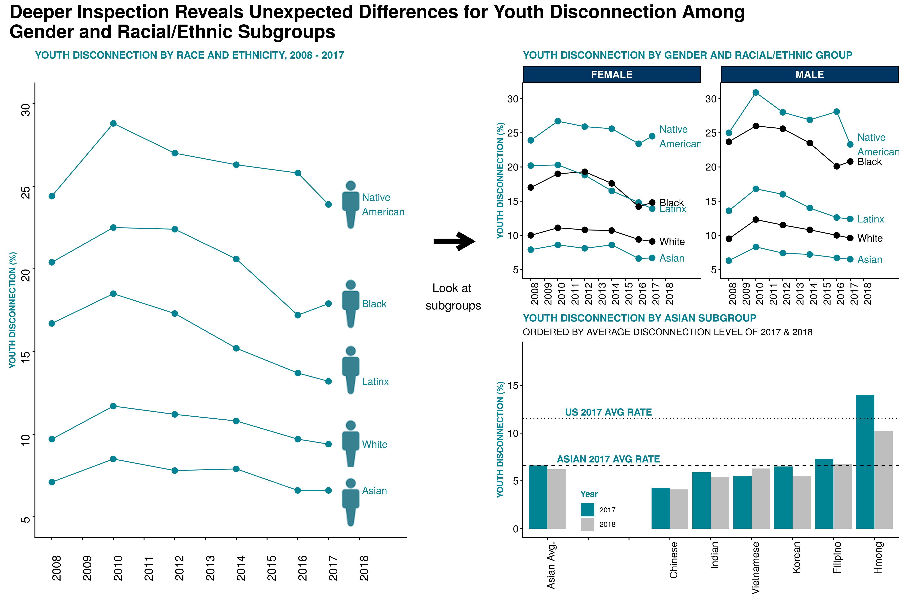</p>
</div>
<div id="section-1" class="section level4">
<h4></h4>
</div>
<div id="section-2" class="section level4 disclaimer_block">
<h4 class="disclaimer_block"></h4>
<p><strong>Disclaimer</strong>: The purpose of the <a
href="https://opencasestudies.github.io">Open Case Studies</a> project
is <strong>to demonstrate the use of various data science methods,
tools, and software in the context of messy, real-world data</strong>. A
given case study does not cover all aspects of the research process, is
not claiming to be the most appropriate way to analyze a given data set,
and should not be used in the context of making policy decisions without
external consultation from scientific experts.</p>
</div>
<div id="section-3" class="section level4">
<h4></h4>
</div>
<div id="section-4" class="section level4 license_block">
<h4 class="license_block"></h4>
<p>This work is licensed under the Creative Commons
Attribution-NonCommercial 3.0 <a
href="https://creativecommons.org/licenses/by-nc/3.0/us/">(CC BY-NC
3.0)</a> United States License.</p>
</div>
<div id="section-5" class="section level4">
<h4></h4>
</div>
<div id="section-6" class="section level4 reference_block">
<h4 class="reference_block"></h4>
<p>To cite this case study please use:</p>
<p>Wright, Carrie and Ontiveros, Michael and Jager, Leah and Taub,
Margaret and Hicks, Stephanie C. (2020). <a
href="https://github.com/opencasestudies/ocs-youth-disconnection-case-study">https://github.com/opencasestudies/ocs-youth-disconnection-case-study</a>.
Disparities in Youth Disconnection.</p>
</div>
<div id="section-7" class="section level4">
<h4></h4>
<p>To access the GitHub repository for this case study see here: <a
href="https://github.com//opencasestudies/ocs-bp-youth-disconnection"
class="uri">https://github.com//opencasestudies/ocs-bp-youth-disconnection</a>.</p>
<p>You may also access and download the data using our
<code>OCSdata</code> package. To learn more about this package including
examples, see this <a
href="https://github.com/opencasestudies/OCSdata">link</a>. Here is how
you would install this package:</p>
<div class="sourceCode" id="cb1"><pre class="sourceCode r"><code class="sourceCode r"><span id="cb1-1"><a href="#cb1-1" tabindex="-1"></a><span class="fu">install.packages</span>(<span class="st">&quot;OCSdata&quot;</span>)</span></code></pre></div>
<p>This case study is part of a series of public health case studies for
the <a href="https://americanhealth.jhu.edu/open-case-studies">Bloomberg
American Health Initiative</a>.</p>
<hr />
<p>The total reading time for this case study is calculated via <a
href="https://github.com/unDocUMeantIt/koRpus">koRpus</a> and shown
below:</p>
<table>
<thead>
<tr class="header">
<th align="left">Reading Time</th>
<th align="left">Method</th>
</tr>
</thead>
<tbody>
<tr class="odd">
<td align="left">84 minutes</td>
<td align="left">koRpus</td>
</tr>
</tbody>
</table>
<hr />
<p><strong>Readability Score: </strong></p>
<p>A readability index estimates the reading difficulty level of a
particular text. Flesch-Kincaid, FORCAST, and SMOG are three common
readability indices that were calculated for this case study via <a
href="https://github.com/unDocUMeantIt/koRpus">koRpus</a>. These indices
provide an estimation of the minimum reading level required to
comprehend this case study by grade and age.</p>
<pre><code>Text language: en </code></pre>
<table>
<thead>
<tr class="header">
<th align="left">index</th>
<th align="right">grade</th>
<th align="right">age</th>
</tr>
</thead>
<tbody>
<tr class="odd">
<td align="left">Flesch-Kincaid</td>
<td align="right">8</td>
<td align="right">14</td>
</tr>
<tr class="even">
<td align="left">FORCAST</td>
<td align="right">10</td>
<td align="right">15</td>
</tr>
<tr class="odd">
<td align="left">SMOG</td>
<td align="right">11</td>
<td align="right">16</td>
</tr>
</tbody>
</table>
<hr />
<p>Please help us by filling out our survey.</p>
<div style="display: flex; justify-content: center;">
<iframe src="https://docs.google.com/forms/d/e/1FAIpQLSfpN4FN3KELqBNEgf2Atpi7Wy7Nqy2beSkFQINL7Y5sAMV5_w/viewform?embedded=true" width="1200" height="700" frameborder="0" marginheight="0" marginwidth="0">
Loading…
</iframe>
</div>
</div>
<div id="motivation" class="section level2">
<h2><strong>Motivation</strong></h2>
<hr />
<p>First, let’s discuss the meaning of the term <strong>“youth
disconnection”</strong>.</p>
<p>According to <a
href="https://www.ssrc.org/programs/view/moa/">Measure of America</a> (a
nonpartisan project of the nonprofit <a
href="https://www.ssrc.org/">Social Science Research Council</a> that is
focused on opportunity in the United States), disconnected youth
are:</p>
<blockquote>
<p>“young people between the ages of <strong>16 and 24</strong> who are
<strong>neither working nor in school</strong>”</p>
</blockquote>
<p>The group states that such disconnection hinders these individuals to
acquire skills and create relationships necessary to have a successful
adulthood.</p>
<p>The group goes on to state that:</p>
<blockquote>
<p>“people who experience a period of disconnection as young adults go
on to <strong>earn less</strong> and are <strong>less likely</strong> to
be <strong>employed, own a home, or report good health</strong> by the
time they reach their thirties”</p>
</blockquote>
<p>Disconnected youth are also referred to as <strong>opportunity
youth</strong>, which has the added positive connotation that promoting
such individuals can be beneficial not only for these individuals, but
also for their communities and for society.</p>
<p><strong>Good news</strong>: According to this <a
href="https://ssrc-static.s3.amazonaws.com/moa/Making%20the%20Connection.pdf">report</a>,
the youth disconnection is generally showing decreasing trends for the
past 7 years.</p>
<p><strong>Bad news</strong>: The same report shows <strong>racial and
ethnic disparities</strong>, where some groups are showing
<strong>increased rates of disconnection</strong>.</p>
<p>In this case study, we will expand beyond the <a
href="https://ssrc-static.s3.amazonaws.com/moa/Making%20the%20Connection.pdf">Measure
of America annual report</a> to take a deeper look at differences in
disconnection between different subgroups of youths. Identifying youths
particularly at risk or disconnected, can help inform the design of
targeted prevention and re-engagement strategies. To do this, we use the
following <a
href="https://www.ncbi.nlm.nih.gov/pmc/articles/PMC6243446/">article</a>
as our motivation for this case study.</p>
<div id="section-8" class="section level4 reference_block">
<h4 class="reference_block"></h4>
<p>Mendelson, T., Mmari, K., Blum, R. W., Catalano, R. F. &amp; Brindis,
C. D. Opportunity Youth: Insights and Opportunities for a Public Health
Approach to Reengage Disconnected Teenagers and Young Adults. <em>Public
Health Rep</em> 133, 54S-64S (2018).</p>
</div>
<div id="section-9" class="section level4">
<h4></h4>
<p>The <a
href="https://www.ncbi.nlm.nih.gov/pmc/articles/PMC6243446/">article</a>
describes strategies for prevention of disconnection and re-engagement
of disconnected youth and how such interventions could greatly
positively impact opportunity youth for the entire trajectory of their
lives and for future generations. It also points out that indeed there
are disparities among different racial/ethnic groups.</p>
</div>
</div>
<div id="main-questions" class="section level2">
<h2><strong>Main Questions</strong></h2>
<hr />
<div id="section-10" class="section level4 main_question_block">
<h4 class="main_question_block"></h4>
<p><b><u> Our main questions: </u></b></p>
<ol style="list-style-type: decimal">
<li>How have youth disconnection rates in American youth changed since
2008?<br />
</li>
<li>In particular, how has this changed for different gender and ethnic
groups? Are any groups particularly disconnected?</li>
</ol>
</div>
<div id="section-11" class="section level4">
<h4></h4>
</div>
</div>
<div id="learning-objectives" class="section level2">
<h2><strong>Learning Objectives</strong></h2>
<hr />
<p>In this case study, we will demonstrate how to import and wrangle
data available in a <u><strong>P</strong></u>ortable
<u><strong>D</strong></u>ocument <u><strong>F</strong></u>ormat
(<strong>PDF</strong>). We will especially focus on using packages and
functions from the <a
href="https://www.tidyverse.org/"><code>tidyverse</code></a>, such as
<code>dplyr</code>, <code>ggplot2</code>. The tidyverse is a library of
packages created by RStudio. While some students may be familiar with
previous R programming packages, these packages make data science in R
more legible and intuitive.</p>
<p>The skills, methods, and concepts that students will be familiar with
by the end of this case study are:</p>
<p><u><strong>Data Science Learning Objectives:</strong></u></p>
<ol style="list-style-type: decimal">
<li>Importing text from PDF files using images and the
<code>magick</code> package<br />
</li>
<li>Apply action verbs in <code>dplyr</code> for data wrangling<br />
</li>
<li>How to reshape data by pivoting between “long” and “wide” formats
and separating columns into additional columns
(<code>tidyr</code>)<br />
</li>
<li>How to fill in data based on previous values
(<code>tidyr</code>)</li>
<li>How to create data visualizations with <code>ggplot2</code> that are
in a similar style to an existing image<br />
</li>
<li>How to add images to plots using <code>cowplot</code></li>
<li>How to create effective bar plots to for multiple comparisons,
including adding gaps between bars in bar plots, adding figure legends
to the plot area, and adding comparison lines
(<code>ggplot2</code>)</li>
</ol>
<p><u><strong>Statistical Learning Objectives:</strong></u></p>
<ol style="list-style-type: decimal">
<li>Implementation of the Mann-Kendall trend test<br />
</li>
<li>Interpretation of the Mann-Kendall trend test</li>
<li>Difference between linear regression and Mann-Kendall trend
test</li>
</ol>
<p></p>
<hr />
<p>Before loading the packages, install any that are not already
available:</p>
<div class="sourceCode" id="cb3"><pre class="sourceCode r"><code class="sourceCode r"><span id="cb3-1"><a href="#cb3-1" tabindex="-1"></a>required_packages <span class="ot">&lt;-</span> <span class="fu">c</span>(</span>
<span id="cb3-2"><a href="#cb3-2" tabindex="-1"></a>  <span class="st">&quot;here&quot;</span>, <span class="st">&quot;pdftools&quot;</span>, <span class="st">&quot;knitr&quot;</span>, <span class="st">&quot;readr&quot;</span>, <span class="st">&quot;dplyr&quot;</span>,</span>
<span id="cb3-3"><a href="#cb3-3" tabindex="-1"></a>  <span class="st">&quot;stringr&quot;</span>, <span class="st">&quot;magrittr&quot;</span>, <span class="st">&quot;tidyr&quot;</span>, <span class="st">&quot;tibble&quot;</span>, <span class="st">&quot;ggplot2&quot;</span>, <span class="st">&quot;directlabels&quot;</span>,</span>
<span id="cb3-4"><a href="#cb3-4" tabindex="-1"></a>  <span class="st">&quot;cowplot&quot;</span>, <span class="st">&quot;forcats&quot;</span>, <span class="st">&quot;Kendall&quot;</span>, <span class="st">&quot;patchwork&quot;</span>, <span class="st">&quot;DT&quot;</span>, <span class="st">&quot;OCSdata&quot;</span></span>
<span id="cb3-5"><a href="#cb3-5" tabindex="-1"></a>)</span>
<span id="cb3-6"><a href="#cb3-6" tabindex="-1"></a>missing_packages <span class="ot">&lt;-</span> required_packages[<span class="sc">!</span><span class="fu">vapply</span>(</span>
<span id="cb3-7"><a href="#cb3-7" tabindex="-1"></a>  required_packages, requireNamespace, <span class="fu">logical</span>(<span class="dv">1</span>), <span class="at">quietly =</span> <span class="cn">TRUE</span></span>
<span id="cb3-8"><a href="#cb3-8" tabindex="-1"></a>)]</span>
<span id="cb3-9"><a href="#cb3-9" tabindex="-1"></a></span>
<span id="cb3-10"><a href="#cb3-10" tabindex="-1"></a><span class="fu">options</span>(<span class="at">repos =</span> <span class="fu">c</span>(<span class="at">CRAN =</span> <span class="st">&quot;https://cloud.r-project.org&quot;</span>))</span>
<span id="cb3-11"><a href="#cb3-11" tabindex="-1"></a></span>
<span id="cb3-12"><a href="#cb3-12" tabindex="-1"></a><span class="cf">if</span> (<span class="fu">identical</span>(<span class="fu">Sys.info</span>()[[<span class="st">&quot;sysname&quot;</span>]], <span class="st">&quot;Linux&quot;</span>) <span class="sc">&amp;&amp;</span></span>
<span id="cb3-13"><a href="#cb3-13" tabindex="-1"></a>    <span class="fu">file.exists</span>(<span class="st">&quot;/usr/bin/apt-get&quot;</span>)) {</span>
<span id="cb3-14"><a href="#cb3-14" tabindex="-1"></a>  <span class="fu">system2</span>(<span class="st">&quot;/usr/bin/apt-get&quot;</span>, <span class="fu">c</span>(<span class="st">&quot;update&quot;</span>, <span class="st">&quot;-qq&quot;</span>))</span>
<span id="cb3-15"><a href="#cb3-15" tabindex="-1"></a>  <span class="fu">system2</span>(</span>
<span id="cb3-16"><a href="#cb3-16" tabindex="-1"></a>    <span class="st">&quot;/usr/bin/apt-get&quot;</span>,</span>
<span id="cb3-17"><a href="#cb3-17" tabindex="-1"></a>    <span class="fu">c</span>(</span>
<span id="cb3-18"><a href="#cb3-18" tabindex="-1"></a>      <span class="st">&quot;install&quot;</span>, <span class="st">&quot;--yes&quot;</span>, <span class="st">&quot;--no-install-recommends&quot;</span>,</span>
<span id="cb3-19"><a href="#cb3-19" tabindex="-1"></a>      <span class="st">&quot;libtesseract-dev&quot;</span>, <span class="st">&quot;libleptonica-dev&quot;</span>, <span class="st">&quot;tesseract-ocr&quot;</span>,</span>
<span id="cb3-20"><a href="#cb3-20" tabindex="-1"></a>      <span class="st">&quot;libmagick++-dev&quot;</span></span>
<span id="cb3-21"><a href="#cb3-21" tabindex="-1"></a>    )</span>
<span id="cb3-22"><a href="#cb3-22" tabindex="-1"></a>  )</span>
<span id="cb3-23"><a href="#cb3-23" tabindex="-1"></a>}</span>
<span id="cb3-24"><a href="#cb3-24" tabindex="-1"></a></span>
<span id="cb3-25"><a href="#cb3-25" tabindex="-1"></a><span class="fu">install.packages</span>(<span class="fu">c</span>(<span class="st">&quot;tesseract&quot;</span>, <span class="st">&quot;magick&quot;</span>), <span class="at">type =</span> <span class="st">&quot;source&quot;</span>)</span>
<span id="cb3-26"><a href="#cb3-26" tabindex="-1"></a></span>
<span id="cb3-27"><a href="#cb3-27" tabindex="-1"></a><span class="cf">for</span> (pkg <span class="cf">in</span> <span class="fu">c</span>(<span class="st">&quot;tesseract&quot;</span>, <span class="st">&quot;magick&quot;</span>)) {</span>
<span id="cb3-28"><a href="#cb3-28" tabindex="-1"></a>  <span class="cf">if</span> (<span class="sc">!</span><span class="fu">requireNamespace</span>(pkg, <span class="at">quietly =</span> <span class="cn">TRUE</span>)) {</span>
<span id="cb3-29"><a href="#cb3-29" tabindex="-1"></a>    <span class="fu">stop</span>(<span class="fu">sprintf</span>(<span class="st">&quot;The %s R package could not be installed.&quot;</span>, pkg))</span>
<span id="cb3-30"><a href="#cb3-30" tabindex="-1"></a>  }</span>
<span id="cb3-31"><a href="#cb3-31" tabindex="-1"></a>}</span>
<span id="cb3-32"><a href="#cb3-32" tabindex="-1"></a></span>
<span id="cb3-33"><a href="#cb3-33" tabindex="-1"></a><span class="cf">if</span> (<span class="fu">length</span>(missing_packages)) {</span>
<span id="cb3-34"><a href="#cb3-34" tabindex="-1"></a>  <span class="fu">install.packages</span>(missing_packages)</span>
<span id="cb3-35"><a href="#cb3-35" tabindex="-1"></a>}</span>
<span id="cb3-36"><a href="#cb3-36" tabindex="-1"></a></span>
<span id="cb3-37"><a href="#cb3-37" tabindex="-1"></a><span class="cf">if</span> (<span class="sc">!</span><span class="fu">requireNamespace</span>(<span class="st">&quot;remotes&quot;</span>, <span class="at">quietly =</span> <span class="cn">TRUE</span>)) {</span>
<span id="cb3-38"><a href="#cb3-38" tabindex="-1"></a>  <span class="fu">install.packages</span>(<span class="st">&quot;remotes&quot;</span>)</span>
<span id="cb3-39"><a href="#cb3-39" tabindex="-1"></a>}</span>
<span id="cb3-40"><a href="#cb3-40" tabindex="-1"></a><span class="fu">install_github_with_retry</span>(<span class="st">&quot;benmarwick/wordcountaddin&quot;</span>, <span class="st">&quot;wordcountaddin&quot;</span>, <span class="at">dependencies =</span> <span class="cn">TRUE</span>)</span>
<span id="cb3-41"><a href="#cb3-41" tabindex="-1"></a><span class="fu">install_github_with_retry</span>(<span class="st">&quot;alistaire47/read.so&quot;</span>, <span class="st">&quot;read.so&quot;</span>)</span></code></pre></div>
<p>We will now load the packages that we will need:</p>
<div class="sourceCode" id="cb4"><pre class="sourceCode r"><code class="sourceCode r"><span id="cb4-1"><a href="#cb4-1" tabindex="-1"></a><span class="fu">library</span>(here)</span>
<span id="cb4-2"><a href="#cb4-2" tabindex="-1"></a><span class="fu">library</span>(pdftools)</span>
<span id="cb4-3"><a href="#cb4-3" tabindex="-1"></a><span class="fu">library</span>(tesseract)</span>
<span id="cb4-4"><a href="#cb4-4" tabindex="-1"></a><span class="fu">library</span>(magick)</span>
<span id="cb4-5"><a href="#cb4-5" tabindex="-1"></a><span class="fu">library</span>(knitr)</span>
<span id="cb4-6"><a href="#cb4-6" tabindex="-1"></a><span class="fu">library</span>(readr)</span>
<span id="cb4-7"><a href="#cb4-7" tabindex="-1"></a><span class="fu">library</span>(dplyr)</span>
<span id="cb4-8"><a href="#cb4-8" tabindex="-1"></a><span class="fu">library</span>(stringr)</span>
<span id="cb4-9"><a href="#cb4-9" tabindex="-1"></a><span class="fu">library</span>(magrittr)</span>
<span id="cb4-10"><a href="#cb4-10" tabindex="-1"></a><span class="fu">library</span>(tidyr)</span>
<span id="cb4-11"><a href="#cb4-11" tabindex="-1"></a><span class="fu">library</span>(tibble)</span>
<span id="cb4-12"><a href="#cb4-12" tabindex="-1"></a><span class="fu">library</span>(ggplot2)</span>
<span id="cb4-13"><a href="#cb4-13" tabindex="-1"></a><span class="fu">library</span>(directlabels)</span>
<span id="cb4-14"><a href="#cb4-14" tabindex="-1"></a><span class="fu">library</span>(cowplot)</span>
<span id="cb4-15"><a href="#cb4-15" tabindex="-1"></a><span class="fu">library</span>(forcats)</span>
<span id="cb4-16"><a href="#cb4-16" tabindex="-1"></a><span class="fu">library</span>(Kendall)</span>
<span id="cb4-17"><a href="#cb4-17" tabindex="-1"></a><span class="fu">library</span>(patchwork)</span>
<span id="cb4-18"><a href="#cb4-18" tabindex="-1"></a><span class="fu">library</span>(DT)</span>
<span id="cb4-19"><a href="#cb4-19" tabindex="-1"></a><span class="fu">library</span>(OCSdata)</span></code></pre></div>
<p><u><strong>Packages used in this case study:</strong> </u></p>
<table>
<colgroup>
<col width="43%" />
<col width="56%" />
</colgroup>
<thead>
<tr class="header">
<th>Package</th>
<th>Use in this case study</th>
</tr>
</thead>
<tbody>
<tr class="odd">
<td><a href="https://github.com/jennybc/here_here"
target="_blank">here</a></td>
<td>to easily load and save data</td>
</tr>
<tr class="even">
<td><a href="https://readr.tidyverse.org/">pdftools</a></td>
<td>to import PDF documents</td>
</tr>
<tr class="odd">
<td><a
href="https://cran.r-project.org/web/packages/magick/vignettes/intro.html#Kernel_convolution">magick</a></td>
<td>for importing images and extracting text from images</td>
</tr>
<tr class="even">
<td><a
href="https://cran.r-project.org/web/packages/tesseract/vignettes/intro.html">tesseract</a></td>
<td>for extracting text from images with <code>magick</code></td>
</tr>
<tr class="odd">
<td><a href="https://yihui.org/knitr/">knitr</a></td>
<td>for showing images in reports</td>
</tr>
<tr class="even">
<td><a href="https://readr.tidyverse.org/">readr</a></td>
<td>for saving files</td>
</tr>
<tr class="odd">
<td><a href="https://dplyr.tidyverse.org/"
target="_blank">dplyr</a></td>
<td>to filter, subset, join, add rows to, and modify the data</td>
</tr>
<tr class="even">
<td><a href="https://stringr.tidyverse.org/"
target="_blank">stringr</a></td>
<td>to manipulate strings</td>
</tr>
<tr class="odd">
<td><a href="https://magrittr.tidyverse.org/"
target="_blank">magrittr</a></td>
<td>to pipe sequential commands</td>
</tr>
<tr class="even">
<td><a href="https://tidyr.tidyverse.org/"
target="_blank">tidyr</a></td>
<td>to change the shape or format of tibbles to wide and long, to drop
rows with <code>NA</code> values, to separate a column into additional
columns, and to fill out values based on previous values</td>
</tr>
<tr class="odd">
<td><a href="https://tibble.tidyverse.org/"
target="_blank">tibble</a></td>
<td>to create tibbles</td>
</tr>
<tr class="even">
<td><a href="https://ggplot2.tidyverse.org/"
target="_blank">ggplot2</a></td>
<td>to create plots</td>
</tr>
<tr class="odd">
<td><a href="https://cran.r-project.org/package=directlabels"
target="_blank">directlabels</a></td>
<td>to add labels directly to lines in plots</td>
</tr>
<tr class="even">
<td><a
href="https://cran.r-project.org/web/packages/cowplot/vignettes/introduction.html"
target="_blank">cowplot</a></td>
<td>to add images to plots</td>
</tr>
<tr class="odd">
<td><a href="https://forcats.tidyverse.org/"
target="_blank">forcats</a></td>
<td>to reorder factor for plot</td>
</tr>
<tr class="even">
<td><a
href="https://cran.r-project.org/web/packages/Kendall/Kendall.pdf">kendall</a></td>
<td>to implement the Mann-Kendall trend test in R</td>
</tr>
<tr class="odd">
<td><a href="https://github.com/thomasp85/patchwork">patchwork</a></td>
<td>to combine plots</td>
</tr>
<tr class="even">
<td><a
href="https://cran.r-project.org/web/packages/DT/index.html">DT</a></td>
<td>Interactive tables</td>
</tr>
<tr class="odd">
<td><a
href="https://github.com/opencasestudies/OCSdata">OCSdata</a></td>
<td>to access and download OCS data files</td>
</tr>
</tbody>
</table>
<p>The first time we use a function, we will use the <code>::</code> to
indicate which package we are using. Unless we have overlapping function
names, this is not necessary, but we will include it here to be
informative about where the functions we will use come from.</p>
</div>
<div id="context" class="section level2">
<h2><strong>Context</strong></h2>
<hr />
<p>So how does youth disconnection happen and what impact does it
have?</p>
<p>There are many known <strong>risk factors</strong>, which have been
identified in a variety of contexts (from family, friends, school,
community, society) including:</p>
<ul>
<li>poverty (disconnected youth are nearly twice as likely to live in
poverty and receive Medicaid)<br />
</li>
<li>racial/ethnic disparities (findings suggest that these persist even
when controlling for income)<br />
</li>
<li>residential environment (in 2016 while 11.7% was the national
average, 24% of people age 16-24 in the rural South were
disconnected)<br />
</li>
<li>poor academic performance<br />
</li>
<li>poor mental health<br />
</li>
<li>substance use disorders<br />
</li>
<li>parental unemployment<br />
</li>
<li>trauma exposure<br />
</li>
<li>association with socially deviant peers</li>
<li>school policies such as “one strike and you’re out” - which is a
zero tolerance school expulsion policy and shown to increase dropouts
and incarceration rates</li>
</ul>
<p>These risk factors make it more likely for young people to miss out
on education, training, and networking that can act as a foundation for
a successful career.</p>
<p>There are also many known <strong>negative consequences</strong>
associated with youth disconnection including but not limited to:</p>
<ul>
<li>chronic unemployment</li>
<li>poverty</li>
<li>poor mental health and poor general health (in a 2002 study - youths
disconnected for 6 or more months were 3 times more likely to develop
depression or other mental health disorder)</li>
<li>criminal behavior (in a 2002 study - youths disconnected for 6 or
more months were 5 times more likely to have a criminal record)</li>
<li>incarceration</li>
<li>early mortality</li>
</ul>
<p>
<span>Photo by
<a href="https://unsplash.com/@jontyson?utm_source=unsplash&amp;utm_medium=referral&amp;utm_content=creditCopyText">Jon
Tyson</a> on
<a href="https://unsplash.com/s/photos/unemployment?utm_source=unsplash&amp;utm_medium=referral&amp;utm_content=creditCopyText">Unsplash</a></span></p>
<p>Furthermore, in 2012 it was estimated that each disconnected youth
costs taxpayers $250,000 during a lifetime due to lost tax revenue and
costs for social services, heath care and criminal justice.</p>
<p>Youth disconnection can be described as a continuum, as some youths
will be disconnected for a brief time, while others are chronically
disconnected. Additionally, while an individual who is out of school and
work and also has poor support from the relationships of others may be
further disconnected than an individual who has social support.</p>
<p>Here is an illustration of risk factors, protective factors and the
continuum of disconnection:</p>
<p>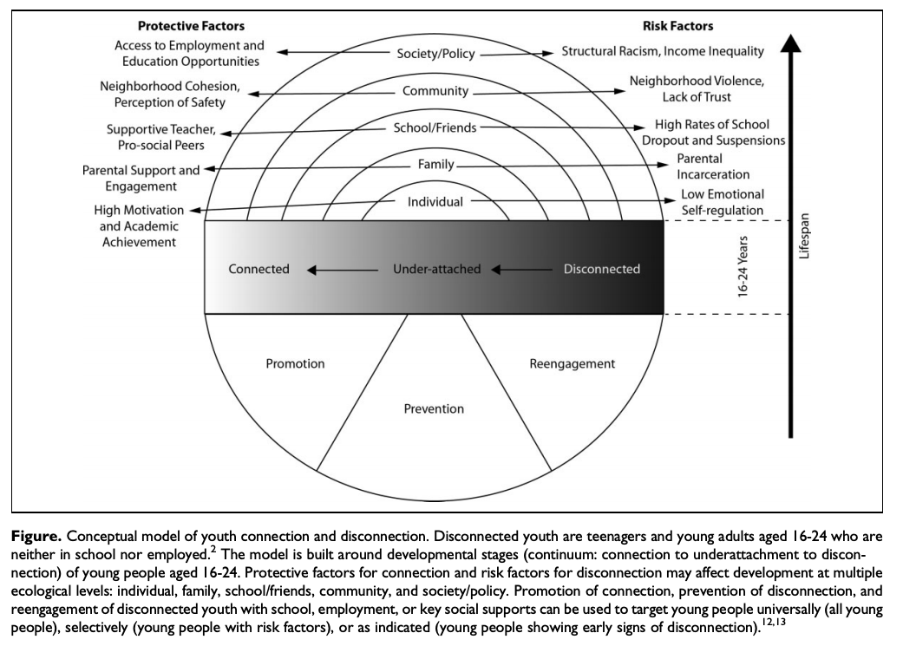</p>
<div id="source" class="section level5">
<h5><a
href="https://www.ncbi.nlm.nih.gov/pmc/articles/PMC6243446/pdf/10.1177_0033354918799344.pdf">[source]</a></h5>
</div>
<div id="strategies-to-mitigate-youth-disconnection"
class="section level3">
<h3><strong>Strategies to mitigate youth disconnection</strong></h3>
<hr />
<p>Many programs have identified useful strategies in re-engaging
disconnected youth or preventing disconnection of youth.</p>
<p>Generally speaking, most programs focus on re-engagement strategies,
however, prevention strategies are likely to be just as important.</p>
<p>Research suggests that active involvement with at risk youth from
infancy and across multiple developmental stages through young adulthood
would be the most beneficial.</p>
<p>In fact, the quality of parental care-giving of infants age 6-24
months has actually been shown to be a predictor of high school dropout
rates! Thus early interventions may be very important and consistent
continual engagement may prevent further disconnection of youths.</p>
<p>Prevention strategies include:</p>
<ul>
<li>Preschool<br />
</li>
<li><a href="https://goodbehaviorgame.air.org/">The Good Behavior
Game</a><br />
</li>
<li>Strengthening family and community connections<br />
</li>
<li>Promoting academic and career engagement<br />
</li>
<li>Life skills training for youths and families<br />
</li>
<li>Education about substance abuse<br />
</li>
<li><a
href="https://www.apa.org/ptsd-guideline/patients-and-families/cognitive-behavioral">Cognitive
behavioral therapy</a></li>
</ul>
<div id="section-12" class="section level4 emphasis_block">
<h4 class="emphasis_block"></h4>
<p>Want to learn more about how to prevent and mitigate youth
disconnection?<br />
Or do you know youths who are disconnected?</p>
<p>See <a
href="https://youth.gov/evidence-innovation/program-directory?keywords=&amp;field_pd_factors_risks_tid=413&amp;field_pd_factors_protective_tid=All">the
program directory at youth.gov</a> and <a
href="https://goc.maryland.gov/wp-content/uploads/sites/8/2015/10/Program-Models-for-Serving-Opportunity-Youth.pdf">this
program listing</a> focused on Maryland but including other locations
for listings of programs dedicated to re-engaging disconnected youth or
preventing disconnection.</p>
<p>Also, see <a href="https://www.communitiesthatcare.net/">The Center
for Communities That Care</a> and the <a
href="https://extension.psu.edu/promoting-school-community-university-partnerships-to-enhance-resilience">PROSPER
program</a> for particular examples.</p>
</div>
<div id="section-13" class="section level4">
<h4></h4>
<p>The statistics used in this section came from this <a
href="https://www.ncbi.nlm.nih.gov/pmc/articles/PMC6243446/">article</a>.</p>
</div>
</div>
</div>
<div id="limitations" class="section level2">
<h2><strong>Limitations</strong></h2>
<hr />
<p>There are some important considerations regarding this data analysis
to keep in mind:</p>
<ol style="list-style-type: decimal">
<li><p>This data used in the <a
href="https://www.ssrc.org/programs/view/moa/">Measure of America</a>
project is derived from <a
href="https://www.census.gov/programs-surveys/acs">American Community
Survey (ACS)</a>, which excludes or under-represents certain opportunity
youth groups, such as youths in the juvenile justice system, youths in
the foster care system, and homeless youths as the survey is conducted
on households. Furthermore, youths who may be more disconnected for
other reasons besides not being in work or school, such as dealing with
the added challenge of being a teenage mother, or being abused are not
available in this dataset. Thus, this data likely underestimates youth
disconnection rates. Furthermore, the data used in these reports are
collected from human participants; this presents the <em>potential</em>
for <a href="https://en.wikipedia.org/wiki/Response_bias">response
bias</a>, as there is the <em>potential</em> that participants in the <a
href="https://en.wikipedia.org/wiki/Sampling_frame?oldformat=true"
target="_blank">sampling frame</a> may for a variety of reasons report
inaccurate information.</p></li>
<li><p>Data about certain group <a
href="https://www.vox.com/the-highlight/2019/5/20/18542843/intersectionality-conservatism-law-race-gender-discrimination">intersections</a>
(meaning for example individuals of a particular gender and ethnicity)
or particular groups in general such as specific ethnicities or gender
or sexual identity groups such as <a
href="https://www.uis.edu/gendersexualitystudentservices/about/lgbtqaterminology/">LGBTQIA+</a>
(lesbian/gay/bisexual/pansexual/transgender/genderqueer/queer,questioning/intersexed/agender/asexual)
is unfortunately not available in the data used in this analysis and in
most research about this topic. Luckily however, recent years of the <a
href="https://www.census.gov/programs-surveys/acs">ACS survey</a> has
more detailed information about a greater number of racial and ethnic
groups and racial/ethnic intersections.</p></li>
<li><p>The statistical procedures we are using may be overly simplistic.
<em>In all data analysis, we need to be wary about deriving meaning from
the statistical procedures we use</em>. Furthermore, the data we are
using is summary level showing averages for large groups. Thus, it is
difficult to know how reliable the summary estimates are, as we don’t
have information about the variability of the data within a
group.</p></li>
<li><p>Using image processing tools can be very helpful. The manner in
which data is obtained with image processing tools is what we would
describe as a <strong>black box process</strong>, <u><em>a process with
known inputs and outputs but unknown mechanics</em></u>. Because we are
unaware of how our outputs are generated from our inputs, we need to be
wary of the output. With the small output we are creating in this case
study, a visual inspection should suffice.</p></li>
</ol>
</div>
<div id="what-are-the-data" class="section level2">
<h2><strong>What are the data?</strong></h2>
<hr />
<p>In this case study we will be using data related to youth
disconnection from the two following reports from the <a
href="https://www.ssrc.org/programs/view/moa/">Measure of America</a>
project:</p>
<blockquote>
<p>Measure of America is a nonpartisan project of the nonprofit <a
href="https://www.ssrc.org/">Social Science Research Council</a> founded
in 2007 to create easy-to-use yet methodologically sound tools for
understanding well-being and opportunity in America. Through reports,
interactive apps, and custom-built dashboards, Measure of America works
with partners to breathe life into numbers, using data to identify areas
of highest need, pinpoint levers for change, and track progress over
time.</p>
</blockquote>
<ol style="list-style-type: decimal">
<li>Lewis, Kristen. <a
href="https://ssrc-static.s3.amazonaws.com/moa/Making%20the%20Connection.pdf">Making
the Connection: Transportation and Youth Disconnection</a> . New York:
Measure of America, Social Science Research Council, 2019. (Data up to
2017)</li>
</ol>
<p>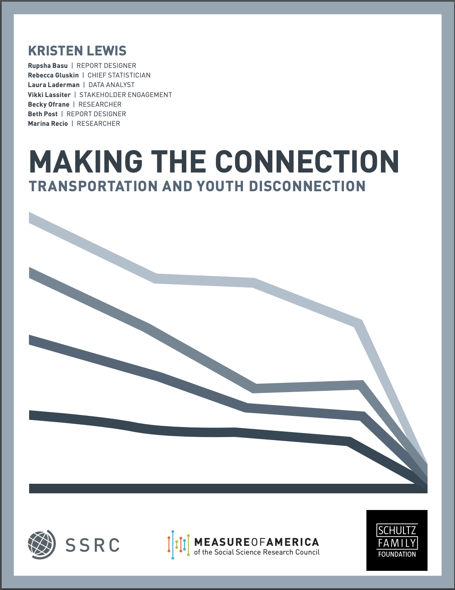</p>
<ol start="2" style="list-style-type: decimal">
<li>Lewis, Kristen. <a
href="https://ssrc-static.s3.amazonaws.com/moa/ADecadeUndone.pdf">A
Decade Undone: Youth Disconnection in the Age of Coronavirus</a>. New
York: Measure of America, Social Science Research Council, 2020. (Data
up to 2018)</li>
</ol>
<p></p>
<p>The data used in these reports comes from the <a
href="https://www.census.gov/programs-surveys/acs">American Community
Survey (ACS)</a>, which is the largest survey conducted by the United
States Census Bureau. The survey started in 2005 and collects data for
3.5 million households annually. Data is collected about ancestry,
citizenship, income, employment, disability among many other aspects.
See <a
href="https://en.wikipedia.org/wiki/American_Community_Survey">here</a>
for more detailed information about the survey.</p>
<p>According to <a
href="https://en.wikipedia.org/wiki/American_Community_Survey">Wikipedia</a>:</p>
<blockquote>
<p>Data is collected by internet, mail, telephone interviews and
in-person interviews… About 95 percent of households across all response
modes ultimately respond… ACS responses are confidential”</p>
</blockquote>
<blockquote>
<p>It is a mandatory survey, it is governed by federal laws that could
impose a fine of as much as $5,000 for refusing to participate.</p>
</blockquote>
<p>We are particularly interested in the following tables on the last
page of the <a
href="https://ssrc-static.s3.amazonaws.com/moa/Making%20the%20Connection.pdf">Measure
of America 2019 report</a>:</p>
<p>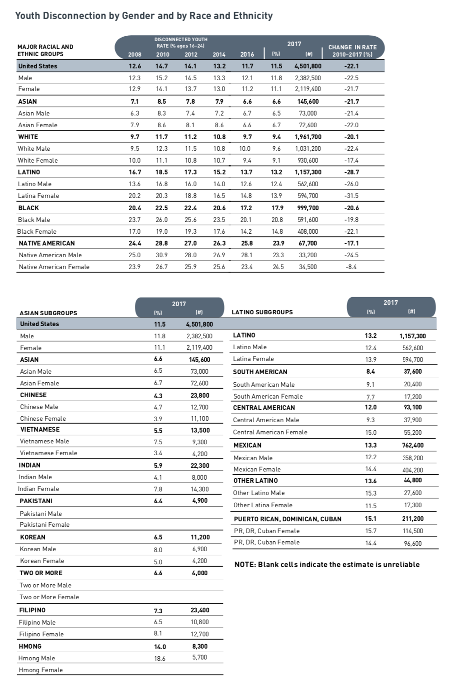</p>
<p>Also, we are particularly interested in the tables on the following
pages from the <a
href="https://ssrc-static.s3.amazonaws.com/moa/ADecadeUndone.pdf">Measure
of America 2020 report</a>:</p>
<p>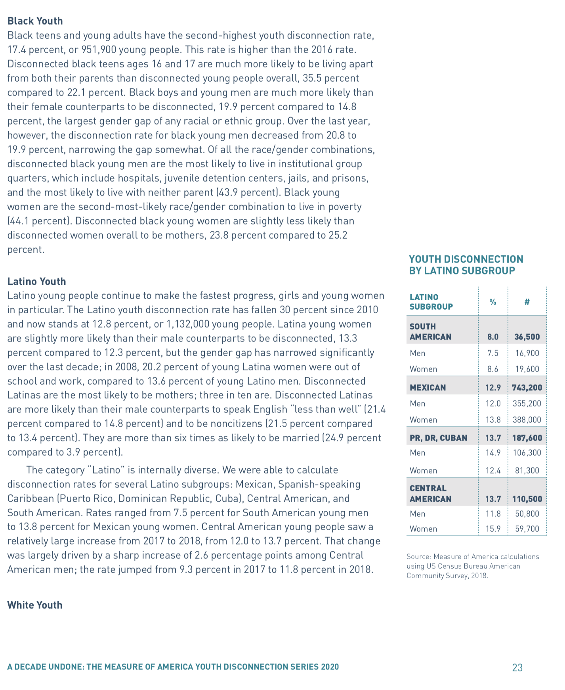</p>
<p>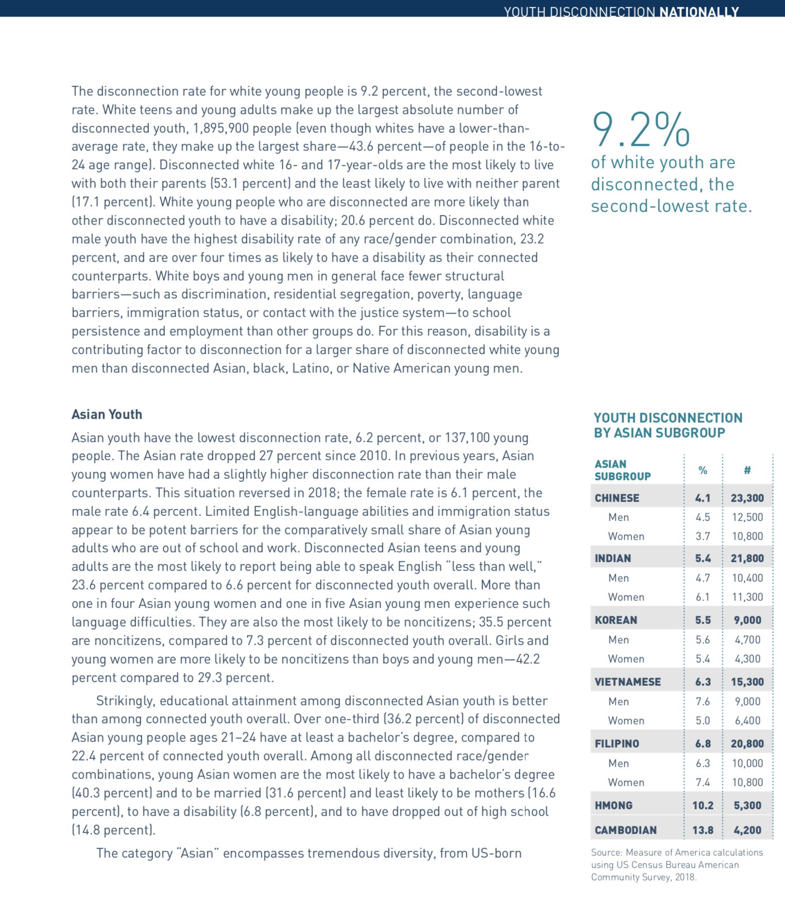</p>
</div>
<div id="data-import" class="section level2">
<h2><strong>Data Import</strong></h2>
<hr />
<p>If you did not clone the GitHub repository, you may download the raw
data files, including the pdf file of the report and the screenshots,
using the <code>OCSdata</code> package:</p>
<div class="sourceCode" id="cb5"><pre class="sourceCode r"><code class="sourceCode r"><span id="cb5-1"><a href="#cb5-1" tabindex="-1"></a><span class="co"># install.packages(&quot;OCSdata&quot;)</span></span>
<span id="cb5-2"><a href="#cb5-2" tabindex="-1"></a><span class="co"># library(OCSdata)</span></span>
<span id="cb5-3"><a href="#cb5-3" tabindex="-1"></a></span>
<span id="cb5-4"><a href="#cb5-4" tabindex="-1"></a><span class="fu">raw_data</span>(<span class="st">&quot;ocs-bp-youth-disconnection&quot;</span>, <span class="at">outpath =</span> <span class="fu">getwd</span>())</span>
<span id="cb5-5"><a href="#cb5-5" tabindex="-1"></a><span class="co"># This function creates a &quot;OCSdata&quot; sub-directory in your current working directory.</span></span>
<span id="cb5-6"><a href="#cb5-6" tabindex="-1"></a><span class="co"># It also creates a &quot;raw&quot; sub-directory within &quot;data&quot; which contains the .pdf file.</span></span></code></pre></div>
<div id="importing-with-pdftools" class="section level3">
<h3><strong>Importing with <code>pdftools</code></strong></h3>
<hr />
<p>If you still have trouble obtaining the pdf file, you can download it
using this <a
href="https://raw.githubusercontent.com/opencasestudies/ocs-bp-youth-disconnection/master/data/raw/Making_the_Connection.pdf">link</a>.</p>
<p>One way to import data from a pdf is to use the
<code>pdf_text()</code> function of the <code>pdftools</code> package.
In our case, we downloaded the <code>Making_the_Connection.pdf</code>
file and put it within a <code>raw</code> subdirectory of a
<code>data</code> directory for our project. If you use an RStudio
project, then you can use the <code>here()</code> function of the
<code>here</code> package to specify the path or location of the
document that we want to import. The <code>here</code> package
automatically starts looking for files based on where you have a
<code>.Rproj</code> file which is created when you start a new RStudio
project. We can specify that we want to look for the
<code>Making_the_Connection.pdf</code> file within the <code>raw</code>
directory within the <code>data</code> directory within a directory
where our <code>.Rproj</code> file is located. Starting from “data”, we
separate the names of these directories using commas.</p>
<hr />
<details>
<summary>
Click here to see more about creating new projects in RStudio.
</summary>
<p>You can create a project by going to the File menu of RStudio like
so:</p>
<p></p>
<p>You can also do so by clicking the project button:</p>
<p></p>
<p>See <a
href="https://support.rstudio.com/hc/en-us/articles/200526207-Using-Projects">here</a>
to learn more about using RStudio projects and <a
href="https://github.com/jennybc/here_here">here</a> to learn more about
the <code>here</code> package.</p>
</details>
<hr />
<p><em>Note the next chunk of code will only work for you if you set up
your file structure in the same way as stated above.</em></p>
<div class="sourceCode" id="cb6"><pre class="sourceCode r"><code class="sourceCode r"><span id="cb6-1"><a href="#cb6-1" tabindex="-1"></a>pdf_tools_example <span class="ot">&lt;-</span> </span>
<span id="cb6-2"><a href="#cb6-2" tabindex="-1"></a>  pdftools<span class="sc">::</span><span class="fu">pdf_text</span>(here<span class="sc">::</span><span class="fu">here</span>(<span class="st">&quot;data&quot;</span>, <span class="st">&quot;raw&quot;</span>, <span class="st">&quot;Making_the_Connection.pdf&quot;</span>))</span></code></pre></div>
<p>We can take a look at the output for the page with our table of
interests by simply using brackets <code>[]</code> around the page
number. The page we are interested in (although labeled 39 in the
report) is the 44th page, which looks like this:</p>
<div id="section-14" class="section level4 scrollable">
<h4 class="scrollable"></h4>
<div class="sourceCode" id="cb7"><pre class="sourceCode r"><code class="sourceCode r"><span id="cb7-1"><a href="#cb7-1" tabindex="-1"></a><span class="co"># Scroll through the output!</span></span>
<span id="cb7-2"><a href="#cb7-2" tabindex="-1"></a>pdf_tools_example[<span class="dv">44</span>]</span></code></pre></div>
<pre><code>[1] &quot;Youth Disconnection by Gender and by Race and Ethnicity\n\n\n\n\n                                                                                                                                               I NDI CATOR TA BLE S\n                                DISCONNECTED YOUTH\nMAJOR RACIAL AND                 RATE (% ages 16–24)                                  2017          CHANGE IN RATE\nETHNIC GROUPS            2008   2010       2012           2014     2016        (%)           (#)     2010–2017 (%)\nUnited States            12.6   14.7       14.1           13.2     11.7        11.5     4,501,800       -22.1\nMale                     12.3   15.2       14.5           13.3     12.1        11.8     2,382,500       -22.5\nFemale                   12.9   14.1       13.7           13.0     11.2        11.1     2,119,400       -21.7\nASIAN                    7.1     8.5       7.8            7.9       6.6        6.6      145,600         -21.7\nAsian Male               6.3     8.3          7.4         7.2       6.7        6.5       73,000         -21.4\nAsian Female             7.9     8.6          8.1         8.6       6.6        6.7       72,600         -22.0\nWHITE                    9.7    11.7       11.2           10.8      9.7        9.4      1,961,700       -20.1\nWhite Male               9.5    12.3       11.5           10.8    10.0         9.6      1,031,200       -22.4\nWhite Female             10.0   11.1       10.8           10.7      9.4        9.1       930,600        -17.4\nLATINO                   16.7   18.5       17.3           15.2     13.7        13.2     1,157,300       -28.7\nLatino Male              13.6   16.8       16.0           14.0     12.6        12.4      562,600        -26.0\nLatina Female            20.2   20.3       18.8           16.5     14.8        13.9      594,700        -31.5\nBLACK                    20.4   22.5       22.4           20.6     17.2        17.9     999,700         -20.6\nBlack Male               23.7   26.0       25.6           23.5     20.1        20.8      591,600        -19.8\nBlack Female             17.0   19.0       19.3           17.6     14.2        14.8      408,000        -22.1\nNATIVE AMERICAN          24.4   28.8       27.0           26.3     25.8        23.9      67,700         -17.1\nNative American Male     25.0   30.9       28.0           26.9     28.1        23.3      33,200         -24.5\nNative American Female   23.9   26.7       25.9           25.6     23.4        24.5      34,500         -8.4\n\n\n\n\n                                       2017                                                                            2017\n ASIAN SUBGROUPS                (%)                 (#)          LATINO SUBGROUPS                               (%)             (#)\n\n United States                  11.5       4,501,800\n Male                           11.8          2,382,500          LATINO                                         13.2          1,157,300\n Female                         11.1          2,119,400          Latino Male                                    12.4           562,600\n ASIAN                          6.6           145,600            Latina Female                                  13.9           594,700\n Asian Male                     6.5            73,000            SOUTH AMERICAN                                 8.4            37,600\n Asian Female                   6.7            72,600            South American Male                            9.1            20,400\n CHINESE                        4.3            23,800            South American Female                          7.7            17,200\n Chinese Male                   4.7            12,700            CENTRAL AMERICAN                               12.0           93,100\n Chinese Female                 3.9            11,100            Central American Male                          9.3            37,900\n VIETNAMESE                     5.5            13,500            Central American Female                        15.0           55,200\n Vietnamese Male                7.5             9,300\n                                                                 MEXICAN                                        13.3          762,400\n Vietnamese Female              3.4             4,200\n                                                                 Mexican Male                                   12.2           358,200\nINDIAN                          5.9            22,300\n                                                                 Mexican Female                                 14.4           404,200\nIndian Male                     4.1             8,000            OTHER LATINO                                   13.6           44,800\nIndian Female                   7.8            14,300\n                                                                 Other Latino Male                              15.3           27,600\n PAKISTANI                      6.4             4,900\n                                                                 Other Latina Female                            11.5           17,300\n Pakistani Male\n                                                                 PUERTO RICAN, DOMINICAN, CUBAN                 15.1          211,200\n Pakistani Female\n                                                                 PR, DR, Cuban Female                           15.7           114,500\n KOREAN                         6.5            11,200\n                                                                 PR, DR, Cuban Female                           14.4           96,600\n Korean Male                    8.0             6,900\n Korean Female                  5.0             4,200\n                                                                 NOTE: Blank cells indicate the estimate is unreliable\n TWO OR MORE                    6.6             4,000\n Two or More Male\n Two or More Female\n\nFILIPINO                        7.3            23,400\nFilipino Male                   6.5            10,800\nFilipino Female                 8.1            12,700\nHMONG                           14.0            8,300\nHmong Male                      18.6            5,700\nHmong Female\n\n\n\n\nMAKING THE CONNECTION | Transportation and Youth Disconnection                                                                            39\n&quot;</code></pre>
</div>
<div id="section-15" class="section level4">
<h4></h4>
<p>From the output, it’s clear that a relatively large amount of
manipulation will be required to wrangle this data. If you are
interested in learning more about the <code>pdftools</code> package,
please see this <a
href="https://opencasestudies.github.io/ocs-bp-rural-and-urban-obesity/">case
study</a> and this <a
href="https://opencasestudies.github.io/ocs-bp-diet/">case
study</a>.</p>
</div>
<div id="section-16" class="section level4 think_question_block">
<h4 class="think_question_block"></h4>
<p><b><u> Question Opportunity </u></b></p>
<p>If you are familiar with <code>pdftools</code>, spend 3-5 minutes
trying to extract the multiple tables from page 44.</p>
</div>
<div id="section-17" class="section level4">
<h4></h4>
<p>While you might find the question above to not be impossible using
the <code>pdftools</code> package, you might find it a bit challenging
because of how the multiple tables are displayed on this page.</p>
<p>While our output may be reproducible, this process may be too time
consuming.</p>
<p>Let’s consider alternative approaches to importing these data.</p>
<p>Next, we will demonstrate how to produce reproducible tables with
image processing software in <code>R</code> using a package called
<code>magick</code> which allows for the extraction of text from images.
The <strong>advantage</strong> of this option, is that we can take a
screenshot of just a piece of the page to wrangle.</p>
</div>
</div>
<div id="importing-with-magick" class="section level3">
<h3><strong>Importing with <code>magick</code></strong></h3>
<hr />
<p>We will now import the data using the <code>magick</code> package
which allows for the importation of data from images.</p>
<p>First, we will take a screenshot (specifically create a
<code>.png</code> file) of the top part of the gender, race, and
ethnicity table on the last page of the <a
href="https://ssrc-static.s3.amazonaws.com/moa/Making%20the%20Connection.pdf">2019
Measure of America Report</a>. We are only interested in the percentage
of disconnection across the years, so we don’t need our screenshot to
include the last couple of columns.</p>
<p>Here, we show what this file looks like in this rendered R Markdown
website by using the <code>include_graphics()</code> function of the
<code>knitr</code> package.</p>
<div class="sourceCode" id="cb9"><pre class="sourceCode r"><code class="sourceCode r"><span id="cb9-1"><a href="#cb9-1" tabindex="-1"></a>knitr<span class="sc">::</span><span class="fu">include_graphics</span>(here<span class="sc">::</span><span class="fu">here</span>(<span class="st">&quot;data&quot;</span>, <span class="st">&quot;raw&quot;</span>, <span class="st">&quot;Major_ethnic_groups_screenshot.png&quot;</span>))</span></code></pre></div>
<p>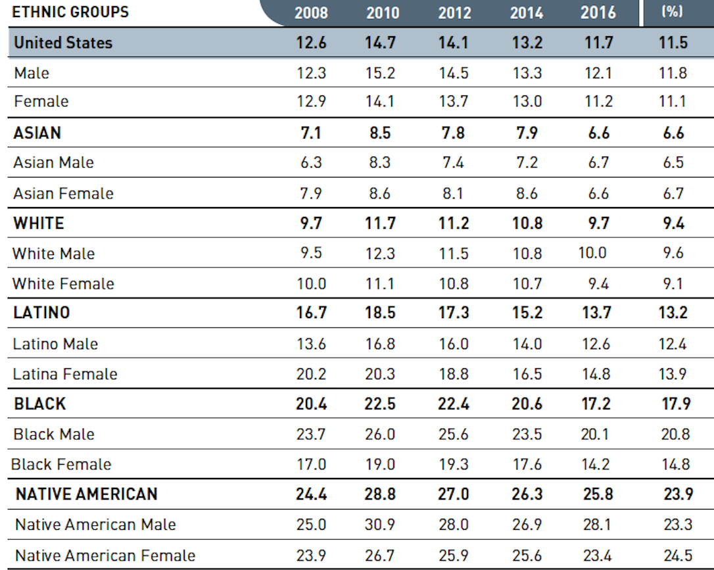</p>
<p>You can download this image file from our <a
href="https://github.com//opencasestudies/ocs-bp-youth-disconnection">GitHub
repository</a> to follow along <a
href="https://raw.githubusercontent.com/opencasestudies/ocs-bp-youth-disconnection/master/data/raw/Major_ethnic_groups_screenshot.png">here</a>.</p>
<p>Next, we use the <code>image_read()</code> function of the
<code>magick</code> package to import this image.</p>
<p>Then, we use the <code>image_info()</code> function to make sure that
the import worked and to get information about the size, format and
color of the image.</p>
<div class="sourceCode" id="cb10"><pre class="sourceCode r"><code class="sourceCode r"><span id="cb10-1"><a href="#cb10-1" tabindex="-1"></a>Major_racial_ethnic_groups <span class="ot">&lt;-</span> </span>
<span id="cb10-2"><a href="#cb10-2" tabindex="-1"></a>  magick<span class="sc">::</span><span class="fu">image_read</span>(here<span class="sc">::</span><span class="fu">here</span>(<span class="st">&quot;data&quot;</span>, <span class="st">&quot;raw&quot;</span>, <span class="st">&quot;Major_ethnic_groups_screenshot.png&quot;</span>))</span>
<span id="cb10-3"><a href="#cb10-3" tabindex="-1"></a></span>
<span id="cb10-4"><a href="#cb10-4" tabindex="-1"></a>magick<span class="sc">::</span><span class="fu">image_info</span>(Major_racial_ethnic_groups)</span></code></pre></div>
<pre><code># A tibble: 1 × 7
  format width height colorspace matte filesize density
  &lt;chr&gt;  &lt;int&gt;  &lt;int&gt; &lt;chr&gt;      &lt;lgl&gt;    &lt;int&gt; &lt;chr&gt;  
1 PNG     1086    867 sRGB       TRUE    368488 72x72  </code></pre>
<p>We get some basic information, such as the file format is a PNG, the
width and height of the image, etc. Let’s take a closer look at our
image in R! Now that we have imported it to see this image, we simply
need to type the name of the image.</p>
<div class="sourceCode" id="cb12"><pre class="sourceCode r"><code class="sourceCode r"><span id="cb12-1"><a href="#cb12-1" tabindex="-1"></a>Major_racial_ethnic_groups</span></code></pre></div>
<p></p>
<p>Nice!</p>
<p>Let’s import a couple more images just for fun. Here we will import
an image directly from a URL.</p>
<div class="sourceCode" id="cb13"><pre class="sourceCode r"><code class="sourceCode r"><span id="cb13-1"><a href="#cb13-1" tabindex="-1"></a>ggplot2_url <span class="ot">&lt;-</span> <span class="st">&quot;https://d33wubrfki0l68.cloudfront.net/2c6239d311be6d037c251c71c3902792f8c4ddd2/12f67/css/images/hex/ggplot2.png&quot;</span></span>
<span id="cb13-2"><a href="#cb13-2" tabindex="-1"></a></span>
<span id="cb13-3"><a href="#cb13-3" tabindex="-1"></a>ggplot2_logo <span class="ot">&lt;-</span> <span class="fu">image_read</span>(ggplot2_url)</span>
<span id="cb13-4"><a href="#cb13-4" tabindex="-1"></a>ggplot2_logo</span></code></pre></div>
<p>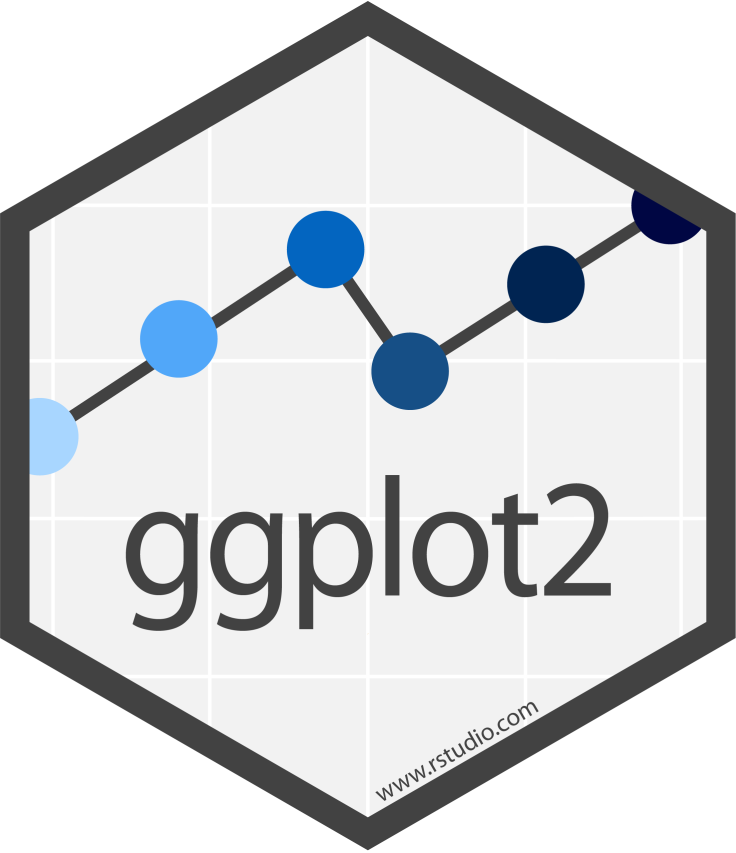</p>
<p>Now we will use the <code>image_ocr()</code> function of the
<code>magick</code> package to extract the text from the ggplot2 logo
image. This function uses the <code>tesseract</code> package which has
tools for <a
href="https://en.wikipedia.org/wiki/Optical_character_recognition">optical
character recognition (OCR)</a>, hence the <code>ocr</code> in the
function name. This allows the function to identify text in images.
These OCR tools have often been developed using <a
href="https://en.wikipedia.org/wiki/Machine_learning">machine
learning</a> in which an algorithm was trained on images with and
without text to “learn” to recognize text. See <a
href="https://towardsdatascience.com/a-gentle-introduction-to-ocr-ee1469a201aa">here</a>
to learn more about how OCR works.</p>
<div class="sourceCode" id="cb14"><pre class="sourceCode r"><code class="sourceCode r"><span id="cb14-1"><a href="#cb14-1" tabindex="-1"></a>magick<span class="sc">::</span><span class="fu">image_ocr</span>(ggplot2_logo)</span></code></pre></div>
<pre><code>[1] &quot;ggplot2\n&quot;</code></pre>
<p>Awesome! We were able to extract text from this hex sticker!</p>
<p>One thing to keep in mind is that this doesn’t always work. Unusual
font, angles text, or particular colors can be difficult for the OCR to
recognize.</p>
<p>Here is an example that does not work with the current version of
<code>magick</code>:</p>
<div class="sourceCode" id="cb16"><pre class="sourceCode r"><code class="sourceCode r"><span id="cb16-1"><a href="#cb16-1" tabindex="-1"></a>tidyverse_url <span class="ot">&lt;-</span> <span class="st">&quot;https://tidyverse.tidyverse.org/logo.png&quot;</span></span>
<span id="cb16-2"><a href="#cb16-2" tabindex="-1"></a></span>
<span id="cb16-3"><a href="#cb16-3" tabindex="-1"></a>tidyverse_logo <span class="ot">&lt;-</span> <span class="fu">image_read</span>(tidyverse_url)</span>
<span id="cb16-4"><a href="#cb16-4" tabindex="-1"></a>tidyverse_logo</span></code></pre></div>
<p></p>
<div class="sourceCode" id="cb17"><pre class="sourceCode r"><code class="sourceCode r"><span id="cb17-1"><a href="#cb17-1" tabindex="-1"></a>magick<span class="sc">::</span><span class="fu">image_ocr</span>(tidyverse_logo)</span></code></pre></div>
<pre><code>[1] &quot;CMe\n&quot;</code></pre>
<p>This is likely do to the background on this particular hex sticker.
So sometimes this process requires a bit of <strong>trial and
error</strong>.</p>
<p>OK! So now let’s try extracting the text for our
<code>Major_racial_ethnic_groups</code> image.</p>
</div>
<div id="major-racial-and-ethnic-groups" class="section level3">
<h3><strong>Major Racial and Ethnic Groups</strong></h3>
<div class="sourceCode" id="cb19"><pre class="sourceCode r"><code class="sourceCode r"><span id="cb19-1"><a href="#cb19-1" tabindex="-1"></a>major_groups <span class="ot">&lt;-</span> magick<span class="sc">::</span><span class="fu">image_ocr</span>(Major_racial_ethnic_groups)</span>
<span id="cb19-2"><a href="#cb19-2" tabindex="-1"></a>major_groups</span></code></pre></div>
<pre><code>[1] &quot;United States 12.6 14.7 14.1 13.2 11.7 11.5\nMale 12.3 15.2 14.5 13.3 12.1 11.8\nFemale 12.9 14.1 13.7 13.0 11.2 11.1\nASIAN 7.1 8.5 78 79 6.6 6.6\nAsian Male 6.3 8.3 74 7.2 6.7 6.5\nAsian Female 7.9 8.6 8.1 8.6 6.6 6.7\nWHITE 9.7 11.7 11.2 10.8 9.7 9.4\nWhite Male 9.5 12.3 11.5 10.8 10.0 9.6\nWhite Female 10.0 11.1 10.8 10.7 9.4 9.1\nLATINO 16.7 18.5 17.3 15.2 13.7 13.2\nLatino Male 13.6 16.8 16.0 14.0 12.6 12.4\nLatina Female 20.2 20.3 18.8 16.5 14.8 13.9\nBLACK 20.4 22.5 22.4 20.6 17.2 17.9\nBlack Male 23.7 26.0 25.6 23.5 20.1 20.8\nBlack Female 17.0 19.0 19.3 17.6 14.2 14.8\nNATIVE AMERICAN 24.4 28.8 27.0 26.3 25.8 23.9\nNative American Male 25.0 30.9 28.0 26.9 28.1 23.3\nNative American Female 23.9 26.7 25.9 25.6 23.4 24.5\n&quot;</code></pre>
<p>This looks like it worked fairly well!</p>
<p>Excellent, now we need to do the same for the other two tables on the
bottom half of this page that we are interested in:</p>
<p></p>
<p>So now we will take some screenshots of the other tables of interest.
<strong>We will later explain why we took the specific screenshots that
we did, but for now just focus on importing the data.</strong> In
general,it is helpful to leave off any additional header information
that you don’t intend to include in the actual table. In addition empty
spaces in tables can cause the need for additional images.</p>
</div>
<div id="asian-subgroups-2017" class="section level3">
<h3><strong>Asian Subgroups 2017</strong></h3>
<hr />
<p>First, we are also interested in data about the Asian subgroups in
2017.</p>
<p>If you have not done so already, you can download the next image file
<a
href="https://raw.githubusercontent.com/opencasestudies/ocs-bp-youth-disconnection/master/data/raw/asian_subgroups_2017.png">here</a>.</p>
<div id="section-18" class="section level4 recall_code_question_block">
<h4 class="recall_code_question_block"></h4>
<p><b><u> Question Opportunity </u></b></p>
<p>Can you recall the command to import an image into R using the
<code>magick</code> package?</p>
</div>
<div id="section-19" class="section level4">
<h4></h4>
<hr />
<details>
<summary>
Click here to reveal the code.
</summary>
<div class="sourceCode" id="cb21"><pre class="sourceCode r"><code class="sourceCode r"><span id="cb21-1"><a href="#cb21-1" tabindex="-1"></a>asian_sub_2017 <span class="ot">&lt;-</span> <span class="fu">image_read</span>(here<span class="sc">::</span><span class="fu">here</span>(<span class="st">&quot;data&quot;</span>, <span class="st">&quot;raw&quot;</span>, <span class="st">&quot;asian_subgroups_2017.png&quot;</span>))</span></code></pre></div>
</details>
<hr />
<div class="sourceCode" id="cb22"><pre class="sourceCode r"><code class="sourceCode r"><span id="cb22-1"><a href="#cb22-1" tabindex="-1"></a>asian_sub_2017</span></code></pre></div>
<p>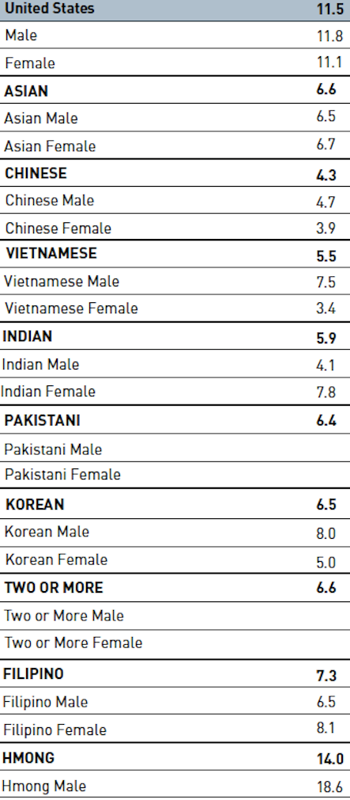</p>
</div>
<div id="section-20" class="section level4 recall_code_question_block">
<h4 class="recall_code_question_block"></h4>
<p><b><u> Question Opportunity </u></b></p>
<p>Can you recall the command to extract the text from an image using
the <code>magick</code> package?</p>
</div>
<div id="section-21" class="section level4">
<h4></h4>
<hr />
<details>
<summary>
Click here to reveal the code.
</summary>
<div class="sourceCode" id="cb23"><pre class="sourceCode r"><code class="sourceCode r"><span id="cb23-1"><a href="#cb23-1" tabindex="-1"></a>asian_sub_2017 <span class="ot">&lt;-</span> <span class="fu">image_ocr</span>(asian_sub_2017)</span></code></pre></div>
</details>
<hr />
<div class="sourceCode" id="cb24"><pre class="sourceCode r"><code class="sourceCode r"><span id="cb24-1"><a href="#cb24-1" tabindex="-1"></a>asian_sub_2017</span></code></pre></div>
<pre><code>[1] &quot;United States 11.5\nMale 11.8\nFemale 11.1\nASIAN 6.8\nAsian Male 65\nAsian Female 67\nCHINESE 43\nChinese Male AT\nChinese Female 3.9\nVIETNAMESE 5.5\nVietnamese Male 75\nVietnamese Female 3.4\nINDIAN 5.9\nIndian Male 4.1\nIndian Female 78\nPAKISTANI 64\nPakistani Male\n\nPakistani Female\n\nKOREAN 65\nKorean Male 8.0\nKorean Female 5.0\nTWO OR MORE 68\nTwo or More Male\n\nTwo or More Female\nFILIPINO. S™S™~SS\nFilipino Male 65\nFilipino Female 81\nHMONG 14.0\nHmong Male 18.6\n&quot;</code></pre>
<p>Trial and error during the wrangling section will demonstrate that we
needed some additional images. We will import these now.</p>
<p>If you have not done so already, you can download the next image
files to follow along <a
href="https://raw.githubusercontent.com/opencasestudies/ocs-bp-youth-disconnection/master/data/raw/asian_sub_2017_A.png">here</a>
and <a
href="https://raw.githubusercontent.com/opencasestudies/ocs-bp-youth-disconnection/master/data/raw/asian_sub_2017_B.png">here</a>
and <a
href="https://raw.githubusercontent.com/opencasestudies/ocs-bp-youth-disconnection/master/data/raw/asian_sub_2017_C.png">here</a>.</p>
<div class="sourceCode" id="cb26"><pre class="sourceCode r"><code class="sourceCode r"><span id="cb26-1"><a href="#cb26-1" tabindex="-1"></a>asian_sub_2017_A <span class="ot">&lt;-</span> <span class="fu">image_read</span>(<span class="fu">here</span>(<span class="st">&quot;data&quot;</span>, <span class="st">&quot;raw&quot;</span>, <span class="st">&quot;asian_sub_2017_A.png&quot;</span>))</span>
<span id="cb26-2"><a href="#cb26-2" tabindex="-1"></a>asian_sub_2017_B <span class="ot">&lt;-</span> <span class="fu">image_read</span>(<span class="fu">here</span>(<span class="st">&quot;data&quot;</span>, <span class="st">&quot;raw&quot;</span>, <span class="st">&quot;asian_sub_2017_B.png&quot;</span>))</span>
<span id="cb26-3"><a href="#cb26-3" tabindex="-1"></a>asian_sub_2017_C <span class="ot">&lt;-</span> <span class="fu">image_read</span>(<span class="fu">here</span>(<span class="st">&quot;data&quot;</span>, <span class="st">&quot;raw&quot;</span>, <span class="st">&quot;asian_sub_2017_C.png&quot;</span>))</span>
<span id="cb26-4"><a href="#cb26-4" tabindex="-1"></a></span>
<span id="cb26-5"><a href="#cb26-5" tabindex="-1"></a>asian_sub_2017_A</span></code></pre></div>
<p>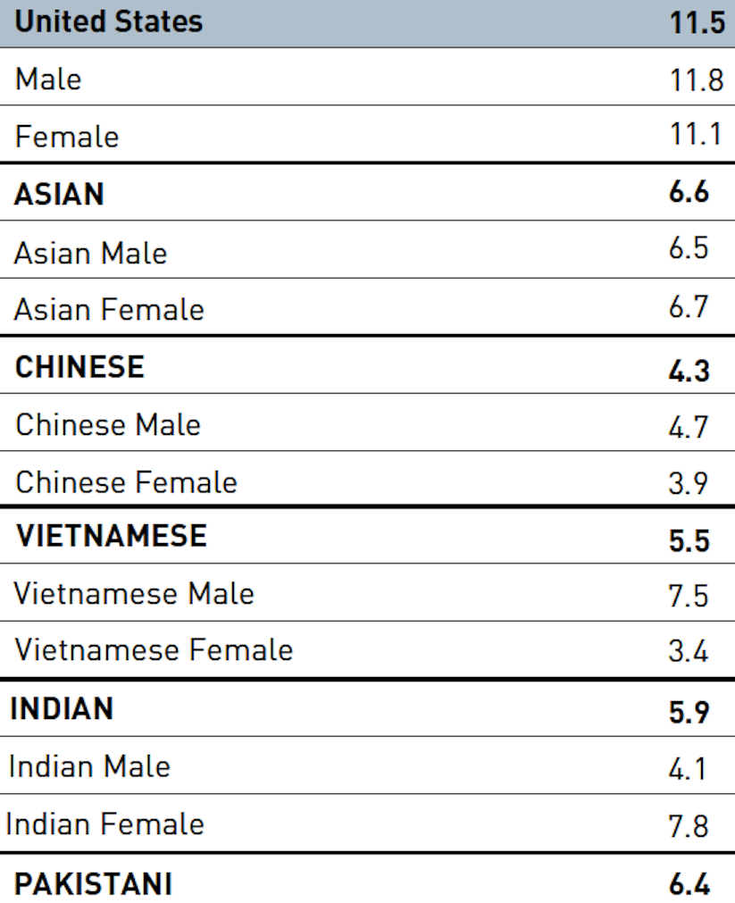</p>
<div class="sourceCode" id="cb27"><pre class="sourceCode r"><code class="sourceCode r"><span id="cb27-1"><a href="#cb27-1" tabindex="-1"></a>asian_sub_2017_B</span></code></pre></div>
<p>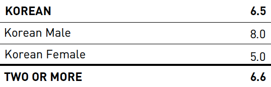</p>
<div class="sourceCode" id="cb28"><pre class="sourceCode r"><code class="sourceCode r"><span id="cb28-1"><a href="#cb28-1" tabindex="-1"></a>asian_sub_2017_C</span></code></pre></div>
<p>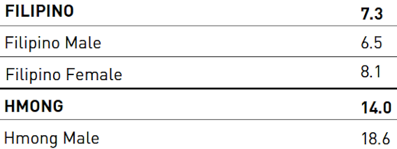</p>
<div class="sourceCode" id="cb29"><pre class="sourceCode r"><code class="sourceCode r"><span id="cb29-1"><a href="#cb29-1" tabindex="-1"></a>asian_sub_2017_A <span class="ot">&lt;-</span> <span class="fu">image_ocr</span>(asian_sub_2017_A)</span>
<span id="cb29-2"><a href="#cb29-2" tabindex="-1"></a>asian_sub_2017_B <span class="ot">&lt;-</span> <span class="fu">image_ocr</span>(asian_sub_2017_B)</span>
<span id="cb29-3"><a href="#cb29-3" tabindex="-1"></a>asian_sub_2017_C <span class="ot">&lt;-</span> <span class="fu">image_ocr</span>(asian_sub_2017_C)</span>
<span id="cb29-4"><a href="#cb29-4" tabindex="-1"></a></span>
<span id="cb29-5"><a href="#cb29-5" tabindex="-1"></a>asian_sub_2017_A</span></code></pre></div>
<pre><code>[1] &quot;United States 11.5\nMale 11.8\nFemale 11.1\nASIAN 6.6\nAsian Male 6.5\nAsian Female 6.7\nCHINESE 4.3\nChinese Male 4.7\nChinese Female 3.9\nVIETNAMESE 5.5\nVietnamese Male 7.5\nVietnamese Female 3.4\nINDIAN 5.9\nIndian Male 4.1\nIndian Female 7.8\nPAKISTANI 6.4\n&quot;</code></pre>
<div class="sourceCode" id="cb31"><pre class="sourceCode r"><code class="sourceCode r"><span id="cb31-1"><a href="#cb31-1" tabindex="-1"></a>asian_sub_2017_B </span></code></pre></div>
<pre><code>[1] &quot;KOREAN 6.5\nKorean Male 8.0\nKorean Female 5.0\nTWO OR MORE 6.6\n&quot;</code></pre>
<div class="sourceCode" id="cb33"><pre class="sourceCode r"><code class="sourceCode r"><span id="cb33-1"><a href="#cb33-1" tabindex="-1"></a>asian_sub_2017_C</span></code></pre></div>
<pre><code>[1] &quot;FILIPINO 7.3\nFilipino Male 6.5\nFilipino Female 8.1\nHMONG 14.0\nHmong Male 18.6\n&quot;</code></pre>
<p>OK, now moving on to the last table on this page</p>
</div>
</div>
<div id="latinx-subgroups-2017" class="section level3">
<h3><strong>Latinx Subgroups 2017</strong></h3>
<p>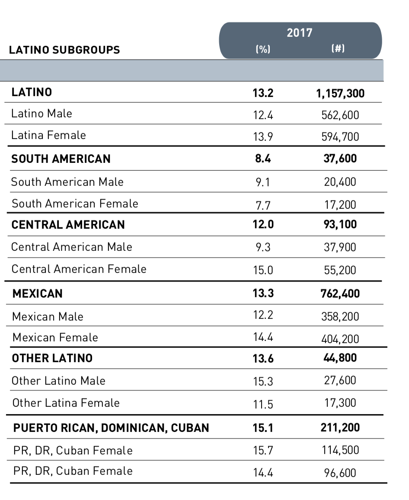</p>
<p>Again after trial and error, three screenshots were determined best
for importing this data.</p>
<p>The names of the files for the screenshots are
<code>latinx_sub_2017_A.png</code>, <code>"latinx_sub_2017_B.png</code>,
and <code>"latinx_sub_2017_C.png"</code>. They are located in the “raw”
subdirectory of the “data” directory in our GitHub repository.</p>
<p>If you have not done so already, you can download the next image
files to follow along <a
href="https://raw.githubusercontent.com/opencasestudies/ocs-bp-youth-disconnection/master/data/raw/latinx_sub_2017_A.png">here</a>
and <a
href="https://raw.githubusercontent.com/opencasestudies/ocs-bp-youth-disconnection/master/data/raw/latinx_sub_2017_B.png">here</a>
and <a
href="https://raw.githubusercontent.com/opencasestudies/ocs-bp-youth-disconnection/master/data/raw/latinx_sub_2017_C.png">here</a>.</p>
<div id="section-22" class="section level4 recall_code_question_block">
<h4 class="recall_code_question_block"></h4>
<p><b><u> Question Opportunity </u></b></p>
<p>Can you recall the commands to import and extract the data?</p>
</div>
<div id="section-23" class="section level4">
<h4></h4>
<hr />
<details>
<summary>
Click here to reveal the code.
</summary>
<div class="sourceCode" id="cb35"><pre class="sourceCode r"><code class="sourceCode r"><span id="cb35-1"><a href="#cb35-1" tabindex="-1"></a>latinx_imageA <span class="ot">&lt;-</span> <span class="fu">image_read</span>(here<span class="sc">::</span><span class="fu">here</span>(<span class="st">&quot;data&quot;</span>, <span class="st">&quot;raw&quot;</span>, <span class="st">&quot;latinx_sub_2017_A.png&quot;</span>))</span>
<span id="cb35-2"><a href="#cb35-2" tabindex="-1"></a>latinx_imageB <span class="ot">&lt;-</span> <span class="fu">image_read</span>(here<span class="sc">::</span><span class="fu">here</span>(<span class="st">&quot;data&quot;</span>, <span class="st">&quot;raw&quot;</span>, <span class="st">&quot;latinx_sub_2017_B.png&quot;</span>))</span>
<span id="cb35-3"><a href="#cb35-3" tabindex="-1"></a>latinx_imageC <span class="ot">&lt;-</span> <span class="fu">image_read</span>(here<span class="sc">::</span><span class="fu">here</span>(<span class="st">&quot;data&quot;</span>, <span class="st">&quot;raw&quot;</span>, <span class="st">&quot;latinx_sub_2017_C.png&quot;</span>))</span>
<span id="cb35-4"><a href="#cb35-4" tabindex="-1"></a></span>
<span id="cb35-5"><a href="#cb35-5" tabindex="-1"></a>latinx_sub_2017_A <span class="ot">&lt;-</span> <span class="fu">image_ocr</span>(latinx_imageA)</span>
<span id="cb35-6"><a href="#cb35-6" tabindex="-1"></a>latinx_sub_2017_B <span class="ot">&lt;-</span> <span class="fu">image_ocr</span>(latinx_imageB)</span>
<span id="cb35-7"><a href="#cb35-7" tabindex="-1"></a>latinx_sub_2017_C <span class="ot">&lt;-</span> <span class="fu">image_ocr</span>(latinx_imageC)</span></code></pre></div>
</details>
<hr />
<div class="sourceCode" id="cb36"><pre class="sourceCode r"><code class="sourceCode r"><span id="cb36-1"><a href="#cb36-1" tabindex="-1"></a>latinx_imageA</span></code></pre></div>
<p>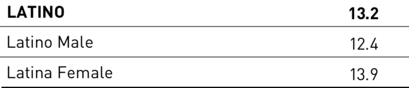</p>
<div class="sourceCode" id="cb37"><pre class="sourceCode r"><code class="sourceCode r"><span id="cb37-1"><a href="#cb37-1" tabindex="-1"></a>latinx_sub_2017_A</span></code></pre></div>
<pre><code>[1] &quot;LATINO 13.2\nLatino Male 12.4\nLatina Female 13.9\n&quot;</code></pre>
<div class="sourceCode" id="cb39"><pre class="sourceCode r"><code class="sourceCode r"><span id="cb39-1"><a href="#cb39-1" tabindex="-1"></a>latinx_imageB</span></code></pre></div>
<p>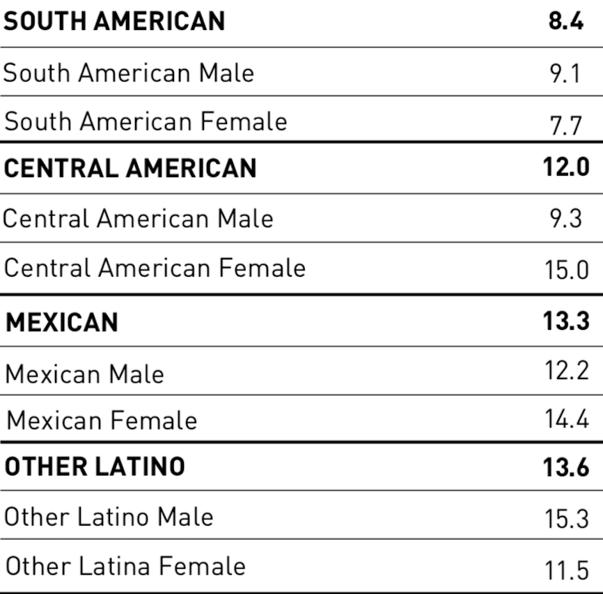</p>
<div class="sourceCode" id="cb40"><pre class="sourceCode r"><code class="sourceCode r"><span id="cb40-1"><a href="#cb40-1" tabindex="-1"></a>latinx_sub_2017_B</span></code></pre></div>
<pre><code>[1] &quot;SOUTH AMERICAN 8.4\nSouth American Male 9.1\nSouth American Female 7.7\nCENTRAL AMERICAN 12.0\nCentral American Male 9.3\nCentral American Female 15.0\nMEXICAN 13.3\nMexican Male 12.2\nMexican Female 14.4\nOTHER LATINO 13.6\nOther Latino Male 15.3\nOther Latina Female 11.5\n&quot;</code></pre>
<div class="sourceCode" id="cb42"><pre class="sourceCode r"><code class="sourceCode r"><span id="cb42-1"><a href="#cb42-1" tabindex="-1"></a>latinx_imageC</span></code></pre></div>
<p>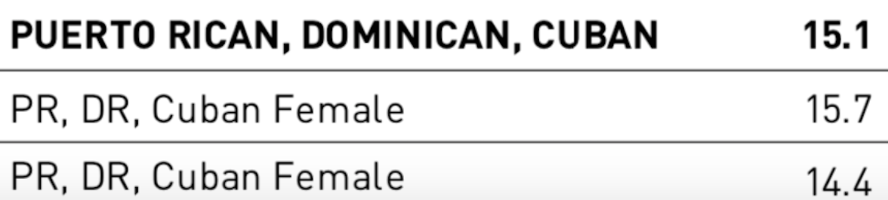</p>
<div class="sourceCode" id="cb43"><pre class="sourceCode r"><code class="sourceCode r"><span id="cb43-1"><a href="#cb43-1" tabindex="-1"></a>latinx_sub_2017_C</span></code></pre></div>
<pre><code>[1] &quot;PUERTO RICAN, DOMINICAN, CUBAN 15.1\nPR, DR, Cuban Female 15.7\nPR, DR, Cuban Female 14.4\n&quot;</code></pre>
<p>Great! Now let’s import the text from some images for the 2018 data
from the other <a
href="https://ssrc-static.s3.amazonaws.com/moa/ADecadeUndone.pdf">report</a>.</p>
</div>
</div>
<div id="asian-subgroups-2018" class="section level3">
<h3><strong>Asian Subgroups 2018</strong></h3>
<hr />
<p>Recall that this was the page with the table of interest for the
Asian subgroups with 2018 data:</p>
<p></p>
<p>As you can see, the data for the subgroups is shown in the table but
the overall data for Asians is located in the text.</p>
<p>We will use a screenshot of each to extract the data for this
year.</p>
<p>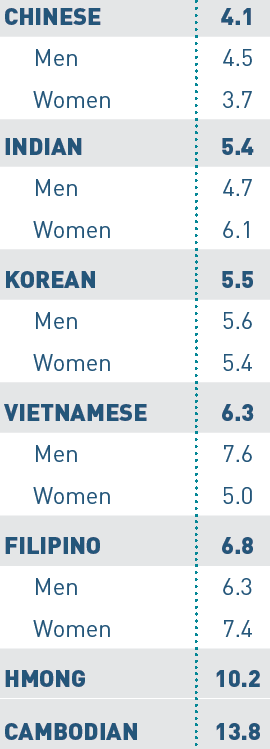</p>
<p>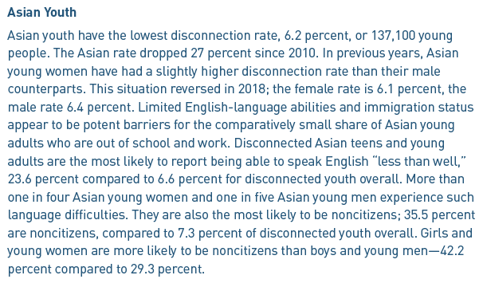</p>
<p>Trial and error indicated that again dividing the table into multiple
screenshots improved the text extraction:</p>
<div class="sourceCode" id="cb45"><pre class="sourceCode r"><code class="sourceCode r"><span id="cb45-1"><a href="#cb45-1" tabindex="-1"></a>asian_sub_2018_A <span class="ot">&lt;-</span> <span class="fu">image_read</span>(here<span class="sc">::</span><span class="fu">here</span>(<span class="st">&quot;data&quot;</span>, <span class="st">&quot;raw&quot;</span>, <span class="st">&quot;asian_sub_2018_A.png&quot;</span>))</span>
<span id="cb45-2"><a href="#cb45-2" tabindex="-1"></a>asian_sub_2018_A <span class="ot">&lt;-</span> <span class="fu">image_ocr</span>(asian_sub_2018_A)</span>
<span id="cb45-3"><a href="#cb45-3" tabindex="-1"></a>asian_sub_2018_B <span class="ot">&lt;-</span> <span class="fu">image_read</span>(here<span class="sc">::</span><span class="fu">here</span>(<span class="st">&quot;data&quot;</span>, <span class="st">&quot;raw&quot;</span>, <span class="st">&quot;asian_sub_2018_B.png&quot;</span>))</span>
<span id="cb45-4"><a href="#cb45-4" tabindex="-1"></a>asian_sub_2018_B <span class="ot">&lt;-</span> <span class="fu">image_ocr</span>(asian_sub_2018_B)</span></code></pre></div>
<p>Finally let’s get the Latinx subgroup data for 2018</p>
</div>
<div id="latinx-subgroups-2018" class="section level3">
<h3><strong>Latinx Subgroups 2018</strong></h3>
<hr />
<p>Recall that this was the page with the table of interest for the
Latinx subgroup 2018 data (published in 2020):</p>
<p></p>
<p>In this case only a single image was needed:</p>
<div class="sourceCode" id="cb46"><pre class="sourceCode r"><code class="sourceCode r"><span id="cb46-1"><a href="#cb46-1" tabindex="-1"></a>latinx_sub_2018 <span class="ot">&lt;-</span> <span class="fu">image_read</span>(here<span class="sc">::</span><span class="fu">here</span>(<span class="st">&quot;data&quot;</span>, <span class="st">&quot;raw&quot;</span>, <span class="st">&quot;latinx_subgroups_2018.png&quot;</span>))</span>
<span id="cb46-2"><a href="#cb46-2" tabindex="-1"></a>latinx_sub_2018 <span class="ot">&lt;-</span> <span class="fu">image_ocr</span>(latinx_sub_2018)</span>
<span id="cb46-3"><a href="#cb46-3" tabindex="-1"></a>latinx_sub_2018</span></code></pre></div>
<pre><code>[1] &quot;SOUTH :\n\nAMERICAN : 8.0\nMen 7.5\nMEXICAN 12.9\nMen 12.0\nWomen 13.8\nPR, DR, CUBAN 13.7\nMen 14.9\nWomen 12.4\nCENTRAL\n\nAMERICAN : 13.7\nMen 11.8\nWomen : 15.9\n&quot;</code></pre>
<p>Excellent! Now let’s save all our imported data for users to start at
later sections.</p>
<div class="sourceCode" id="cb48"><pre class="sourceCode r"><code class="sourceCode r"><span id="cb48-1"><a href="#cb48-1" tabindex="-1"></a><span class="fu">save</span>(</span>
<span id="cb48-2"><a href="#cb48-2" tabindex="-1"></a>  major_groups,</span>
<span id="cb48-3"><a href="#cb48-3" tabindex="-1"></a>  asian_sub_2017,</span>
<span id="cb48-4"><a href="#cb48-4" tabindex="-1"></a>  asian_sub_2017_A, </span>
<span id="cb48-5"><a href="#cb48-5" tabindex="-1"></a>  asian_sub_2017_B,</span>
<span id="cb48-6"><a href="#cb48-6" tabindex="-1"></a>  asian_sub_2017_C, </span>
<span id="cb48-7"><a href="#cb48-7" tabindex="-1"></a>  latinx_sub_2017_A,</span>
<span id="cb48-8"><a href="#cb48-8" tabindex="-1"></a>  latinx_sub_2017_B,</span>
<span id="cb48-9"><a href="#cb48-9" tabindex="-1"></a>  latinx_sub_2017_C,</span>
<span id="cb48-10"><a href="#cb48-10" tabindex="-1"></a>  asian_sub_2018_A,</span>
<span id="cb48-11"><a href="#cb48-11" tabindex="-1"></a>  asian_sub_2018_B,</span>
<span id="cb48-12"><a href="#cb48-12" tabindex="-1"></a>  latinx_sub_2018,</span>
<span id="cb48-13"><a href="#cb48-13" tabindex="-1"></a>  <span class="at">file =</span> here<span class="sc">::</span><span class="fu">here</span>(<span class="st">&quot;data&quot;</span>, <span class="st">&quot;imported&quot;</span>, <span class="st">&quot;imported_data.rda&quot;</span>))</span></code></pre></div>
</div>
</div>
<div id="data-wrangling" class="section level2">
<h2><strong>Data Wrangling</strong></h2>
<hr />
<p>Now let’s try extracting the text from our image files.</p>
<p>If you have been following along but stopped and are starting here
you could load the imported data using the following command:</p>
<div class="sourceCode" id="cb49"><pre class="sourceCode r"><code class="sourceCode r"><span id="cb49-1"><a href="#cb49-1" tabindex="-1"></a><span class="fu">load</span>(here<span class="sc">::</span><span class="fu">here</span>(<span class="st">&quot;data&quot;</span>, <span class="st">&quot;imported&quot;</span>, <span class="st">&quot;imported_data.rda&quot;</span>))</span></code></pre></div>
<hr />
<details>
<summary>
If you skipped the data import section click here.
</summary>
<p>First you need to install the <code>OCSdata</code> package:</p>
<div class="sourceCode" id="cb50"><pre class="sourceCode r"><code class="sourceCode r"><span id="cb50-1"><a href="#cb50-1" tabindex="-1"></a><span class="fu">install.packages</span>(<span class="st">&quot;OCSdata&quot;</span>)</span></code></pre></div>
<p>Then, you may load the imported data into your R environment using
the following code:</p>
<div class="sourceCode" id="cb51"><pre class="sourceCode r"><code class="sourceCode r"><span id="cb51-1"><a href="#cb51-1" tabindex="-1"></a><span class="co"># library(OCSdata)</span></span>
<span id="cb51-2"><a href="#cb51-2" tabindex="-1"></a><span class="fu">imported_data</span>(<span class="st">&quot;ocs-bp-youth-disconnection&quot;</span>, <span class="at">outpath =</span> <span class="fu">getwd</span>())</span>
<span id="cb51-3"><a href="#cb51-3" tabindex="-1"></a><span class="fu">load</span>(here<span class="sc">::</span><span class="fu">here</span>(<span class="st">&quot;OCSdata&quot;</span>, <span class="st">&quot;data&quot;</span>, <span class="st">&quot;imported&quot;</span>, <span class="st">&quot;imported_data.rda&quot;</span>))</span></code></pre></div>
<p>If the package does not work for you, an RDA file (stands for R data)
of the data can be found <a
href="https://github.com//opencasestudies/ocs-bp-youth-disconnection/tree/master/data/imported">here</a>
or slightly more directly <a
href="https://raw.githubusercontent.com/opencasestudies/ocs-bp-youth-disconnection/master/data/imported/imported_data.rda">here</a>.
Download this file and then place it in your current working directory
within a subdirectory called “imported” within a subdirectory called
“data” to copy and paste our code. We used an RStudio project and the <a
href="https://github.com/jennybc/here_here"><code>here</code>
package</a> to navigate to the file more easily.</p>
<div class="sourceCode" id="cb52"><pre class="sourceCode r"><code class="sourceCode r"><span id="cb52-1"><a href="#cb52-1" tabindex="-1"></a><span class="fu">load</span>(here<span class="sc">::</span><span class="fu">here</span>(<span class="st">&quot;data&quot;</span>, <span class="st">&quot;imported&quot;</span>, <span class="st">&quot;imported_data.rda&quot;</span>))</span></code></pre></div>
<hr />
<details>
<summary>
Click here to see more about creating new projects in RStudio.
</summary>
<p>You can create a project by going to the File menu of RStudio like
so:</p>
<p></p>
<p>You can also do so by clicking the project button:</p>
<p></p>
<p>See <a
href="https://support.rstudio.com/hc/en-us/articles/200526207-Using-Projects">here</a>
to learn more about using RStudio projects and <a
href="https://github.com/jennybc/here_here">here</a> to learn more about
the <code>here</code> package.</p>
</details>
<hr />
</details>
<hr />
<div id="major-racial-and-ethnic-groups-1" class="section level3">
<h3><strong>Major Racial and Ethnic Groups</strong></h3>
<hr />
<p>The first image we imported looks like this.</p>
<div class="sourceCode" id="cb53"><pre class="sourceCode r"><code class="sourceCode r"><span id="cb53-1"><a href="#cb53-1" tabindex="-1"></a>knitr<span class="sc">::</span><span class="fu">include_graphics</span>(here<span class="sc">::</span><span class="fu">here</span>(<span class="st">&quot;data&quot;</span>, <span class="st">&quot;raw&quot;</span>, <span class="st">&quot;Major_ethnic_groups_screenshot.png&quot;</span>))</span></code></pre></div>
<p></p>
<p>After extracting the text we got this:</p>
<div class="sourceCode" id="cb54"><pre class="sourceCode r"><code class="sourceCode r"><span id="cb54-1"><a href="#cb54-1" tabindex="-1"></a>major_groups </span></code></pre></div>
<pre><code>[1] &quot;United States 12.6 14.7 14.1 13.2 11.7 11.5\nMale 12.3 15.2 14.5 13.3 12.1 11.8\nFemale 12.9 14.1 13.7 13.0 11.2 11.1\nASIAN 7.1 8.5 78 79 6.6 6.6\nAsian Male 6.3 8.3 74 7.2 6.7 6.5\nAsian Female 7.9 8.6 8.1 8.6 6.6 6.7\nWHITE 9.7 11.7 11.2 10.8 9.7 9.4\nWhite Male 9.5 12.3 11.5 10.8 10.0 9.6\nWhite Female 10.0 11.1 10.8 10.7 9.4 9.1\nLATINO 16.7 18.5 17.3 15.2 13.7 13.2\nLatino Male 13.6 16.8 16.0 14.0 12.6 12.4\nLatina Female 20.2 20.3 18.8 16.5 14.8 13.9\nBLACK 20.4 22.5 22.4 20.6 17.2 17.9\nBlack Male 23.7 26.0 25.6 23.5 20.1 20.8\nBlack Female 17.0 19.0 19.3 17.6 14.2 14.8\nNATIVE AMERICAN 24.4 28.8 27.0 26.3 25.8 23.9\nNative American Male 25.0 30.9 28.0 26.9 28.1 23.3\nNative American Female 23.9 26.7 25.9 25.6 23.4 24.5\n&quot;</code></pre>
<p>We appear to have lost the column names (likely because of the
different background color) but the values look pretty good.</p>
<p>You may notice that there are lots of <code>\n</code> values in the
text from our image. These are <a
href="https://en.wikipedia.org/wiki/Newline?oldformat=true"><strong>newline</strong></a>
characters, which denote the end of a line of text and the start of a
new line of text.</p>
<p>To deal with these, we use the <code>str_split()</code> function of
the <code>stringr</code> package to split based on the <code>\n</code>
characters in the output, which turns out to be a list. Then, we can
“unlist” the output using the base R <code>unlist()</code> function. By
base R, we mean that the function it is loaded automatically in an R
session. Finally, we use the <code>as_tibble()</code> function of the
<code>tibble</code> package to convert the data into <a
href="https://tibble.tidyverse.org/">tibble</a> format, which is the
tidyverse version of a data frame. This will allow us to see the values
in the table much better.</p>
<p>To do all of these sequential steps efficiently we will use a method
called piping.</p>
<hr />
<details>
<summary>
Click here if you are unfamiliar with piping in R, which uses this
<code>%&gt;%</code> operator.
</summary>
<p>By <a
href="https://cran.r-project.org/web/packages/magrittr/vignettes/magrittr.html">piping</a>
we mean using the <code>%&gt;%</code> pipe operator which is accessible
after loading the <code>tidyverse</code> or several of the packages
within the tidyverse like <code>dplyr</code> because they load the <a
href="https://cran.r-project.org/web/packages/magrittr/vignettes/magrittr.html"><code>magrittr</code>
package</a>. This allows us to perform multiple sequential steps on one
data input.<br />
It takes the object in front of the <code>%&gt;%</code> pipe operator as
the first argument of the function after the pipe operator.</p>
<p>For example, the following two lines of code are equivalent.</p>
<div class="sourceCode" id="cb56"><pre class="sourceCode r"><code class="sourceCode r"><span id="cb56-1"><a href="#cb56-1" tabindex="-1"></a><span class="fu">head</span>(mtcars, <span class="at">n =</span> <span class="dv">2</span>)</span></code></pre></div>
<pre><code>              mpg cyl disp  hp drat    wt  qsec vs am gear carb
Mazda RX4      21   6  160 110  3.9 2.620 16.46  0  1    4    4
Mazda RX4 Wag  21   6  160 110  3.9 2.875 17.02  0  1    4    4</code></pre>
<div class="sourceCode" id="cb58"><pre class="sourceCode r"><code class="sourceCode r"><span id="cb58-1"><a href="#cb58-1" tabindex="-1"></a>mtcars <span class="sc">%&gt;%</span> <span class="fu">head</span>(<span class="at">n =</span> <span class="dv">2</span>)</span></code></pre></div>
<pre><code>              mpg cyl disp  hp drat    wt  qsec vs am gear carb
Mazda RX4      21   6  160 110  3.9 2.620 16.46  0  1    4    4
Mazda RX4 Wag  21   6  160 110  3.9 2.875 17.02  0  1    4    4</code></pre>
</details>
<hr />
<div class="sourceCode" id="cb60"><pre class="sourceCode r"><code class="sourceCode r"><span id="cb60-1"><a href="#cb60-1" tabindex="-1"></a> major_groups <span class="ot">&lt;-</span> </span>
<span id="cb60-2"><a href="#cb60-2" tabindex="-1"></a>  major_groups <span class="sc">%&gt;%</span></span>
<span id="cb60-3"><a href="#cb60-3" tabindex="-1"></a>  stringr<span class="sc">::</span><span class="fu">str_split</span>(<span class="at">pattern =</span><span class="st">&quot;</span><span class="sc">\n</span><span class="st">&quot;</span>) <span class="sc">%&gt;%</span></span>
<span id="cb60-4"><a href="#cb60-4" tabindex="-1"></a>  <span class="fu">unlist</span>() <span class="sc">%&gt;%</span></span>
<span id="cb60-5"><a href="#cb60-5" tabindex="-1"></a>  tibble<span class="sc">::</span><span class="fu">as_tibble</span>()</span></code></pre></div>
<div id="section-24" class="section level4 scrollable">
<h4 class="scrollable"></h4>
<div class="sourceCode" id="cb61"><pre class="sourceCode r"><code class="sourceCode r"><span id="cb61-1"><a href="#cb61-1" tabindex="-1"></a>major_groups <span class="sc">%&gt;%</span> </span>
<span id="cb61-2"><a href="#cb61-2" tabindex="-1"></a>  <span class="fu">print</span>(<span class="at">n =</span> <span class="dv">20</span>)</span></code></pre></div>
<pre><code># A tibble: 19 × 1
   value                                                 
   &lt;chr&gt;                                                 
 1 &quot;United States 12.6 14.7 14.1 13.2 11.7 11.5&quot;         
 2 &quot;Male 12.3 15.2 14.5 13.3 12.1 11.8&quot;                  
 3 &quot;Female 12.9 14.1 13.7 13.0 11.2 11.1&quot;                
 4 &quot;ASIAN 7.1 8.5 78 79 6.6 6.6&quot;                         
 5 &quot;Asian Male 6.3 8.3 74 7.2 6.7 6.5&quot;                   
 6 &quot;Asian Female 7.9 8.6 8.1 8.6 6.6 6.7&quot;                
 7 &quot;WHITE 9.7 11.7 11.2 10.8 9.7 9.4&quot;                    
 8 &quot;White Male 9.5 12.3 11.5 10.8 10.0 9.6&quot;              
 9 &quot;White Female 10.0 11.1 10.8 10.7 9.4 9.1&quot;            
10 &quot;LATINO 16.7 18.5 17.3 15.2 13.7 13.2&quot;                
11 &quot;Latino Male 13.6 16.8 16.0 14.0 12.6 12.4&quot;           
12 &quot;Latina Female 20.2 20.3 18.8 16.5 14.8 13.9&quot;         
13 &quot;BLACK 20.4 22.5 22.4 20.6 17.2 17.9&quot;                 
14 &quot;Black Male 23.7 26.0 25.6 23.5 20.1 20.8&quot;            
15 &quot;Black Female 17.0 19.0 19.3 17.6 14.2 14.8&quot;          
16 &quot;NATIVE AMERICAN 24.4 28.8 27.0 26.3 25.8 23.9&quot;       
17 &quot;Native American Male 25.0 30.9 28.0 26.9 28.1 23.3&quot;  
18 &quot;Native American Female 23.9 26.7 25.9 25.6 23.4 24.5&quot;
19 &quot;&quot;                                                    </code></pre>
</div>
<div id="section-25" class="section level4">
<h4></h4>
<p>OK, this looks pretty good!</p>
<p>The only issue is that some values appear to be missing a decimal
point.</p>
<p>No worries though, we can modify the entire table in a reproducible
way to get those decimal places back. However, first we need to do some
other wrangling steps first.</p>
<p>First, let’s separate the first column about ethnicities with the
values in the subsequent columns. We can do so using the
<code>separate()</code> function of the <code>tidyr</code> package based
on <a href="https://en.wikipedia.org/wiki/Regular_expression">regular
expressions</a>. Regular expressions (abbreviated regex) are notation
shortcuts that describe patterns in character strings. See <a
href="https://github.com/rstudio/cheatsheets/raw/master/strings.pdf">here</a>
for an RStudio cheatsheet about them.</p>
<p>We want to separate by instances where a letter is followed by a
space and then a number.</p>
<p>We can specify any letter by using the regex <code>[:alpha:]</code>
notation and any number by using the regex <code>[:digit:]</code>
notation. We could have listed every letter that we saw the first column
ending with like so <code>s|e|E|O|K|N</code> but this would not be as
reproducible (meaning maybe this would not work as well next year if a
new group were added that ended in a different letter), and we might
make a mistake. This is why the regex are so useful.</p>
<p>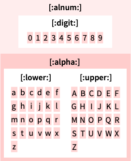
We can indicate that we want a space by using this regex:</p>
<p>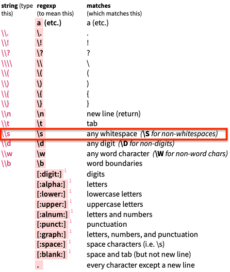</p>
<p>Now to specify that we want to see a letter first followed by a
space, followed by a digit, we need to use a look around:</p>
<p>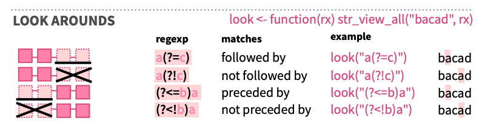</p>
<p>We will use the “preceded by” and “followed by” lookarounds. Thus
<code>(?&lt;=[[:alpha:]])</code> stands for any letter that appears
before a space <code>\\s</code> that is followed by any digit
<code>(?=[0-9])</code>. Altogether the pattern we want to separate by
looks like this: <code>"(?&lt;=[[:alpha:]])\\s(?=[0-9])"</code>.</p>
<p>Now to separate the value column into two columns, we can use the
<code>separate()</code> function of the <code>tidyr</code> package to do
this. This will allow us to not only split the rows by our regex
expression, but also to create column names.</p>
<p>There are three important arguments for the <code>separate()</code>
function:<br />
- <code>col</code> - this specifies what column you are separating<br />
- <code>into</code> - this specifies the names of the new columns you
are creating<br />
- <code>sep</code> - this specifies what character string to look for to
separate by</p>
<p>Thus we will separate the <code>value</code> column into
<code>Group</code> and <code>years</code> columns.</p>
<div class="sourceCode" id="cb63"><pre class="sourceCode r"><code class="sourceCode r"><span id="cb63-1"><a href="#cb63-1" tabindex="-1"></a>major_groups <span class="ot">&lt;-</span> </span>
<span id="cb63-2"><a href="#cb63-2" tabindex="-1"></a>  major_groups <span class="sc">%&gt;%</span></span>
<span id="cb63-3"><a href="#cb63-3" tabindex="-1"></a>  tidyr<span class="sc">::</span><span class="fu">separate</span>(<span class="at">col =</span> value, </span>
<span id="cb63-4"><a href="#cb63-4" tabindex="-1"></a>                  <span class="at">into =</span> <span class="fu">c</span>(<span class="st">&quot;Group&quot;</span>, <span class="st">&quot;Years&quot;</span>), </span>
<span id="cb63-5"><a href="#cb63-5" tabindex="-1"></a>                  <span class="at">sep =</span> <span class="st">&quot;(?&lt;=[[:alpha:]])</span><span class="sc">\\</span><span class="st">s(?=[0-9])&quot;</span>)</span>
<span id="cb63-6"><a href="#cb63-6" tabindex="-1"></a></span>
<span id="cb63-7"><a href="#cb63-7" tabindex="-1"></a>major_groups</span></code></pre></div>
<pre><code># A tibble: 19 × 2
   Group                    Years                        
   &lt;chr&gt;                    &lt;chr&gt;                        
 1 &quot;United States&quot;          12.6 14.7 14.1 13.2 11.7 11.5
 2 &quot;Male&quot;                   12.3 15.2 14.5 13.3 12.1 11.8
 3 &quot;Female&quot;                 12.9 14.1 13.7 13.0 11.2 11.1
 4 &quot;ASIAN&quot;                  7.1 8.5 78 79 6.6 6.6        
 5 &quot;Asian Male&quot;             6.3 8.3 74 7.2 6.7 6.5       
 6 &quot;Asian Female&quot;           7.9 8.6 8.1 8.6 6.6 6.7      
 7 &quot;WHITE&quot;                  9.7 11.7 11.2 10.8 9.7 9.4   
 8 &quot;White Male&quot;             9.5 12.3 11.5 10.8 10.0 9.6  
 9 &quot;White Female&quot;           10.0 11.1 10.8 10.7 9.4 9.1  
10 &quot;LATINO&quot;                 16.7 18.5 17.3 15.2 13.7 13.2
11 &quot;Latino Male&quot;            13.6 16.8 16.0 14.0 12.6 12.4
12 &quot;Latina Female&quot;          20.2 20.3 18.8 16.5 14.8 13.9
13 &quot;BLACK&quot;                  20.4 22.5 22.4 20.6 17.2 17.9
14 &quot;Black Male&quot;             23.7 26.0 25.6 23.5 20.1 20.8
15 &quot;Black Female&quot;           17.0 19.0 19.3 17.6 14.2 14.8
16 &quot;NATIVE AMERICAN&quot;        24.4 28.8 27.0 26.3 25.8 23.9
17 &quot;Native American Male&quot;   25.0 30.9 28.0 26.9 28.1 23.3
18 &quot;Native American Female&quot; 23.9 26.7 25.9 25.6 23.4 24.5
19 &quot;&quot;                       &lt;NA&gt;                         </code></pre>
<p>Looks good!</p>
<p>Let’s also get rid of the all caps for the major categories of the
<code>Group</code> column. We can convert the words to only capitalize
the first letter using the <code>str_to_title()</code> function of the
<code>stringr</code> package. To specifically modify the
<code>Group</code> column we can use the <code>mutate</code> function of
the <code>dplyr</code> package.</p>
<p>We are also going to use a special pipe operator
(<code>%&lt;&gt;%</code>) from the <a
href="https://cran.r-project.org/web/packages/magrittr/vignettes/magrittr.html"><code>magrittr</code>
package</a> called the compound assignment pipe-operator or sometimes
the double pipe operator.</p>
<p>This allows us to use the <code>major_groups</code> as our input and
reassign it at the end after all the subsequent steps have been
performed, although in this case it is only one step.</p>
<div class="sourceCode" id="cb65"><pre class="sourceCode r"><code class="sourceCode r"><span id="cb65-1"><a href="#cb65-1" tabindex="-1"></a>major_groups <span class="sc">%&lt;&gt;%</span></span>
<span id="cb65-2"><a href="#cb65-2" tabindex="-1"></a>  <span class="fu">mutate</span>(<span class="at">Group =</span> stringr<span class="sc">::</span><span class="fu">str_to_title</span>(Group))</span>
<span id="cb65-3"><a href="#cb65-3" tabindex="-1"></a></span>
<span id="cb65-4"><a href="#cb65-4" tabindex="-1"></a>major_groups</span></code></pre></div>
<pre><code># A tibble: 19 × 2
   Group                    Years                        
   &lt;chr&gt;                    &lt;chr&gt;                        
 1 &quot;United States&quot;          12.6 14.7 14.1 13.2 11.7 11.5
 2 &quot;Male&quot;                   12.3 15.2 14.5 13.3 12.1 11.8
 3 &quot;Female&quot;                 12.9 14.1 13.7 13.0 11.2 11.1
 4 &quot;Asian&quot;                  7.1 8.5 78 79 6.6 6.6        
 5 &quot;Asian Male&quot;             6.3 8.3 74 7.2 6.7 6.5       
 6 &quot;Asian Female&quot;           7.9 8.6 8.1 8.6 6.6 6.7      
 7 &quot;White&quot;                  9.7 11.7 11.2 10.8 9.7 9.4   
 8 &quot;White Male&quot;             9.5 12.3 11.5 10.8 10.0 9.6  
 9 &quot;White Female&quot;           10.0 11.1 10.8 10.7 9.4 9.1  
10 &quot;Latino&quot;                 16.7 18.5 17.3 15.2 13.7 13.2
11 &quot;Latino Male&quot;            13.6 16.8 16.0 14.0 12.6 12.4
12 &quot;Latina Female&quot;          20.2 20.3 18.8 16.5 14.8 13.9
13 &quot;Black&quot;                  20.4 22.5 22.4 20.6 17.2 17.9
14 &quot;Black Male&quot;             23.7 26.0 25.6 23.5 20.1 20.8
15 &quot;Black Female&quot;           17.0 19.0 19.3 17.6 14.2 14.8
16 &quot;Native American&quot;        24.4 28.8 27.0 26.3 25.8 23.9
17 &quot;Native American Male&quot;   25.0 30.9 28.0 26.9 28.1 23.3
18 &quot;Native American Female&quot; 23.9 26.7 25.9 25.6 23.4 24.5
19 &quot;&quot;                       &lt;NA&gt;                         </code></pre>
<p>Nice! That looks better.</p>
<p>For the year data we would like to try splitting the strings for each
row into different columns based on a space. Currently all the data is
listed in one column called <code>Years</code>.</p>
<p>We can use the <code>separate()</code> function of the
<code>tidyr</code> package again to do this. This will allow us to split
the rows by spaces, as well as provide names for the new columns.</p>
<div class="sourceCode" id="cb67"><pre class="sourceCode r"><code class="sourceCode r"><span id="cb67-1"><a href="#cb67-1" tabindex="-1"></a>major_groups <span class="sc">%&lt;&gt;%</span></span>
<span id="cb67-2"><a href="#cb67-2" tabindex="-1"></a>  tidyr<span class="sc">::</span><span class="fu">separate</span>(<span class="at">col =</span> Years, </span>
<span id="cb67-3"><a href="#cb67-3" tabindex="-1"></a>                  <span class="at">into =</span> <span class="fu">c</span>(<span class="st">&quot;2008&quot;</span>, <span class="st">&quot;2010&quot;</span>, <span class="st">&quot;2012&quot;</span>, <span class="st">&quot;2014&quot;</span>, <span class="st">&quot;2016&quot;</span>, <span class="st">&quot;2017&quot;</span>), </span>
<span id="cb67-4"><a href="#cb67-4" tabindex="-1"></a>                  <span class="at">sep =</span> <span class="st">&quot; &quot;</span>)</span>
<span id="cb67-5"><a href="#cb67-5" tabindex="-1"></a></span>
<span id="cb67-6"><a href="#cb67-6" tabindex="-1"></a>major_groups</span></code></pre></div>
<pre><code># A tibble: 19 × 7
   Group                    `2008` `2010` `2012` `2014` `2016` `2017`
   &lt;chr&gt;                    &lt;chr&gt;  &lt;chr&gt;  &lt;chr&gt;  &lt;chr&gt;  &lt;chr&gt;  &lt;chr&gt; 
 1 &quot;United States&quot;          12.6   14.7   14.1   13.2   11.7   11.5  
 2 &quot;Male&quot;                   12.3   15.2   14.5   13.3   12.1   11.8  
 3 &quot;Female&quot;                 12.9   14.1   13.7   13.0   11.2   11.1  
 4 &quot;Asian&quot;                  7.1    8.5    78     79     6.6    6.6   
 5 &quot;Asian Male&quot;             6.3    8.3    74     7.2    6.7    6.5   
 6 &quot;Asian Female&quot;           7.9    8.6    8.1    8.6    6.6    6.7   
 7 &quot;White&quot;                  9.7    11.7   11.2   10.8   9.7    9.4   
 8 &quot;White Male&quot;             9.5    12.3   11.5   10.8   10.0   9.6   
 9 &quot;White Female&quot;           10.0   11.1   10.8   10.7   9.4    9.1   
10 &quot;Latino&quot;                 16.7   18.5   17.3   15.2   13.7   13.2  
11 &quot;Latino Male&quot;            13.6   16.8   16.0   14.0   12.6   12.4  
12 &quot;Latina Female&quot;          20.2   20.3   18.8   16.5   14.8   13.9  
13 &quot;Black&quot;                  20.4   22.5   22.4   20.6   17.2   17.9  
14 &quot;Black Male&quot;             23.7   26.0   25.6   23.5   20.1   20.8  
15 &quot;Black Female&quot;           17.0   19.0   19.3   17.6   14.2   14.8  
16 &quot;Native American&quot;        24.4   28.8   27.0   26.3   25.8   23.9  
17 &quot;Native American Male&quot;   25.0   30.9   28.0   26.9   28.1   23.3  
18 &quot;Native American Female&quot; 23.9   26.7   25.9   25.6   23.4   24.5  
19 &quot;&quot;                       &lt;NA&gt;   &lt;NA&gt;   &lt;NA&gt;   &lt;NA&gt;   &lt;NA&gt;   &lt;NA&gt;  </code></pre>
<p>Looks pretty good!</p>
<p>We appear to have an empty row at the very end. Since all the values
are <code>NA</code>, we can use the <code>drop_na()</code> function of
the <code>tidyr</code> package to remove it.</p>
<div class="sourceCode" id="cb69"><pre class="sourceCode r"><code class="sourceCode r"><span id="cb69-1"><a href="#cb69-1" tabindex="-1"></a>major_groups <span class="sc">%&lt;&gt;%</span></span>
<span id="cb69-2"><a href="#cb69-2" tabindex="-1"></a>  tidyr<span class="sc">::</span><span class="fu">drop_na</span>()</span>
<span id="cb69-3"><a href="#cb69-3" tabindex="-1"></a></span>
<span id="cb69-4"><a href="#cb69-4" tabindex="-1"></a>major_groups</span></code></pre></div>
<pre><code># A tibble: 18 × 7
   Group                  `2008` `2010` `2012` `2014` `2016` `2017`
   &lt;chr&gt;                  &lt;chr&gt;  &lt;chr&gt;  &lt;chr&gt;  &lt;chr&gt;  &lt;chr&gt;  &lt;chr&gt; 
 1 United States          12.6   14.7   14.1   13.2   11.7   11.5  
 2 Male                   12.3   15.2   14.5   13.3   12.1   11.8  
 3 Female                 12.9   14.1   13.7   13.0   11.2   11.1  
 4 Asian                  7.1    8.5    78     79     6.6    6.6   
 5 Asian Male             6.3    8.3    74     7.2    6.7    6.5   
 6 Asian Female           7.9    8.6    8.1    8.6    6.6    6.7   
 7 White                  9.7    11.7   11.2   10.8   9.7    9.4   
 8 White Male             9.5    12.3   11.5   10.8   10.0   9.6   
 9 White Female           10.0   11.1   10.8   10.7   9.4    9.1   
10 Latino                 16.7   18.5   17.3   15.2   13.7   13.2  
11 Latino Male            13.6   16.8   16.0   14.0   12.6   12.4  
12 Latina Female          20.2   20.3   18.8   16.5   14.8   13.9  
13 Black                  20.4   22.5   22.4   20.6   17.2   17.9  
14 Black Male             23.7   26.0   25.6   23.5   20.1   20.8  
15 Black Female           17.0   19.0   19.3   17.6   14.2   14.8  
16 Native American        24.4   28.8   27.0   26.3   25.8   23.9  
17 Native American Male   25.0   30.9   28.0   26.9   28.1   23.3  
18 Native American Female 23.9   26.7   25.9   25.6   23.4   24.5  </code></pre>
<p>Great, now we have 18 rows.</p>
<p>It’s important to look very carefully at the text. Again, there are
some values missing a decimal place. For example the row where the
<code>Group</code> value is <code>Asian</code>, the third and fourth
values are missing a decimal place.</p>
<p>Looking at the original table we see that even values like 10 are
represented as 10.0.</p>
<p>We can also see that the number values are of class character based
on the <code>&lt;chr&gt;</code> at the top of each column.</p>
<hr />
<details>
<summary>
Click here for an explanation about data types in R and about character
strings.
</summary>
<p>There are several classes of data in R programming. Character is one
of these classes. A character string is an individual data value made up
of characters. This can be a paragraph, like the legend for the table,
or it can be a single letter or number like the letter <code>"a"</code>
or the number <code>"3"</code>. If data are of class character, than the
numeric values will not be processed like a numeric value in a
mathematical sense. If you want your numeric values to be interpreted
that way, they need to be converted to a numeric class. The options
typically used are integer (which has no decimal place) and double
precision (which has a decimal place).</p>
</details>
<hr />
<p>To fix this, we will first remove all decimals by taking advantage of
the fact that these values are character strings (this is also sort of
like multiplying all values that do have a decimal by 10). Next we will
convert the values to be numeric and finally we will multiply all values
by .01 to add the decimals back.</p>
<p>Here, we use the <code>mutate()</code> function combined with the
<code>across()</code> function, which allows us to specify the columns
we want to perform a function on. We want to do this for all the year
columns, so we can exclude the <code>Group</code> column by using a
minus sign operator <code>-</code> in the <code>.cols</code> argument of
the <code>across()</code> function like so:
<code>mutate(across(.cols = -Group))</code></p>
<p>Finally, we will use the <code>str_remove()</code> function of the
<code>stringr</code> package to find instances of “.” and remove them.
Since “.” is a regex, and indicates any character string, thus we need
“\” to have R interpret a decimal or a period instead, as we can see
from the RStudio cheat sheets:</p>
<p>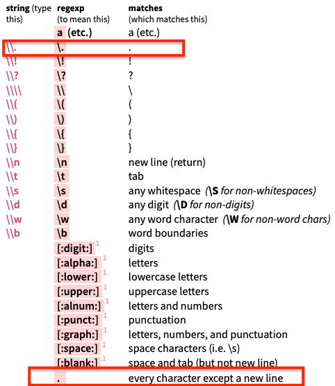</p>
<p>To pass the data from all the columns except our <code>Group</code>
variable into our <code>str_remove()</code> function, we need to use the
<code>.</code> notation as a replacement for the data that we specified
by the <code>.cols</code>argument and we need to use <code>~</code> in
front of the function name.</p>
<div class="sourceCode" id="cb71"><pre class="sourceCode r"><code class="sourceCode r"><span id="cb71-1"><a href="#cb71-1" tabindex="-1"></a>major_groups <span class="sc">%&lt;&gt;%</span></span>
<span id="cb71-2"><a href="#cb71-2" tabindex="-1"></a>    <span class="fu">mutate</span>(<span class="fu">across</span>(<span class="at">.cols =</span> <span class="sc">-</span>Group, </span>
<span id="cb71-3"><a href="#cb71-3" tabindex="-1"></a>                  <span class="sc">~</span><span class="fu">str_remove</span>(<span class="at">string =</span> ., <span class="at">pattern =</span> <span class="st">&quot;</span><span class="sc">\\</span><span class="st">.&quot;</span>)))</span>
<span id="cb71-4"><a href="#cb71-4" tabindex="-1"></a></span>
<span id="cb71-5"><a href="#cb71-5" tabindex="-1"></a>major_groups</span></code></pre></div>
<pre><code># A tibble: 18 × 7
   Group                  `2008` `2010` `2012` `2014` `2016` `2017`
   &lt;chr&gt;                  &lt;chr&gt;  &lt;chr&gt;  &lt;chr&gt;  &lt;chr&gt;  &lt;chr&gt;  &lt;chr&gt; 
 1 United States          126    147    141    132    117    115   
 2 Male                   123    152    145    133    121    118   
 3 Female                 129    141    137    130    112    111   
 4 Asian                  71     85     78     79     66     66    
 5 Asian Male             63     83     74     72     67     65    
 6 Asian Female           79     86     81     86     66     67    
 7 White                  97     117    112    108    97     94    
 8 White Male             95     123    115    108    100    96    
 9 White Female           100    111    108    107    94     91    
10 Latino                 167    185    173    152    137    132   
11 Latino Male            136    168    160    140    126    124   
12 Latina Female          202    203    188    165    148    139   
13 Black                  204    225    224    206    172    179   
14 Black Male             237    260    256    235    201    208   
15 Black Female           170    190    193    176    142    148   
16 Native American        244    288    270    263    258    239   
17 Native American Male   250    309    280    269    281    233   
18 Native American Female 239    267    259    256    234    245   </code></pre>
<p>Great, now in order to multiply each value by 0.1 we need to first
make the values numeric. Currently we can tell that they are character
strings based on the <code>&lt;char&gt;</code> values listed under each
column name.</p>
<p>To convert our values to be numeric we can use the base
<code>as.numeric()</code> function. Again we will use
<code>mutate()</code> and <code>across()</code>. Since this function
doesn’t require any arguments, we don’t need to specify it’s input like
we just did for the <code>str_remove()</code> but we could do so as
shown below.</p>
<div class="sourceCode" id="cb73"><pre class="sourceCode r"><code class="sourceCode r"><span id="cb73-1"><a href="#cb73-1" tabindex="-1"></a>major_groups <span class="sc">%&lt;&gt;%</span></span>
<span id="cb73-2"><a href="#cb73-2" tabindex="-1"></a>   <span class="fu">mutate</span>(<span class="fu">across</span>(<span class="at">.cols =</span> <span class="sc">-</span>Group, as.numeric))</span>
<span id="cb73-3"><a href="#cb73-3" tabindex="-1"></a></span>
<span id="cb73-4"><a href="#cb73-4" tabindex="-1"></a><span class="co">#this is equivalent:</span></span>
<span id="cb73-5"><a href="#cb73-5" tabindex="-1"></a></span>
<span id="cb73-6"><a href="#cb73-6" tabindex="-1"></a><span class="co">#major_groups %&lt;&gt;%</span></span>
<span id="cb73-7"><a href="#cb73-7" tabindex="-1"></a><span class="co">#   mutate(across(.cols = -Group, ~as.numeric(.)))</span></span>
<span id="cb73-8"><a href="#cb73-8" tabindex="-1"></a></span>
<span id="cb73-9"><a href="#cb73-9" tabindex="-1"></a>major_groups</span></code></pre></div>
<pre><code># A tibble: 18 × 7
   Group                  `2008` `2010` `2012` `2014` `2016` `2017`
   &lt;chr&gt;                   &lt;dbl&gt;  &lt;dbl&gt;  &lt;dbl&gt;  &lt;dbl&gt;  &lt;dbl&gt;  &lt;dbl&gt;
 1 United States             126    147    141    132    117    115
 2 Male                      123    152    145    133    121    118
 3 Female                    129    141    137    130    112    111
 4 Asian                      71     85     78     79     66     66
 5 Asian Male                 63     83     74     72     67     65
 6 Asian Female               79     86     81     86     66     67
 7 White                      97    117    112    108     97     94
 8 White Male                 95    123    115    108    100     96
 9 White Female              100    111    108    107     94     91
10 Latino                    167    185    173    152    137    132
11 Latino Male               136    168    160    140    126    124
12 Latina Female             202    203    188    165    148    139
13 Black                     204    225    224    206    172    179
14 Black Male                237    260    256    235    201    208
15 Black Female              170    190    193    176    142    148
16 Native American           244    288    270    263    258    239
17 Native American Male      250    309    280    269    281    233
18 Native American Female    239    267    259    256    234    245</code></pre>
<p>Great, we can see that the year variables are now numeric as they are
now type double as indicated by the <code>&lt;dbl&gt;</code> below each
column name. See the above section about data types if you are
unfamiliar with type double.</p>
<p>OK, now we can multiply each value by 0.1 to add our decimal points
back and get back to the original values.</p>
<div class="sourceCode" id="cb75"><pre class="sourceCode r"><code class="sourceCode r"><span id="cb75-1"><a href="#cb75-1" tabindex="-1"></a>major_groups <span class="sc">%&lt;&gt;%</span></span>
<span id="cb75-2"><a href="#cb75-2" tabindex="-1"></a>    <span class="fu">mutate</span>(<span class="fu">across</span>(<span class="at">.cols =</span> <span class="sc">-</span>Group, <span class="sc">~</span> . <span class="sc">*</span> <span class="fl">0.1</span>))</span>
<span id="cb75-3"><a href="#cb75-3" tabindex="-1"></a></span>
<span id="cb75-4"><a href="#cb75-4" tabindex="-1"></a>major_groups</span></code></pre></div>
<pre><code># A tibble: 18 × 7
   Group                  `2008` `2010` `2012` `2014` `2016` `2017`
   &lt;chr&gt;                   &lt;dbl&gt;  &lt;dbl&gt;  &lt;dbl&gt;  &lt;dbl&gt;  &lt;dbl&gt;  &lt;dbl&gt;
 1 United States            12.6   14.7   14.1   13.2   11.7   11.5
 2 Male                     12.3   15.2   14.5   13.3   12.1   11.8
 3 Female                   12.9   14.1   13.7   13     11.2   11.1
 4 Asian                     7.1    8.5    7.8    7.9    6.6    6.6
 5 Asian Male                6.3    8.3    7.4    7.2    6.7    6.5
 6 Asian Female              7.9    8.6    8.1    8.6    6.6    6.7
 7 White                     9.7   11.7   11.2   10.8    9.7    9.4
 8 White Male                9.5   12.3   11.5   10.8   10      9.6
 9 White Female             10     11.1   10.8   10.7    9.4    9.1
10 Latino                   16.7   18.5   17.3   15.2   13.7   13.2
11 Latino Male              13.6   16.8   16     14     12.6   12.4
12 Latina Female            20.2   20.3   18.8   16.5   14.8   13.9
13 Black                    20.4   22.5   22.4   20.6   17.2   17.9
14 Black Male               23.7   26     25.6   23.5   20.1   20.8
15 Black Female             17     19     19.3   17.6   14.2   14.8
16 Native American          24.4   28.8   27     26.3   25.8   23.9
17 Native American Male     25     30.9   28     26.9   28.1   23.3
18 Native American Female   23.9   26.7   25.9   25.6   23.4   24.5</code></pre>
<p>Now is a good time to double check that our table looks like what we
expect.</p>
<p>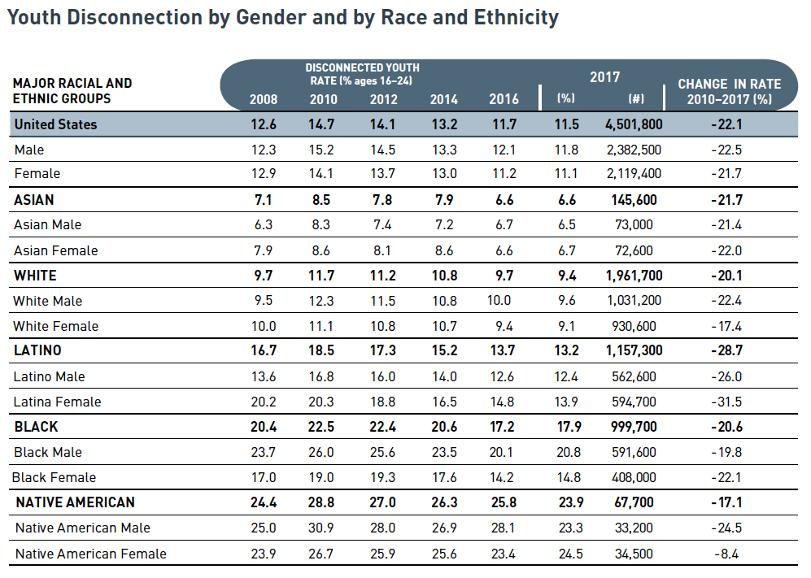</p>
<p>Looks good!</p>
<p>We also want to add a couple of variables about
<code>Race_Ethnicity</code> and <code>Gender</code> so that we can
select across groups later. We can use the <code>recode()</code>
function of the <code>dplyr</code> package to change specific values, as
we create a new <code>Race_Ethnicity</code> variable from the
<code>Group</code> variable. For the Data for all of the US we want the
<code>Race_Ethnicity</code> variable values to be
<code>"All_races"</code>.</p>
<div class="sourceCode" id="cb77"><pre class="sourceCode r"><code class="sourceCode r"><span id="cb77-1"><a href="#cb77-1" tabindex="-1"></a>major_groups <span class="sc">%&lt;&gt;%</span> </span>
<span id="cb77-2"><a href="#cb77-2" tabindex="-1"></a>  <span class="fu">mutate</span>(<span class="at">Race_Ethnicity =</span> </span>
<span id="cb77-3"><a href="#cb77-3" tabindex="-1"></a>           <span class="fu">recode</span>(Group, <span class="st">&quot;United States&quot;</span> <span class="ot">=</span> <span class="st">&quot;All_races&quot;</span>,</span>
<span id="cb77-4"><a href="#cb77-4" tabindex="-1"></a>                                <span class="st">&quot;Female&quot;</span> <span class="ot">=</span> <span class="st">&quot;All_races&quot;</span>,</span>
<span id="cb77-5"><a href="#cb77-5" tabindex="-1"></a>                                  <span class="st">&quot;Male&quot;</span> <span class="ot">=</span> <span class="st">&quot;All_races&quot;</span>))</span>
<span id="cb77-6"><a href="#cb77-6" tabindex="-1"></a></span>
<span id="cb77-7"><a href="#cb77-7" tabindex="-1"></a><span class="fu">head</span>(major_groups)</span></code></pre></div>
<pre><code># A tibble: 6 × 8
  Group         `2008` `2010` `2012` `2014` `2016` `2017` Race_Ethnicity
  &lt;chr&gt;          &lt;dbl&gt;  &lt;dbl&gt;  &lt;dbl&gt;  &lt;dbl&gt;  &lt;dbl&gt;  &lt;dbl&gt; &lt;chr&gt;         
1 United States   12.6   14.7   14.1   13.2   11.7   11.5 All_races     
2 Male            12.3   15.2   14.5   13.3   12.1   11.8 All_races     
3 Female          12.9   14.1   13.7   13     11.2   11.1 All_races     
4 Asian            7.1    8.5    7.8    7.9    6.6    6.6 Asian         
5 Asian Male       6.3    8.3    7.4    7.2    6.7    6.5 Asian Male    
6 Asian Female     7.9    8.6    8.1    8.6    6.6    6.7 Asian Female  </code></pre>
<p>We also want to remove Male and Female from this “Race_Ethnicity”
variable, We can do so using the <code>str_remove()</code> function of
the <code>stringr</code> package. Importantly, we are also removing the
space before “Female” and “Male.</p>
<div class="sourceCode" id="cb79"><pre class="sourceCode r"><code class="sourceCode r"><span id="cb79-1"><a href="#cb79-1" tabindex="-1"></a>major_groups <span class="sc">%&lt;&gt;%</span> </span>
<span id="cb79-2"><a href="#cb79-2" tabindex="-1"></a>  <span class="fu">mutate</span>(<span class="at">Race_Ethnicity =</span> <span class="fu">str_remove</span>(<span class="at">string =</span> Race_Ethnicity,  </span>
<span id="cb79-3"><a href="#cb79-3" tabindex="-1"></a>                                    <span class="at">pattern =</span> <span class="st">&quot; Female| Male&quot;</span>))</span>
<span id="cb79-4"><a href="#cb79-4" tabindex="-1"></a></span>
<span id="cb79-5"><a href="#cb79-5" tabindex="-1"></a><span class="fu">head</span>(major_groups)</span></code></pre></div>
<pre><code># A tibble: 6 × 8
  Group         `2008` `2010` `2012` `2014` `2016` `2017` Race_Ethnicity
  &lt;chr&gt;          &lt;dbl&gt;  &lt;dbl&gt;  &lt;dbl&gt;  &lt;dbl&gt;  &lt;dbl&gt;  &lt;dbl&gt; &lt;chr&gt;         
1 United States   12.6   14.7   14.1   13.2   11.7   11.5 All_races     
2 Male            12.3   15.2   14.5   13.3   12.1   11.8 All_races     
3 Female          12.9   14.1   13.7   13     11.2   11.1 All_races     
4 Asian            7.1    8.5    7.8    7.9    6.6    6.6 Asian         
5 Asian Male       6.3    8.3    7.4    7.2    6.7    6.5 Asian         
6 Asian Female     7.9    8.6    8.1    8.6    6.6    6.7 Asian         </code></pre>
<p>For the new <code>Gender</code> variable we would like to extract
just the “Female” and “Male” text from the <code>Group</code> variable.
The <code>str_extract()</code> function of the <code>stringr</code>
package will do this, and it will give us an <code>NA</code> value for
any rows where “Female” or “Male” were not present. We can then replace
the <code>NA</code> values with the text “All” to represent the total
value for both male and female using the <code>replace_na()</code>
function of the <code>tidyr()</code> package.</p>
<div class="sourceCode" id="cb81"><pre class="sourceCode r"><code class="sourceCode r"><span id="cb81-1"><a href="#cb81-1" tabindex="-1"></a>major_groups <span class="sc">%&lt;&gt;%</span> </span>
<span id="cb81-2"><a href="#cb81-2" tabindex="-1"></a>  <span class="fu">mutate</span>(<span class="at">Gender =</span> <span class="fu">str_extract</span>(<span class="at">string =</span> Group, </span>
<span id="cb81-3"><a href="#cb81-3" tabindex="-1"></a>                              <span class="at">pattern =</span> <span class="st">&quot;Female|Male&quot;</span>)) <span class="sc">%&gt;%</span></span>
<span id="cb81-4"><a href="#cb81-4" tabindex="-1"></a>  <span class="fu">mutate</span>(<span class="at">Gender =</span> <span class="fu">replace_na</span>(Gender, <span class="at">replace =</span> <span class="st">&quot;All&quot;</span>))</span>
<span id="cb81-5"><a href="#cb81-5" tabindex="-1"></a></span>
<span id="cb81-6"><a href="#cb81-6" tabindex="-1"></a><span class="fu">head</span>(major_groups)</span></code></pre></div>
<pre><code># A tibble: 6 × 9
  Group         `2008` `2010` `2012` `2014` `2016` `2017` Race_Ethnicity Gender
  &lt;chr&gt;          &lt;dbl&gt;  &lt;dbl&gt;  &lt;dbl&gt;  &lt;dbl&gt;  &lt;dbl&gt;  &lt;dbl&gt; &lt;chr&gt;          &lt;chr&gt; 
1 United States   12.6   14.7   14.1   13.2   11.7   11.5 All_races      All   
2 Male            12.3   15.2   14.5   13.3   12.1   11.8 All_races      Male  
3 Female          12.9   14.1   13.7   13     11.2   11.1 All_races      Female
4 Asian            7.1    8.5    7.8    7.9    6.6    6.6 Asian          All   
5 Asian Male       6.3    8.3    7.4    7.2    6.7    6.5 Asian          Male  
6 Asian Female     7.9    8.6    8.1    8.6    6.6    6.7 Asian          Female</code></pre>
<p>We would also like to replace Latino and Latina with Latinx. We can
use another <code>stringr</code> function for this. This function,
<code>str_replace()</code> allows us to remove and replace a particular
pattern.</p>
</div>
<div id="section-26" class="section level4 think_question_block">
<h4 class="think_question_block"></h4>
<p><b><u> Question Opportunity </u></b></p>
<p>What other tidyverse functions could you use to replace
<code>Latino</code> and <code>Latina</code> with <code>Latinx</code>.
Why might the <code>str_replace()</code> function be preferable?</p>
</div>
<div id="section-27" class="section level4">
<h4></h4>
<hr />
<details>
<summary>
Click here to reveal the answer.
</summary>
<p>While the <code>recode()</code> function will work in this case, the
<code>str_replace()</code> function can be used more simply, as it will
look for the pattern of <code>Latino</code> and <code>Latina</code> to
replace even if that pattern is part of a value that has more
characters. In contrast, the <code>recode</code> and
<code>case_when()</code> functions would require that
<code>Latinx</code> be specified for the replacement for both
<code>Latino</code> and <code>Latina</code> separately, as well as the
more complicated replacements for the compound groups like
<code>Latinx Male</code> for <code>Latino Male</code>. This is longer
and thus creates more opportunities for a mistake.</p>
<p>You could also use the <code>case_when()</code> function of the
<code>dplyr</code> package if you are familiar with it. However, this
would have the same issues as the <code>recode()</code> function in that
it replaces values not patterns. In addition, you would need to make
sure that the other values of the <code>Race_Ethnicity</code> and
<code>Group</code> variables were not replaced with <code>NA</code>.</p>
<div class="sourceCode" id="cb83"><pre class="sourceCode r"><code class="sourceCode r"><span id="cb83-1"><a href="#cb83-1" tabindex="-1"></a>major_groups <span class="sc">%&gt;%</span> </span>
<span id="cb83-2"><a href="#cb83-2" tabindex="-1"></a>  <span class="fu">mutate</span>(<span class="at">Race_Ethnicity =</span> </span>
<span id="cb83-3"><a href="#cb83-3" tabindex="-1"></a>           <span class="fu">recode</span>(Race_Ethnicity, <span class="st">&quot;Latino&quot;</span> <span class="ot">=</span> <span class="st">&quot;Latinx&quot;</span>,</span>
<span id="cb83-4"><a href="#cb83-4" tabindex="-1"></a>                                  <span class="st">&quot;Latina&quot;</span> <span class="ot">=</span> <span class="st">&quot;Latinx&quot;</span>),</span>
<span id="cb83-5"><a href="#cb83-5" tabindex="-1"></a>          <span class="at">Group =</span> </span>
<span id="cb83-6"><a href="#cb83-6" tabindex="-1"></a>           <span class="fu">recode</span>(Group, <span class="st">&quot;Latino&quot;</span> <span class="ot">=</span> <span class="st">&quot;Latinx&quot;</span>,</span>
<span id="cb83-7"><a href="#cb83-7" tabindex="-1"></a>                    <span class="st">&quot;Latino Male&quot;</span> <span class="ot">=</span> <span class="st">&quot;Latinx Male&quot;</span>, </span>
<span id="cb83-8"><a href="#cb83-8" tabindex="-1"></a>                  <span class="st">&quot;Latina Female&quot;</span> <span class="ot">=</span> <span class="st">&quot;Latinx Female&quot;</span>))</span></code></pre></div>
<pre><code># A tibble: 18 × 9
   Group         `2008` `2010` `2012` `2014` `2016` `2017` Race_Ethnicity Gender
   &lt;chr&gt;          &lt;dbl&gt;  &lt;dbl&gt;  &lt;dbl&gt;  &lt;dbl&gt;  &lt;dbl&gt;  &lt;dbl&gt; &lt;chr&gt;          &lt;chr&gt; 
 1 United States   12.6   14.7   14.1   13.2   11.7   11.5 All_races      All   
 2 Male            12.3   15.2   14.5   13.3   12.1   11.8 All_races      Male  
 3 Female          12.9   14.1   13.7   13     11.2   11.1 All_races      Female
 4 Asian            7.1    8.5    7.8    7.9    6.6    6.6 Asian          All   
 5 Asian Male       6.3    8.3    7.4    7.2    6.7    6.5 Asian          Male  
 6 Asian Female     7.9    8.6    8.1    8.6    6.6    6.7 Asian          Female
 7 White            9.7   11.7   11.2   10.8    9.7    9.4 White          All   
 8 White Male       9.5   12.3   11.5   10.8   10      9.6 White          Male  
 9 White Female    10     11.1   10.8   10.7    9.4    9.1 White          Female
10 Latinx          16.7   18.5   17.3   15.2   13.7   13.2 Latinx         All   
11 Latinx Male     13.6   16.8   16     14     12.6   12.4 Latinx         Male  
12 Latinx Female   20.2   20.3   18.8   16.5   14.8   13.9 Latinx         Female
13 Black           20.4   22.5   22.4   20.6   17.2   17.9 Black          All   
14 Black Male      23.7   26     25.6   23.5   20.1   20.8 Black          Male  
15 Black Female    17     19     19.3   17.6   14.2   14.8 Black          Female
16 Native Ameri…   24.4   28.8   27     26.3   25.8   23.9 Native Americ… All   
17 Native Ameri…   25     30.9   28     26.9   28.1   23.3 Native Americ… Male  
18 Native Ameri…   23.9   26.7   25.9   25.6   23.4   24.5 Native Americ… Female</code></pre>
</details>
<hr />
<div class="sourceCode" id="cb85"><pre class="sourceCode r"><code class="sourceCode r"><span id="cb85-1"><a href="#cb85-1" tabindex="-1"></a>major_groups <span class="sc">%&lt;&gt;%</span></span>
<span id="cb85-2"><a href="#cb85-2" tabindex="-1"></a>  <span class="fu">mutate</span>(<span class="fu">across</span>(<span class="at">.cols =</span> <span class="fu">c</span>(Group, Race_Ethnicity), </span>
<span id="cb85-3"><a href="#cb85-3" tabindex="-1"></a>                <span class="sc">~</span><span class="fu">str_replace</span>(<span class="at">string =</span> ., </span>
<span id="cb85-4"><a href="#cb85-4" tabindex="-1"></a>                            <span class="at">pattern =</span> <span class="st">&quot;Latino|Latina&quot;</span>,</span>
<span id="cb85-5"><a href="#cb85-5" tabindex="-1"></a>                        <span class="at">replacement =</span> <span class="st">&quot;Latinx&quot;</span>)))</span></code></pre></div>
<div class="sourceCode" id="cb86"><pre class="sourceCode r"><code class="sourceCode r"><span id="cb86-1"><a href="#cb86-1" tabindex="-1"></a>major_groups</span></code></pre></div>
<pre><code># A tibble: 18 × 9
   Group         `2008` `2010` `2012` `2014` `2016` `2017` Race_Ethnicity Gender
   &lt;chr&gt;          &lt;dbl&gt;  &lt;dbl&gt;  &lt;dbl&gt;  &lt;dbl&gt;  &lt;dbl&gt;  &lt;dbl&gt; &lt;chr&gt;          &lt;chr&gt; 
 1 United States   12.6   14.7   14.1   13.2   11.7   11.5 All_races      All   
 2 Male            12.3   15.2   14.5   13.3   12.1   11.8 All_races      Male  
 3 Female          12.9   14.1   13.7   13     11.2   11.1 All_races      Female
 4 Asian            7.1    8.5    7.8    7.9    6.6    6.6 Asian          All   
 5 Asian Male       6.3    8.3    7.4    7.2    6.7    6.5 Asian          Male  
 6 Asian Female     7.9    8.6    8.1    8.6    6.6    6.7 Asian          Female
 7 White            9.7   11.7   11.2   10.8    9.7    9.4 White          All   
 8 White Male       9.5   12.3   11.5   10.8   10      9.6 White          Male  
 9 White Female    10     11.1   10.8   10.7    9.4    9.1 White          Female
10 Latinx          16.7   18.5   17.3   15.2   13.7   13.2 Latinx         All   
11 Latinx Male     13.6   16.8   16     14     12.6   12.4 Latinx         Male  
12 Latinx Female   20.2   20.3   18.8   16.5   14.8   13.9 Latinx         Female
13 Black           20.4   22.5   22.4   20.6   17.2   17.9 Black          All   
14 Black Male      23.7   26     25.6   23.5   20.1   20.8 Black          Male  
15 Black Female    17     19     19.3   17.6   14.2   14.8 Black          Female
16 Native Ameri…   24.4   28.8   27     26.3   25.8   23.9 Native Americ… All   
17 Native Ameri…   25     30.9   28     26.9   28.1   23.3 Native Americ… Male  
18 Native Ameri…   23.9   26.7   25.9   25.6   23.4   24.5 Native Americ… Female</code></pre>
<p>Finally, we would like to change the shape of our table so that we
have a new column that represents the year and a new column that
represents the value for that year.</p>
<p>To do so we will be making our table “longer”, meaning that it will
have fewer columns and more rows. See <a
href="https://en.wikipedia.org/wiki/Wide_and_narrow_data">here</a> for
more information about different table formats, typically referred to as
wide and long or sometimes narrow.</p>
<p>We will use the <code>pivot_longer()</code> function of the
<code>tidyr</code> package to change the shape of our table.</p>
<p>There are 3 main arguments in this function:</p>
<ol style="list-style-type: decimal">
<li><code>cols</code> - specifies what columns to collapse<br />
</li>
<li><code>names_to</code> - specifies the name of the new column that
will be created that will contain the column names of the columns you
are collapsing<br />
</li>
<li><code>values_to</code> - specifies the name of the new column that
will be created that will contain the values from the columns you are
collapsing</li>
</ol>
<p>To specify that we want to collapse all the columns that have year
values, we can chose those that contain the string <code>"20"</code>
using the <code>contains()</code> function of <code>dplyr</code>.</p>
<div class="sourceCode" id="cb88"><pre class="sourceCode r"><code class="sourceCode r"><span id="cb88-1"><a href="#cb88-1" tabindex="-1"></a>major_groups_long <span class="ot">&lt;-</span> major_groups <span class="sc">%&gt;%</span></span>
<span id="cb88-2"><a href="#cb88-2" tabindex="-1"></a>  tidyr<span class="sc">::</span><span class="fu">pivot_longer</span>(<span class="at">cols =</span> <span class="fu">contains</span>(<span class="st">&quot;20&quot;</span>),</span>
<span id="cb88-3"><a href="#cb88-3" tabindex="-1"></a>                  <span class="at">names_to =</span> <span class="st">&quot;Year&quot;</span>,</span>
<span id="cb88-4"><a href="#cb88-4" tabindex="-1"></a>                 <span class="at">values_to =</span> <span class="st">&quot;Percent&quot;</span>,</span>
<span id="cb88-5"><a href="#cb88-5" tabindex="-1"></a>              <span class="at">names_prefix =</span> <span class="st">&quot;Perc_&quot;</span>) <span class="sc">%&gt;%</span></span>
<span id="cb88-6"><a href="#cb88-6" tabindex="-1"></a>  dplyr<span class="sc">::</span><span class="fu">mutate</span>(<span class="at">Year =</span> <span class="fu">as.numeric</span>(Year))</span>
<span id="cb88-7"><a href="#cb88-7" tabindex="-1"></a></span>
<span id="cb88-8"><a href="#cb88-8" tabindex="-1"></a>major_groups_long</span></code></pre></div>
<pre><code># A tibble: 108 × 5
   Group         Race_Ethnicity Gender  Year Percent
   &lt;chr&gt;         &lt;chr&gt;          &lt;chr&gt;  &lt;dbl&gt;   &lt;dbl&gt;
 1 United States All_races      All     2008    12.6
 2 United States All_races      All     2010    14.7
 3 United States All_races      All     2012    14.1
 4 United States All_races      All     2014    13.2
 5 United States All_races      All     2016    11.7
 6 United States All_races      All     2017    11.5
 7 Male          All_races      Male    2008    12.3
 8 Male          All_races      Male    2010    15.2
 9 Male          All_races      Male    2012    14.5
10 Male          All_races      Male    2014    13.3
# ℹ 98 more rows</code></pre>
<p>Excellent, now we need to do the same for the other two tables on
this page:</p>
<p></p>
</div>
</div>
<div id="asian-subgroups-2017-1" class="section level3">
<h3><strong>Asian Subgroups 2017</strong></h3>
<hr />
<p>Here was the text from our first image of this table:</p>
<div class="sourceCode" id="cb90"><pre class="sourceCode r"><code class="sourceCode r"><span id="cb90-1"><a href="#cb90-1" tabindex="-1"></a>asian_sub_2017</span></code></pre></div>
<pre><code>[1] &quot;United States 11.5\nMale 11.8\nFemale 11.1\nASIAN 6.8\nAsian Male 65\nAsian Female 67\nCHINESE 43\nChinese Male AT\nChinese Female 3.9\nVIETNAMESE 5.5\nVietnamese Male 75\nVietnamese Female 3.4\nINDIAN 5.9\nIndian Male 4.1\nIndian Female 78\nPAKISTANI 64\nPakistani Male\n\nPakistani Female\n\nKOREAN 65\nKorean Male 8.0\nKorean Female 5.0\nTWO OR MORE 68\nTwo or More Male\n\nTwo or More Female\nFILIPINO. S™S™~SS\nFilipino Male 65\nFilipino Female 81\nHMONG 14.0\nHmong Male 18.6\n&quot;</code></pre>
<p>Now we again want to split the data into rows based on the newline
regex. This is something we will continue to do for all the tables.</p>
<p>One option is to copy and paste code we wrote above each time.
However, this is not very efficient and is error prone. Alternatively,
we can create an R function to accomplish this succinctly. Functions
allow us to perform the same process on multiple data inputs. See <a
href="https://www.opencasestudies.org/ocs-bp-vaping-case-study/">this
other case study</a> for more details about how to write a function.</p>
<p>In general, the process of writing functions involves first
specifying an input that is used within the function to create an
output. In this case, the data input is <code>text</code> which will be
replaced by the actual image text that we are working on, and then used
in the subsequent steps to wrangle the data. We will call our function
<code>make_rows()</code>.</p>
<div class="sourceCode" id="cb92"><pre class="sourceCode r"><code class="sourceCode r"><span id="cb92-1"><a href="#cb92-1" tabindex="-1"></a>make_rows <span class="ot">&lt;-</span> <span class="cf">function</span>(text){</span>
<span id="cb92-2"><a href="#cb92-2" tabindex="-1"></a>  text <span class="sc">%&gt;%</span></span>
<span id="cb92-3"><a href="#cb92-3" tabindex="-1"></a>  <span class="fu">str_split</span>(<span class="st">&quot;</span><span class="sc">\n</span><span class="st">&quot;</span>) <span class="sc">%&gt;%</span></span>
<span id="cb92-4"><a href="#cb92-4" tabindex="-1"></a>  <span class="fu">unlist</span>() <span class="sc">%&gt;%</span></span>
<span id="cb92-5"><a href="#cb92-5" tabindex="-1"></a>  <span class="fu">as_tibble</span>()</span>
<span id="cb92-6"><a href="#cb92-6" tabindex="-1"></a>}</span></code></pre></div>
<p>Great! Now let’s apply our function to the
<code>asian_sub_2017</code> data!</p>
<div class="sourceCode" id="cb93"><pre class="sourceCode r"><code class="sourceCode r"><span id="cb93-1"><a href="#cb93-1" tabindex="-1"></a>asian_sub_2017 <span class="ot">&lt;-</span> <span class="fu">make_rows</span>(asian_sub_2017) </span></code></pre></div>
<div id="section-28" class="section level4 scrollable">
<h4 class="scrollable"></h4>
<div class="sourceCode" id="cb94"><pre class="sourceCode r"><code class="sourceCode r"><span id="cb94-1"><a href="#cb94-1" tabindex="-1"></a><span class="co"># Scroll through the output!</span></span>
<span id="cb94-2"><a href="#cb94-2" tabindex="-1"></a><span class="fu">print</span>(asian_sub_2017, <span class="at">n =</span> <span class="dv">50</span>)</span></code></pre></div>
<pre><code># A tibble: 33 × 1
   value                  
   &lt;chr&gt;                  
 1 &quot;United States 11.5&quot;   
 2 &quot;Male 11.8&quot;            
 3 &quot;Female 11.1&quot;          
 4 &quot;ASIAN 6.8&quot;            
 5 &quot;Asian Male 65&quot;        
 6 &quot;Asian Female 67&quot;      
 7 &quot;CHINESE 43&quot;           
 8 &quot;Chinese Male AT&quot;      
 9 &quot;Chinese Female 3.9&quot;   
10 &quot;VIETNAMESE 5.5&quot;       
11 &quot;Vietnamese Male 75&quot;   
12 &quot;Vietnamese Female 3.4&quot;
13 &quot;INDIAN 5.9&quot;           
14 &quot;Indian Male 4.1&quot;      
15 &quot;Indian Female 78&quot;     
16 &quot;PAKISTANI 64&quot;         
17 &quot;Pakistani Male&quot;       
18 &quot;&quot;                     
19 &quot;Pakistani Female&quot;     
20 &quot;&quot;                     
21 &quot;KOREAN 65&quot;            
22 &quot;Korean Male 8.0&quot;      
23 &quot;Korean Female 5.0&quot;    
24 &quot;TWO OR MORE 68&quot;       
25 &quot;Two or More Male&quot;     
26 &quot;&quot;                     
27 &quot;Two or More Female&quot;   
28 &quot;FILIPINO. S™S™~SS&quot;    
29 &quot;Filipino Male 65&quot;     
30 &quot;Filipino Female 81&quot;   
31 &quot;HMONG 14.0&quot;           
32 &quot;Hmong Male 18.6&quot;      
33 &quot;&quot;                     </code></pre>
</div>
<div id="section-29" class="section level4">
<h4></h4>
<p>As you can see, there are some strange values for some of the rows.
For example the row that starts with <code>CHINESE MAle</code> has
<code>AT</code> percentage of disconnected youth, and the row that
should say <code>FILIPINO</code> says <code>S™S™~SS</code>.</p>
<pre><code>[[1]]
[1] &quot;Chinese&quot; &quot;Male&quot;    &quot;AT&quot;     </code></pre>
<pre><code>[[1]]
[1] &quot;FILIPINO.&quot; &quot;S™S™~SS&quot;  </code></pre>
<p>Notice how there are empty rows. According to the report (PDF), these
spaces are empty to denote that the estimates were unreliable for these
groups. Since we don’t really need these rows as they are missing values
anyway and because images with less text that of higher resolution are
often easier for the OCR to interpret correctly, we will now try using
three images of this table rather than just one. This allows us to zoom
in on the parts of the table that we actually want and hopefully, the
OCR will be able to interpret the text correctly.</p>
<p>So we will now import and extract text from three screenshots of this
table where we stop just after the row that starts with
<code>PAKISTANI</code> in the first image, and then an image of the
Korean rows up to the next row with no values, and finally an image
starting at the row that starts with <code>FILIPNO</code>. Thus all of
the empty rows will not be included.</p>
<p>These images are called <code>asian_sub_2017_A</code>,
<code>asian_sub_2017_B</code>, and <code>asian_sub_2017_C</code>.</p>
<p>Now we will apply our <code>make_rows()</code> function to the text
from these images.</p>
<div class="sourceCode" id="cb98"><pre class="sourceCode r"><code class="sourceCode r"><span id="cb98-1"><a href="#cb98-1" tabindex="-1"></a>asian_sub_2017_A<span class="ot">&lt;-</span> <span class="fu">make_rows</span>(asian_sub_2017_A)</span>
<span id="cb98-2"><a href="#cb98-2" tabindex="-1"></a>asian_sub_2017_B <span class="ot">&lt;-</span> <span class="fu">make_rows</span>(asian_sub_2017_B)</span>
<span id="cb98-3"><a href="#cb98-3" tabindex="-1"></a>asian_sub_2017_C <span class="ot">&lt;-</span> <span class="fu">make_rows</span>(asian_sub_2017_C)</span>
<span id="cb98-4"><a href="#cb98-4" tabindex="-1"></a></span>
<span id="cb98-5"><a href="#cb98-5" tabindex="-1"></a>asian_sub_2017_A </span></code></pre></div>
<pre><code># A tibble: 17 × 1
   value                  
   &lt;chr&gt;                  
 1 &quot;United States 11.5&quot;   
 2 &quot;Male 11.8&quot;            
 3 &quot;Female 11.1&quot;          
 4 &quot;ASIAN 6.6&quot;            
 5 &quot;Asian Male 6.5&quot;       
 6 &quot;Asian Female 6.7&quot;     
 7 &quot;CHINESE 4.3&quot;          
 8 &quot;Chinese Male 4.7&quot;     
 9 &quot;Chinese Female 3.9&quot;   
10 &quot;VIETNAMESE 5.5&quot;       
11 &quot;Vietnamese Male 7.5&quot;  
12 &quot;Vietnamese Female 3.4&quot;
13 &quot;INDIAN 5.9&quot;           
14 &quot;Indian Male 4.1&quot;      
15 &quot;Indian Female 7.8&quot;    
16 &quot;PAKISTANI 6.4&quot;        
17 &quot;&quot;                     </code></pre>
<div class="sourceCode" id="cb100"><pre
class="sourceCode r"><code class="sourceCode r"><span id="cb100-1"><a href="#cb100-1" tabindex="-1"></a>asian_sub_2017_B</span></code></pre></div>
<pre><code># A tibble: 5 × 1
  value              
  &lt;chr&gt;              
1 &quot;KOREAN 6.5&quot;       
2 &quot;Korean Male 8.0&quot;  
3 &quot;Korean Female 5.0&quot;
4 &quot;TWO OR MORE 6.6&quot;  
5 &quot;&quot;                 </code></pre>
<div class="sourceCode" id="cb102"><pre
class="sourceCode r"><code class="sourceCode r"><span id="cb102-1"><a href="#cb102-1" tabindex="-1"></a>asian_sub_2017_C</span></code></pre></div>
<pre><code># A tibble: 6 × 1
  value                
  &lt;chr&gt;                
1 &quot;FILIPINO 7.3&quot;       
2 &quot;Filipino Male 6.5&quot;  
3 &quot;Filipino Female 8.1&quot;
4 &quot;HMONG 14.0&quot;         
5 &quot;Hmong Male 18.6&quot;    
6 &quot;&quot;                   </code></pre>
<p>Much better!</p>
<p>We can now combine the objects with the <code>bind_rows()</code>
function of the <code>dplyr</code> package, which will append each of
these tibbles together one after the other.</p>
<div class="sourceCode" id="cb104"><pre
class="sourceCode r"><code class="sourceCode r"><span id="cb104-1"><a href="#cb104-1" tabindex="-1"></a>asian_sub_2017 <span class="ot">&lt;-</span><span class="fu">bind_rows</span>(asian_sub_2017_A, </span>
<span id="cb104-2"><a href="#cb104-2" tabindex="-1"></a>                           asian_sub_2017_B,</span>
<span id="cb104-3"><a href="#cb104-3" tabindex="-1"></a>                           asian_sub_2017_C)</span>
<span id="cb104-4"><a href="#cb104-4" tabindex="-1"></a></span>
<span id="cb104-5"><a href="#cb104-5" tabindex="-1"></a>asian_sub_2017</span></code></pre></div>
<pre><code># A tibble: 28 × 1
   value             
   &lt;chr&gt;             
 1 United States 11.5
 2 Male 11.8         
 3 Female 11.1       
 4 ASIAN 6.6         
 5 Asian Male 6.5    
 6 Asian Female 6.7  
 7 CHINESE 4.3       
 8 Chinese Male 4.7  
 9 Chinese Female 3.9
10 VIETNAMESE 5.5    
# ℹ 18 more rows</code></pre>
<p>Looks pretty good!</p>
<p>Now we have similar wrangling steps to perform as we did previously
and we will need to do the same for the Latinx subgroups table. So it is
a good idea to make another function.</p>
<p>Even though we appear to have all of the decimal places for the
values, we will include this in our function, just to make sure the data
is correct.</p>
</div>
<div id="section-30" class="section level4 explain_block">
<h4 class="explain_block"></h4>
<p><b><u> Question Opportunity </u></b></p>
<p>Can you explain what each of the commands are doing within the
function?</p>
</div>
<div id="section-31" class="section level4">
<h4></h4>
<div class="sourceCode" id="cb106"><pre
class="sourceCode r"><code class="sourceCode r"><span id="cb106-1"><a href="#cb106-1" tabindex="-1"></a>clean_table <span class="ot">&lt;-</span> <span class="cf">function</span>(table){</span>
<span id="cb106-2"><a href="#cb106-2" tabindex="-1"></a>  table <span class="sc">%&gt;%</span></span>
<span id="cb106-3"><a href="#cb106-3" tabindex="-1"></a>    <span class="fu">separate</span>(., <span class="at">col =</span> value,</span>
<span id="cb106-4"><a href="#cb106-4" tabindex="-1"></a>               <span class="at">into =</span> <span class="fu">c</span>(<span class="st">&quot;Group&quot;</span>, <span class="st">&quot;Percentage&quot;</span>),</span>
<span id="cb106-5"><a href="#cb106-5" tabindex="-1"></a>                <span class="at">sep =</span>  <span class="st">&quot;(?&lt;=[[:alpha:]])</span><span class="sc">\\</span><span class="st">s(?=[0-9])&quot;</span>) <span class="sc">%&gt;%</span> </span>
<span id="cb106-6"><a href="#cb106-6" tabindex="-1"></a>    <span class="fu">drop_na</span>() <span class="sc">%&gt;%</span></span>
<span id="cb106-7"><a href="#cb106-7" tabindex="-1"></a>    <span class="fu">mutate</span>(<span class="at">Group =</span> <span class="fu">str_to_title</span>(Group)) <span class="sc">%&gt;%</span></span>
<span id="cb106-8"><a href="#cb106-8" tabindex="-1"></a>    <span class="fu">mutate</span>(<span class="at">Percentage =</span> <span class="fu">str_remove</span>(<span class="at">string =</span> Percentage,</span>
<span id="cb106-9"><a href="#cb106-9" tabindex="-1"></a>                                   <span class="at">pattern =</span> <span class="st">&quot;</span><span class="sc">\\</span><span class="st">.&quot;</span>)) <span class="sc">%&gt;%</span></span>
<span id="cb106-10"><a href="#cb106-10" tabindex="-1"></a>    <span class="fu">separate</span>(Percentage, <span class="fu">c</span>(<span class="st">&quot;Percent&quot;</span>), <span class="at">sep =</span> <span class="st">&quot; &quot;</span>) <span class="sc">%&gt;%</span></span>
<span id="cb106-11"><a href="#cb106-11" tabindex="-1"></a>    <span class="fu">mutate</span>(<span class="at">Percent =</span> <span class="fu">as.numeric</span>(Percent)) <span class="sc">%&gt;%</span></span>
<span id="cb106-12"><a href="#cb106-12" tabindex="-1"></a>    <span class="fu">mutate</span>(<span class="at">Percent =</span> Percent <span class="sc">*</span> <span class="fl">0.1</span>) <span class="sc">%&gt;%</span></span>
<span id="cb106-13"><a href="#cb106-13" tabindex="-1"></a>    <span class="fu">mutate</span>(<span class="at">Race_Ethnicity =</span> <span class="fu">recode</span>(Group, </span>
<span id="cb106-14"><a href="#cb106-14" tabindex="-1"></a>                  <span class="st">&quot;United States&quot;</span> <span class="ot">=</span> <span class="st">&quot;All_races&quot;</span>, </span>
<span id="cb106-15"><a href="#cb106-15" tabindex="-1"></a>                  <span class="st">&quot;Female&quot;</span> <span class="ot">=</span> <span class="st">&quot;All_races&quot;</span>,</span>
<span id="cb106-16"><a href="#cb106-16" tabindex="-1"></a>                  <span class="st">&quot;Male&quot;</span> <span class="ot">=</span> <span class="st">&quot;All_races&quot;</span>)) <span class="sc">%&gt;%</span></span>
<span id="cb106-17"><a href="#cb106-17" tabindex="-1"></a>    <span class="fu">mutate</span>(<span class="at">Race_Ethnicity =</span> <span class="fu">str_remove</span>(<span class="at">string =</span> Race_Ethnicity,  </span>
<span id="cb106-18"><a href="#cb106-18" tabindex="-1"></a>                                       <span class="at">pattern =</span> <span class="st">&quot; Female| Male&quot;</span>)) <span class="sc">%&gt;%</span></span>
<span id="cb106-19"><a href="#cb106-19" tabindex="-1"></a>    <span class="fu">mutate</span>(<span class="at">Gender =</span> <span class="fu">str_extract</span>(<span class="at">string =</span> Group,</span>
<span id="cb106-20"><a href="#cb106-20" tabindex="-1"></a>                                <span class="at">pattern =</span><span class="st">&quot;Female|Male&quot;</span>)) <span class="sc">%&gt;%</span></span>
<span id="cb106-21"><a href="#cb106-21" tabindex="-1"></a>    <span class="fu">mutate</span>(<span class="at">Gender =</span> <span class="fu">replace_na</span>(Gender, <span class="at">replace =</span> <span class="st">&quot;All&quot;</span>))</span>
<span id="cb106-22"><a href="#cb106-22" tabindex="-1"></a> </span>
<span id="cb106-23"><a href="#cb106-23" tabindex="-1"></a>}</span></code></pre></div>
<div class="sourceCode" id="cb107"><pre
class="sourceCode r"><code class="sourceCode r"><span id="cb107-1"><a href="#cb107-1" tabindex="-1"></a>asian_sub_2017 <span class="ot">&lt;-</span> <span class="fu">clean_table</span>(<span class="at">table =</span> asian_sub_2017)</span>
<span id="cb107-2"><a href="#cb107-2" tabindex="-1"></a>asian_sub_2017</span></code></pre></div>
<pre><code># A tibble: 25 × 4
   Group          Percent Race_Ethnicity Gender
   &lt;chr&gt;            &lt;dbl&gt; &lt;chr&gt;          &lt;chr&gt; 
 1 United States     11.5 All_races      All   
 2 Male              11.8 All_races      Male  
 3 Female            11.1 All_races      Female
 4 Asian              6.6 Asian          All   
 5 Asian Male         6.5 Asian          Male  
 6 Asian Female       6.7 Asian          Female
 7 Chinese            4.3 Chinese        All   
 8 Chinese Male       4.7 Chinese        Male  
 9 Chinese Female     3.9 Chinese        Female
10 Vietnamese         5.5 Vietnamese     All   
# ℹ 15 more rows</code></pre>
<p>Great! This looks as we expected.</p>
</div>
<div id="section-32" class="section level4 think_question_block">
<h4 class="think_question_block"></h4>
<p><b><u> Question Opportunity </u></b></p>
<p>Why do we not need to use <code>pivot_longer()</code> with this
data?</p>
</div>
<div id="section-33" class="section level4">
<h4></h4>
</div>
</div>
<div id="latinx-subgroups-2017-1" class="section level3">
<h3><strong>Latinx Subgroups 2017</strong></h3>
<hr />
<p>Recall that this is the table we want to wrangle:</p>
<div class="sourceCode" id="cb109"><pre
class="sourceCode r"><code class="sourceCode r"><span id="cb109-1"><a href="#cb109-1" tabindex="-1"></a>knitr<span class="sc">::</span><span class="fu">include_graphics</span>(here<span class="sc">::</span><span class="fu">here</span>(<span class="st">&quot;img&quot;</span>, <span class="st">&quot;latinx2017.png&quot;</span>))</span></code></pre></div>
<p></p>
<div id="section-34" class="section level4 think_question_block">
<h4 class="think_question_block"></h4>
<p><b><u> Question Opportunity </u></b></p>
<p>Do you notice anything incorrect about this table? It’s always
important to be pay attention to the data even when it is in raw
format.</p>
</div>
<div id="section-35" class="section level4">
<h4></h4>
<hr />
<details>
<summary>
Click here to see what is incorrect.
</summary>
<p>The last two rows both say <strong>“Female”</strong>.</p>
</details>
<hr />
<p>Sometimes when wrangling text data, we will come across a typo. We
need to determine how to respond to the typo and make note of it. It’s
often best to consult a secondary source to confirm that changes made
are accurate.</p>
<p>For the purposes of this case study, we will assume that the first of
the two rows represents male disconnection rates in the Latino/a
subgroup; this would be consistent with the ordering of genders in the
previous subgroups.</p>
<p>We will make sure to correct this typo when we can.</p>
<p>First let’s take a look of the text from the images we imported:</p>
<div class="sourceCode" id="cb110"><pre
class="sourceCode r"><code class="sourceCode r"><span id="cb110-1"><a href="#cb110-1" tabindex="-1"></a>latinx_sub_2017_A</span></code></pre></div>
<pre><code>[1] &quot;LATINO 13.2\nLatino Male 12.4\nLatina Female 13.9\n&quot;</code></pre>
<div class="sourceCode" id="cb112"><pre
class="sourceCode r"><code class="sourceCode r"><span id="cb112-1"><a href="#cb112-1" tabindex="-1"></a>latinx_sub_2017_B</span></code></pre></div>
<pre><code>[1] &quot;SOUTH AMERICAN 8.4\nSouth American Male 9.1\nSouth American Female 7.7\nCENTRAL AMERICAN 12.0\nCentral American Male 9.3\nCentral American Female 15.0\nMEXICAN 13.3\nMexican Male 12.2\nMexican Female 14.4\nOTHER LATINO 13.6\nOther Latino Male 15.3\nOther Latina Female 11.5\n&quot;</code></pre>
<div class="sourceCode" id="cb114"><pre
class="sourceCode r"><code class="sourceCode r"><span id="cb114-1"><a href="#cb114-1" tabindex="-1"></a>latinx_sub_2017_C</span></code></pre></div>
<pre><code>[1] &quot;PUERTO RICAN, DOMINICAN, CUBAN 15.1\nPR, DR, Cuban Female 15.7\nPR, DR, Cuban Female 14.4\n&quot;</code></pre>
<p>We can combine the strings together using the <code>str_c()</code>
function (which stands for string <strong>collapse</strong>) of the
<code>stringr</code> package.</p>
<div class="sourceCode" id="cb116"><pre
class="sourceCode r"><code class="sourceCode r"><span id="cb116-1"><a href="#cb116-1" tabindex="-1"></a>latinx_sub_2017 <span class="ot">&lt;-</span> stringr<span class="sc">::</span><span class="fu">str_c</span>(latinx_sub_2017_A, latinx_sub_2017_B, latinx_sub_2017_C)</span>
<span id="cb116-2"><a href="#cb116-2" tabindex="-1"></a></span>
<span id="cb116-3"><a href="#cb116-3" tabindex="-1"></a>latinx_sub_2017</span></code></pre></div>
<pre><code>[1] &quot;LATINO 13.2\nLatino Male 12.4\nLatina Female 13.9\nSOUTH AMERICAN 8.4\nSouth American Male 9.1\nSouth American Female 7.7\nCENTRAL AMERICAN 12.0\nCentral American Male 9.3\nCentral American Female 15.0\nMEXICAN 13.3\nMexican Male 12.2\nMexican Female 14.4\nOTHER LATINO 13.6\nOther Latino Male 15.3\nOther Latina Female 11.5\nPUERTO RICAN, DOMINICAN, CUBAN 15.1\nPR, DR, Cuban Female 15.7\nPR, DR, Cuban Female 14.4\n&quot;</code></pre>
<p>Now let’s correct that typo.</p>
</div>
<div id="section-36" class="section level4 think_question_block">
<h4 class="think_question_block"></h4>
<p><b><u> Question Opportunity </u></b></p>
<p>How might you do this?</p>
</div>
<div id="section-37" class="section level4">
<h4></h4>
<hr />
<details>
<summary>
Click here to reveal the code.
</summary>
<div class="sourceCode" id="cb118"><pre
class="sourceCode r"><code class="sourceCode r"><span id="cb118-1"><a href="#cb118-1" tabindex="-1"></a>latinx_sub_2017 <span class="sc">%&lt;&gt;%</span> </span>
<span id="cb118-2"><a href="#cb118-2" tabindex="-1"></a>  <span class="fu">str_replace</span>(<span class="at">string =</span> .,</span>
<span id="cb118-3"><a href="#cb118-3" tabindex="-1"></a>             <span class="at">pattern =</span> <span class="st">&quot;DR, Cuban Female 15.7</span><span class="sc">\n</span><span class="st">PR&quot;</span>,</span>
<span id="cb118-4"><a href="#cb118-4" tabindex="-1"></a>         <span class="at">replacement =</span> <span class="st">&quot;DR, Cuban Male 15.7</span><span class="sc">\n</span><span class="st">PR&quot;</span>)</span></code></pre></div>
</details>
<hr />
<div class="sourceCode" id="cb119"><pre
class="sourceCode r"><code class="sourceCode r"><span id="cb119-1"><a href="#cb119-1" tabindex="-1"></a>latinx_sub_2017</span></code></pre></div>
<pre><code>[1] &quot;LATINO 13.2\nLatino Male 12.4\nLatina Female 13.9\nSOUTH AMERICAN 8.4\nSouth American Male 9.1\nSouth American Female 7.7\nCENTRAL AMERICAN 12.0\nCentral American Male 9.3\nCentral American Female 15.0\nMEXICAN 13.3\nMexican Male 12.2\nMexican Female 14.4\nOTHER LATINO 13.6\nOther Latino Male 15.3\nOther Latina Female 11.5\nPUERTO RICAN, DOMINICAN, CUBAN 15.1\nPR, DR, Cuban Male 15.7\nPR, DR, Cuban Female 14.4\n&quot;</code></pre>
</div>
<div id="section-38" class="section level4 recall_code_question_block">
<h4 class="recall_code_question_block"></h4>
<p><b><u> Question Opportunity </u></b></p>
<p>Can you recall the commands within our <code>make_rows()</code>
function to separate the data into rows and create a tibble?</p>
</div>
<div id="section-39" class="section level4">
<h4></h4>
<hr />
<details>
<summary>
Click here to reveal the code.
</summary>
<div class="sourceCode" id="cb121"><pre
class="sourceCode r"><code class="sourceCode r"><span id="cb121-1"><a href="#cb121-1" tabindex="-1"></a>latinx_sub_2017 <span class="sc">%&lt;&gt;%</span></span>
<span id="cb121-2"><a href="#cb121-2" tabindex="-1"></a>  <span class="fu">str_split</span>(<span class="st">&quot;</span><span class="sc">\n</span><span class="st">&quot;</span>) <span class="sc">%&gt;%</span></span>
<span id="cb121-3"><a href="#cb121-3" tabindex="-1"></a>  <span class="fu">unlist</span>() <span class="sc">%&gt;%</span></span>
<span id="cb121-4"><a href="#cb121-4" tabindex="-1"></a>  <span class="fu">as_tibble</span>()</span></code></pre></div>
</details>
<hr />
<div class="sourceCode" id="cb122"><pre
class="sourceCode r"><code class="sourceCode r"><span id="cb122-1"><a href="#cb122-1" tabindex="-1"></a>latinx_sub_2017</span></code></pre></div>
<pre><code># A tibble: 19 × 1
   value                                
   &lt;chr&gt;                                
 1 &quot;LATINO 13.2&quot;                        
 2 &quot;Latino Male 12.4&quot;                   
 3 &quot;Latina Female 13.9&quot;                 
 4 &quot;SOUTH AMERICAN 8.4&quot;                 
 5 &quot;South American Male 9.1&quot;            
 6 &quot;South American Female 7.7&quot;          
 7 &quot;CENTRAL AMERICAN 12.0&quot;              
 8 &quot;Central American Male 9.3&quot;          
 9 &quot;Central American Female 15.0&quot;       
10 &quot;MEXICAN 13.3&quot;                       
11 &quot;Mexican Male 12.2&quot;                  
12 &quot;Mexican Female 14.4&quot;                
13 &quot;OTHER LATINO 13.6&quot;                  
14 &quot;Other Latino Male 15.3&quot;             
15 &quot;Other Latina Female 11.5&quot;           
16 &quot;PUERTO RICAN, DOMINICAN, CUBAN 15.1&quot;
17 &quot;PR, DR, Cuban Male 15.7&quot;            
18 &quot;PR, DR, Cuban Female 14.4&quot;          
19 &quot;&quot;                                   </code></pre>
<p>Now we can apply our function.</p>
<div class="sourceCode" id="cb124"><pre
class="sourceCode r"><code class="sourceCode r"><span id="cb124-1"><a href="#cb124-1" tabindex="-1"></a>latinx_sub_2017 <span class="ot">&lt;-</span> <span class="fu">clean_table</span>(<span class="at">table =</span> latinx_sub_2017)</span>
<span id="cb124-2"><a href="#cb124-2" tabindex="-1"></a>latinx_sub_2017</span></code></pre></div>
<pre><code># A tibble: 18 × 4
   Group                          Percent Race_Ethnicity                 Gender
   &lt;chr&gt;                            &lt;dbl&gt; &lt;chr&gt;                          &lt;chr&gt; 
 1 Latino                            13.2 Latino                         All   
 2 Latino Male                       12.4 Latino                         Male  
 3 Latina Female                     13.9 Latina                         Female
 4 South American                     8.4 South American                 All   
 5 South American Male                9.1 South American                 Male  
 6 South American Female              7.7 South American                 Female
 7 Central American                  12   Central American               All   
 8 Central American Male              9.3 Central American               Male  
 9 Central American Female           15   Central American               Female
10 Mexican                           13.3 Mexican                        All   
11 Mexican Male                      12.2 Mexican                        Male  
12 Mexican Female                    14.4 Mexican                        Female
13 Other Latino                      13.6 Other Latino                   All   
14 Other Latino Male                 15.3 Other Latino                   Male  
15 Other Latina Female               11.5 Other Latina                   Female
16 Puerto Rican, Dominican, Cuban    15.1 Puerto Rican, Dominican, Cuban All   
17 Pr, Dr, Cuban Male                15.7 Pr, Dr, Cuban                  Male  
18 Pr, Dr, Cuban Female              14.4 Pr, Dr, Cuban                  Female</code></pre>
<p>It looks like we’ve successfully corrected the typo!</p>
<p>Let’s also replace the abbreviations for Puerto Rican and Dominican
and let’s replace Latino/Latina with Latinx.</p>
</div>
<div id="section-40" class="section level4 think_question_block">
<h4 class="think_question_block"></h4>
<p><b><u> Question Opportunity </u></b></p>
<p>How might you do this using the <code>str_replace()</code>
function?</p>
</div>
<div id="section-41" class="section level4">
<h4></h4>
<hr />
<details>
<summary>
Click here to reveal the code.
</summary>
<div class="sourceCode" id="cb126"><pre
class="sourceCode r"><code class="sourceCode r"><span id="cb126-1"><a href="#cb126-1" tabindex="-1"></a>latinx_sub_2017 <span class="sc">%&lt;&gt;%</span></span>
<span id="cb126-2"><a href="#cb126-2" tabindex="-1"></a>  <span class="fu">mutate</span>(<span class="fu">across</span>(<span class="at">.cols =</span> <span class="fu">c</span>(Group, Race_Ethnicity), </span>
<span id="cb126-3"><a href="#cb126-3" tabindex="-1"></a>           <span class="sc">~</span><span class="fu">str_replace</span>(<span class="at">string =</span> .,</span>
<span id="cb126-4"><a href="#cb126-4" tabindex="-1"></a>                       <span class="at">pattern =</span> <span class="st">&quot;Pr, Dr, Cuban&quot;</span>,</span>
<span id="cb126-5"><a href="#cb126-5" tabindex="-1"></a>                   <span class="at">replacement =</span> <span class="st">&quot;Puerto Rican, Dominican, Cuban&quot;</span>)),</span>
<span id="cb126-6"><a href="#cb126-6" tabindex="-1"></a>         <span class="fu">across</span>(<span class="at">.cols =</span> <span class="fu">c</span>(Group,Race_Ethnicity),</span>
<span id="cb126-7"><a href="#cb126-7" tabindex="-1"></a>          <span class="sc">~</span><span class="fu">str_replace</span>(<span class="at">string =</span> .,</span>
<span id="cb126-8"><a href="#cb126-8" tabindex="-1"></a>                      <span class="at">pattern =</span> <span class="st">&quot;Latino|Latina&quot;</span>,</span>
<span id="cb126-9"><a href="#cb126-9" tabindex="-1"></a>                  <span class="at">replacement =</span> <span class="st">&quot;Latinx&quot;</span>)))</span></code></pre></div>
</details>
<hr />
<div class="sourceCode" id="cb127"><pre
class="sourceCode r"><code class="sourceCode r"><span id="cb127-1"><a href="#cb127-1" tabindex="-1"></a>latinx_sub_2017</span></code></pre></div>
<pre><code># A tibble: 18 × 4
   Group                                 Percent Race_Ethnicity           Gender
   &lt;chr&gt;                                   &lt;dbl&gt; &lt;chr&gt;                    &lt;chr&gt; 
 1 Latinx                                   13.2 Latinx                   All   
 2 Latinx Male                              12.4 Latinx                   Male  
 3 Latinx Female                            13.9 Latinx                   Female
 4 South American                            8.4 South American           All   
 5 South American Male                       9.1 South American           Male  
 6 South American Female                     7.7 South American           Female
 7 Central American                         12   Central American         All   
 8 Central American Male                     9.3 Central American         Male  
 9 Central American Female                  15   Central American         Female
10 Mexican                                  13.3 Mexican                  All   
11 Mexican Male                             12.2 Mexican                  Male  
12 Mexican Female                           14.4 Mexican                  Female
13 Other Latinx                             13.6 Other Latinx             All   
14 Other Latinx Male                        15.3 Other Latinx             Male  
15 Other Latinx Female                      11.5 Other Latinx             Female
16 Puerto Rican, Dominican, Cuban           15.1 Puerto Rican, Dominican… All   
17 Puerto Rican, Dominican, Cuban Male      15.7 Puerto Rican, Dominican… Male  
18 Puerto Rican, Dominican, Cuban Female    14.4 Puerto Rican, Dominican… Female</code></pre>
<p>Great!</p>
<p>Now we are ready to look at the data from 2018 for the Asian and
Latinx subgroups from the other <a
href="https://ssrc-static.s3.amazonaws.com/moa/ADecadeUndone.pdf">report</a>.</p>
</div>
</div>
<div id="asian-subgroups-2018-1" class="section level3">
<h3><strong>Asian Subgroups 2018</strong></h3>
<hr />
<p>Recall that this was the page with the table of interest for the
Asian subgroups with 2018 data (published in 2020):</p>
<p></p>
<p>As you can see, the data for the subgroups is shown in the table but
the overall data for Asians is located in the text.</p>
<p>We will use a screenshot of each to extract the data for this
year.</p>
<p></p>
<p></p>
<p>Trial and error indicated that again dividing the table into multiple
screenshots improved the text extraction. We saved the text from these
images during the <a href="#data-import"><strong>Data
Import</strong></a> section as <code>asian_sub_2018_A</code> and
<code>asian_sub_2018_B</code>.</p>
<div class="sourceCode" id="cb129"><pre
class="sourceCode r"><code class="sourceCode r"><span id="cb129-1"><a href="#cb129-1" tabindex="-1"></a>asian_sub_2018_A</span></code></pre></div>
<pre><code>[1] &quot;CHINESE : 41\nMen 4.5\nWomen : 3.7\n\nINDIAN 5.4\nMen 4.7\nWomen : 6.1\n\nKOREAN : 5.5\nMen 5.6\nWomen 5.4\n&quot;</code></pre>
<div class="sourceCode" id="cb131"><pre
class="sourceCode r"><code class="sourceCode r"><span id="cb131-1"><a href="#cb131-1" tabindex="-1"></a>asian_sub_2018_B</span></code></pre></div>
<pre><code>[1] &quot;VIETNAMESE: 6.3\nMen 7.6\nWomen 5.0\n\nFILIPINO : 6.8\nMen : 63\nWomen : 7.4\n\nHMONG : 10.2\n\nCAMBODIAN: 13.8\n&quot;</code></pre>
<p>Again, let collapse these together with <code>str_c()</code>
function.</p>
<div class="sourceCode" id="cb133"><pre
class="sourceCode r"><code class="sourceCode r"><span id="cb133-1"><a href="#cb133-1" tabindex="-1"></a>asian_sub_2018 <span class="ot">&lt;-</span><span class="fu">str_c</span>(asian_sub_2018_A, asian_sub_2018_B)</span></code></pre></div>
<p>Now we can apply our <code>make_rows()</code> function:</p>
<div class="sourceCode" id="cb134"><pre
class="sourceCode r"><code class="sourceCode r"><span id="cb134-1"><a href="#cb134-1" tabindex="-1"></a>asian_sub_2018 <span class="ot">&lt;-</span> <span class="fu">make_rows</span>(asian_sub_2018)</span>
<span id="cb134-2"><a href="#cb134-2" tabindex="-1"></a></span>
<span id="cb134-3"><a href="#cb134-3" tabindex="-1"></a>asian_sub_2018</span></code></pre></div>
<pre><code># A tibble: 23 × 1
   value         
   &lt;chr&gt;         
 1 &quot;CHINESE : 41&quot;
 2 &quot;Men 4.5&quot;     
 3 &quot;Women : 3.7&quot; 
 4 &quot;&quot;            
 5 &quot;INDIAN 5.4&quot;  
 6 &quot;Men 4.7&quot;     
 7 &quot;Women : 6.1&quot; 
 8 &quot;&quot;            
 9 &quot;KOREAN : 5.5&quot;
10 &quot;Men 5.6&quot;     
# ℹ 13 more rows</code></pre>
<p>First, we now have colons <code>:</code> in our table that we will
want to separate by. Unfortunately, the text in each row isn’t extracted
in the same way by the OCR. Some rows have only a space, while others
have spaces around a colon; or for the row with <code>VIETNAM</code> we
see a colon directly after the word followed by a space. Thus, we will
modify our <code>seperate()</code> function with this change. We can
specify that the separator between any letter and any digit should be
either a space (<code>\\s</code>) or a colon with a space before and
after it (<code>\\s:\\s</code>) using the or
(<code>|</code>)operator.</p>
<p>So this will look like this:</p>
<div class="sourceCode" id="cb136"><pre
class="sourceCode r"><code class="sourceCode r"><span id="cb136-1"><a href="#cb136-1" tabindex="-1"></a>asian_sub_2018 <span class="sc">%&gt;%</span></span>
<span id="cb136-2"><a href="#cb136-2" tabindex="-1"></a>    <span class="fu">separate</span>(., <span class="at">col =</span> value,</span>
<span id="cb136-3"><a href="#cb136-3" tabindex="-1"></a>             <span class="at">into =</span> <span class="fu">c</span>(<span class="st">&quot;Group&quot;</span>, <span class="st">&quot;Percent&quot;</span>), </span>
<span id="cb136-4"><a href="#cb136-4" tabindex="-1"></a>             <span class="at">sep =</span>  <span class="st">&quot;(?&lt;=[[:alpha:]])</span><span class="sc">\\</span><span class="st">s:</span><span class="sc">\\</span><span class="st">s|</span><span class="sc">\\</span><span class="st">s(?=[0-9])&quot;</span>)</span></code></pre></div>
<pre><code># A tibble: 23 × 2
   Group     Percent
   &lt;chr&gt;     &lt;chr&gt;  
 1 &quot;CHINESE&quot; 41     
 2 &quot;Men&quot;     4.5    
 3 &quot;Women&quot;   3.7    
 4 &quot;&quot;        &lt;NA&gt;   
 5 &quot;INDIAN&quot;  5.4    
 6 &quot;Men&quot;     4.7    
 7 &quot;Women&quot;   6.1    
 8 &quot;&quot;        &lt;NA&gt;   
 9 &quot;KOREAN&quot;  5.5    
10 &quot;Men&quot;     5.6    
# ℹ 13 more rows</code></pre>
<p>Then because of the row with <code>VIETNAM</code>, we will want to
remove this colon using the <code>str_remove()</code> function like
this:</p>
<div class="sourceCode" id="cb138"><pre
class="sourceCode r"><code class="sourceCode r"><span id="cb138-1"><a href="#cb138-1" tabindex="-1"></a>asian_sub_2018 <span class="sc">%&gt;%</span></span>
<span id="cb138-2"><a href="#cb138-2" tabindex="-1"></a>    <span class="fu">separate</span>(., <span class="at">col =</span> value, </span>
<span id="cb138-3"><a href="#cb138-3" tabindex="-1"></a>               <span class="at">into =</span> <span class="fu">c</span>(<span class="st">&quot;Group&quot;</span>, <span class="st">&quot;Percent&quot;</span>), </span>
<span id="cb138-4"><a href="#cb138-4" tabindex="-1"></a>                <span class="at">sep =</span> <span class="st">&quot;(?&lt;=[[:alpha:]])</span><span class="sc">\\</span><span class="st">s:</span><span class="sc">\\</span><span class="st">s|</span><span class="sc">\\</span><span class="st">s(?=[0-9])&quot;</span>) <span class="sc">%&gt;%</span> </span>
<span id="cb138-5"><a href="#cb138-5" tabindex="-1"></a>    <span class="fu">mutate</span>(<span class="at">Group=</span> <span class="fu">str_remove</span>(<span class="at">string =</span> Group, <span class="at">pattern =</span> <span class="st">&quot;:&quot;</span>))</span></code></pre></div>
<p>The other difference from the previous function, is that we want to
fill in a new <code>Race_Ethnicity</code> variable with the previous
rows. We can do so by first replacing “Men” or “Women” which with the or
operator is (“Men|Women”), with “missing”. Then we need to convert these
to <code>NA</code> values using the <code>na_if()</code> function of the
<code>dplyr</code> package, we just need to specify what column to
modify and what value to change to <code>NA</code>. Finally we will then
replace the <code>NA</code> values with the previous non-<code>NA</code>
value using the <code>fill()</code> function of the <code>tidyr</code>
package. Note that this does not work inside of the
<code>mutate()</code> function. We just need to simply specify what
column to modify and then the direction to replace values. In this case
we want to replace in the downward direction using the previous
values.</p>
<p>This will look like this:</p>
<div class="sourceCode" id="cb139"><pre
class="sourceCode r"><code class="sourceCode r"><span id="cb139-1"><a href="#cb139-1" tabindex="-1"></a>asian_sub_2018 <span class="sc">%&gt;%</span></span>
<span id="cb139-2"><a href="#cb139-2" tabindex="-1"></a><span class="fu">separate</span>(., <span class="at">col =</span> value, </span>
<span id="cb139-3"><a href="#cb139-3" tabindex="-1"></a>           <span class="at">into =</span> <span class="fu">c</span>(<span class="st">&quot;Group&quot;</span>, <span class="st">&quot;Percent&quot;</span>), </span>
<span id="cb139-4"><a href="#cb139-4" tabindex="-1"></a>            <span class="at">sep =</span> <span class="st">&quot;(?&lt;=[[:alpha:]])</span><span class="sc">\\</span><span class="st">s:</span><span class="sc">\\</span><span class="st">s|</span><span class="sc">\\</span><span class="st">s(?=[0-9])&quot;</span>) <span class="sc">%&gt;%</span></span>
<span id="cb139-5"><a href="#cb139-5" tabindex="-1"></a><span class="fu">mutate</span>(<span class="at">Group =</span> <span class="fu">str_remove</span>(<span class="at">string =</span> Group, <span class="at">pattern =</span> <span class="st">&quot;:&quot;</span>)) <span class="sc">%&gt;%</span></span>
<span id="cb139-6"><a href="#cb139-6" tabindex="-1"></a><span class="fu">mutate</span>(<span class="at">Race_Ethnicity =</span> <span class="fu">str_replace</span>(<span class="at">string =</span> Group,</span>
<span id="cb139-7"><a href="#cb139-7" tabindex="-1"></a>                                   <span class="at">pattern =</span> <span class="st">&quot;Men|Women&quot;</span>, </span>
<span id="cb139-8"><a href="#cb139-8" tabindex="-1"></a>                               <span class="at">replacement =</span> <span class="st">&quot;missing&quot;</span>)) <span class="sc">%&gt;%</span></span>
<span id="cb139-9"><a href="#cb139-9" tabindex="-1"></a><span class="fu">head</span>()</span></code></pre></div>
<pre><code># A tibble: 6 × 3
  Group     Percent Race_Ethnicity
  &lt;chr&gt;     &lt;chr&gt;   &lt;chr&gt;         
1 &quot;CHINESE&quot; 41      &quot;CHINESE&quot;     
2 &quot;Men&quot;     4.5     &quot;missing&quot;     
3 &quot;Women&quot;   3.7     &quot;missing&quot;     
4 &quot;&quot;        &lt;NA&gt;    &quot;&quot;            
5 &quot;INDIAN&quot;  5.4     &quot;INDIAN&quot;      
6 &quot;Men&quot;     4.7     &quot;missing&quot;     </code></pre>
<div class="sourceCode" id="cb141"><pre
class="sourceCode r"><code class="sourceCode r"><span id="cb141-1"><a href="#cb141-1" tabindex="-1"></a>asian_sub_2018 <span class="sc">%&gt;%</span></span>
<span id="cb141-2"><a href="#cb141-2" tabindex="-1"></a><span class="fu">separate</span>(., <span class="at">col =</span> value, </span>
<span id="cb141-3"><a href="#cb141-3" tabindex="-1"></a>           <span class="at">into =</span> <span class="fu">c</span>(<span class="st">&quot;Group&quot;</span>, <span class="st">&quot;Percent&quot;</span>), </span>
<span id="cb141-4"><a href="#cb141-4" tabindex="-1"></a>            <span class="at">sep =</span> <span class="st">&quot;(?&lt;=[[:alpha:]])</span><span class="sc">\\</span><span class="st">s:</span><span class="sc">\\</span><span class="st">s|</span><span class="sc">\\</span><span class="st">s(?=[0-9])&quot;</span>) <span class="sc">%&gt;%</span></span>
<span id="cb141-5"><a href="#cb141-5" tabindex="-1"></a><span class="fu">mutate</span>(<span class="at">Group =</span> <span class="fu">str_remove</span>(<span class="at">string =</span> Group, <span class="at">pattern =</span> <span class="st">&quot;:&quot;</span>)) <span class="sc">%&gt;%</span></span>
<span id="cb141-6"><a href="#cb141-6" tabindex="-1"></a><span class="fu">mutate</span>(<span class="at">Race_Ethnicity =</span> <span class="fu">str_replace</span>(<span class="at">string =</span> Group,</span>
<span id="cb141-7"><a href="#cb141-7" tabindex="-1"></a>                                   <span class="at">pattern =</span> <span class="st">&quot;Men|Women&quot;</span>, </span>
<span id="cb141-8"><a href="#cb141-8" tabindex="-1"></a>                               <span class="at">replacement =</span> <span class="st">&quot;missing&quot;</span>)) <span class="sc">%&gt;%</span></span>
<span id="cb141-9"><a href="#cb141-9" tabindex="-1"></a><span class="fu">mutate</span>(<span class="at">Race_Ethnicity =</span> <span class="fu">na_if</span>(Race_Ethnicity, <span class="st">&quot;missing&quot;</span>)) <span class="sc">%&gt;%</span></span>
<span id="cb141-10"><a href="#cb141-10" tabindex="-1"></a><span class="fu">head</span>()</span></code></pre></div>
<pre><code># A tibble: 6 × 3
  Group     Percent Race_Ethnicity
  &lt;chr&gt;     &lt;chr&gt;   &lt;chr&gt;         
1 &quot;CHINESE&quot; 41      &quot;CHINESE&quot;     
2 &quot;Men&quot;     4.5      &lt;NA&gt;         
3 &quot;Women&quot;   3.7      &lt;NA&gt;         
4 &quot;&quot;        &lt;NA&gt;    &quot;&quot;            
5 &quot;INDIAN&quot;  5.4     &quot;INDIAN&quot;      
6 &quot;Men&quot;     4.7      &lt;NA&gt;         </code></pre>
<div class="sourceCode" id="cb143"><pre
class="sourceCode r"><code class="sourceCode r"><span id="cb143-1"><a href="#cb143-1" tabindex="-1"></a>asian_sub_2018 <span class="sc">%&gt;%</span></span>
<span id="cb143-2"><a href="#cb143-2" tabindex="-1"></a><span class="fu">separate</span>(., <span class="at">col =</span> value, </span>
<span id="cb143-3"><a href="#cb143-3" tabindex="-1"></a>           <span class="at">into =</span> <span class="fu">c</span>(<span class="st">&quot;Group&quot;</span>, <span class="st">&quot;Percent&quot;</span>), </span>
<span id="cb143-4"><a href="#cb143-4" tabindex="-1"></a>            <span class="at">sep =</span> <span class="st">&quot;(?&lt;=[[:alpha:]])</span><span class="sc">\\</span><span class="st">s:</span><span class="sc">\\</span><span class="st">s|</span><span class="sc">\\</span><span class="st">s(?=[0-9])&quot;</span>) <span class="sc">%&gt;%</span></span>
<span id="cb143-5"><a href="#cb143-5" tabindex="-1"></a><span class="fu">mutate</span>(<span class="at">Group =</span> <span class="fu">str_remove</span>(<span class="at">string =</span> Group, <span class="at">pattern =</span> <span class="st">&quot;:&quot;</span>)) <span class="sc">%&gt;%</span></span>
<span id="cb143-6"><a href="#cb143-6" tabindex="-1"></a><span class="fu">mutate</span>(<span class="at">Race_Ethnicity =</span> <span class="fu">str_replace</span>(<span class="at">string =</span> Group,</span>
<span id="cb143-7"><a href="#cb143-7" tabindex="-1"></a>                                   <span class="at">pattern =</span> <span class="st">&quot;Men|Women&quot;</span>, </span>
<span id="cb143-8"><a href="#cb143-8" tabindex="-1"></a>                               <span class="at">replacement =</span> <span class="st">&quot;missing&quot;</span>)) <span class="sc">%&gt;%</span></span>
<span id="cb143-9"><a href="#cb143-9" tabindex="-1"></a><span class="fu">mutate</span>(<span class="at">Race_Ethnicity =</span> <span class="fu">na_if</span>(Race_Ethnicity, <span class="st">&quot;missing&quot;</span>)) <span class="sc">%&gt;%</span></span>
<span id="cb143-10"><a href="#cb143-10" tabindex="-1"></a><span class="fu">fill</span>(Race_Ethnicity, <span class="at">.direction =</span> <span class="st">&quot;down&quot;</span>) <span class="sc">%&gt;%</span></span>
<span id="cb143-11"><a href="#cb143-11" tabindex="-1"></a><span class="fu">head</span>()</span></code></pre></div>
<pre><code># A tibble: 6 × 3
  Group     Percent Race_Ethnicity
  &lt;chr&gt;     &lt;chr&gt;   &lt;chr&gt;         
1 &quot;CHINESE&quot; 41      &quot;CHINESE&quot;     
2 &quot;Men&quot;     4.5     &quot;CHINESE&quot;     
3 &quot;Women&quot;   3.7     &quot;CHINESE&quot;     
4 &quot;&quot;        &lt;NA&gt;    &quot;&quot;            
5 &quot;INDIAN&quot;  5.4     &quot;INDIAN&quot;      
6 &quot;Men&quot;     4.7     &quot;INDIAN&quot;      </code></pre>
<p>OK! Now, let’s combine these pieces of our new function with the old
pieces:</p>
<div class="sourceCode" id="cb145"><pre
class="sourceCode r"><code class="sourceCode r"><span id="cb145-1"><a href="#cb145-1" tabindex="-1"></a>clean_table <span class="ot">&lt;-</span> <span class="cf">function</span>(table){</span>
<span id="cb145-2"><a href="#cb145-2" tabindex="-1"></a>  table <span class="sc">%&gt;%</span></span>
<span id="cb145-3"><a href="#cb145-3" tabindex="-1"></a>    <span class="fu">separate</span>(., <span class="at">col =</span> value, </span>
<span id="cb145-4"><a href="#cb145-4" tabindex="-1"></a>               <span class="at">into =</span> <span class="fu">c</span>(<span class="st">&quot;Group&quot;</span>, <span class="st">&quot;Percent&quot;</span>), </span>
<span id="cb145-5"><a href="#cb145-5" tabindex="-1"></a>                <span class="at">sep =</span>  <span class="st">&quot;(?&lt;=[[:alpha:]])</span><span class="sc">\\</span><span class="st">s:</span><span class="sc">\\</span><span class="st">s|</span><span class="sc">\\</span><span class="st">s(?=[0-9])&quot;</span>) <span class="sc">%&gt;%</span> </span>
<span id="cb145-6"><a href="#cb145-6" tabindex="-1"></a>    <span class="fu">mutate</span>(<span class="at">Group=</span> <span class="fu">str_remove</span>(<span class="at">string =</span> Group, </span>
<span id="cb145-7"><a href="#cb145-7" tabindex="-1"></a>                            <span class="at">pattern =</span> <span class="st">&quot;:&quot;</span>)) <span class="sc">%&gt;%</span></span>
<span id="cb145-8"><a href="#cb145-8" tabindex="-1"></a>    <span class="fu">drop_na</span>() <span class="sc">%&gt;%</span></span>
<span id="cb145-9"><a href="#cb145-9" tabindex="-1"></a>    <span class="fu">mutate</span>(<span class="at">Group =</span> <span class="fu">str_to_title</span>(<span class="at">string =</span> Group)) <span class="sc">%&gt;%</span></span>
<span id="cb145-10"><a href="#cb145-10" tabindex="-1"></a>    <span class="fu">mutate</span>(<span class="at">Percent =</span> <span class="fu">str_remove</span>(<span class="at">string =</span> Percent, </span>
<span id="cb145-11"><a href="#cb145-11" tabindex="-1"></a>                               <span class="at">pattern =</span> <span class="st">&quot;</span><span class="sc">\\</span><span class="st">.&quot;</span>)) <span class="sc">%&gt;%</span></span>
<span id="cb145-12"><a href="#cb145-12" tabindex="-1"></a>    <span class="fu">mutate</span>(<span class="at">Percent =</span> <span class="fu">as.numeric</span>(Percent)) <span class="sc">%&gt;%</span></span>
<span id="cb145-13"><a href="#cb145-13" tabindex="-1"></a>    <span class="fu">mutate</span>(<span class="at">Percent =</span> Percent <span class="sc">*</span> <span class="fl">0.1</span>) <span class="sc">%&gt;%</span></span>
<span id="cb145-14"><a href="#cb145-14" tabindex="-1"></a>    <span class="fu">mutate</span>(<span class="at">Race_Ethnicity =</span> <span class="fu">str_replace</span>(<span class="at">string =</span> Group,</span>
<span id="cb145-15"><a href="#cb145-15" tabindex="-1"></a>                                       <span class="at">pattern =</span> <span class="st">&quot;Men|Women&quot;</span>, </span>
<span id="cb145-16"><a href="#cb145-16" tabindex="-1"></a>                                   <span class="at">replacement =</span> <span class="st">&quot;missing&quot;</span>)) <span class="sc">%&gt;%</span></span>
<span id="cb145-17"><a href="#cb145-17" tabindex="-1"></a>    <span class="fu">mutate</span>(<span class="at">Race_Ethnicity =</span> <span class="fu">na_if</span>(Race_Ethnicity, <span class="st">&quot;missing&quot;</span>)) <span class="sc">%&gt;%</span></span>
<span id="cb145-18"><a href="#cb145-18" tabindex="-1"></a>    <span class="fu">fill</span>(Race_Ethnicity, <span class="at">.direction =</span> <span class="st">&quot;down&quot;</span>) <span class="sc">%&gt;%</span></span>
<span id="cb145-19"><a href="#cb145-19" tabindex="-1"></a>    <span class="fu">mutate</span>(<span class="at">Gender =</span> <span class="fu">str_extract</span>(<span class="at">string =</span> Group, </span>
<span id="cb145-20"><a href="#cb145-20" tabindex="-1"></a>                               <span class="at">pattern =</span> <span class="st">&quot;Men|Women&quot;</span>)) <span class="sc">%&gt;%</span></span>
<span id="cb145-21"><a href="#cb145-21" tabindex="-1"></a>    <span class="fu">mutate</span>(<span class="at">Gender =</span> <span class="fu">replace_na</span>(Gender, <span class="at">replace =</span> <span class="st">&quot;All&quot;</span>))</span>
<span id="cb145-22"><a href="#cb145-22" tabindex="-1"></a>}</span></code></pre></div>
<div class="sourceCode" id="cb146"><pre
class="sourceCode r"><code class="sourceCode r"><span id="cb146-1"><a href="#cb146-1" tabindex="-1"></a>asian_sub_2018 <span class="ot">&lt;-</span><span class="fu">clean_table</span>(asian_sub_2018)</span>
<span id="cb146-2"><a href="#cb146-2" tabindex="-1"></a>asian_sub_2018</span></code></pre></div>
<pre><code># A tibble: 17 × 4
   Group      Percent Race_Ethnicity Gender
   &lt;chr&gt;        &lt;dbl&gt; &lt;chr&gt;          &lt;chr&gt; 
 1 Chinese        4.1 Chinese        All   
 2 Men            4.5 Chinese        Men   
 3 Women          3.7 Chinese        Women 
 4 Indian         5.4 Indian         All   
 5 Men            4.7 Indian         Men   
 6 Women          6.1 Indian         Women 
 7 Korean         5.5 Korean         All   
 8 Men            5.6 Korean         Men   
 9 Women          5.4 Korean         Women 
10 Vietnamese     6.3 Vietnamese     All   
11 Men            7.6 Vietnamese     Men   
12 Women          5   Vietnamese     Women 
13 Filipino       6.8 Filipino       All   
14 Men            6.3 Filipino       Men   
15 Women          7.4 Filipino       Women 
16 Hmong         10.2 Hmong          All   
17 Cambodian     13.8 Cambodian      All   </code></pre>
<p>Looking good!</p>
<p>Now we just need to add the data for all Asians from the text.</p>
<p></p>
<p>We can do this using the <code>add_row()</code> function of the
<code>dplyr()</code> package.</p>
<div class="sourceCode" id="cb148"><pre
class="sourceCode r"><code class="sourceCode r"><span id="cb148-1"><a href="#cb148-1" tabindex="-1"></a>asian_sub_2018 <span class="sc">%&lt;&gt;%</span></span>
<span id="cb148-2"><a href="#cb148-2" tabindex="-1"></a>  <span class="fu">add_row</span>(<span class="at">Group =</span> <span class="st">&quot;Asian&quot;</span>,</span>
<span id="cb148-3"><a href="#cb148-3" tabindex="-1"></a>        <span class="at">Percent =</span> <span class="fl">6.2</span>,</span>
<span id="cb148-4"><a href="#cb148-4" tabindex="-1"></a> <span class="at">Race_Ethnicity =</span> <span class="st">&quot;Asian&quot;</span>,</span>
<span id="cb148-5"><a href="#cb148-5" tabindex="-1"></a>         <span class="at">Gender =</span> <span class="st">&quot;All&quot;</span>) <span class="sc">%&gt;%</span></span>
<span id="cb148-6"><a href="#cb148-6" tabindex="-1"></a>  <span class="fu">add_row</span>(<span class="at">Group =</span> <span class="st">&quot;Asian&quot;</span>,</span>
<span id="cb148-7"><a href="#cb148-7" tabindex="-1"></a>        <span class="at">Percent =</span> <span class="fl">6.4</span>,</span>
<span id="cb148-8"><a href="#cb148-8" tabindex="-1"></a> <span class="at">Race_Ethnicity =</span> <span class="st">&quot;Asian&quot;</span>,</span>
<span id="cb148-9"><a href="#cb148-9" tabindex="-1"></a>         <span class="at">Gender =</span> <span class="st">&quot;Men&quot;</span>) <span class="sc">%&gt;%</span></span>
<span id="cb148-10"><a href="#cb148-10" tabindex="-1"></a>  <span class="fu">add_row</span>(<span class="at">Group =</span> <span class="st">&quot;Asian&quot;</span>,</span>
<span id="cb148-11"><a href="#cb148-11" tabindex="-1"></a>        <span class="at">Percent =</span> <span class="fl">6.1</span>,</span>
<span id="cb148-12"><a href="#cb148-12" tabindex="-1"></a> <span class="at">Race_Ethnicity =</span> <span class="st">&quot;Asian&quot;</span>,</span>
<span id="cb148-13"><a href="#cb148-13" tabindex="-1"></a>         <span class="at">Gender =</span> <span class="st">&quot;Women&quot;</span>)</span>
<span id="cb148-14"><a href="#cb148-14" tabindex="-1"></a></span>
<span id="cb148-15"><a href="#cb148-15" tabindex="-1"></a>asian_sub_2018</span></code></pre></div>
<pre><code># A tibble: 20 × 4
   Group      Percent Race_Ethnicity Gender
   &lt;chr&gt;        &lt;dbl&gt; &lt;chr&gt;          &lt;chr&gt; 
 1 Chinese        4.1 Chinese        All   
 2 Men            4.5 Chinese        Men   
 3 Women          3.7 Chinese        Women 
 4 Indian         5.4 Indian         All   
 5 Men            4.7 Indian         Men   
 6 Women          6.1 Indian         Women 
 7 Korean         5.5 Korean         All   
 8 Men            5.6 Korean         Men   
 9 Women          5.4 Korean         Women 
10 Vietnamese     6.3 Vietnamese     All   
11 Men            7.6 Vietnamese     Men   
12 Women          5   Vietnamese     Women 
13 Filipino       6.8 Filipino       All   
14 Men            6.3 Filipino       Men   
15 Women          7.4 Filipino       Women 
16 Hmong         10.2 Hmong          All   
17 Cambodian     13.8 Cambodian      All   
18 Asian          6.2 Asian          All   
19 Asian          6.4 Asian          Men   
20 Asian          6.1 Asian          Women </code></pre>
<p>OK, now we just want to combine the 2018 data and the 2017 data for
the Asian subgroups.</p>
<p>First let’s add a variable for year to both. Using
<code>mutate()</code> we can add a variable <code>Year</code> where all
values are <code>2017</code> like so:</p>
<div class="sourceCode" id="cb150"><pre
class="sourceCode r"><code class="sourceCode r"><span id="cb150-1"><a href="#cb150-1" tabindex="-1"></a>asian_sub_2017 <span class="sc">%&lt;&gt;%</span></span>
<span id="cb150-2"><a href="#cb150-2" tabindex="-1"></a>  <span class="fu">mutate</span>(<span class="at">Year =</span> <span class="dv">2017</span>)</span>
<span id="cb150-3"><a href="#cb150-3" tabindex="-1"></a>asian_sub_2017 </span></code></pre></div>
<pre><code># A tibble: 25 × 5
   Group          Percent Race_Ethnicity Gender  Year
   &lt;chr&gt;            &lt;dbl&gt; &lt;chr&gt;          &lt;chr&gt;  &lt;dbl&gt;
 1 United States     11.5 All_races      All     2017
 2 Male              11.8 All_races      Male    2017
 3 Female            11.1 All_races      Female  2017
 4 Asian              6.6 Asian          All     2017
 5 Asian Male         6.5 Asian          Male    2017
 6 Asian Female       6.7 Asian          Female  2017
 7 Chinese            4.3 Chinese        All     2017
 8 Chinese Male       4.7 Chinese        Male    2017
 9 Chinese Female     3.9 Chinese        Female  2017
10 Vietnamese         5.5 Vietnamese     All     2017
# ℹ 15 more rows</code></pre>
<div class="sourceCode" id="cb152"><pre
class="sourceCode r"><code class="sourceCode r"><span id="cb152-1"><a href="#cb152-1" tabindex="-1"></a>asian_sub_2018 <span class="sc">%&lt;&gt;%</span></span>
<span id="cb152-2"><a href="#cb152-2" tabindex="-1"></a>  <span class="fu">mutate</span>(<span class="at">Year =</span> <span class="dv">2018</span>)</span>
<span id="cb152-3"><a href="#cb152-3" tabindex="-1"></a>asian_sub_2018</span></code></pre></div>
<pre><code># A tibble: 20 × 5
   Group      Percent Race_Ethnicity Gender  Year
   &lt;chr&gt;        &lt;dbl&gt; &lt;chr&gt;          &lt;chr&gt;  &lt;dbl&gt;
 1 Chinese        4.1 Chinese        All     2018
 2 Men            4.5 Chinese        Men     2018
 3 Women          3.7 Chinese        Women   2018
 4 Indian         5.4 Indian         All     2018
 5 Men            4.7 Indian         Men     2018
 6 Women          6.1 Indian         Women   2018
 7 Korean         5.5 Korean         All     2018
 8 Men            5.6 Korean         Men     2018
 9 Women          5.4 Korean         Women   2018
10 Vietnamese     6.3 Vietnamese     All     2018
11 Men            7.6 Vietnamese     Men     2018
12 Women          5   Vietnamese     Women   2018
13 Filipino       6.8 Filipino       All     2018
14 Men            6.3 Filipino       Men     2018
15 Women          7.4 Filipino       Women   2018
16 Hmong         10.2 Hmong          All     2018
17 Cambodian     13.8 Cambodian      All     2018
18 Asian          6.2 Asian          All     2018
19 Asian          6.4 Asian          Men     2018
20 Asian          6.1 Asian          Women   2018</code></pre>
<p>You may notice that <code>Gender</code> is coded differently for the
two years. Let’s make this consistent now:</p>
<div class="sourceCode" id="cb154"><pre
class="sourceCode r"><code class="sourceCode r"><span id="cb154-1"><a href="#cb154-1" tabindex="-1"></a>asian_sub_2018 <span class="sc">%&lt;&gt;%</span></span>
<span id="cb154-2"><a href="#cb154-2" tabindex="-1"></a>  <span class="fu">mutate</span>(<span class="fu">across</span>(<span class="at">.cols =</span> <span class="fu">c</span>(Gender, Group),</span>
<span id="cb154-3"><a href="#cb154-3" tabindex="-1"></a>               <span class="sc">~</span> <span class="fu">str_replace</span>(<span class="at">string =</span> ., </span>
<span id="cb154-4"><a href="#cb154-4" tabindex="-1"></a>                            <span class="at">pattern =</span> <span class="st">&quot;Men&quot;</span>, </span>
<span id="cb154-5"><a href="#cb154-5" tabindex="-1"></a>                        <span class="at">replacement =</span> <span class="st">&quot;Male&quot;</span>)),</span>
<span id="cb154-6"><a href="#cb154-6" tabindex="-1"></a>         <span class="fu">across</span>(<span class="at">.cols =</span> <span class="fu">c</span>(Gender, Group),</span>
<span id="cb154-7"><a href="#cb154-7" tabindex="-1"></a>               <span class="sc">~</span> <span class="fu">str_replace</span>(<span class="at">string =</span> ., </span>
<span id="cb154-8"><a href="#cb154-8" tabindex="-1"></a>                            <span class="at">pattern =</span> <span class="st">&quot;Women&quot;</span>, </span>
<span id="cb154-9"><a href="#cb154-9" tabindex="-1"></a>                        <span class="at">replacement =</span> <span class="st">&quot;Female&quot;</span>)))</span></code></pre></div>
<p>We can combine these two tibbles using the <code>bind_rows()</code>
function of <code>dplyr</code>.</p>
<div class="sourceCode" id="cb155"><pre
class="sourceCode r"><code class="sourceCode r"><span id="cb155-1"><a href="#cb155-1" tabindex="-1"></a>asian_subgroups <span class="ot">&lt;-</span> <span class="fu">bind_rows</span>(asian_sub_2017, asian_sub_2018)</span></code></pre></div>
<div class="datatables html-widget html-fill-item" id="htmlwidget-d4f47538f761cba08875" style="width:100%;height:auto;"></div>
<script type="application/json" data-for="htmlwidget-d4f47538f761cba08875">{"x":{"filter":"none","vertical":false,"data":[["1","2","3","4","5","6","7","8","9","10","11","12","13","14","15","16","17","18","19","20","21","22","23","24","25","26","27","28","29","30","31","32","33","34","35","36","37","38","39","40","41","42","43","44","45"],["United States","Male","Female","Asian","Asian Male","Asian Female","Chinese","Chinese Male","Chinese Female","Vietnamese","Vietnamese Male","Vietnamese Female","Indian","Indian Male","Indian Female","Pakistani","Korean","Korean Male","Korean Female","Two Or More","Filipino","Filipino Male","Filipino Female","Hmong","Hmong Male","Chinese","Male","Female","Indian","Male","Female","Korean","Male","Female","Vietnamese","Male","Female","Filipino","Male","Female","Hmong","Cambodian","Asian","Asian","Asian"],[11.5,11.8,11.1,6.600000000000001,6.5,6.7,4.3,4.7,3.9,5.5,7.5,3.4,5.9,4.100000000000001,7.800000000000001,6.4,6.5,8,5,6.600000000000001,7.300000000000001,6.5,8.1,14,18.6,4.100000000000001,4.5,3.7,5.4,4.7,6.100000000000001,5.5,5.600000000000001,5.4,6.300000000000001,7.600000000000001,5,6.800000000000001,6.300000000000001,7.4,10.2,13.8,6.2,6.4,6.1],["All_races","All_races","All_races","Asian","Asian","Asian","Chinese","Chinese","Chinese","Vietnamese","Vietnamese","Vietnamese","Indian","Indian","Indian","Pakistani","Korean","Korean","Korean","Two Or More","Filipino","Filipino","Filipino","Hmong","Hmong","Chinese","Chinese","Chinese","Indian","Indian","Indian","Korean","Korean","Korean","Vietnamese","Vietnamese","Vietnamese","Filipino","Filipino","Filipino","Hmong","Cambodian","Asian","Asian","Asian"],["All","Male","Female","All","Male","Female","All","Male","Female","All","Male","Female","All","Male","Female","All","All","Male","Female","All","All","Male","Female","All","Male","All","Male","Female","All","Male","Female","All","Male","Female","All","Male","Female","All","Male","Female","All","All","All","Male","Female"],[2017,2017,2017,2017,2017,2017,2017,2017,2017,2017,2017,2017,2017,2017,2017,2017,2017,2017,2017,2017,2017,2017,2017,2017,2017,2018,2018,2018,2018,2018,2018,2018,2018,2018,2018,2018,2018,2018,2018,2018,2018,2018,2018,2018,2018]],"container":"<table class=\"display\">\n  <thead>\n    <tr>\n      <th> <\/th>\n      <th>Group<\/th>\n      <th>Percent<\/th>\n      <th>Race_Ethnicity<\/th>\n      <th>Gender<\/th>\n      <th>Year<\/th>\n    <\/tr>\n  <\/thead>\n<\/table>","options":{"columnDefs":[{"className":"dt-right","targets":[2,5]},{"orderable":false,"targets":0},{"name":" ","targets":0},{"name":"Group","targets":1},{"name":"Percent","targets":2},{"name":"Race_Ethnicity","targets":3},{"name":"Gender","targets":4},{"name":"Year","targets":5}],"order":[],"autoWidth":false,"orderClasses":false}},"evals":[],"jsHooks":[]}</script>
<p>Notice that there are some cases where we only have one value for a
particular group. For example, there are no male or female values for
the Pakistani data.</p>
<p>We would like to have <code>NA</code> values for the comparable
years/genders that are possible. We can fill out the rest of the table
with <code>NA</code> values by performing the <code>pivot_wider()</code>
and <code>pivot_longer()</code> functions sequentially like so:</p>
<div class="sourceCode" id="cb156"><pre
class="sourceCode r"><code class="sourceCode r"><span id="cb156-1"><a href="#cb156-1" tabindex="-1"></a>asian_subgroups <span class="sc">%&lt;&gt;%</span> </span>
<span id="cb156-2"><a href="#cb156-2" tabindex="-1"></a><span class="fu">select</span>(<span class="sc">-</span>Group) <span class="sc">%&gt;%</span></span>
<span id="cb156-3"><a href="#cb156-3" tabindex="-1"></a><span class="fu">pivot_wider</span>(<span class="at">names_from =</span> Year, <span class="at">values_from =</span> Percent) <span class="sc">%&gt;%</span></span>
<span id="cb156-4"><a href="#cb156-4" tabindex="-1"></a><span class="fu">pivot_longer</span>(<span class="at">cols =</span> <span class="sc">-</span><span class="fu">c</span>(Race_Ethnicity, Gender), </span>
<span id="cb156-5"><a href="#cb156-5" tabindex="-1"></a><span class="at">names_to =</span><span class="st">&quot;Year&quot;</span> , </span>
<span id="cb156-6"><a href="#cb156-6" tabindex="-1"></a><span class="at">values_to=</span><span class="st">&quot;Percent&quot;</span>)</span></code></pre></div>
<div class="datatables html-widget html-fill-item" id="htmlwidget-cbfc8d58432e2d1b6353" style="width:100%;height:auto;"></div>
<script type="application/json" data-for="htmlwidget-cbfc8d58432e2d1b6353">{"x":{"filter":"none","vertical":false,"data":[["1","2","3","4","5","6","7","8","9","10","11","12","13","14","15","16","17","18","19","20","21","22","23","24","25","26","27","28","29","30","31","32","33","34","35","36","37","38","39","40","41","42","43","44","45"],["United States","Male","Female","Asian","Asian Male","Asian Female","Chinese","Chinese Male","Chinese Female","Vietnamese","Vietnamese Male","Vietnamese Female","Indian","Indian Male","Indian Female","Pakistani","Korean","Korean Male","Korean Female","Two Or More","Filipino","Filipino Male","Filipino Female","Hmong","Hmong Male","Chinese","Male","Female","Indian","Male","Female","Korean","Male","Female","Vietnamese","Male","Female","Filipino","Male","Female","Hmong","Cambodian","Asian","Asian","Asian"],[11.5,11.8,11.1,6.600000000000001,6.5,6.7,4.3,4.7,3.9,5.5,7.5,3.4,5.9,4.100000000000001,7.800000000000001,6.4,6.5,8,5,6.600000000000001,7.300000000000001,6.5,8.1,14,18.6,4.100000000000001,4.5,3.7,5.4,4.7,6.100000000000001,5.5,5.600000000000001,5.4,6.300000000000001,7.600000000000001,5,6.800000000000001,6.300000000000001,7.4,10.2,13.8,6.2,6.4,6.1],["All_races","All_races","All_races","Asian","Asian","Asian","Chinese","Chinese","Chinese","Vietnamese","Vietnamese","Vietnamese","Indian","Indian","Indian","Pakistani","Korean","Korean","Korean","Two Or More","Filipino","Filipino","Filipino","Hmong","Hmong","Chinese","Chinese","Chinese","Indian","Indian","Indian","Korean","Korean","Korean","Vietnamese","Vietnamese","Vietnamese","Filipino","Filipino","Filipino","Hmong","Cambodian","Asian","Asian","Asian"],["All","Male","Female","All","Male","Female","All","Male","Female","All","Male","Female","All","Male","Female","All","All","Male","Female","All","All","Male","Female","All","Male","All","Male","Female","All","Male","Female","All","Male","Female","All","Male","Female","All","Male","Female","All","All","All","Male","Female"],[2017,2017,2017,2017,2017,2017,2017,2017,2017,2017,2017,2017,2017,2017,2017,2017,2017,2017,2017,2017,2017,2017,2017,2017,2017,2018,2018,2018,2018,2018,2018,2018,2018,2018,2018,2018,2018,2018,2018,2018,2018,2018,2018,2018,2018]],"container":"<table class=\"display\">\n  <thead>\n    <tr>\n      <th> <\/th>\n      <th>Group<\/th>\n      <th>Percent<\/th>\n      <th>Race_Ethnicity<\/th>\n      <th>Gender<\/th>\n      <th>Year<\/th>\n    <\/tr>\n  <\/thead>\n<\/table>","options":{"columnDefs":[{"className":"dt-right","targets":[2,5]},{"orderable":false,"targets":0},{"name":" ","targets":0},{"name":"Group","targets":1},{"name":"Percent","targets":2},{"name":"Race_Ethnicity","targets":3},{"name":"Gender","targets":4},{"name":"Year","targets":5}],"order":[],"autoWidth":false,"orderClasses":false}},"evals":[],"jsHooks":[]}</script>
<hr />
<details>
<summary>
Click here to see how this interactive table was created
</summary>
<p>This table was created using the <code>datatable()</code> function of
the <code>DT</code> package.</p>
<p>Like so:</p>
<div class="sourceCode" id="cb157"><pre
class="sourceCode r"><code class="sourceCode r"><span id="cb157-1"><a href="#cb157-1" tabindex="-1"></a>DT<span class="sc">::</span><span class="fu">datatable</span>(asian_subgroups)</span></code></pre></div>
</details>
<hr />
<p>Great, now we are ready to perform similar wrangling for the Latinx
subgroups.</p>
</div>
<div id="latinx-subgroups-2018-1" class="section level3">
<h3><strong>Latinx Subgroups 2018</strong></h3>
<hr />
<p>Recall that this was the page with the table of interest for the
Latinx subgroup 2018 data:</p>
<p></p>
<p>In this case only a single image was needed. We previously imported
the text form this image and called it <code>latinx_sub_2018</code>:</p>
<div class="sourceCode" id="cb158"><pre
class="sourceCode r"><code class="sourceCode r"><span id="cb158-1"><a href="#cb158-1" tabindex="-1"></a>latinx_sub_2018</span></code></pre></div>
<pre><code>[1] &quot;SOUTH :\n\nAMERICAN : 8.0\nMen 7.5\nMEXICAN 12.9\nMen 12.0\nWomen 13.8\nPR, DR, CUBAN 13.7\nMen 14.9\nWomen 12.4\nCENTRAL\n\nAMERICAN : 13.7\nMen 11.8\nWomen : 15.9\n&quot;</code></pre>
<p>Let’s first combine the South and Central American labels. Notice
that there are multiple new line expressions in between and we don’t see
repeated <code>\n</code> characters elsewhere. We can replace the
pattern of exactly two <code>\n</code> (using <code>\n{2}</code> to
specify exactly 2) or two newline regex with a space and colon in front
with a single space.</p>
<div class="sourceCode" id="cb160"><pre
class="sourceCode r"><code class="sourceCode r"><span id="cb160-1"><a href="#cb160-1" tabindex="-1"></a>latinx_sub_2018 <span class="ot">&lt;-</span> <span class="fu">str_replace_all</span>(<span class="at">string =</span> latinx_sub_2018, </span>
<span id="cb160-2"><a href="#cb160-2" tabindex="-1"></a>                                  <span class="at">pattern =</span> <span class="st">&quot;</span><span class="sc">\\</span><span class="st">s:</span><span class="sc">\n</span><span class="st">{2}|</span><span class="sc">\n</span><span class="st">{2}&quot;</span>,                                               <span class="at">replacement =</span> <span class="st">&quot; &quot;</span>)</span>
<span id="cb160-3"><a href="#cb160-3" tabindex="-1"></a>latinx_sub_2018 </span></code></pre></div>
<pre><code>[1] &quot;SOUTH AMERICAN : 8.0\nMen 7.5\nMEXICAN 12.9\nMen 12.0\nWomen 13.8\nPR, DR, CUBAN 13.7\nMen 14.9\nWomen 12.4\nCENTRAL AMERICAN : 13.7\nMen 11.8\nWomen : 15.9\n&quot;</code></pre>
<p>Now we can apply our <code>make_rows()</code> and
<code>clean_table()</code> functions:</p>
<div class="sourceCode" id="cb162"><pre
class="sourceCode r"><code class="sourceCode r"><span id="cb162-1"><a href="#cb162-1" tabindex="-1"></a>latinx_sub_2018 <span class="ot">&lt;-</span> <span class="fu">make_rows</span>(latinx_sub_2018 )</span>
<span id="cb162-2"><a href="#cb162-2" tabindex="-1"></a></span>
<span id="cb162-3"><a href="#cb162-3" tabindex="-1"></a>latinx_sub_2018</span></code></pre></div>
<pre><code># A tibble: 12 × 1
   value                    
   &lt;chr&gt;                    
 1 &quot;SOUTH AMERICAN : 8.0&quot;   
 2 &quot;Men 7.5&quot;                
 3 &quot;MEXICAN 12.9&quot;           
 4 &quot;Men 12.0&quot;               
 5 &quot;Women 13.8&quot;             
 6 &quot;PR, DR, CUBAN 13.7&quot;     
 7 &quot;Men 14.9&quot;               
 8 &quot;Women 12.4&quot;             
 9 &quot;CENTRAL AMERICAN : 13.7&quot;
10 &quot;Men 11.8&quot;               
11 &quot;Women : 15.9&quot;           
12 &quot;&quot;                       </code></pre>
<div class="sourceCode" id="cb164"><pre
class="sourceCode r"><code class="sourceCode r"><span id="cb164-1"><a href="#cb164-1" tabindex="-1"></a>latinx_sub_2018 <span class="ot">&lt;-</span><span class="fu">clean_table</span>(latinx_sub_2018)</span>
<span id="cb164-2"><a href="#cb164-2" tabindex="-1"></a></span>
<span id="cb164-3"><a href="#cb164-3" tabindex="-1"></a>latinx_sub_2018</span></code></pre></div>
<pre><code># A tibble: 11 × 4
   Group            Percent Race_Ethnicity   Gender
   &lt;chr&gt;              &lt;dbl&gt; &lt;chr&gt;            &lt;chr&gt; 
 1 South American       8   South American   All   
 2 Men                  7.5 South American   Men   
 3 Mexican             12.9 Mexican          All   
 4 Men                 12   Mexican          Men   
 5 Women               13.8 Mexican          Women 
 6 Pr, Dr, Cuban       13.7 Pr, Dr, Cuban    All   
 7 Men                 14.9 Pr, Dr, Cuban    Men   
 8 Women               12.4 Pr, Dr, Cuban    Women 
 9 Central American    13.7 Central American All   
10 Men                 11.8 Central American Men   
11 Women               15.9 Central American Women </code></pre>
<p>Again we will replace <code>Pr, Dr, Cuban</code>:</p>
<div class="sourceCode" id="cb166"><pre
class="sourceCode r"><code class="sourceCode r"><span id="cb166-1"><a href="#cb166-1" tabindex="-1"></a>latinx_sub_2018 <span class="sc">%&lt;&gt;%</span></span>
<span id="cb166-2"><a href="#cb166-2" tabindex="-1"></a>  <span class="fu">mutate</span>(<span class="at">Group =</span> </span>
<span id="cb166-3"><a href="#cb166-3" tabindex="-1"></a>           <span class="fu">str_replace</span>(<span class="at">string =</span> Group,</span>
<span id="cb166-4"><a href="#cb166-4" tabindex="-1"></a>                      <span class="at">pattern =</span> <span class="st">&quot;Pr, Dr, Cuban&quot;</span>,</span>
<span id="cb166-5"><a href="#cb166-5" tabindex="-1"></a>                  <span class="at">replacement =</span> <span class="st">&quot;Puerto Rican, Dominican, Cuban&quot;</span>), </span>
<span id="cb166-6"><a href="#cb166-6" tabindex="-1"></a>          <span class="at">Race_Ethnicity =</span> </span>
<span id="cb166-7"><a href="#cb166-7" tabindex="-1"></a>           <span class="fu">str_replace</span>(<span class="at">string =</span> Race_Ethnicity,</span>
<span id="cb166-8"><a href="#cb166-8" tabindex="-1"></a>                      <span class="at">pattern =</span> <span class="st">&quot;Pr, Dr, Cuban&quot;</span>,</span>
<span id="cb166-9"><a href="#cb166-9" tabindex="-1"></a>                  <span class="at">replacement =</span> <span class="st">&quot;Puerto Rican, Dominican, Cuban&quot;</span>))</span></code></pre></div>
<p>We also want to add the total Latinx values according to the
text:</p>
<div class="sourceCode" id="cb167"><pre
class="sourceCode r"><code class="sourceCode r"><span id="cb167-1"><a href="#cb167-1" tabindex="-1"></a>knitr<span class="sc">::</span><span class="fu">include_graphics</span>(here<span class="sc">::</span><span class="fu">here</span>(<span class="st">&quot;img&quot;</span>, <span class="st">&quot;latinx_youth_excerpt.png&quot;</span>))</span></code></pre></div>
<p>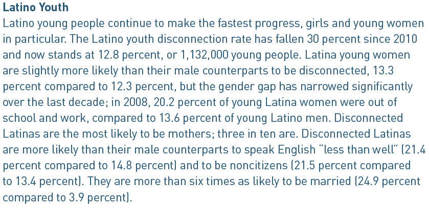</p>
<div id="section-42" class="section level4 recall_code_question_block">
<h4 class="recall_code_question_block"></h4>
<p><b><u> Question Opportunity </u></b></p>
<p>Can you recall how to add additional rows?</p>
</div>
<div id="section-43" class="section level4">
<h4></h4>
<hr />
<details>
<summary>
Click here to reveal the code.
</summary>
<div class="sourceCode" id="cb168"><pre
class="sourceCode r"><code class="sourceCode r"><span id="cb168-1"><a href="#cb168-1" tabindex="-1"></a>latinx_sub_2018 <span class="sc">%&lt;&gt;%</span></span>
<span id="cb168-2"><a href="#cb168-2" tabindex="-1"></a>  <span class="fu">add_row</span>(<span class="at">Group =</span> <span class="st">&quot;Latinx&quot;</span>,</span>
<span id="cb168-3"><a href="#cb168-3" tabindex="-1"></a>        <span class="at">Percent =</span> <span class="fl">12.8</span>,</span>
<span id="cb168-4"><a href="#cb168-4" tabindex="-1"></a> <span class="at">Race_Ethnicity =</span> <span class="st">&quot;Latinx&quot;</span>,</span>
<span id="cb168-5"><a href="#cb168-5" tabindex="-1"></a>         <span class="at">Gender =</span> <span class="st">&quot;All&quot;</span>) <span class="sc">%&gt;%</span></span>
<span id="cb168-6"><a href="#cb168-6" tabindex="-1"></a>  <span class="fu">add_row</span>(<span class="at">Group =</span> <span class="st">&quot;Latinx&quot;</span>,</span>
<span id="cb168-7"><a href="#cb168-7" tabindex="-1"></a>        <span class="at">Percent =</span> <span class="fl">12.3</span>,</span>
<span id="cb168-8"><a href="#cb168-8" tabindex="-1"></a> <span class="at">Race_Ethnicity =</span> <span class="st">&quot;Latinx&quot;</span>,</span>
<span id="cb168-9"><a href="#cb168-9" tabindex="-1"></a>         <span class="at">Gender =</span> <span class="st">&quot;Men&quot;</span>) <span class="sc">%&gt;%</span></span>
<span id="cb168-10"><a href="#cb168-10" tabindex="-1"></a>  <span class="fu">add_row</span>(<span class="at">Group =</span> <span class="st">&quot;Latinx&quot;</span>,</span>
<span id="cb168-11"><a href="#cb168-11" tabindex="-1"></a>        <span class="at">Percent =</span> <span class="fl">13.3</span>,</span>
<span id="cb168-12"><a href="#cb168-12" tabindex="-1"></a> <span class="at">Race_Ethnicity =</span> <span class="st">&quot;Latinx&quot;</span>,</span>
<span id="cb168-13"><a href="#cb168-13" tabindex="-1"></a>         <span class="at">Gender =</span> <span class="st">&quot;Women&quot;</span>)</span></code></pre></div>
</details>
<hr />
<div class="sourceCode" id="cb169"><pre
class="sourceCode r"><code class="sourceCode r"><span id="cb169-1"><a href="#cb169-1" tabindex="-1"></a><span class="fu">tail</span>(latinx_sub_2018)</span></code></pre></div>
<pre><code># A tibble: 6 × 4
  Group            Percent Race_Ethnicity   Gender
  &lt;chr&gt;              &lt;dbl&gt; &lt;chr&gt;            &lt;chr&gt; 
1 Central American    13.7 Central American All   
2 Men                 11.8 Central American Men   
3 Women               15.9 Central American Women 
4 Latinx              12.8 Latinx           All   
5 Latinx              12.3 Latinx           Men   
6 Latinx              13.3 Latinx           Women </code></pre>
<p>And now we will recode gender like before to be consistent:</p>
<div class="sourceCode" id="cb171"><pre
class="sourceCode r"><code class="sourceCode r"><span id="cb171-1"><a href="#cb171-1" tabindex="-1"></a>latinx_sub_2018 <span class="sc">%&lt;&gt;%</span></span>
<span id="cb171-2"><a href="#cb171-2" tabindex="-1"></a>  <span class="fu">mutate</span>(<span class="fu">across</span>(<span class="at">.cols =</span> <span class="fu">c</span>(Gender, Group),</span>
<span id="cb171-3"><a href="#cb171-3" tabindex="-1"></a>                <span class="sc">~</span> <span class="fu">str_replace</span>(<span class="at">string =</span> ., </span>
<span id="cb171-4"><a href="#cb171-4" tabindex="-1"></a>                             <span class="at">pattern =</span> <span class="st">&quot;Men&quot;</span>, </span>
<span id="cb171-5"><a href="#cb171-5" tabindex="-1"></a>                         <span class="at">replacement =</span> <span class="st">&quot;Male&quot;</span>)),</span>
<span id="cb171-6"><a href="#cb171-6" tabindex="-1"></a>         <span class="fu">across</span>(<span class="at">.cols =</span> <span class="fu">c</span>(Gender, Group),</span>
<span id="cb171-7"><a href="#cb171-7" tabindex="-1"></a>                <span class="sc">~</span> <span class="fu">str_replace</span>(<span class="at">string =</span> ., </span>
<span id="cb171-8"><a href="#cb171-8" tabindex="-1"></a>                             <span class="at">pattern =</span> <span class="st">&quot;Women&quot;</span>, </span>
<span id="cb171-9"><a href="#cb171-9" tabindex="-1"></a>                         <span class="at">replacement =</span> <span class="st">&quot;Female&quot;</span>)))</span>
<span id="cb171-10"><a href="#cb171-10" tabindex="-1"></a></span>
<span id="cb171-11"><a href="#cb171-11" tabindex="-1"></a><span class="fu">head</span>(latinx_sub_2018)</span></code></pre></div>
<pre><code># A tibble: 6 × 4
  Group                          Percent Race_Ethnicity                 Gender
  &lt;chr&gt;                            &lt;dbl&gt; &lt;chr&gt;                          &lt;chr&gt; 
1 South American                     8   South American                 All   
2 Male                               7.5 South American                 Male  
3 Mexican                           12.9 Mexican                        All   
4 Male                              12   Mexican                        Male  
5 Female                            13.8 Mexican                        Female
6 Puerto Rican, Dominican, Cuban    13.7 Puerto Rican, Dominican, Cuban All   </code></pre>
<p>Now we just need to combine all the data for the Latinx
subgroups.</p>
<p>Again, first we will add a year variable to both the 2017 and 2018
data.</p>
<div class="sourceCode" id="cb173"><pre
class="sourceCode r"><code class="sourceCode r"><span id="cb173-1"><a href="#cb173-1" tabindex="-1"></a>latinx_sub_2017 <span class="sc">%&lt;&gt;%</span></span>
<span id="cb173-2"><a href="#cb173-2" tabindex="-1"></a>  <span class="fu">mutate</span>(<span class="at">Year =</span> <span class="dv">2017</span>)</span>
<span id="cb173-3"><a href="#cb173-3" tabindex="-1"></a></span>
<span id="cb173-4"><a href="#cb173-4" tabindex="-1"></a>latinx_sub_2018 <span class="sc">%&lt;&gt;%</span></span>
<span id="cb173-5"><a href="#cb173-5" tabindex="-1"></a>  <span class="fu">mutate</span>(<span class="at">Year =</span> <span class="dv">2018</span>)</span>
<span id="cb173-6"><a href="#cb173-6" tabindex="-1"></a></span>
<span id="cb173-7"><a href="#cb173-7" tabindex="-1"></a>latinx_subgroups <span class="ot">&lt;-</span> <span class="fu">bind_rows</span>(latinx_sub_2017, latinx_sub_2018)</span>
<span id="cb173-8"><a href="#cb173-8" tabindex="-1"></a>latinx_subgroups</span></code></pre></div>
<pre><code># A tibble: 32 × 5
   Group                   Percent Race_Ethnicity   Gender  Year
   &lt;chr&gt;                     &lt;dbl&gt; &lt;chr&gt;            &lt;chr&gt;  &lt;dbl&gt;
 1 Latinx                     13.2 Latinx           All     2017
 2 Latinx Male                12.4 Latinx           Male    2017
 3 Latinx Female              13.9 Latinx           Female  2017
 4 South American              8.4 South American   All     2017
 5 South American Male         9.1 South American   Male    2017
 6 South American Female       7.7 South American   Female  2017
 7 Central American           12   Central American All     2017
 8 Central American Male       9.3 Central American Male    2017
 9 Central American Female    15   Central American Female  2017
10 Mexican                    13.3 Mexican          All     2017
# ℹ 22 more rows</code></pre>
<p>Again, we would like to have <code>NA</code> values for the
comparable years/genders that are possible. We will fill out the rest of
the table with <code>NA</code> values by performing the
<code>pivot_wider()</code> and <code>pivot_longer()</code> functions
sequentially like so:</p>
<div class="sourceCode" id="cb175"><pre
class="sourceCode r"><code class="sourceCode r"><span id="cb175-1"><a href="#cb175-1" tabindex="-1"></a>latinx_subgroups <span class="sc">%&lt;&gt;%</span></span>
<span id="cb175-2"><a href="#cb175-2" tabindex="-1"></a>  <span class="fu">select</span>(<span class="sc">-</span>Group) <span class="sc">%&gt;%</span></span>
<span id="cb175-3"><a href="#cb175-3" tabindex="-1"></a>  <span class="fu">pivot_wider</span>(<span class="at">names_from =</span> Year, <span class="at">values_from =</span> Percent) <span class="sc">%&gt;%</span></span>
<span id="cb175-4"><a href="#cb175-4" tabindex="-1"></a>  <span class="fu">pivot_longer</span>(<span class="at">cols =</span> <span class="sc">-</span><span class="fu">c</span>(Race_Ethnicity, Gender), </span>
<span id="cb175-5"><a href="#cb175-5" tabindex="-1"></a>               <span class="at">names_to =</span><span class="st">&quot;Year&quot;</span> , </span>
<span id="cb175-6"><a href="#cb175-6" tabindex="-1"></a>               <span class="at">values_to=</span><span class="st">&quot;Percent&quot;</span>)</span></code></pre></div>
<div class="datatables html-widget html-fill-item" id="htmlwidget-0add246f1e73f40fd207" style="width:100%;height:auto;"></div>
<script type="application/json" data-for="htmlwidget-0add246f1e73f40fd207">{"x":{"filter":"none","vertical":false,"data":[["1","2","3","4","5","6","7","8","9","10","11","12","13","14","15","16","17","18","19","20","21","22","23","24","25","26","27","28","29","30","31","32","33","34","35","36","37","38","39","40","41","42","43","44","45"],["United States","Male","Female","Asian","Asian Male","Asian Female","Chinese","Chinese Male","Chinese Female","Vietnamese","Vietnamese Male","Vietnamese Female","Indian","Indian Male","Indian Female","Pakistani","Korean","Korean Male","Korean Female","Two Or More","Filipino","Filipino Male","Filipino Female","Hmong","Hmong Male","Chinese","Male","Female","Indian","Male","Female","Korean","Male","Female","Vietnamese","Male","Female","Filipino","Male","Female","Hmong","Cambodian","Asian","Asian","Asian"],[11.5,11.8,11.1,6.600000000000001,6.5,6.7,4.3,4.7,3.9,5.5,7.5,3.4,5.9,4.100000000000001,7.800000000000001,6.4,6.5,8,5,6.600000000000001,7.300000000000001,6.5,8.1,14,18.6,4.100000000000001,4.5,3.7,5.4,4.7,6.100000000000001,5.5,5.600000000000001,5.4,6.300000000000001,7.600000000000001,5,6.800000000000001,6.300000000000001,7.4,10.2,13.8,6.2,6.4,6.1],["All_races","All_races","All_races","Asian","Asian","Asian","Chinese","Chinese","Chinese","Vietnamese","Vietnamese","Vietnamese","Indian","Indian","Indian","Pakistani","Korean","Korean","Korean","Two Or More","Filipino","Filipino","Filipino","Hmong","Hmong","Chinese","Chinese","Chinese","Indian","Indian","Indian","Korean","Korean","Korean","Vietnamese","Vietnamese","Vietnamese","Filipino","Filipino","Filipino","Hmong","Cambodian","Asian","Asian","Asian"],["All","Male","Female","All","Male","Female","All","Male","Female","All","Male","Female","All","Male","Female","All","All","Male","Female","All","All","Male","Female","All","Male","All","Male","Female","All","Male","Female","All","Male","Female","All","Male","Female","All","Male","Female","All","All","All","Male","Female"],[2017,2017,2017,2017,2017,2017,2017,2017,2017,2017,2017,2017,2017,2017,2017,2017,2017,2017,2017,2017,2017,2017,2017,2017,2017,2018,2018,2018,2018,2018,2018,2018,2018,2018,2018,2018,2018,2018,2018,2018,2018,2018,2018,2018,2018]],"container":"<table class=\"display\">\n  <thead>\n    <tr>\n      <th> <\/th>\n      <th>Group<\/th>\n      <th>Percent<\/th>\n      <th>Race_Ethnicity<\/th>\n      <th>Gender<\/th>\n      <th>Year<\/th>\n    <\/tr>\n  <\/thead>\n<\/table>","options":{"columnDefs":[{"className":"dt-right","targets":[2,5]},{"orderable":false,"targets":0},{"name":" ","targets":0},{"name":"Group","targets":1},{"name":"Percent","targets":2},{"name":"Race_Ethnicity","targets":3},{"name":"Gender","targets":4},{"name":"Year","targets":5}],"order":[],"autoWidth":false,"orderClasses":false}},"evals":[],"jsHooks":[]}</script>
<hr />
<details>
<summary>
Click here to see how this interactive table was created
</summary>
<p>This table was created using the <code>datatable()</code> function of
the <code>DT</code> package.</p>
<p>Like so:</p>
<div class="sourceCode" id="cb176"><pre
class="sourceCode r"><code class="sourceCode r"><span id="cb176-1"><a href="#cb176-1" tabindex="-1"></a>DT<span class="sc">::</span><span class="fu">datatable</span>(asian_subgroups)</span></code></pre></div>
</details>
<hr />
</div>
</div>
<div id="checking-the-data" class="section level3">
<h3><strong>Checking the data</strong></h3>
<hr />
<p>OK, now let’s make sure that our notations match across our different
tables. For example in the first report the terms male and female where
used, but in the second report men and women were used. Let’s make sure
everything is consistent now.</p>
<div class="sourceCode" id="cb177"><pre
class="sourceCode r"><code class="sourceCode r"><span id="cb177-1"><a href="#cb177-1" tabindex="-1"></a>major_groups_long</span></code></pre></div>
<pre><code># A tibble: 108 × 5
   Group         Race_Ethnicity Gender  Year Percent
   &lt;chr&gt;         &lt;chr&gt;          &lt;chr&gt;  &lt;dbl&gt;   &lt;dbl&gt;
 1 United States All_races      All     2008    12.6
 2 United States All_races      All     2010    14.7
 3 United States All_races      All     2012    14.1
 4 United States All_races      All     2014    13.2
 5 United States All_races      All     2016    11.7
 6 United States All_races      All     2017    11.5
 7 Male          All_races      Male    2008    12.3
 8 Male          All_races      Male    2010    15.2
 9 Male          All_races      Male    2012    14.5
10 Male          All_races      Male    2014    13.3
# ℹ 98 more rows</code></pre>
<div class="sourceCode" id="cb179"><pre
class="sourceCode r"><code class="sourceCode r"><span id="cb179-1"><a href="#cb179-1" tabindex="-1"></a>asian_subgroups</span></code></pre></div>
<pre><code># A tibble: 45 × 5
   Group          Percent Race_Ethnicity Gender  Year
   &lt;chr&gt;            &lt;dbl&gt; &lt;chr&gt;          &lt;chr&gt;  &lt;dbl&gt;
 1 United States     11.5 All_races      All     2017
 2 Male              11.8 All_races      Male    2017
 3 Female            11.1 All_races      Female  2017
 4 Asian              6.6 Asian          All     2017
 5 Asian Male         6.5 Asian          Male    2017
 6 Asian Female       6.7 Asian          Female  2017
 7 Chinese            4.3 Chinese        All     2017
 8 Chinese Male       4.7 Chinese        Male    2017
 9 Chinese Female     3.9 Chinese        Female  2017
10 Vietnamese         5.5 Vietnamese     All     2017
# ℹ 35 more rows</code></pre>
<div class="sourceCode" id="cb181"><pre
class="sourceCode r"><code class="sourceCode r"><span id="cb181-1"><a href="#cb181-1" tabindex="-1"></a>latinx_subgroups</span></code></pre></div>
<pre><code># A tibble: 32 × 5
   Group                   Percent Race_Ethnicity   Gender  Year
   &lt;chr&gt;                     &lt;dbl&gt; &lt;chr&gt;            &lt;chr&gt;  &lt;dbl&gt;
 1 Latinx                     13.2 Latinx           All     2017
 2 Latinx Male                12.4 Latinx           Male    2017
 3 Latinx Female              13.9 Latinx           Female  2017
 4 South American              8.4 South American   All     2017
 5 South American Male         9.1 South American   Male    2017
 6 South American Female       7.7 South American   Female  2017
 7 Central American           12   Central American All     2017
 8 Central American Male       9.3 Central American Male    2017
 9 Central American Female    15   Central American Female  2017
10 Mexican                    13.3 Mexican          All     2017
# ℹ 22 more rows</code></pre>
<p>Looks good! If you made it this far, you should pat yourself on your
back. That was a lot of wrangling!</p>
<p>Now let’s save the wrangled data so we can use it for later if we
wanted to start again at this point. We can do so using the
<code>save</code> function like so. We will save this data in a
subdirectory called “wrangled” within the “data” directory of our
working directory. We will also save a csv file as this is often useful
to send our data to collaborators. To use the <code>write_csv()</code>
function we need to save a different CSV file for each tibble.</p>
<div class="sourceCode" id="cb183"><pre
class="sourceCode r"><code class="sourceCode r"><span id="cb183-1"><a href="#cb183-1" tabindex="-1"></a><span class="fu">save</span>(major_groups_long, asian_subgroups, latinx_subgroups, <span class="at">file =</span> here<span class="sc">::</span><span class="fu">here</span>(<span class="st">&quot;data&quot;</span>, <span class="st">&quot;wrangled&quot;</span>, <span class="st">&quot;wrangled_data.rda&quot;</span>))</span>
<span id="cb183-2"><a href="#cb183-2" tabindex="-1"></a>readr<span class="sc">::</span><span class="fu">write_csv</span>(major_groups_long, <span class="at">file =</span> here<span class="sc">::</span><span class="fu">here</span>(<span class="st">&quot;data&quot;</span>, <span class="st">&quot;wrangled&quot;</span>, <span class="st">&quot;wrangled_major_groups_data.csv&quot;</span>))</span>
<span id="cb183-3"><a href="#cb183-3" tabindex="-1"></a>readr<span class="sc">::</span><span class="fu">write_csv</span>(asian_subgroups, <span class="at">file =</span> here<span class="sc">::</span><span class="fu">here</span>(<span class="st">&quot;data&quot;</span>, <span class="st">&quot;wrangled&quot;</span>, <span class="st">&quot;wrangled_asian_subgroups_data.csv&quot;</span>))</span>
<span id="cb183-4"><a href="#cb183-4" tabindex="-1"></a>readr<span class="sc">::</span><span class="fu">write_csv</span>(latinx_subgroups, <span class="at">file =</span> here<span class="sc">::</span><span class="fu">here</span>(<span class="st">&quot;data&quot;</span>, <span class="st">&quot;wrangled&quot;</span>, <span class="st">&quot;wrangled_latinx_subgroups_data.csv&quot;</span>))</span></code></pre></div>
</div>
</div>
<div id="data-visualization" class="section level2">
<h2><strong>Data Visualization</strong></h2>
<hr />
<p>Recall what our main questions were?</p>
<div id="section-44" class="section level4 main_question_block">
<h4 class="main_question_block"></h4>
<p><b><u> Our main questions: </u></b></p>
<ol style="list-style-type: decimal">
<li>How have youth disconnection rates in American youth changed since
2008?<br />
</li>
<li>In particular, how has this changed for different gender and ethnic
groups? Are any groups particularly disconnected?</li>
</ol>
</div>
<div id="section-45" class="section level4">
<h4></h4>
<p>Now that we have wrangled our data and made it easy to work with,
let’s create some visualizations to explore these questions.</p>
<p>If you have been following along but stopped and are starting here
you could load the wrangled data using the following command:</p>
<div class="sourceCode" id="cb184"><pre
class="sourceCode r"><code class="sourceCode r"><span id="cb184-1"><a href="#cb184-1" tabindex="-1"></a><span class="fu">load</span>(here<span class="sc">::</span><span class="fu">here</span>(<span class="st">&quot;data&quot;</span>, <span class="st">&quot;wrangled&quot;</span>, <span class="st">&quot;wrangled_data.rda&quot;</span>))</span></code></pre></div>
<hr />
<details>
<summary>
If you skipped the data wrangling section click here.
</summary>
<p>First you need to install the <code>OCSdata</code> package:</p>
<div class="sourceCode" id="cb185"><pre
class="sourceCode r"><code class="sourceCode r"><span id="cb185-1"><a href="#cb185-1" tabindex="-1"></a><span class="fu">install.packages</span>(<span class="st">&quot;OCSdata&quot;</span>)</span></code></pre></div>
<p>Then, you may load the wrangled data into your R environment using
the following code:</p>
<div class="sourceCode" id="cb186"><pre
class="sourceCode r"><code class="sourceCode r"><span id="cb186-1"><a href="#cb186-1" tabindex="-1"></a><span class="co"># library(OCSdata)</span></span>
<span id="cb186-2"><a href="#cb186-2" tabindex="-1"></a><span class="fu">wrangled_rda</span>(<span class="st">&quot;ocs-bp-youth-disconnection&quot;</span>. <span class="at">outpath =</span> <span class="fu">getwd</span>())</span>
<span id="cb186-3"><a href="#cb186-3" tabindex="-1"></a><span class="fu">load</span>(here<span class="sc">::</span><span class="fu">here</span>(<span class="st">&quot;OCSdata&quot;</span>, <span class="st">&quot;data&quot;</span>, <span class="st">&quot;wrangled&quot;</span>, <span class="st">&quot;wrangled_data.rda&quot;</span>))</span></code></pre></div>
<p>If the package does not work for you, an RDA file (stands for R data)
of the data can be found <a
href="https://github.com//opencasestudies/ocs-bp-youth-disconnection/tree/master/data/wrangled">here</a>
or slightly more directly <a
href="https://raw.githubusercontent.com/opencasestudies/ocs-bp-youth-disconnection/master/data/wrangled/wrangled_data.rda">here</a>.
Download this file and then place it in your current working directory
within a subdirectory called “wrangled” within a subdirectory called
“data” to copy and paste our code. We used an RStudio project and the <a
href="https://github.com/jennybc/here_here"><code>here</code>
package</a> to navigate to the file more easily.</p>
<div class="sourceCode" id="cb187"><pre
class="sourceCode r"><code class="sourceCode r"><span id="cb187-1"><a href="#cb187-1" tabindex="-1"></a><span class="fu">load</span>(here<span class="sc">::</span><span class="fu">here</span>(<span class="st">&quot;data&quot;</span>, <span class="st">&quot;wrangled&quot;</span>, <span class="st">&quot;wrangled_data.rda&quot;</span>))</span></code></pre></div>
<hr />
<details>
<summary>
Click here to see more about creating new projects in RStudio.
</summary>
<p>You can create a project by going to the File menu of RStudio like
so:</p>
<p></p>
<p>You can also do so by clicking the project button:</p>
<p></p>
<p>See <a
href="https://support.rstudio.com/hc/en-us/articles/200526207-Using-Projects">here</a>
to learn more about using RStudio projects and <a
href="https://github.com/jennybc/here_here">here</a> to learn more about
the <code>here</code> package.</p>
</details>
<hr />
</details>
<hr />
</div>
<div id="major-race-and-ethnic-groups-plot" class="section level3">
<h3><strong>Major Race and Ethnic Groups Plot</strong></h3>
<hr />
<p>We are particularly interested in being able to reproduce the plot
below from the report, as we would like to make similar looking
plots.</p>
<p>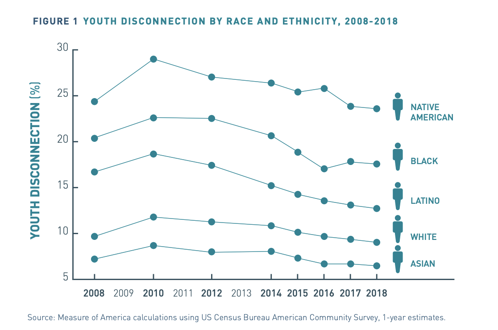</p>
<p>In general, it is very useful to learn how to reproduce the style of
a plot.</p>
<p>There are color identifying websites such as <a
href="https://imagecolorpicker.com/en/">this</a>.</p>
<p>Using one of these websites, we identify the <a
href="https://en.wikipedia.org/wiki/Web_colors?oldformat=true">hex
triplet</a> code for the color used in the visualization included in the
PDF : <code>#008393</code>. Thus we will use this color our plot.</p>
<p>We can create a version of the above plot using the
<code>ggplot2</code> package of the <em>tidyverse</em> to create our
plots.</p>
<hr />
<details>
<summary>
Click here for an introduction about this package if you are new to
using <code>ggplot2</code>
</summary>
<hr />
<p>The <a href="http://ggplot2.tidyverse.org">ggplot2 package</a> is
generally intuitive for beginners because it is based on a <a
href="http://vita.had.co.nz/papers/layered-grammar.html">grammar of
graphics</a> or the <code>gg</code> in <code>ggplot2</code>. The idea is
that you can construct many sentences by learning just a few nouns,
adjectives, and verbs. There are specific “words” that we will need to
learn and once we do, you will be able to create (or “write”) hundreds
of different plots.</p>
<p>The critical part to making graphics using <code>ggplot2</code> is
the data needs to be in a <em>tidy</em> format. Given that we have just
spent time putting our data in <em>tidy</em> format, we are primed to
take advantage of all that <code>ggplot2</code> has to offer!</p>
<p>We will show how it is easy to pipe <em>tidy</em> data (output) as
input to other functions that create plots. This all works because we
are working within the <em>tidyverse</em>.</p>
<p><strong>What is the <code>ggplot()</code> function?</strong> As
explained by Hadley Wickham:</p>
<blockquote>
<p>The grammar tells us that a statistical graphic is a mapping from
data to aesthetic attributes (colour, shape, size) of geometric objects
(points, lines, bars). The plot may also contain statistical
transformations of the data and is drawn on a specific coordinates
system.</p>
</blockquote>
<p><code>ggplot2</code> Terminology:</p>
<ul>
<li><strong>ggplot</strong> - the main function where you specify the
dataset and variables to plot (this is where we define the
<code>x</code> and <code>y</code> variable names)</li>
<li><strong>geoms</strong> - geometric objects
<ul>
<li>e.g. <code>geom_point()</code>, <code>geom_bar()</code>,
<code>geom_line()</code>, <code>geom_histogram()</code></li>
</ul></li>
<li><strong>aes</strong> - aesthetics
<ul>
<li>shape, transparency, color, fill, line types</li>
</ul></li>
<li><strong>scales</strong> - define how your data will be plotted
<ul>
<li>continuous, discrete, log, etc</li>
</ul></li>
</ul>
<p>The function <code>aes()</code> is an aesthetic mapping function
inside the <code>ggplot()</code> object. We use this function to specify
plot attributes (e.g. <code>x</code> and <code>y</code> variable names)
that will not change as we add more layers.</p>
<p>Anything that goes in the <code>ggplot()</code> object becomes a
global setting. From there, we use the <code>geom</code> objects to add
more layers to the base <code>ggplot()</code> object. These will define
what we are interested in illustrating using the data.</p>
</details>
<hr />
<p>So for this first plot we just want to recreate the plot in the
report. We will use the <code>major_groups_long</code> tibble and we
will filter for only the <code>"All"</code> values of the
<code>Gender</code> column. We also want to exclude the data for the
United states. We can exclude the data from the US using the not equals
<code>!=</code> operator like so:</p>
<div class="sourceCode" id="cb188"><pre
class="sourceCode r"><code class="sourceCode r"><span id="cb188-1"><a href="#cb188-1" tabindex="-1"></a>major_groups_long <span class="sc">%&gt;%</span></span>
<span id="cb188-2"><a href="#cb188-2" tabindex="-1"></a>   <span class="fu">filter</span>(Gender <span class="sc">==</span> <span class="st">&quot;All&quot;</span>,</span>
<span id="cb188-3"><a href="#cb188-3" tabindex="-1"></a>          Group <span class="sc">!=</span> <span class="st">&quot;United States&quot;</span>)</span></code></pre></div>
<pre><code># A tibble: 30 × 5
   Group Race_Ethnicity Gender  Year Percent
   &lt;chr&gt; &lt;chr&gt;          &lt;chr&gt;  &lt;dbl&gt;   &lt;dbl&gt;
 1 Asian Asian          All     2008     7.1
 2 Asian Asian          All     2010     8.5
 3 Asian Asian          All     2012     7.8
 4 Asian Asian          All     2014     7.9
 5 Asian Asian          All     2016     6.6
 6 Asian Asian          All     2017     6.6
 7 White White          All     2008     9.7
 8 White White          All     2010    11.7
 9 White White          All     2012    11.2
10 White White          All     2014    10.8
# ℹ 20 more rows</code></pre>
<p>The data from the tables only included up to 2017, but this will
still allow us to create a similar plot.</p>
<p>Now we have the data ready to make the plot… but how do we actually
start making the plot?</p>
<p>First, we start with the <code>ggplot()</code> function of the
<code>ggplot2</code> package.</p>
<p>This function requires that the aesthetics <code>aes()</code> be
specified. This involves choosing what variable will be plotted on the
x-axis and the y axis. It also involves choosing variables to color or
group our plot by.</p>
<p>In our case, we want to plot the percent of disconnection on the
y-axis (thus the <code>Percent</code> variable of the
<code>major_groups_long</code> data) and the <code>Year</code> on the
x-axis. We want to separate each racial or ethnic group to have their
own points/lines. Thus we will use the <code>color</code> argument for
this variable, as we intend to color our plot something other than
black.</p>
<p>If we run the following code, we get an empty plot.</p>
<div class="sourceCode" id="cb190"><pre
class="sourceCode r"><code class="sourceCode r"><span id="cb190-1"><a href="#cb190-1" tabindex="-1"></a>major_groups_long <span class="sc">%&gt;%</span></span>
<span id="cb190-2"><a href="#cb190-2" tabindex="-1"></a>   <span class="fu">filter</span>(Gender <span class="sc">==</span> <span class="st">&quot;All&quot;</span>,</span>
<span id="cb190-3"><a href="#cb190-3" tabindex="-1"></a>          Group <span class="sc">!=</span> <span class="st">&quot;United States&quot;</span>) <span class="sc">%&gt;%</span></span>
<span id="cb190-4"><a href="#cb190-4" tabindex="-1"></a><span class="fu">ggplot</span>(<span class="fu">aes</span>(<span class="at">x =</span> Year, <span class="at">y =</span> Percent, <span class="at">color =</span> Race_Ethnicity))</span></code></pre></div>
<p>The next thing we need to do is add <code>ggplot2</code> layers using
the <code>+</code> operator to specify how we want the data to be
displayed on our plot.</p>
<p>We would like both points and lines. We will use the
<code>geom_point()</code> and <code>geom_line()</code> functions of the
<code>ggplot2</code> package to do this. The layer we add first will be
plotted first and so on with the next layers. We will also specify the
size of these elements using the <code>size</code> argument.</p>
<div class="sourceCode" id="cb191"><pre
class="sourceCode r"><code class="sourceCode r"><span id="cb191-1"><a href="#cb191-1" tabindex="-1"></a>major_groups_long <span class="sc">%&gt;%</span></span>
<span id="cb191-2"><a href="#cb191-2" tabindex="-1"></a>  <span class="fu">filter</span>(Gender <span class="sc">==</span> <span class="st">&quot;All&quot;</span>, Group <span class="sc">!=</span> <span class="st">&quot;United States&quot;</span>) <span class="sc">%&gt;%</span></span>
<span id="cb191-3"><a href="#cb191-3" tabindex="-1"></a>  <span class="fu">ggplot</span>(<span class="fu">aes</span>(<span class="at">x =</span> Year, <span class="at">y =</span> Percent, <span class="at">color =</span> Race_Ethnicity)) <span class="sc">+</span></span>
<span id="cb191-4"><a href="#cb191-4" tabindex="-1"></a>    <span class="fu">geom_line</span>(<span class="at">size =</span> <span class="fl">0.5</span>) <span class="sc">+</span></span>
<span id="cb191-5"><a href="#cb191-5" tabindex="-1"></a>    <span class="fu">geom_point</span>(<span class="at">size =</span> <span class="dv">3</span>) </span></code></pre></div>
<p>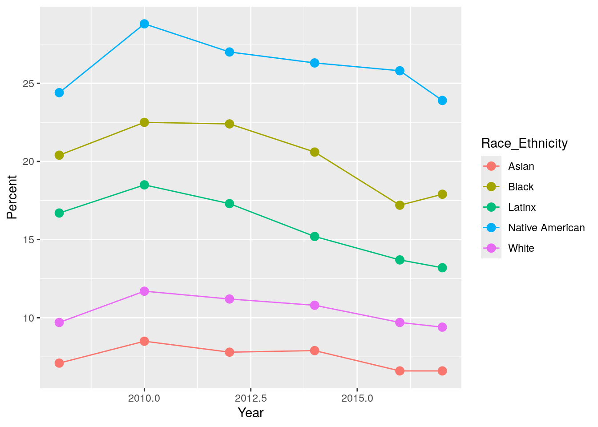</p>
<p>OK, not bad, but we have quite a bit to work on to make the plot
style match.</p>
<p>First, we will update the x-axis and y-axis, to look more similar to
the plot from the report. We can specify the location of the tick marks
using <code>breaks</code> argument of the
<code>scale_x_continuous()</code> and <code>scale_y_continuous()</code>
functions (also of the <code>ggplot2</code> package). These functions
also allow for specification of the range or limits of the axis using
the <code>limits</code> argument. We can use the base <code>seq()</code>
function to create a sequence of numbers for each tick mark. We will
make the x-axis upper limit a bit larger to allow for the image of the
figure and the label for each group.</p>
<p>Next, we will change the color to match the one that we identified,
by using the <code>scale_color_manual()</code> function of the
<code>ggplot2</code> package. This requires color values for each group.
In our case, we have 5 groups, so we repeat this value 5 times using the
base <code>rep()</code> function.</p>
<p>We will also change the overall look of the plot using the
<code>theme_classic()</code> function. See <a
href="https://ggplot2.tidyverse.org/reference/ggtheme.html">here</a> for
a list of options.</p>
<div class="sourceCode" id="cb192"><pre
class="sourceCode r"><code class="sourceCode r"><span id="cb192-1"><a href="#cb192-1" tabindex="-1"></a> youth_plot <span class="ot">&lt;-</span> </span>
<span id="cb192-2"><a href="#cb192-2" tabindex="-1"></a>  major_groups_long <span class="sc">%&gt;%</span></span>
<span id="cb192-3"><a href="#cb192-3" tabindex="-1"></a>  <span class="fu">filter</span>(Gender <span class="sc">==</span> <span class="st">&quot;All&quot;</span>, Group <span class="sc">!=</span> <span class="st">&quot;United States&quot;</span>) <span class="sc">%&gt;%</span></span>
<span id="cb192-4"><a href="#cb192-4" tabindex="-1"></a>  <span class="fu">ggplot</span>(<span class="fu">aes</span>(<span class="at">x =</span> Year, <span class="at">y =</span> Percent, <span class="at">color =</span> Race_Ethnicity)) <span class="sc">+</span></span>
<span id="cb192-5"><a href="#cb192-5" tabindex="-1"></a>    <span class="fu">geom_line</span>( <span class="at">size =</span> <span class="fl">0.5</span>) <span class="sc">+</span></span>
<span id="cb192-6"><a href="#cb192-6" tabindex="-1"></a>    <span class="fu">geom_point</span>( <span class="at">size =</span> <span class="dv">3</span>) <span class="sc">+</span></span>
<span id="cb192-7"><a href="#cb192-7" tabindex="-1"></a>    <span class="fu">scale_x_continuous</span>(<span class="at">breaks =</span> <span class="fu">seq</span>(<span class="dv">2008</span>,<span class="dv">2018</span>, <span class="at">by=</span><span class="dv">1</span>),</span>
<span id="cb192-8"><a href="#cb192-8" tabindex="-1"></a>                       <span class="at">limits =</span> <span class="fu">c</span>(<span class="dv">2008</span>,<span class="dv">2020</span>)) <span class="sc">+</span></span>
<span id="cb192-9"><a href="#cb192-9" tabindex="-1"></a>    <span class="fu">scale_y_continuous</span>(<span class="at">breaks =</span> <span class="fu">seq</span>(<span class="dv">5</span>,<span class="dv">30</span>, <span class="at">by =</span><span class="dv">5</span>),</span>
<span id="cb192-10"><a href="#cb192-10" tabindex="-1"></a>                       <span class="at">limits =</span> <span class="fu">c</span>(<span class="dv">5</span>,<span class="dv">30</span>)) <span class="sc">+</span></span>
<span id="cb192-11"><a href="#cb192-11" tabindex="-1"></a>    <span class="fu">scale_color_manual</span>(<span class="at">values =</span> <span class="fu">c</span>(<span class="fu">rep</span>( <span class="st">&quot;#008393&quot;</span>, <span class="dv">5</span>))) <span class="sc">+</span> </span>
<span id="cb192-12"><a href="#cb192-12" tabindex="-1"></a>    <span class="fu">theme_classic</span>()</span>
<span id="cb192-13"><a href="#cb192-13" tabindex="-1"></a></span>
<span id="cb192-14"><a href="#cb192-14" tabindex="-1"></a>youth_plot</span></code></pre></div>
<p>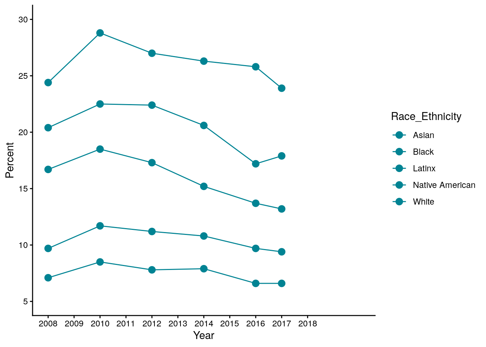</p>
<p>Now let’s add some labels. We can add a title using the
<code>title</code> argument and a y-axis title using the <code>y</code>
argument of the <code>labs()</code> function.</p>
<div class="sourceCode" id="cb193"><pre
class="sourceCode r"><code class="sourceCode r"><span id="cb193-1"><a href="#cb193-1" tabindex="-1"></a>youth_plot <span class="ot">&lt;-</span> </span>
<span id="cb193-2"><a href="#cb193-2" tabindex="-1"></a>  youth_plot <span class="sc">+</span> </span>
<span id="cb193-3"><a href="#cb193-3" tabindex="-1"></a>  <span class="fu">labs</span>(<span class="at">title =</span> <span class="st">&quot;YOUTH DISCONNECTION BY RACE AND ETHNICITY, 2008 - 2017&quot;</span>,</span>
<span id="cb193-4"><a href="#cb193-4" tabindex="-1"></a>           <span class="at">y =</span> <span class="st">&quot;YOUTH DISCONNECTION (%)&quot;</span>) <span class="sc">+</span></span>
<span id="cb193-5"><a href="#cb193-5" tabindex="-1"></a>  <span class="fu">theme</span>(<span class="at">title =</span> <span class="fu">element_text</span>(<span class="at">size =</span> <span class="dv">10</span>,</span>
<span id="cb193-6"><a href="#cb193-6" tabindex="-1"></a>                             <span class="at">color =</span> <span class="st">&quot;#008393&quot;</span>,</span>
<span id="cb193-7"><a href="#cb193-7" tabindex="-1"></a>                             <span class="at">face =</span> <span class="st">&quot;bold&quot;</span>),</span>
<span id="cb193-8"><a href="#cb193-8" tabindex="-1"></a>        <span class="at">axis.title.x =</span> <span class="fu">element_blank</span>())</span>
<span id="cb193-9"><a href="#cb193-9" tabindex="-1"></a></span>
<span id="cb193-10"><a href="#cb193-10" tabindex="-1"></a>youth_plot <span class="ot">&lt;-</span> </span>
<span id="cb193-11"><a href="#cb193-11" tabindex="-1"></a>  directlabels<span class="sc">::</span><span class="fu">direct.label</span>(youth_plot, </span>
<span id="cb193-12"><a href="#cb193-12" tabindex="-1"></a>                             <span class="fu">list</span>(<span class="fu">dl.trans</span>(<span class="at">x =</span> x<span class="fl">+1.2</span>, <span class="at">y =</span> y <span class="sc">+</span> <span class="dv">0</span>), </span>
<span id="cb193-13"><a href="#cb193-13" tabindex="-1"></a>                                  <span class="st">&quot;last.points&quot;</span>))</span>
<span id="cb193-14"><a href="#cb193-14" tabindex="-1"></a>youth_plot</span></code></pre></div>
<p>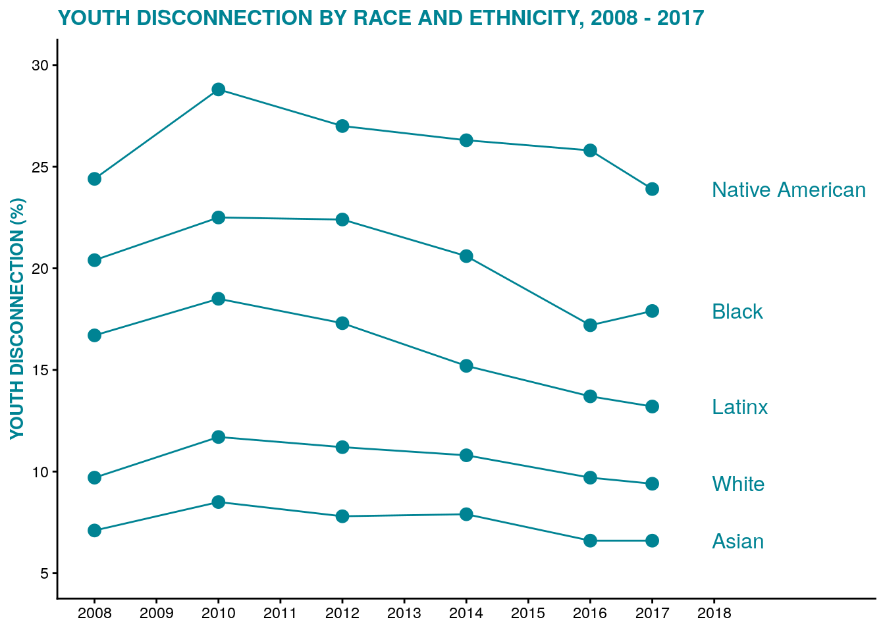</p>
<p>Getting close!</p>
<p>Now we need to add figurine icons to the plot.</p>
<p>To add the figurines we can use icons from free resources like <a
href="https://fontawesome.com/">font awesome</a>. See <a
href="https://commons.wikimedia.org/wiki/Category:Font_Awesome_4_icons">here</a>
for a link to <code>svg</code> options. Or we could also take a
screenshot of just the figurine from the original plot. However, it is
useful to know how to create similar icons if we didn’t have the
original plot to work with so we will start with an example of using a
font awesome icon.</p>
<div id="using-font-awesome" class="section level5">
<h5>Using font awesome:</h5>
<p>The figurine used below is stored locally in the repository. Keeping
an image asset in the project makes the document reproducible: builds do
not depend on an external server being available or accepting automated
download requests. We first make a black version of the local icon so
that we can demonstrate the recoloring step:</p>
<div class="sourceCode" id="cb194"><pre
class="sourceCode r"><code class="sourceCode r"><span id="cb194-1"><a href="#cb194-1" tabindex="-1"></a>fa_figurine <span class="ot">&lt;-</span> <span class="fu">image_read</span>(here<span class="sc">::</span><span class="fu">here</span>(<span class="st">&quot;img&quot;</span>, <span class="st">&quot;figurine.png&quot;</span>)) <span class="sc">|&gt;</span></span>
<span id="cb194-2"><a href="#cb194-2" tabindex="-1"></a>  <span class="fu">image_transparent</span>(<span class="st">&quot;white&quot;</span>) <span class="sc">|&gt;</span></span>
<span id="cb194-3"><a href="#cb194-3" tabindex="-1"></a>  <span class="fu">image_fill</span>(<span class="at">color =</span> <span class="st">&quot;black&quot;</span>, <span class="at">point =</span> <span class="st">&quot;+56+50&quot;</span>) <span class="sc">|&gt;</span></span>
<span id="cb194-4"><a href="#cb194-4" tabindex="-1"></a>  <span class="fu">image_fill</span>(<span class="at">color =</span> <span class="st">&quot;black&quot;</span>, <span class="at">point =</span> <span class="st">&quot;+56+100&quot;</span>)</span>
<span id="cb194-5"><a href="#cb194-5" tabindex="-1"></a></span>
<span id="cb194-6"><a href="#cb194-6" tabindex="-1"></a>fa_figurine</span></code></pre></div>
<p></p>
<p>We would like to change the color of the icon to match that of our
plot. We can do so using the <code>image_fill()</code> function of the
<code>magick</code> package. We need to list the name of the image
object to change, then we need to list the color we want to use. Finally
we need to list what points we want to color. We don’t want to color the
space around the black shapes, just the black shapes themselves. It may
take some trial and error to figure out where these pixels are.</p>
<p>According to the documentation for the <code>magick</code>
package:</p>
<blockquote>
<p>The <code>image_fill()</code> function performs flood-fill by
painting starting point and all neighboring pixels of approximately the
same color.</p>
</blockquote>
<blockquote>
<p>point = a geometry_point string indicating the starting point of the
flood-fill</p>
</blockquote>
<p>First we will color in the circle at the top of the icon. The local
image is 112 by 210 pixels, so <code>point = +56+50</code> starts at
x:56 and y:50, within the circle. Choosing a point inside the shape lets
us change that connected set of pixels.</p>
<div class="sourceCode" id="cb195"><pre
class="sourceCode r"><code class="sourceCode r"><span id="cb195-1"><a href="#cb195-1" tabindex="-1"></a>fa_figurine <span class="ot">&lt;-</span> <span class="fu">image_fill</span>(fa_figurine,</span>
<span id="cb195-2"><a href="#cb195-2" tabindex="-1"></a>                          <span class="at">color =</span> <span class="st">&quot;#008393&quot;</span>, </span>
<span id="cb195-3"><a href="#cb195-3" tabindex="-1"></a>                          <span class="at">point =</span> <span class="st">&quot;+56+50&quot;</span>)</span>
<span id="cb195-4"><a href="#cb195-4" tabindex="-1"></a></span>
<span id="cb195-5"><a href="#cb195-5" tabindex="-1"></a>fa_figurine</span></code></pre></div>
<p></p>
<p>Second we will color in the lower shape of the icon. It is in the
middle of the image horizontally and lower down vertically, so we start
at x:56 and y:100.</p>
<div class="sourceCode" id="cb196"><pre
class="sourceCode r"><code class="sourceCode r"><span id="cb196-1"><a href="#cb196-1" tabindex="-1"></a>fa_figurine <span class="ot">&lt;-</span> <span class="fu">image_fill</span>(fa_figurine,</span>
<span id="cb196-2"><a href="#cb196-2" tabindex="-1"></a>                          <span class="at">color =</span> <span class="st">&quot;#008393&quot;</span>, </span>
<span id="cb196-3"><a href="#cb196-3" tabindex="-1"></a>                          <span class="at">point =</span> <span class="st">&quot;+56+100&quot;</span>)</span>
<span id="cb196-4"><a href="#cb196-4" tabindex="-1"></a></span>
<span id="cb196-5"><a href="#cb196-5" tabindex="-1"></a>fa_figurine</span></code></pre></div>
<p></p>
<p>Nice! We changed the color of the image.</p>
<p>Now let’s try using a screenshot of the original plot. You can find
our screenshot in our <code>img</code> directory on our GitHub
repository.</p>
</div>
<div id="using-a-screenshot" class="section level4">
<h4>Using a screenshot:</h4>
<div class="sourceCode" id="cb197"><pre
class="sourceCode r"><code class="sourceCode r"><span id="cb197-1"><a href="#cb197-1" tabindex="-1"></a>figurine <span class="ot">&lt;-</span><span class="fu">image_read</span>(here<span class="sc">::</span><span class="fu">here</span>(<span class="st">&quot;img&quot;</span>, <span class="st">&quot;figurine.png&quot;</span>))</span>
<span id="cb197-2"><a href="#cb197-2" tabindex="-1"></a>figurine</span></code></pre></div>
<p></p>
<p>Now to add the image of the figurine to the plot we can use the
<code>draw_image()</code> function of the <code>cowplot</code> package.
We simply need to specify the name of the image, and then where we would
like it to go according to the x- and y-axis and finally the scaled size
of the image. This <code>scale</code> argument also takes a bit of trial
and error.</p>
<p>Here we will add both images of the figurines to a couple of
groups:</p>
<div class="sourceCode" id="cb198"><pre
class="sourceCode r"><code class="sourceCode r"><span id="cb198-1"><a href="#cb198-1" tabindex="-1"></a>youth_plot <span class="sc">+</span></span>
<span id="cb198-2"><a href="#cb198-2" tabindex="-1"></a>  cowplot<span class="sc">::</span><span class="fu">draw_image</span>(figurine, <span class="at">x =</span> <span class="dv">2017</span>, <span class="at">y =</span> <span class="fl">23.5</span>, <span class="at">scale =</span> <span class="dv">4</span>) <span class="sc">+</span></span>
<span id="cb198-3"><a href="#cb198-3" tabindex="-1"></a>  cowplot<span class="sc">::</span><span class="fu">draw_image</span>(fa_figurine, <span class="at">x =</span> <span class="dv">2017</span>, <span class="at">y =</span> <span class="fl">17.5</span>, <span class="at">scale =</span> <span class="dv">2</span>)</span></code></pre></div>
<p>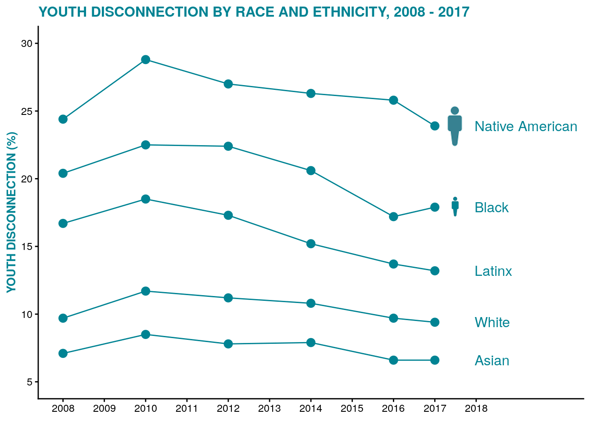</p>
<p>Nice!</p>
<p>Now we just need to add this for all of the groups and we also will
want to replace our <code>Native American</code> label with a two line
version so that we look as similar to the report plot as possible.</p>
</div>
<div id="section-46" class="section level4 think_question_block">
<h4 class="think_question_block"></h4>
<p><b><u> Question Opportunity </u></b></p>
<p>How might we change the Native American label to have two lines?
(hint: think about how we separated the rows of our tables)</p>
</div>
<div id="section-47" class="section level4">
<h4></h4>
<hr />
<details>
<summary>
Click here to reveal the code.
</summary>
<div class="sourceCode" id="cb199"><pre
class="sourceCode r"><code class="sourceCode r"><span id="cb199-1"><a href="#cb199-1" tabindex="-1"></a>youth_plot <span class="ot">&lt;-</span> major_groups_long <span class="sc">%&gt;%</span></span>
<span id="cb199-2"><a href="#cb199-2" tabindex="-1"></a>   <span class="fu">filter</span>(Gender <span class="sc">==</span> <span class="st">&quot;All&quot;</span>,</span>
<span id="cb199-3"><a href="#cb199-3" tabindex="-1"></a>          Group <span class="sc">!=</span> <span class="st">&quot;United States&quot;</span>) <span class="sc">%&gt;%</span></span>
<span id="cb199-4"><a href="#cb199-4" tabindex="-1"></a>   <span class="fu">mutate</span>(<span class="at">Race_Ethnicity =</span> <span class="fu">str_replace</span>(<span class="at">string =</span> Race_Ethnicity, </span>
<span id="cb199-5"><a href="#cb199-5" tabindex="-1"></a>                                      <span class="at">pattern =</span> <span class="st">&quot;Native American&quot;</span>,</span>
<span id="cb199-6"><a href="#cb199-6" tabindex="-1"></a>                                  <span class="at">replacement =</span> <span class="st">&quot;Native</span><span class="sc">\n</span><span class="st">American&quot;</span>))  <span class="sc">%&gt;%</span> </span>
<span id="cb199-7"><a href="#cb199-7" tabindex="-1"></a>  <span class="fu">ggplot</span>(<span class="fu">aes</span>(<span class="at">x =</span> Year, <span class="at">y =</span> Percent, <span class="at">color =</span> Race_Ethnicity)) <span class="sc">+</span></span>
<span id="cb199-8"><a href="#cb199-8" tabindex="-1"></a>    <span class="fu">geom_line</span>( <span class="at">size =</span> <span class="fl">0.5</span>) <span class="sc">+</span></span>
<span id="cb199-9"><a href="#cb199-9" tabindex="-1"></a>    <span class="fu">geom_point</span>( <span class="at">size =</span> <span class="dv">3</span>) <span class="sc">+</span></span>
<span id="cb199-10"><a href="#cb199-10" tabindex="-1"></a>    <span class="fu">scale_x_continuous</span>(<span class="at">breaks =</span> <span class="fu">seq</span>(<span class="dv">2008</span>,<span class="dv">2018</span>, <span class="at">by=</span><span class="dv">1</span>),</span>
<span id="cb199-11"><a href="#cb199-11" tabindex="-1"></a>                      <span class="at">limits =</span> <span class="fu">c</span>(<span class="dv">2008</span>,<span class="dv">2019</span>)) <span class="sc">+</span></span>
<span id="cb199-12"><a href="#cb199-12" tabindex="-1"></a>    <span class="fu">scale_y_continuous</span>(<span class="at">breaks =</span> <span class="fu">seq</span>(<span class="dv">5</span>,<span class="dv">30</span>, <span class="at">by =</span><span class="dv">5</span>),</span>
<span id="cb199-13"><a href="#cb199-13" tabindex="-1"></a>                      <span class="at">limits =</span> <span class="fu">c</span>(<span class="dv">5</span>,<span class="dv">30</span>)) <span class="sc">+</span></span>
<span id="cb199-14"><a href="#cb199-14" tabindex="-1"></a>    <span class="fu">theme_classic</span>() <span class="sc">+</span></span>
<span id="cb199-15"><a href="#cb199-15" tabindex="-1"></a>    <span class="fu">labs</span>(<span class="at">title =</span> <span class="st">&quot;YOUTH DISCONNECTION BY RACE AND ETHNICITY, 2008 - 2017&quot;</span>,</span>
<span id="cb199-16"><a href="#cb199-16" tabindex="-1"></a>         <span class="at">y =</span> <span class="st">&quot;YOUTH DISCONNECTION (%)&quot;</span>) <span class="sc">+</span></span>
<span id="cb199-17"><a href="#cb199-17" tabindex="-1"></a>    <span class="fu">theme</span>(<span class="at">title =</span> <span class="fu">element_text</span>(<span class="at">size =</span> <span class="dv">10</span>,</span>
<span id="cb199-18"><a href="#cb199-18" tabindex="-1"></a>                              <span class="at">color =</span> <span class="st">&quot;#008393&quot;</span>,</span>
<span id="cb199-19"><a href="#cb199-19" tabindex="-1"></a>                              <span class="at">face =</span> <span class="st">&quot;bold&quot;</span>),</span>
<span id="cb199-20"><a href="#cb199-20" tabindex="-1"></a>          <span class="at">axis.title.x =</span> <span class="fu">element_blank</span>())<span class="sc">+</span></span>
<span id="cb199-21"><a href="#cb199-21" tabindex="-1"></a>    <span class="fu">scale_color_manual</span>(<span class="at">values =</span> <span class="fu">c</span>(<span class="fu">rep</span>( <span class="st">&quot;#008393&quot;</span>, <span class="dv">5</span>)))<span class="sc">+</span></span>
<span id="cb199-22"><a href="#cb199-22" tabindex="-1"></a>    <span class="fu">draw_image</span>(figurine, <span class="at">x =</span> <span class="fl">2017.25</span>, <span class="at">y =</span> <span class="fl">23.5</span>, <span class="at">scale =</span> <span class="dv">4</span>) <span class="sc">+</span></span>
<span id="cb199-23"><a href="#cb199-23" tabindex="-1"></a>    <span class="fu">draw_image</span>(figurine, <span class="at">x =</span> <span class="fl">2017.25</span>, <span class="at">y =</span> <span class="fl">17.5</span>, <span class="at">scale =</span> <span class="dv">4</span>) <span class="sc">+</span></span>
<span id="cb199-24"><a href="#cb199-24" tabindex="-1"></a>    <span class="fu">draw_image</span>(figurine, <span class="at">x =</span> <span class="fl">2017.25</span>, <span class="at">y =</span> <span class="fl">13.5</span>, <span class="at">scale =</span> <span class="dv">4</span>) <span class="sc">+</span></span>
<span id="cb199-25"><a href="#cb199-25" tabindex="-1"></a>    <span class="fu">draw_image</span>(figurine, <span class="at">x =</span> <span class="fl">2017.25</span>, <span class="at">y =</span> <span class="dv">9</span>, <span class="at">scale =</span> <span class="dv">4</span>) <span class="sc">+</span></span>
<span id="cb199-26"><a href="#cb199-26" tabindex="-1"></a>    <span class="fu">draw_image</span>(figurine, <span class="at">x =</span> <span class="fl">2017.25</span>, <span class="at">y =</span> <span class="fl">5.5</span>, <span class="at">scale =</span> <span class="dv">4</span>)</span>
<span id="cb199-27"><a href="#cb199-27" tabindex="-1"></a></span>
<span id="cb199-28"><a href="#cb199-28" tabindex="-1"></a>youth_plot <span class="ot">&lt;-</span> directlabels<span class="sc">::</span><span class="fu">direct.label</span>(youth_plot, <span class="fu">list</span>(<span class="fu">dl.trans</span>(<span class="at">x =</span> x <span class="sc">+</span> <span class="fl">1.4</span>, </span>
<span id="cb199-29"><a href="#cb199-29" tabindex="-1"></a>                                                                   <span class="at">y =</span> y <span class="sc">+</span> <span class="dv">0</span>),  </span>
<span id="cb199-30"><a href="#cb199-30" tabindex="-1"></a>                                                               <span class="st">&quot;last.points&quot;</span>))</span></code></pre></div>
</details>
<hr />
<div class="sourceCode" id="cb200"><pre
class="sourceCode r"><code class="sourceCode r"><span id="cb200-1"><a href="#cb200-1" tabindex="-1"></a>youth_plot</span></code></pre></div>
<p>
Nice! Our plot looks very similar stylistically to the plot in the
report.</p>
<p>We can see from this plot that Native Americans have a very high rate
of youth disconnection, with roughly still a quarter of the population
experiencing youth disconnection in this survey. Although some groups
show a downward trend, like the Latinx group, the level has been fairly
stable since 2008, as we see that the slope of each line is fairly flat.
We will investigate this further in our analysis.</p>
</div>
</div>
<div id="major-race-and-ethnic-groups-and-gender-plot"
class="section level3">
<h3><strong>Major Race and Ethnic Groups and Gender Plot</strong></h3>
<hr />
<p>Now let’s create a similar plot for females and males. To do this we
can simply use the <code>facet_wrap()</code> function. We need to
specify what variable we want to facet by, in this case the
<code>Gender</code> variable, by using the <code>~</code> operator. We
also want to set the <code>scales</code> argument to
<code>"free"</code>, so that we have a y-axis for both the female and
male plots. See this <a
href="https://opencasestudies.github.io/ocs-bp-co2-emissions/#Faceted_plots">case
study</a> for more information about faceting plots.</p>
<p>We do not want to plot the <code>"All"</code> values for the
<code>Gender</code> variable as we have already shown that in the
previous plot, so we again exclude it.</p>
<div id="section-48" class="section level4 recall_code_question_block">
<h4 class="recall_code_question_block"></h4>
<p><b><u> Question Opportunity </u></b></p>
<p>How do we modify the plot above to not include the <code>"All"</code>
values for the <code>Gender</code> variable and stratify by
<code>Gender</code>?</p>
</div>
<div id="section-49" class="section level4">
<h4></h4>
<hr />
<details>
<summary>
Click here to reveal the code.
</summary>
<div class="sourceCode" id="cb201"><pre
class="sourceCode r"><code class="sourceCode r"><span id="cb201-1"><a href="#cb201-1" tabindex="-1"></a>plot_by_gender <span class="ot">&lt;-</span> major_groups_long <span class="sc">%&gt;%</span></span>
<span id="cb201-2"><a href="#cb201-2" tabindex="-1"></a>   <span class="fu">filter</span>(Race_Ethnicity <span class="sc">!=</span> <span class="st">&quot;All_races&quot;</span>, Gender <span class="sc">!=</span> <span class="st">&quot;All&quot;</span>) <span class="sc">%&gt;%</span></span>
<span id="cb201-3"><a href="#cb201-3" tabindex="-1"></a>   <span class="fu">mutate</span>(<span class="at">Race_Ethnicity =</span> <span class="fu">str_replace</span>(<span class="at">string =</span> Race_Ethnicity, </span>
<span id="cb201-4"><a href="#cb201-4" tabindex="-1"></a>                                      <span class="at">pattern =</span> <span class="st">&quot;Native American&quot;</span>,</span>
<span id="cb201-5"><a href="#cb201-5" tabindex="-1"></a>                                  <span class="at">replacement =</span> <span class="st">&quot;Native</span><span class="sc">\n</span><span class="st">American&quot;</span>),</span>
<span id="cb201-6"><a href="#cb201-6" tabindex="-1"></a>                  <span class="at">Gender =</span> <span class="fu">str_replace</span>(<span class="at">string =</span> Gender, </span>
<span id="cb201-7"><a href="#cb201-7" tabindex="-1"></a>                                      <span class="at">pattern =</span> <span class="st">&quot;Female&quot;</span>,</span>
<span id="cb201-8"><a href="#cb201-8" tabindex="-1"></a>                                  <span class="at">replacement =</span> <span class="st">&quot;FEMALE&quot;</span>),</span>
<span id="cb201-9"><a href="#cb201-9" tabindex="-1"></a>                  <span class="at">Gender =</span> <span class="fu">str_replace</span>(<span class="at">string =</span> Gender, </span>
<span id="cb201-10"><a href="#cb201-10" tabindex="-1"></a>                                      <span class="at">pattern =</span> <span class="st">&quot;Male&quot;</span>,</span>
<span id="cb201-11"><a href="#cb201-11" tabindex="-1"></a>                                  <span class="at">replacement =</span> <span class="st">&quot;MALE&quot;</span>)) <span class="sc">%&gt;%</span></span>
<span id="cb201-12"><a href="#cb201-12" tabindex="-1"></a>  <span class="fu">ggplot</span>(<span class="fu">aes</span>(<span class="at">x =</span> Year, <span class="at">y =</span> Percent, <span class="at">color =</span> Race_Ethnicity)) <span class="sc">+</span></span>
<span id="cb201-13"><a href="#cb201-13" tabindex="-1"></a>    <span class="fu">geom_line</span>(<span class="at">size =</span> <span class="fl">0.5</span>) <span class="sc">+</span></span>
<span id="cb201-14"><a href="#cb201-14" tabindex="-1"></a>    <span class="fu">geom_point</span>(<span class="at">size =</span> <span class="dv">3</span>) <span class="sc">+</span></span>
<span id="cb201-15"><a href="#cb201-15" tabindex="-1"></a>    <span class="fu">facet_wrap</span>(<span class="sc">~</span>Gender, <span class="at">scales =</span> <span class="st">&quot;free&quot;</span>) <span class="sc">+</span></span>
<span id="cb201-16"><a href="#cb201-16" tabindex="-1"></a>    <span class="fu">scale_x_continuous</span>(<span class="at">breaks =</span> <span class="fu">seq</span>(<span class="dv">2008</span>,<span class="dv">2018</span>, <span class="at">by=</span><span class="dv">1</span>),</span>
<span id="cb201-17"><a href="#cb201-17" tabindex="-1"></a>                       <span class="at">limits =</span> <span class="fu">c</span>(<span class="dv">2008</span>,<span class="dv">2020</span>)) <span class="sc">+</span></span>
<span id="cb201-18"><a href="#cb201-18" tabindex="-1"></a>    <span class="fu">scale_y_continuous</span>(<span class="at">breaks =</span> <span class="fu">seq</span>(<span class="dv">5</span>,<span class="dv">30</span>, <span class="at">by =</span><span class="dv">5</span>),</span>
<span id="cb201-19"><a href="#cb201-19" tabindex="-1"></a>                       <span class="at">limits =</span> <span class="fu">c</span>(<span class="dv">5</span>,<span class="dv">31</span>)) <span class="sc">+</span></span>
<span id="cb201-20"><a href="#cb201-20" tabindex="-1"></a>    <span class="fu">theme_classic</span>() <span class="sc">+</span></span>
<span id="cb201-21"><a href="#cb201-21" tabindex="-1"></a>    <span class="fu">labs</span>(<span class="at">title =</span> <span class="st">&quot;YOUTH DISCONNECTION BY GENDER AND RACIAL/ETHNIC GROUP&quot;</span>,</span>
<span id="cb201-22"><a href="#cb201-22" tabindex="-1"></a>         <span class="at">y =</span> <span class="st">&quot;YOUTH DISCONNECTION (%)&quot;</span>) <span class="sc">+</span></span>
<span id="cb201-23"><a href="#cb201-23" tabindex="-1"></a>    <span class="fu">theme</span>(<span class="at">title =</span> <span class="fu">element_text</span>(<span class="at">size =</span> <span class="dv">10</span>,</span>
<span id="cb201-24"><a href="#cb201-24" tabindex="-1"></a>                               <span class="at">color =</span> <span class="st">&quot;#008393&quot;</span>,</span>
<span id="cb201-25"><a href="#cb201-25" tabindex="-1"></a>                               <span class="at">face =</span> <span class="st">&quot;bold&quot;</span>),</span>
<span id="cb201-26"><a href="#cb201-26" tabindex="-1"></a>          <span class="at">axis.title.x =</span> <span class="fu">element_blank</span>(),</span>
<span id="cb201-27"><a href="#cb201-27" tabindex="-1"></a>          <span class="at">axis.text.x =</span> <span class="fu">element_text</span>(<span class="at">angle =</span> <span class="dv">90</span>),</span>
<span id="cb201-28"><a href="#cb201-28" tabindex="-1"></a>          <span class="at">strip.background =</span><span class="fu">element_rect</span>(<span class="at">fill=</span><span class="st">&quot;#003661&quot;</span>),</span>
<span id="cb201-29"><a href="#cb201-29" tabindex="-1"></a>          <span class="at">strip.text =</span> <span class="fu">element_text</span>(<span class="at">colour =</span> <span class="st">&#39;white&#39;</span>, <span class="at">face =</span> <span class="st">&quot;bold&quot;</span>, </span>
<span id="cb201-30"><a href="#cb201-30" tabindex="-1"></a>                                    <span class="at">size =</span> <span class="dv">12</span>)) <span class="sc">+</span></span>
<span id="cb201-31"><a href="#cb201-31" tabindex="-1"></a>  <span class="fu">scale_color_manual</span>(<span class="at">values =</span> <span class="fu">c</span>(<span class="fu">rep</span>( <span class="st">&quot;#008393&quot;</span>, <span class="dv">6</span>)))</span>
<span id="cb201-32"><a href="#cb201-32" tabindex="-1"></a> </span>
<span id="cb201-33"><a href="#cb201-33" tabindex="-1"></a>plot_by_gender <span class="ot">&lt;-</span> <span class="fu">direct.label</span>(plot_by_gender, <span class="fu">list</span>(<span class="fu">dl.trans</span>(<span class="at">x =</span> x<span class="fl">+0.3</span>, <span class="at">y =</span> y <span class="sc">+</span><span class="dv">0</span>), <span class="st">&quot;last.points&quot;</span>))</span></code></pre></div>
</details>
<hr />
<div class="sourceCode" id="cb202"><pre
class="sourceCode r"><code class="sourceCode r"><span id="cb202-1"><a href="#cb202-1" tabindex="-1"></a>plot_by_gender</span></code></pre></div>
<p>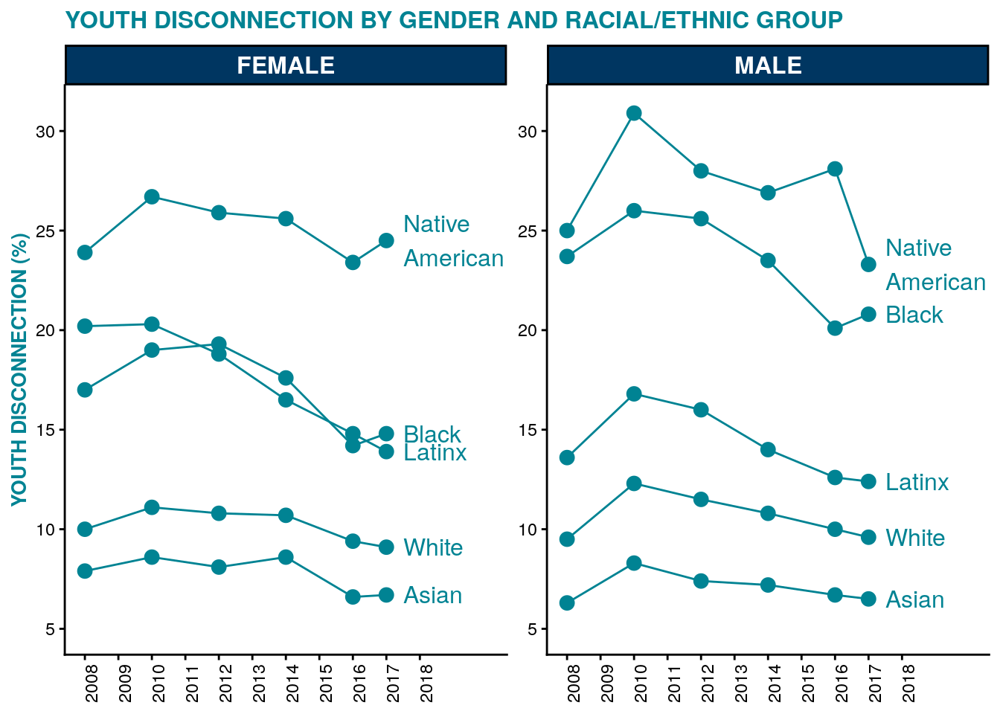</p>
<p>It’s a bit difficult to tell the Black female and Latinx female lines
apart.</p>
<p>Let’s try adding another color for every other line. Again we will
use the <code>scale_color_manual()</code> function to specify the colors
of the lines and points on the plot.</p>
<p>We will use black as the other color. We can use the <a
href="https://en.wikipedia.org/wiki/Web_colors?oldformat=true">hex
triplet</a> code or we can write out the name of the color, in this case
we will write <code>"black"</code>. To specifically color each group
differently, we can write the colors in the alphabetically order of the
distinct values of <code>Race_Ethnicity</code>. Thus the first color
listed will be the color for the <code>Asian</code> values, while the
last will be the color for the <code>White</code> values.</p>
<div class="sourceCode" id="cb203"><pre
class="sourceCode r"><code class="sourceCode r"><span id="cb203-1"><a href="#cb203-1" tabindex="-1"></a>plot_by_gender <span class="ot">&lt;-</span> </span>
<span id="cb203-2"><a href="#cb203-2" tabindex="-1"></a>  plot_by_gender <span class="sc">+</span></span>
<span id="cb203-3"><a href="#cb203-3" tabindex="-1"></a>  <span class="fu">scale_color_manual</span>(<span class="at">values =</span> <span class="fu">c</span>(<span class="st">&quot;#008393&quot;</span>,<span class="st">&quot;black&quot;</span>, </span>
<span id="cb203-4"><a href="#cb203-4" tabindex="-1"></a>                                <span class="st">&quot;#008393&quot;</span>, <span class="st">&quot;#008393&quot;</span>,</span>
<span id="cb203-5"><a href="#cb203-5" tabindex="-1"></a>                                <span class="st">&quot;black&quot;</span>))</span></code></pre></div>
</div>
<div id="section-50" class="section level4 explain_block">
<h4 class="explain_block"></h4>
<p><b><u> Question Opportunity </u></b></p>
<p>Can you explain why we didn’t use a pipe in the previous code
chunk?</p>
</div>
<div id="section-51" class="section level4">
<h4></h4>
<div class="sourceCode" id="cb204"><pre
class="sourceCode r"><code class="sourceCode r"><span id="cb204-1"><a href="#cb204-1" tabindex="-1"></a>plot_by_gender</span></code></pre></div>
<p>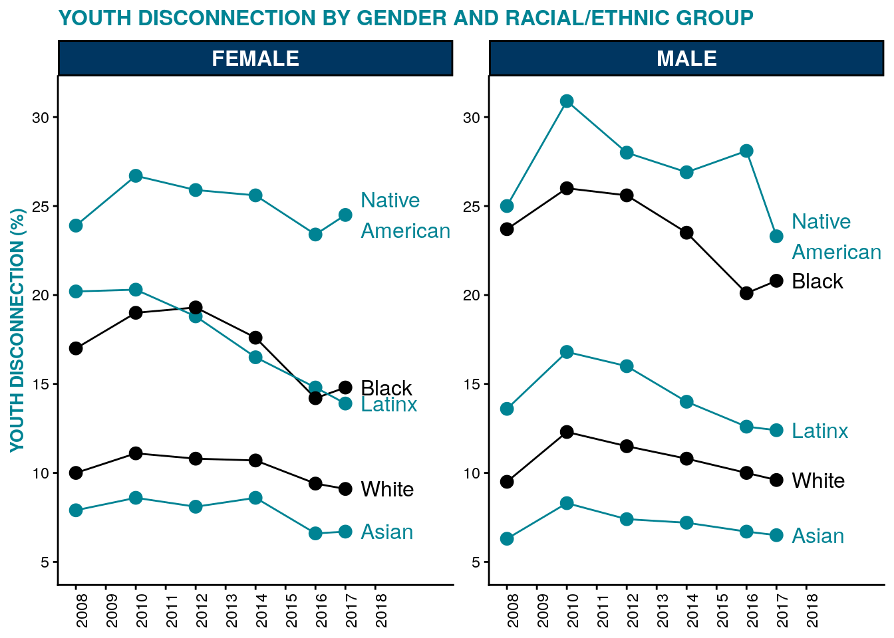</p>
<p>Very interesting! By parsing the groups further into intersections of
racial and ethnic groups with gender, we see that there are some very
striking differences for the Black and Latinx groups when stratified by
<code>Gender</code>. One positive thing that we can see, is that there
has been a steep decline in youth disconnection for Latinx females.
Unfortunately, the level of disconnection for females in 2008 was quite
high, so now Latinx females have similar rates to Latinx males. In
contrast, we see that Black males have had and continue to have much
higher rates of disconnection than Black females. Both Black females and
males show an increased rate since 2016. Native American females also
show an increased rate since 2016.</p>
<p>If you have time, the next section will show how to make bar plots to
look for differences in subgroups for the Asian and Latinx data.
Otherwise, you can skip ahead to the <a
href="#data-analysis"><strong>Data Analysis</strong></a> section.</p>
</div>
</div>
<div id="subgroup-plots" class="section level3">
<h3><strong>Subgroup plots</strong></h3>
<hr />
<p>It is clear from the previous plot that observing more specific
subgroups in our data can be very informative!</p>
<p>Thus, we also want to make plots of the Asian and Latinx subgroups,
to see if there are particular ethnic groups that have higher levels of
youth disconnection. If so, these groups may particularly benefit for
prevention and re-engagement efforts.</p>
<p>We will also attempt to continue to plot the genders separately, as
we have learned that there may be important gender group differences
among the racial and ethnic groups. However, the data is incomplete for
some of the ethnic groups. Recall that we also only have two years of
data for both our Asian and Latinx subgroup data. First we will start by
plotting just the subgroups over the two years.</p>
<p>We can continue to make our plots look like they match the report by
using a color palette based off the color used in the report. We can use
the <code>colorRampPalette()</code> function of the
<code>grDevices</code> package, which is loaded automatically in an
RStudio session. We can specify that we want the colors to range from
gray to the color that we have been using.</p>
<p>Then we just need to specify how many colors we want in our gradient
when we choose to use the color palette. Say we wanted 4 colors, we just
need to type <code>custom_pal(4)</code> to get a list of 4 colors within
the palette. Thus we will have gray, the teal color we have been using,
and two shades in between. After doing this we chose to use one of the
colors in between and to use just two colors for our palette.</p>
<div class="sourceCode" id="cb205"><pre
class="sourceCode r"><code class="sourceCode r"><span id="cb205-1"><a href="#cb205-1" tabindex="-1"></a>custom_pal <span class="ot">&lt;-</span> <span class="fu">colorRampPalette</span>(<span class="fu">c</span>(<span class="st">&quot;gray&quot;</span>, <span class="st">&quot;#008393&quot;</span>))</span>
<span id="cb205-2"><a href="#cb205-2" tabindex="-1"></a>custom_pal <span class="ot">&lt;-</span> <span class="fu">custom_pal</span>(<span class="dv">4</span>)</span>
<span id="cb205-3"><a href="#cb205-3" tabindex="-1"></a>custom_pal</span></code></pre></div>
<pre><code>[1] &quot;#BEBEBE&quot; &quot;#7EAAAF&quot; &quot;#3F96A1&quot; &quot;#008393&quot;</code></pre>
<div class="sourceCode" id="cb207"><pre
class="sourceCode r"><code class="sourceCode r"><span id="cb207-1"><a href="#cb207-1" tabindex="-1"></a>custom_pal <span class="ot">&lt;-</span> <span class="fu">c</span>(<span class="st">&quot;#008393&quot;</span>,<span class="st">&quot;#BEBEBE&quot;</span>)</span></code></pre></div>
<p>Here we can see the <a
href="https://en.wikipedia.org/wiki/Web_colors?oldformat=true">hex
triplet</a> codes for gray and the shade in between.</p>
<p>OK, now let’s start with the Asian subgroups. Since we only have two
time points of data for each group, we will create a bar graph this time
where the two years are displayed next to each other for each year.
Thus, we want the <code>Year</code> variable to be a discrete variable.
To ensure that it is interpreted as a discrete variable, we need to
convert it to be a character type variable rather than numeric using the
base <code>as.character()</code> function.</p>
<p>First, we want to filter for the rows where the <code>Gender</code>
variable values are <code>All</code>, we also do not want to include the
data for the average of all races.</p>
<div class="sourceCode" id="cb208"><pre
class="sourceCode r"><code class="sourceCode r"><span id="cb208-1"><a href="#cb208-1" tabindex="-1"></a>asian_subgroups <span class="sc">%&gt;%</span></span>
<span id="cb208-2"><a href="#cb208-2" tabindex="-1"></a>  <span class="fu">filter</span>(Gender <span class="sc">==</span> <span class="st">&quot;All&quot;</span>) <span class="sc">%&gt;%</span></span>
<span id="cb208-3"><a href="#cb208-3" tabindex="-1"></a>  <span class="fu">filter</span>(Race_Ethnicity <span class="sc">!=</span> <span class="st">&quot;All_races&quot;</span>) <span class="sc">%&gt;%</span></span>
<span id="cb208-4"><a href="#cb208-4" tabindex="-1"></a>  <span class="fu">mutate</span>(<span class="at">Year =</span> <span class="fu">as.character</span>(Year))</span></code></pre></div>
<pre><code># A tibble: 17 × 5
   Group       Percent Race_Ethnicity Gender Year 
   &lt;chr&gt;         &lt;dbl&gt; &lt;chr&gt;          &lt;chr&gt;  &lt;chr&gt;
 1 Asian           6.6 Asian          All    2017 
 2 Chinese         4.3 Chinese        All    2017 
 3 Vietnamese      5.5 Vietnamese     All    2017 
 4 Indian          5.9 Indian         All    2017 
 5 Pakistani       6.4 Pakistani      All    2017 
 6 Korean          6.5 Korean         All    2017 
 7 Two Or More     6.6 Two Or More    All    2017 
 8 Filipino        7.3 Filipino       All    2017 
 9 Hmong          14   Hmong          All    2017 
10 Chinese         4.1 Chinese        All    2018 
11 Indian          5.4 Indian         All    2018 
12 Korean          5.5 Korean         All    2018 
13 Vietnamese      6.3 Vietnamese     All    2018 
14 Filipino        6.8 Filipino       All    2018 
15 Hmong          10.2 Hmong          All    2018 
16 Cambodian      13.8 Cambodian      All    2018 
17 Asian           6.2 Asian          All    2018 </code></pre>
<p>Now that we have wrangled the data we can make our plot. To make a
bar plot there are two main <code>ggplot2</code> functions,
<code>geom_col()</code> and <code>geom_bar()</code>. The
<code>geom_col()</code> function plots the actual values of the data,
while the <code>geom_bar()</code>function plots counts (however you can
override this with the <code>stat = identity</code> argument). We are
interested in plotting the actual values, so we will use the
<code>goem_col()</code> function.</p>
<p>This time we will specify that the <code>Year</code> variable be used
to specify the fill color of the bars of the bar plot by using
<code>aes(fill = Year)</code>.</p>
<p>We also need to indicate how the bars should be plotted based on the
<code>position</code> argument.</p>
<p>The options for the <code>position</code> argument are:</p>
<ul>
<li><code>stack</code> - the years would be displayed on top of one
another (this is default)<br />
</li>
<li><code>dodge</code> - the years would be displayed next to one
another with no space in between<br />
</li>
<li><code>dodge2</code> - the years would be displayed next to one
another with a space in between<br />
</li>
<li><code>fill</code> - the years would be displayed on top of one
other, where the heights of each color would show the relative
proportions for each year adding up to 1, thus each bar would have the
same height</li>
</ul>
<p>We will use the <code>dodge</code> option.</p>
<p>For the colors, we can try out various numbers of shades for the
palette until we get shades that we like. In this case, 2 shades out of
a gradient of 4 shades from gray to teal looks nice,</p>
<div class="sourceCode" id="cb210"><pre
class="sourceCode r"><code class="sourceCode r"><span id="cb210-1"><a href="#cb210-1" tabindex="-1"></a>asian_subgroups <span class="sc">%&gt;%</span></span>
<span id="cb210-2"><a href="#cb210-2" tabindex="-1"></a>  <span class="fu">filter</span>(Gender <span class="sc">==</span> <span class="st">&quot;All&quot;</span>, Race_Ethnicity <span class="sc">!=</span> <span class="st">&quot;All_races&quot;</span>) <span class="sc">%&gt;%</span></span>
<span id="cb210-3"><a href="#cb210-3" tabindex="-1"></a>  <span class="fu">mutate</span>(<span class="at">Year =</span> <span class="fu">as.character</span>(Year)) <span class="sc">%&gt;%</span></span>
<span id="cb210-4"><a href="#cb210-4" tabindex="-1"></a>  <span class="fu">ggplot</span>(<span class="fu">aes</span>(<span class="at">x =</span> Race_Ethnicity, <span class="at">y =</span> Percent)) <span class="sc">+</span></span>
<span id="cb210-5"><a href="#cb210-5" tabindex="-1"></a>    <span class="fu">geom_col</span>(<span class="fu">aes</span>(<span class="at">fill =</span> Year), <span class="at">position =</span> <span class="st">&quot;dodge&quot;</span>)<span class="sc">+</span></span>
<span id="cb210-6"><a href="#cb210-6" tabindex="-1"></a>    <span class="fu">labs</span>(<span class="at">title =</span> <span class="st">&quot;YOUTH DISCONNECTION BY ASIAN SUBGROUP, 2017-2018&quot;</span>,</span>
<span id="cb210-7"><a href="#cb210-7" tabindex="-1"></a>         <span class="at">y =</span> <span class="st">&quot;YOUTH DISCONNECTION (%)&quot;</span>) <span class="sc">+</span></span>
<span id="cb210-8"><a href="#cb210-8" tabindex="-1"></a>    <span class="fu">scale_fill_manual</span>(<span class="at">values =</span> custom_pal) <span class="sc">+</span></span>
<span id="cb210-9"><a href="#cb210-9" tabindex="-1"></a>    <span class="fu">theme_classic</span>() <span class="sc">+</span></span>
<span id="cb210-10"><a href="#cb210-10" tabindex="-1"></a>    <span class="fu">theme</span>(<span class="at">title =</span> <span class="fu">element_text</span>(<span class="at">size =</span> <span class="dv">10</span>, <span class="at">color =</span> <span class="st">&quot;#008393&quot;</span>,</span>
<span id="cb210-11"><a href="#cb210-11" tabindex="-1"></a>                               <span class="at">face =</span> <span class="st">&quot;bold&quot;</span>),</span>
<span id="cb210-12"><a href="#cb210-12" tabindex="-1"></a>          <span class="at">axis.title.x =</span> <span class="fu">element_blank</span>(),</span>
<span id="cb210-13"><a href="#cb210-13" tabindex="-1"></a>          <span class="at">axis.text.x =</span> <span class="fu">element_text</span>(<span class="at">angle =</span> <span class="dv">90</span>, <span class="at">hjust =</span> <span class="dv">1</span>))</span></code></pre></div>
<p>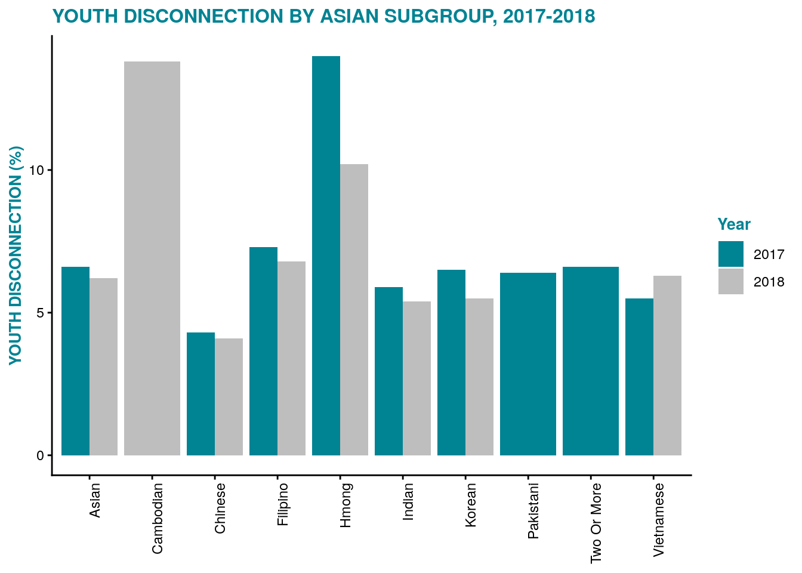</p>
<p>OK, this looks pretty nice! However, we can improve this a bit.</p>
<p>Before we do so, let’s create a theme for our future similar plots
like so:</p>
<div class="sourceCode" id="cb211"><pre
class="sourceCode r"><code class="sourceCode r"><span id="cb211-1"><a href="#cb211-1" tabindex="-1"></a>bar_theme <span class="ot">&lt;-</span> <span class="cf">function</span>() {</span>
<span id="cb211-2"><a href="#cb211-2" tabindex="-1"></a>  <span class="fu">theme_classic</span>() <span class="sc">+</span></span>
<span id="cb211-3"><a href="#cb211-3" tabindex="-1"></a>  <span class="fu">theme</span>(<span class="at">title =</span> <span class="fu">element_text</span>(<span class="at">size =</span> <span class="dv">10</span>,</span>
<span id="cb211-4"><a href="#cb211-4" tabindex="-1"></a>                             <span class="at">color =</span> <span class="st">&quot;#008393&quot;</span>,</span>
<span id="cb211-5"><a href="#cb211-5" tabindex="-1"></a>                             <span class="at">face =</span> <span class="st">&quot;bold&quot;</span>),</span>
<span id="cb211-6"><a href="#cb211-6" tabindex="-1"></a>        <span class="at">axis.title.x =</span> <span class="fu">element_blank</span>(),</span>
<span id="cb211-7"><a href="#cb211-7" tabindex="-1"></a>        <span class="at">axis.text.x =</span> <span class="fu">element_text</span>(<span class="at">angle =</span> <span class="dv">90</span>, <span class="at">hjust =</span> <span class="dv">1</span>))</span>
<span id="cb211-8"><a href="#cb211-8" tabindex="-1"></a>  }</span></code></pre></div>
<p>Now we simply need to type <code>bar_theme()</code> instead to
achieve the same style for our plot.</p>
<p>It would be nice if for subgroups that only have one year of data, if
the column that was displayed was still the same width as the that of
the other groups. To do this we need a row with an <code>NA</code> value
for the year that is missing. One way to accomplish this is to use the
<code>pivot_wider()</code> and <code>pivot_longer()</code> functions to
widen the data based on the <code>Year</code> variable and the collapse
the data based on the <code>Year</code> variable. By widening our data,
we create the <code>NA</code> values we want; however we need to
collapse our data back to the long format so that we can easily use
<code>ggplot2</code> to plot the year as the fill in our bar plot.</p>
<p>Note that we no longer need to change the type of the
<code>Year</code> variable, as it is automatically converted to type
character.</p>
<div class="sourceCode" id="cb212"><pre
class="sourceCode r"><code class="sourceCode r"><span id="cb212-1"><a href="#cb212-1" tabindex="-1"></a>asian_subgroups <span class="sc">%&gt;%</span></span>
<span id="cb212-2"><a href="#cb212-2" tabindex="-1"></a>  <span class="fu">filter</span>(Gender <span class="sc">==</span> <span class="st">&quot;All&quot;</span>, Race_Ethnicity <span class="sc">!=</span> <span class="st">&quot;All_races&quot;</span>) <span class="sc">%&gt;%</span></span>
<span id="cb212-3"><a href="#cb212-3" tabindex="-1"></a>  dplyr<span class="sc">::</span><span class="fu">select</span>(<span class="sc">-</span>Group) <span class="sc">%&gt;%</span></span>
<span id="cb212-4"><a href="#cb212-4" tabindex="-1"></a>  <span class="fu">pivot_wider</span>(<span class="at">names_from =</span> Year, <span class="at">values_from =</span> Percent)</span></code></pre></div>
<pre><code># A tibble: 10 × 4
   Race_Ethnicity Gender `2017` `2018`
   &lt;chr&gt;          &lt;chr&gt;   &lt;dbl&gt;  &lt;dbl&gt;
 1 Asian          All       6.6    6.2
 2 Chinese        All       4.3    4.1
 3 Vietnamese     All       5.5    6.3
 4 Indian         All       5.9    5.4
 5 Pakistani      All       6.4   NA  
 6 Korean         All       6.5    5.5
 7 Two Or More    All       6.6   NA  
 8 Filipino       All       7.3    6.8
 9 Hmong          All      14     10.2
10 Cambodian      All      NA     13.8</code></pre>
<p>Great! Now we have <code>NA</code> values. Now we just to get the
data back into long format:</p>
<div class="sourceCode" id="cb214"><pre
class="sourceCode r"><code class="sourceCode r"><span id="cb214-1"><a href="#cb214-1" tabindex="-1"></a>asian_subgroups <span class="sc">%&gt;%</span></span>
<span id="cb214-2"><a href="#cb214-2" tabindex="-1"></a>  <span class="fu">filter</span>(Gender <span class="sc">==</span> <span class="st">&quot;All&quot;</span>, Race_Ethnicity <span class="sc">!=</span> <span class="st">&quot;All_races&quot;</span>) <span class="sc">%&gt;%</span></span>
<span id="cb214-3"><a href="#cb214-3" tabindex="-1"></a>  dplyr<span class="sc">::</span><span class="fu">select</span>(<span class="sc">-</span>Group) <span class="sc">%&gt;%</span></span>
<span id="cb214-4"><a href="#cb214-4" tabindex="-1"></a>  <span class="fu">pivot_wider</span>(<span class="at">names_from =</span> Year, <span class="at">values_from =</span> Percent) <span class="sc">%&gt;%</span></span>
<span id="cb214-5"><a href="#cb214-5" tabindex="-1"></a>  <span class="fu">pivot_longer</span>(<span class="at">cols =</span> <span class="sc">-</span><span class="fu">c</span>(Race_Ethnicity, Gender), </span>
<span id="cb214-6"><a href="#cb214-6" tabindex="-1"></a>               <span class="at">names_to =</span><span class="st">&quot;Year&quot;</span> , </span>
<span id="cb214-7"><a href="#cb214-7" tabindex="-1"></a>               <span class="at">values_to=</span><span class="st">&quot;Percent&quot;</span>)</span></code></pre></div>
<pre><code># A tibble: 20 × 4
   Race_Ethnicity Gender Year  Percent
   &lt;chr&gt;          &lt;chr&gt;  &lt;chr&gt;   &lt;dbl&gt;
 1 Asian          All    2017      6.6
 2 Asian          All    2018      6.2
 3 Chinese        All    2017      4.3
 4 Chinese        All    2018      4.1
 5 Vietnamese     All    2017      5.5
 6 Vietnamese     All    2018      6.3
 7 Indian         All    2017      5.9
 8 Indian         All    2018      5.4
 9 Pakistani      All    2017      6.4
10 Pakistani      All    2018     NA  
11 Korean         All    2017      6.5
12 Korean         All    2018      5.5
13 Two Or More    All    2017      6.6
14 Two Or More    All    2018     NA  
15 Filipino       All    2017      7.3
16 Filipino       All    2018      6.8
17 Hmong          All    2017     14  
18 Hmong          All    2018     10.2
19 Cambodian      All    2017     NA  
20 Cambodian      All    2018     13.8</code></pre>
<p>Great, now let’s see how this looks in the plot.</p>
<div class="sourceCode" id="cb216"><pre
class="sourceCode r"><code class="sourceCode r"><span id="cb216-1"><a href="#cb216-1" tabindex="-1"></a>asian_subgroups <span class="sc">%&gt;%</span></span>
<span id="cb216-2"><a href="#cb216-2" tabindex="-1"></a>  <span class="fu">filter</span>(Gender <span class="sc">==</span> <span class="st">&quot;All&quot;</span>, Race_Ethnicity <span class="sc">!=</span> <span class="st">&quot;All_races&quot;</span>) <span class="sc">%&gt;%</span></span>
<span id="cb216-3"><a href="#cb216-3" tabindex="-1"></a>  dplyr<span class="sc">::</span><span class="fu">select</span>(<span class="sc">-</span>Group) <span class="sc">%&gt;%</span></span>
<span id="cb216-4"><a href="#cb216-4" tabindex="-1"></a>  <span class="fu">pivot_wider</span>(<span class="at">names_from =</span> Year, <span class="at">values_from =</span> Percent) <span class="sc">%&gt;%</span></span>
<span id="cb216-5"><a href="#cb216-5" tabindex="-1"></a>  <span class="fu">pivot_longer</span>(<span class="at">cols =</span> <span class="sc">-</span><span class="fu">c</span>(Race_Ethnicity, Gender), </span>
<span id="cb216-6"><a href="#cb216-6" tabindex="-1"></a>               <span class="at">names_to =</span><span class="st">&quot;Year&quot;</span> , </span>
<span id="cb216-7"><a href="#cb216-7" tabindex="-1"></a>               <span class="at">values_to=</span><span class="st">&quot;Percent&quot;</span>) <span class="sc">%&gt;%</span></span>
<span id="cb216-8"><a href="#cb216-8" tabindex="-1"></a>  <span class="fu">ggplot</span>(<span class="fu">aes</span>(<span class="at">x =</span> Race_Ethnicity, <span class="at">y =</span> Percent)) <span class="sc">+</span></span>
<span id="cb216-9"><a href="#cb216-9" tabindex="-1"></a>    <span class="fu">geom_col</span>(<span class="fu">aes</span>(<span class="at">fill =</span> Year), <span class="at">position =</span> <span class="st">&quot;dodge&quot;</span>)<span class="sc">+</span></span>
<span id="cb216-10"><a href="#cb216-10" tabindex="-1"></a>    <span class="fu">labs</span>(<span class="at">title =</span> <span class="st">&quot;YOUTH DISCONNECTION BY ASIAN SUBGROUP, 2017-2018&quot;</span>,</span>
<span id="cb216-11"><a href="#cb216-11" tabindex="-1"></a>         <span class="at">y =</span> <span class="st">&quot;YOUTH DISCONNECTION (%)&quot;</span>) <span class="sc">+</span></span>
<span id="cb216-12"><a href="#cb216-12" tabindex="-1"></a>    <span class="fu">scale_fill_manual</span>(<span class="at">values =</span> custom_pal) <span class="sc">+</span></span>
<span id="cb216-13"><a href="#cb216-13" tabindex="-1"></a>    <span class="fu">bar_theme</span>()</span></code></pre></div>
<p>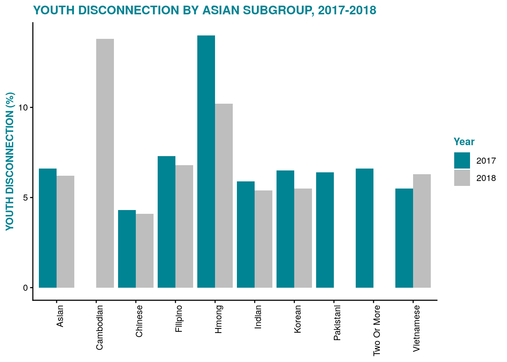</p>
<p>Great! that is looking better! However, currently the subgroups are
plotted on the x-axis by alphabetically order and we want to instead
order the subgroups based on the percentage of youth disconnection. We
can use the <code>forcats</code> package to do this.</p>
<p>The <code>fct_reorder()</code> function can be used to order the
<code>Race_Ethnicity</code> variable based on the average of the
<code>Percent</code> variable for the two years, while the
<code>fct_relevel()</code> function can be used to make the
<code>Asian</code> level appear first for comparison sake. Importantly,
we need to do this before we reshape the data, because subgroups with
<code>NA</code> values will be placed at the end.</p>
<div class="sourceCode" id="cb217"><pre
class="sourceCode r"><code class="sourceCode r"><span id="cb217-1"><a href="#cb217-1" tabindex="-1"></a>asian_subgroups <span class="sc">%&gt;%</span></span>
<span id="cb217-2"><a href="#cb217-2" tabindex="-1"></a>  <span class="fu">filter</span>(Gender <span class="sc">==</span> <span class="st">&quot;All&quot;</span>, Race_Ethnicity <span class="sc">!=</span> <span class="st">&quot;All_races&quot;</span>) <span class="sc">%&gt;%</span></span>
<span id="cb217-3"><a href="#cb217-3" tabindex="-1"></a>  <span class="fu">mutate</span>(<span class="at">Race_Ethnicity =</span> <span class="fu">fct_reorder</span>(Race_Ethnicity, Percent), </span>
<span id="cb217-4"><a href="#cb217-4" tabindex="-1"></a>         <span class="at">Race_Ethnicity =</span> <span class="fu">fct_relevel</span>(Race_Ethnicity, <span class="st">&quot;Asian&quot;</span>)) <span class="sc">%&gt;%</span> </span>
<span id="cb217-5"><a href="#cb217-5" tabindex="-1"></a>  <span class="fu">select</span>(<span class="sc">-</span>Group) <span class="sc">%&gt;%</span></span>
<span id="cb217-6"><a href="#cb217-6" tabindex="-1"></a>  <span class="fu">pivot_wider</span>(<span class="at">names_from =</span> Year, <span class="at">values_from =</span> Percent) <span class="sc">%&gt;%</span></span>
<span id="cb217-7"><a href="#cb217-7" tabindex="-1"></a>  <span class="fu">pivot_longer</span>(<span class="at">cols =</span> <span class="sc">-</span><span class="fu">c</span>(Race_Ethnicity, Gender), </span>
<span id="cb217-8"><a href="#cb217-8" tabindex="-1"></a>               <span class="at">names_to =</span><span class="st">&quot;Year&quot;</span>, <span class="at">values_to=</span><span class="st">&quot;Percent&quot;</span>)<span class="sc">%&gt;%</span></span>
<span id="cb217-9"><a href="#cb217-9" tabindex="-1"></a>  <span class="fu">ggplot</span>(<span class="fu">aes</span>(<span class="at">x =</span> Race_Ethnicity, <span class="at">y =</span> Percent)) <span class="sc">+</span></span>
<span id="cb217-10"><a href="#cb217-10" tabindex="-1"></a>    <span class="fu">geom_col</span>(<span class="fu">aes</span>(<span class="at">fill =</span> Year), <span class="at">position =</span> <span class="st">&quot;dodge&quot;</span>)<span class="sc">+</span></span>
<span id="cb217-11"><a href="#cb217-11" tabindex="-1"></a>    <span class="fu">labs</span>(<span class="at">title =</span> <span class="st">&quot;YOUTH DISCONNECTION BY ASIAN SUBGROUP&quot;</span>,</span>
<span id="cb217-12"><a href="#cb217-12" tabindex="-1"></a>         <span class="at">subtitle =</span> <span class="st">&quot;ORDERED BY AVERAGE DISCONNECTION LEVEL OF 2017 &amp; 2018&quot;</span>,</span>
<span id="cb217-13"><a href="#cb217-13" tabindex="-1"></a>         <span class="at">y =</span> <span class="st">&quot;YOUTH DISCONNECTION (%)&quot;</span>) <span class="sc">+</span></span>
<span id="cb217-14"><a href="#cb217-14" tabindex="-1"></a>    <span class="fu">scale_fill_manual</span>(<span class="at">values =</span> custom_pal) <span class="sc">+</span></span>
<span id="cb217-15"><a href="#cb217-15" tabindex="-1"></a>    <span class="fu">bar_theme</span>()</span></code></pre></div>
<p>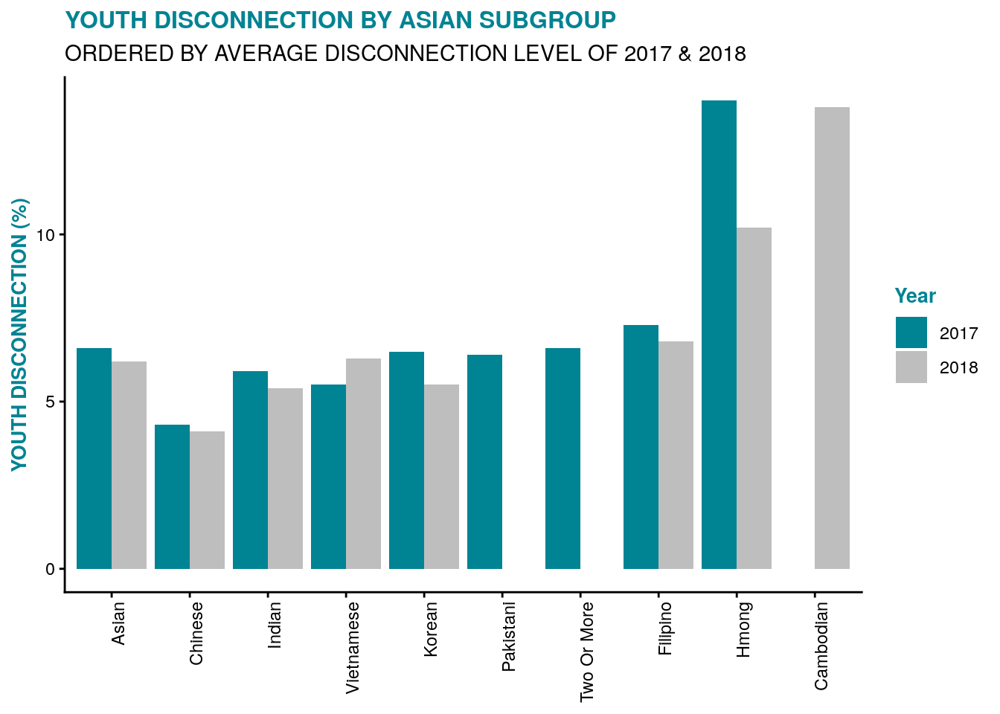
This is looking very good! Now, let’s make a gap between the Asian
average group and the subgroups to more easily differentiate between the
two and let’s use that space to add the figure legend to the plot
itself.</p>
<p>To first make a gap, we can use the <code>scale_x_discrete()</code>
function. We need to write the name of the levels of the
<code>Race_Ethnicity</code> variable and place a blank in between the
<code>Asian</code> level and the subsequent levels. We can use the
<code>levels()</code> function to make this more reproducible and to
avoid mistakes instead of actually writing out each of the levels by
hand.</p>
<p>Here you can see all the levels:</p>
<div class="sourceCode" id="cb218"><pre
class="sourceCode r"><code class="sourceCode r"><span id="cb218-1"><a href="#cb218-1" tabindex="-1"></a>asian_subgroups <span class="sc">%&gt;%</span></span>
<span id="cb218-2"><a href="#cb218-2" tabindex="-1"></a>  dplyr<span class="sc">::</span><span class="fu">select</span>(<span class="sc">-</span>Group) <span class="sc">%&gt;%</span></span>
<span id="cb218-3"><a href="#cb218-3" tabindex="-1"></a>  <span class="fu">filter</span>(Gender <span class="sc">==</span> <span class="st">&quot;All&quot;</span>, Race_Ethnicity <span class="sc">!=</span> <span class="st">&quot;All_races&quot;</span>) <span class="sc">%&gt;%</span></span>
<span id="cb218-4"><a href="#cb218-4" tabindex="-1"></a>  <span class="fu">mutate</span>(<span class="at">Race_Ethnicity =</span>  <span class="fu">fct_reorder</span>(Race_Ethnicity, Percent),</span>
<span id="cb218-5"><a href="#cb218-5" tabindex="-1"></a>         <span class="at">Race_Ethnicity =</span> <span class="fu">fct_relevel</span>(Race_Ethnicity, <span class="st">&quot;Asian&quot;</span>)) <span class="sc">%&gt;%</span></span>
<span id="cb218-6"><a href="#cb218-6" tabindex="-1"></a>  <span class="fu">pivot_wider</span>(<span class="at">names_from =</span> Year, <span class="at">values_from =</span> Percent) <span class="sc">%&gt;%</span></span>
<span id="cb218-7"><a href="#cb218-7" tabindex="-1"></a>  <span class="fu">pivot_longer</span>(<span class="at">cols =</span> <span class="sc">-</span><span class="fu">c</span>(Race_Ethnicity, Gender), </span>
<span id="cb218-8"><a href="#cb218-8" tabindex="-1"></a>               <span class="at">names_to =</span> <span class="st">&quot;Year&quot;</span>, <span class="at">values_to =</span> <span class="st">&quot;Percent&quot;</span>)<span class="sc">%&gt;%</span></span>
<span id="cb218-9"><a href="#cb218-9" tabindex="-1"></a>  <span class="fu">pull</span>(Race_Ethnicity) <span class="sc">%&gt;%</span></span>
<span id="cb218-10"><a href="#cb218-10" tabindex="-1"></a>  <span class="fu">levels</span>()</span></code></pre></div>
<pre><code> [1] &quot;Asian&quot;       &quot;Chinese&quot;     &quot;Indian&quot;      &quot;Vietnamese&quot;  &quot;Korean&quot;     
 [6] &quot;Pakistani&quot;   &quot;Two Or More&quot; &quot;Filipino&quot;    &quot;Hmong&quot;       &quot;Cambodian&quot;  </code></pre>
<p>To simplify our code we will save our wrangled data as a tibble
called <code>df_asian_subgroup</code>.</p>
<p>So we would like our x-axis to be like this:</p>
<div class="sourceCode" id="cb220"><pre
class="sourceCode r"><code class="sourceCode r"><span id="cb220-1"><a href="#cb220-1" tabindex="-1"></a><span class="fu">scale_x_discrete</span>(</span>
<span id="cb220-2"><a href="#cb220-2" tabindex="-1"></a>  <span class="at">limits =</span> <span class="fu">c</span>(<span class="st">&quot;Asian&quot;</span>,</span>
<span id="cb220-3"><a href="#cb220-3" tabindex="-1"></a>             <span class="st">&quot;Blank&quot;</span>,</span>
<span id="cb220-4"><a href="#cb220-4" tabindex="-1"></a>             <span class="st">&quot;NEXT_blank&quot;</span>,</span>
<span id="cb220-5"><a href="#cb220-5" tabindex="-1"></a>             <span class="fu">levels</span>(<span class="fu">pull</span>(df_asian_subgroup, Race_Ethnicity))[<span class="dv">2</span><span class="sc">:</span><span class="dv">10</span>]),</span>
<span id="cb220-6"><a href="#cb220-6" tabindex="-1"></a>  <span class="at">labels =</span> <span class="fu">c</span>(<span class="st">&quot;Blank&quot;</span> <span class="ot">=</span> <span class="st">&quot;&quot;</span>,</span>
<span id="cb220-7"><a href="#cb220-7" tabindex="-1"></a>             <span class="st">&quot;NEXT_blank&quot;</span><span class="ot">=</span> <span class="st">&quot;&quot;</span>))</span></code></pre></div>
<p>The
<code>levels(pull(df_asian_subgroup, Race_Ethnicity))[2:10])</code> code
gets all 9 other levels but the <code>Asian</code> level of the
<code>Race_Ethnicity</code> variable. The <code>labels</code> argument
specifies what the x-axis should say for the spaces in between. We would
like them to say nothing, so we use nothing within quotes
<code>""</code> as the label.</p>
<p>We can also use this as an opportunity to change the label on the
plot for the <code>Asian</code> level of the <code>Race_Ethnicity</code>
variable to be <code>"Asian avg."</code>. We don’t want to change the
other subgroup level labels so we will not list anything.</p>
<p>We can make this more reproducible by using the <code>length()</code>
function instead of the number 10 and replacing <code>Asian</code> with
the first level:</p>
<div class="sourceCode" id="cb221"><pre
class="sourceCode r"><code class="sourceCode r"><span id="cb221-1"><a href="#cb221-1" tabindex="-1"></a><span class="fu">scale_x_discrete</span>(</span>
<span id="cb221-2"><a href="#cb221-2" tabindex="-1"></a>  <span class="at">limits =</span> <span class="fu">c</span>(<span class="fu">levels</span>(<span class="fu">pull</span>(df_asian_subgroup, Race_Ethnicity))[<span class="dv">1</span>],</span>
<span id="cb221-3"><a href="#cb221-3" tabindex="-1"></a>             <span class="st">&quot;Blank&quot;</span>,</span>
<span id="cb221-4"><a href="#cb221-4" tabindex="-1"></a>             <span class="st">&quot;NEXT_blank&quot;</span>,</span>
<span id="cb221-5"><a href="#cb221-5" tabindex="-1"></a>             <span class="fu">levels</span>(<span class="fu">pull</span>(df_asian_subgroup, Race_Ethnicity))[<span class="dv">2</span><span class="sc">:</span></span>
<span id="cb221-6"><a href="#cb221-6" tabindex="-1"></a>             <span class="fu">length</span>(<span class="fu">levels</span>(<span class="fu">pull</span>(df_asian_subgroup, Race_Ethnicity)))]),</span>
<span id="cb221-7"><a href="#cb221-7" tabindex="-1"></a>  <span class="at">labels =</span> <span class="fu">c</span>(<span class="st">&quot;Asian&quot;</span> <span class="ot">=</span> <span class="st">&quot;Asian Avg.&quot;</span>,</span>
<span id="cb221-8"><a href="#cb221-8" tabindex="-1"></a>             <span class="st">&quot;Blank&quot;</span> <span class="ot">=</span> <span class="st">&quot;&quot;</span>,</span>
<span id="cb221-9"><a href="#cb221-9" tabindex="-1"></a>             <span class="st">&quot;NEXT_blank&quot;</span><span class="ot">=</span> <span class="st">&quot;&quot;</span>))</span></code></pre></div>
<p>Then we can use <code>legend.justification</code> and
<code>legend.position</code> of the <code>theme()</code> function to
move our legend to the plot area.</p>
<p>According to the documentation for the <code>theme()</code> function
of the <code>ggplot2</code> package, the
<code>legend.justification</code> argument specifies the:</p>
<blockquote>
<p>anchor point for positioning legend inside plot (“center” or
two-element numeric vector) or the justification according to the plot
area when positioned outside the plot</p>
</blockquote>
<p>By setting the mapping for the positioning and justification as
<code>c(0.12,0.1)</code> we specify that we want the legend to be 12
percent of the plot area from the y-axis and 10 percent of the plot area
from the x-axis.</p>
<div class="sourceCode" id="cb222"><pre
class="sourceCode r"><code class="sourceCode r"><span id="cb222-1"><a href="#cb222-1" tabindex="-1"></a>df_asian_subgroup <span class="ot">&lt;-</span></span>
<span id="cb222-2"><a href="#cb222-2" tabindex="-1"></a>  asian_subgroups <span class="sc">%&gt;%</span></span>
<span id="cb222-3"><a href="#cb222-3" tabindex="-1"></a>  dplyr<span class="sc">::</span><span class="fu">select</span>(<span class="sc">-</span>Group) <span class="sc">%&gt;%</span></span>
<span id="cb222-4"><a href="#cb222-4" tabindex="-1"></a>  <span class="fu">filter</span>(Gender <span class="sc">==</span> <span class="st">&quot;All&quot;</span>, </span>
<span id="cb222-5"><a href="#cb222-5" tabindex="-1"></a>         Race_Ethnicity <span class="sc">!=</span> <span class="st">&quot;All_races&quot;</span>) <span class="sc">%&gt;%</span></span>
<span id="cb222-6"><a href="#cb222-6" tabindex="-1"></a>  <span class="fu">mutate</span>(<span class="at">Race_Ethnicity =</span>  <span class="fu">fct_reorder</span>(Race_Ethnicity, Percent), </span>
<span id="cb222-7"><a href="#cb222-7" tabindex="-1"></a>         <span class="at">Race_Ethnicity =</span> <span class="fu">fct_relevel</span>(Race_Ethnicity, <span class="st">&quot;Asian&quot;</span>)) <span class="sc">%&gt;%</span></span>
<span id="cb222-8"><a href="#cb222-8" tabindex="-1"></a>  <span class="fu">pivot_wider</span>(<span class="at">names_from =</span> Year, <span class="at">values_from =</span> Percent) <span class="sc">%&gt;%</span></span>
<span id="cb222-9"><a href="#cb222-9" tabindex="-1"></a>  <span class="fu">pivot_longer</span>(<span class="at">cols =</span> <span class="sc">-</span><span class="fu">c</span>(Race_Ethnicity, Gender), </span>
<span id="cb222-10"><a href="#cb222-10" tabindex="-1"></a>               <span class="at">names_to =</span> <span class="st">&quot;Year&quot;</span>, <span class="at">values_to =</span> <span class="st">&quot;Percent&quot;</span>)</span>
<span id="cb222-11"><a href="#cb222-11" tabindex="-1"></a></span>
<span id="cb222-12"><a href="#cb222-12" tabindex="-1"></a>asian_subgroup_plot <span class="ot">&lt;-</span></span>
<span id="cb222-13"><a href="#cb222-13" tabindex="-1"></a>  df_asian_subgroup <span class="sc">%&gt;%</span></span>
<span id="cb222-14"><a href="#cb222-14" tabindex="-1"></a>  <span class="fu">ggplot</span>(<span class="fu">aes</span>(<span class="at">x =</span> Race_Ethnicity, <span class="at">y =</span> Percent, <span class="at">fill =</span> Year)) <span class="sc">+</span></span>
<span id="cb222-15"><a href="#cb222-15" tabindex="-1"></a>    <span class="fu">geom_col</span>(<span class="fu">aes</span>(<span class="at">fill =</span> Year), <span class="at">position =</span> <span class="st">&quot;dodge&quot;</span>)<span class="sc">+</span></span>
<span id="cb222-16"><a href="#cb222-16" tabindex="-1"></a>    <span class="fu">labs</span>(<span class="at">title =</span> <span class="st">&quot;YOUTH DISCONNECTION BY ASIAN SUBGROUP&quot;</span>,</span>
<span id="cb222-17"><a href="#cb222-17" tabindex="-1"></a>         <span class="at">subtitle =</span> <span class="st">&quot;ORDERED BY AVERAGE DISCONNECTION LEVEL OF 2017 &amp; 2018&quot;</span>,</span>
<span id="cb222-18"><a href="#cb222-18" tabindex="-1"></a>         <span class="at">y =</span> <span class="st">&quot;YOUTH DISCONNECTION (%)&quot;</span>) <span class="sc">+</span></span>
<span id="cb222-19"><a href="#cb222-19" tabindex="-1"></a>  <span class="fu">scale_fill_manual</span>(<span class="at">values =</span> custom_pal) <span class="sc">+</span></span>
<span id="cb222-20"><a href="#cb222-20" tabindex="-1"></a>  <span class="fu">scale_x_discrete</span>(</span>
<span id="cb222-21"><a href="#cb222-21" tabindex="-1"></a>    <span class="at">limits =</span> <span class="fu">c</span>(<span class="fu">levels</span>(<span class="fu">pull</span>(df_asian_subgroup,Race_Ethnicity))[<span class="dv">1</span>],</span>
<span id="cb222-22"><a href="#cb222-22" tabindex="-1"></a>             <span class="st">&quot;Blank&quot;</span>,</span>
<span id="cb222-23"><a href="#cb222-23" tabindex="-1"></a>             <span class="st">&quot;NEXT_blank&quot;</span>,</span>
<span id="cb222-24"><a href="#cb222-24" tabindex="-1"></a>             <span class="fu">levels</span>(<span class="fu">pull</span>(df_asian_subgroup,Race_Ethnicity))[<span class="dv">2</span><span class="sc">:</span></span>
<span id="cb222-25"><a href="#cb222-25" tabindex="-1"></a>             <span class="fu">length</span>(<span class="fu">levels</span>(<span class="fu">pull</span>(df_asian_subgroup,Race_Ethnicity)))]),</span>
<span id="cb222-26"><a href="#cb222-26" tabindex="-1"></a>    <span class="at">labels =</span> <span class="fu">c</span>(<span class="st">&quot;Asian&quot;</span> <span class="ot">=</span> <span class="st">&quot;Asian Avg.&quot;</span>, <span class="st">&quot;Blank&quot;</span> <span class="ot">=</span> <span class="st">&quot;&quot;</span>, <span class="st">&quot;NEXT_blank&quot;</span><span class="ot">=</span> <span class="st">&quot;&quot;</span>)) <span class="sc">+</span></span>
<span id="cb222-27"><a href="#cb222-27" tabindex="-1"></a>  <span class="fu">scale_y_continuous</span>(<span class="at">limits =</span> <span class="fu">c</span>(<span class="dv">0</span>,<span class="fu">max</span>(<span class="fu">pull</span>(asian_subgroups,Percent), </span>
<span id="cb222-28"><a href="#cb222-28" tabindex="-1"></a>                                       <span class="at">na.rm =</span> <span class="cn">TRUE</span>)))<span class="sc">+</span></span>
<span id="cb222-29"><a href="#cb222-29" tabindex="-1"></a>  <span class="fu">bar_theme</span>() <span class="sc">+</span></span>
<span id="cb222-30"><a href="#cb222-30" tabindex="-1"></a>  <span class="co"># this add the legend to the plot area!:</span></span>
<span id="cb222-31"><a href="#cb222-31" tabindex="-1"></a>        <span class="fu">theme</span>(<span class="at">legend.justification =</span> <span class="fu">c</span>(<span class="fl">0.12</span>,<span class="fl">0.1</span>),</span>
<span id="cb222-32"><a href="#cb222-32" tabindex="-1"></a>              <span class="at">legend.position =</span> <span class="fu">c</span>(<span class="fl">0.12</span>,.<span class="dv">1</span>))</span>
<span id="cb222-33"><a href="#cb222-33" tabindex="-1"></a></span>
<span id="cb222-34"><a href="#cb222-34" tabindex="-1"></a>asian_subgroup_plot</span></code></pre></div>
<p>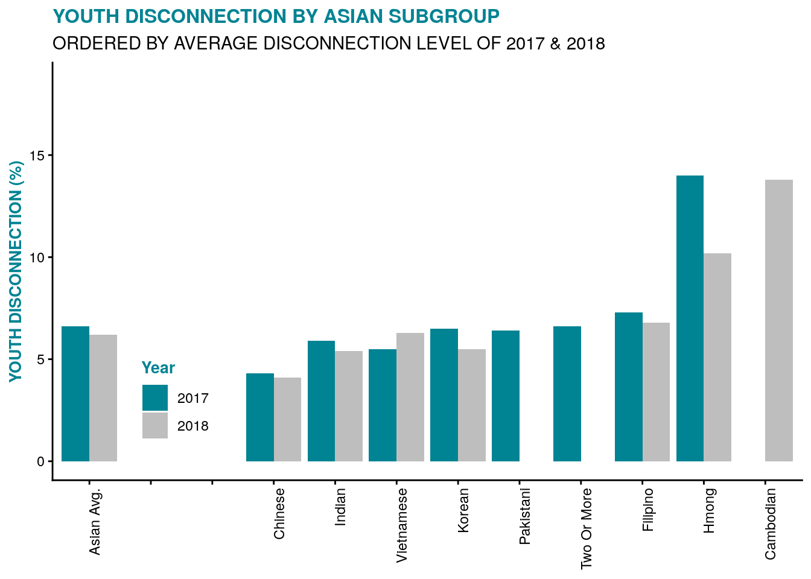</p>
<p>Nice! But, this is still missing something. Perhaps if we add lines
that show the average disconnection rate for the US and for Asians in
general, then it will make it easier to see differences in our plot.</p>
<p>In the previous code we saved our plot to a object called
<code>asian_subgroup_plot</code>.</p>
<p>We can modify it by adding layers to add the lines that we want.</p>
<p>First, we want to create tibbles for the US Asian average
disconnection rates. We want to add labels to each of these. We can use
the <code>parse = TRUE</code> argument later with the
<code>geom_text()</code> function of the <code>ggplot2</code> package to
make these labels appear as bold font as it will be evaluated as an
expression instead of a simple character string.</p>
<div class="sourceCode" id="cb223"><pre
class="sourceCode r"><code class="sourceCode r"><span id="cb223-1"><a href="#cb223-1" tabindex="-1"></a>df_asian_total <span class="ot">&lt;-</span> </span>
<span id="cb223-2"><a href="#cb223-2" tabindex="-1"></a>  asian_subgroups <span class="sc">%&gt;%</span></span>
<span id="cb223-3"><a href="#cb223-3" tabindex="-1"></a>  <span class="fu">filter</span>(Year <span class="sc">==</span> <span class="dv">2017</span>, Gender <span class="sc">==</span> <span class="st">&quot;All&quot;</span>, Race_Ethnicity <span class="sc">==</span> <span class="st">&quot;Asian&quot;</span>) <span class="sc">%&gt;%</span></span>
<span id="cb223-4"><a href="#cb223-4" tabindex="-1"></a>  <span class="fu">mutate</span>(<span class="at">Year =</span> <span class="fu">as.character</span>(Year), </span>
<span id="cb223-5"><a href="#cb223-5" tabindex="-1"></a>         <span class="at">label =</span> <span class="fu">c</span>(<span class="st">&#39;bold(&quot;ASIAN 2017 AVG RATE&quot;)&#39;</span>))</span>
<span id="cb223-6"><a href="#cb223-6" tabindex="-1"></a></span>
<span id="cb223-7"><a href="#cb223-7" tabindex="-1"></a>df_US_total <span class="ot">&lt;-</span> </span>
<span id="cb223-8"><a href="#cb223-8" tabindex="-1"></a>  asian_subgroups <span class="sc">%&gt;%</span></span>
<span id="cb223-9"><a href="#cb223-9" tabindex="-1"></a>  <span class="fu">filter</span>(Year <span class="sc">==</span> <span class="dv">2017</span>, Gender <span class="sc">==</span> <span class="st">&quot;All&quot;</span>, Race_Ethnicity <span class="sc">==</span> <span class="st">&quot;All_races&quot;</span>) <span class="sc">%&gt;%</span></span>
<span id="cb223-10"><a href="#cb223-10" tabindex="-1"></a>  <span class="fu">mutate</span>(<span class="at">Year =</span> <span class="fu">as.character</span>(Year), <span class="at">label =</span> <span class="fu">c</span>(<span class="st">&#39;bold(&quot;US 2017 AVG RATE&quot;)&#39;</span>))</span>
<span id="cb223-11"><a href="#cb223-11" tabindex="-1"></a></span>
<span id="cb223-12"><a href="#cb223-12" tabindex="-1"></a>df_asian_total</span></code></pre></div>
<pre><code># A tibble: 1 × 6
  Group Percent Race_Ethnicity Gender Year  label                          
  &lt;chr&gt;   &lt;dbl&gt; &lt;chr&gt;          &lt;chr&gt;  &lt;chr&gt; &lt;chr&gt;                          
1 Asian     6.6 Asian          All    2017  &quot;bold(\&quot;ASIAN 2017 AVG RATE\&quot;)&quot;</code></pre>
<div class="sourceCode" id="cb225"><pre
class="sourceCode r"><code class="sourceCode r"><span id="cb225-1"><a href="#cb225-1" tabindex="-1"></a>df_US_total</span></code></pre></div>
<pre><code># A tibble: 1 × 6
  Group         Percent Race_Ethnicity Gender Year  label                       
  &lt;chr&gt;           &lt;dbl&gt; &lt;chr&gt;          &lt;chr&gt;  &lt;chr&gt; &lt;chr&gt;                       
1 United States    11.5 All_races      All    2017  &quot;bold(\&quot;US 2017 AVG RATE\&quot;)&quot;</code></pre>
<p>Now we can use these to create labels again with the
<code>geom_text()</code> function and lines with the
<code>geom_hline()</code> function on our plot.</p>
<p>The <code>geom_text()</code> function requires that the x and y axis
location for the text be specified, and we want this to be located near
the actual percent disconnection rate, thus we use the
<code>Percent +.5</code> to grab the <code>Percent</code> value from
<code>df_asian_total</code> and add 0.5 to it to be slightly above where
the line will be.</p>
<p>The <code>geom_hline()</code> function requires, just the y intercept
as this function always creates a horizontal line. The
<code>linetype</code> argument specifies what style of line we would
like. See <a
href="http://sape.inf.usi.ch/quick-reference/ggplot2/linetype">here</a>
for a list of options.</p>
<div class="sourceCode" id="cb227"><pre
class="sourceCode r"><code class="sourceCode r"><span id="cb227-1"><a href="#cb227-1" tabindex="-1"></a>asian_subgroup_plot <span class="ot">&lt;-</span> </span>
<span id="cb227-2"><a href="#cb227-2" tabindex="-1"></a>  asian_subgroup_plot <span class="sc">+</span> </span>
<span id="cb227-3"><a href="#cb227-3" tabindex="-1"></a>  <span class="fu">geom_text</span>(<span class="at">data =</span> df_asian_total, </span>
<span id="cb227-4"><a href="#cb227-4" tabindex="-1"></a>            <span class="at">mapping =</span> <span class="fu">aes</span>(<span class="at">x =</span> <span class="fl">2.5</span>, <span class="at">y =</span> Percent <span class="sc">+</span>.<span class="dv">7</span>, <span class="at">label =</span> label),</span>
<span id="cb227-5"><a href="#cb227-5" tabindex="-1"></a>            <span class="at">parse =</span> <span class="cn">TRUE</span>,</span>
<span id="cb227-6"><a href="#cb227-6" tabindex="-1"></a>            <span class="at">color =</span> <span class="st">&quot;#008393&quot;</span>, </span>
<span id="cb227-7"><a href="#cb227-7" tabindex="-1"></a>            <span class="at">size =</span> <span class="dv">4</span>) <span class="sc">+</span></span>
<span id="cb227-8"><a href="#cb227-8" tabindex="-1"></a>  <span class="fu">geom_hline</span>(<span class="fu">aes</span>(<span class="at">yintercept =</span> <span class="fu">pull</span>(df_asian_total, Percent)), <span class="at">linetype =</span> <span class="dv">2</span>) <span class="sc">+</span></span>
<span id="cb227-9"><a href="#cb227-9" tabindex="-1"></a>  <span class="fu">geom_text</span>(<span class="at">data =</span> df_US_total,</span>
<span id="cb227-10"><a href="#cb227-10" tabindex="-1"></a>            <span class="at">mapping =</span> <span class="fu">aes</span>(<span class="at">x =</span> <span class="fl">2.5</span>, <span class="at">y =</span> Percent <span class="sc">+</span>.<span class="dv">7</span>, <span class="at">label =</span> label),</span>
<span id="cb227-11"><a href="#cb227-11" tabindex="-1"></a>            <span class="at">parse =</span> <span class="cn">TRUE</span>,</span>
<span id="cb227-12"><a href="#cb227-12" tabindex="-1"></a>            <span class="at">color =</span> <span class="st">&quot;#008393&quot;</span>, </span>
<span id="cb227-13"><a href="#cb227-13" tabindex="-1"></a>            <span class="at">size =</span> <span class="dv">4</span>) <span class="sc">+</span></span>
<span id="cb227-14"><a href="#cb227-14" tabindex="-1"></a>  <span class="fu">geom_hline</span>(<span class="fu">aes</span>(<span class="at">yintercept =</span> <span class="fu">pull</span>(df_US_total, Percent)), <span class="at">linetype =</span> <span class="dv">3</span>)</span>
<span id="cb227-15"><a href="#cb227-15" tabindex="-1"></a></span>
<span id="cb227-16"><a href="#cb227-16" tabindex="-1"></a>asian_subgroup_plot</span></code></pre></div>
<p>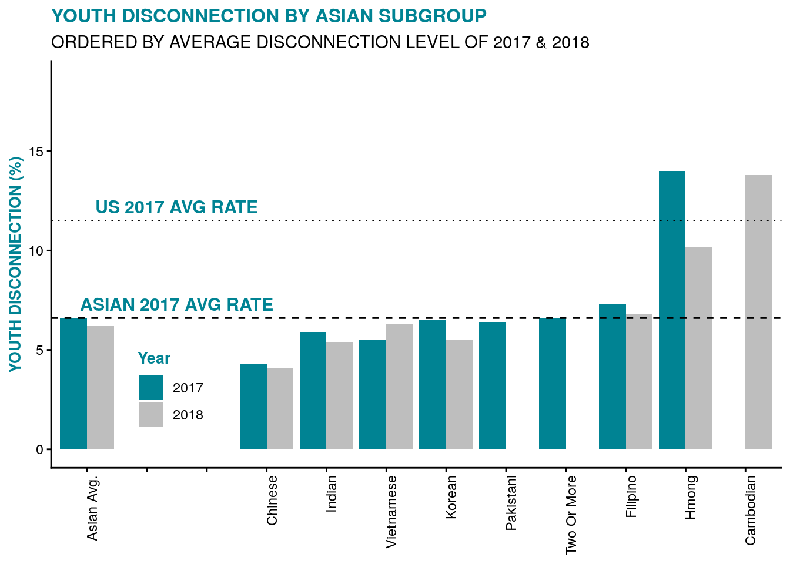</p>
<p>Awesome! Now it is much easier to tell how the disconnection rates
for various subgroups compare to the national average and the Asian
average. From our plot, we can see that the <a
href="https://en.wikipedia.org/wiki/Hmong_people">Hmong</a> and
Cambodian subgroup rates are very high. If we only had the plot of major
racial and ethnic groups to rely on, we might not realize that these two
groups have such high rates.</p>
<p>Nice! This shows the importance of adding small details such as the
US and Asian rate lines. This helps provide a simple yet nuanced picture
of what is going on.</p>
<p>From the above plot, it becomes readily apparent that the Hmong and
Cambodian subgroups have much higher disconnection rates than the other
Asian subgroups, as well as all races / ethnicities in the US
combined.</p>
<p>If we wanted to make a similar plot but without the subgroups that
are missing a year we could do it like so, by adding the
<code>drop_na()</code> function of the <code>tidyr</code> package to
remove rows with <code>NA</code> values when the data is in wide form
and then using the <code>fct_drop()</code> function of the
<code>forcats</code> package to remove the levels of the
<code>Race_Ethnicity</code> variable that no longer have rows in the
data.</p>
<details>
<summary>
Click here to reveal the code.
</summary>
<div class="sourceCode" id="cb228"><pre
class="sourceCode r"><code class="sourceCode r"><span id="cb228-1"><a href="#cb228-1" tabindex="-1"></a>df_asian_subgroup <span class="ot">&lt;-</span></span>
<span id="cb228-2"><a href="#cb228-2" tabindex="-1"></a>  asian_subgroups <span class="sc">%&gt;%</span></span>
<span id="cb228-3"><a href="#cb228-3" tabindex="-1"></a>  dplyr<span class="sc">::</span><span class="fu">select</span>(<span class="sc">-</span>Group) <span class="sc">%&gt;%</span></span>
<span id="cb228-4"><a href="#cb228-4" tabindex="-1"></a>  <span class="fu">filter</span>(Gender <span class="sc">==</span> <span class="st">&quot;All&quot;</span>, Race_Ethnicity <span class="sc">!=</span> <span class="st">&quot;All_races&quot;</span>) <span class="sc">%&gt;%</span></span>
<span id="cb228-5"><a href="#cb228-5" tabindex="-1"></a>  <span class="fu">mutate</span>(<span class="at">Race_Ethnicity =</span>  <span class="fu">fct_reorder</span>(Race_Ethnicity, Percent), </span>
<span id="cb228-6"><a href="#cb228-6" tabindex="-1"></a>         <span class="at">Race_Ethnicity =</span> <span class="fu">fct_relevel</span>(Race_Ethnicity, <span class="st">&quot;Asian&quot;</span>)) <span class="sc">%&gt;%</span></span>
<span id="cb228-7"><a href="#cb228-7" tabindex="-1"></a>  <span class="fu">pivot_wider</span>(<span class="at">names_from =</span> Year, <span class="at">values_from =</span> Percent) <span class="sc">%&gt;%</span></span>
<span id="cb228-8"><a href="#cb228-8" tabindex="-1"></a>  tidyr<span class="sc">::</span><span class="fu">drop_na</span>() <span class="sc">%&gt;%</span></span>
<span id="cb228-9"><a href="#cb228-9" tabindex="-1"></a>  <span class="fu">pivot_longer</span>(<span class="at">cols =</span> <span class="sc">-</span><span class="fu">c</span>(Race_Ethnicity, Gender), </span>
<span id="cb228-10"><a href="#cb228-10" tabindex="-1"></a>               <span class="at">names_to =</span> <span class="st">&quot;Year&quot;</span>, <span class="at">values_to =</span> <span class="st">&quot;Percent&quot;</span>) <span class="sc">%&gt;%</span></span>
<span id="cb228-11"><a href="#cb228-11" tabindex="-1"></a>  <span class="fu">mutate</span>(<span class="at">Race_Ethnicity =</span> <span class="fu">fct_drop</span>(Race_Ethnicity))</span>
<span id="cb228-12"><a href="#cb228-12" tabindex="-1"></a></span>
<span id="cb228-13"><a href="#cb228-13" tabindex="-1"></a>asian_subgroup_plot_simp <span class="ot">&lt;-</span></span>
<span id="cb228-14"><a href="#cb228-14" tabindex="-1"></a>  df_asian_subgroup <span class="sc">%&gt;%</span></span>
<span id="cb228-15"><a href="#cb228-15" tabindex="-1"></a>  <span class="fu">ggplot</span>(<span class="fu">aes</span>(<span class="at">x =</span> Race_Ethnicity, <span class="at">y =</span> Percent, <span class="at">fill =</span> Year)) <span class="sc">+</span></span>
<span id="cb228-16"><a href="#cb228-16" tabindex="-1"></a>    <span class="fu">geom_col</span>(<span class="fu">aes</span>(<span class="at">fill =</span> Year), <span class="at">position =</span> <span class="st">&quot;dodge&quot;</span>)<span class="sc">+</span></span>
<span id="cb228-17"><a href="#cb228-17" tabindex="-1"></a>    <span class="fu">labs</span>(<span class="at">title =</span> <span class="st">&quot;YOUTH DISCONNECTION BY ASIAN SUBGROUP&quot;</span>,</span>
<span id="cb228-18"><a href="#cb228-18" tabindex="-1"></a>         <span class="at">subtitle =</span> <span class="st">&quot;ORDERED BY AVERAGE DISCONNECTION LEVEL OF 2017 &amp; 2018&quot;</span>,</span>
<span id="cb228-19"><a href="#cb228-19" tabindex="-1"></a>         <span class="at">y =</span> <span class="st">&quot;YOUTH DISCONNECTION (%)&quot;</span>) <span class="sc">+</span></span>
<span id="cb228-20"><a href="#cb228-20" tabindex="-1"></a>    <span class="fu">scale_fill_manual</span>(<span class="at">values =</span> custom_pal) <span class="sc">+</span></span>
<span id="cb228-21"><a href="#cb228-21" tabindex="-1"></a>    <span class="fu">scale_x_discrete</span>(</span>
<span id="cb228-22"><a href="#cb228-22" tabindex="-1"></a>    <span class="at">limits =</span> <span class="fu">c</span>(<span class="fu">levels</span>(<span class="fu">pull</span>(df_asian_subgroup,Race_Ethnicity))[<span class="dv">1</span>],</span>
<span id="cb228-23"><a href="#cb228-23" tabindex="-1"></a>               <span class="st">&quot;Blank&quot;</span>,</span>
<span id="cb228-24"><a href="#cb228-24" tabindex="-1"></a>               <span class="st">&quot;NEXT_blank&quot;</span>,</span>
<span id="cb228-25"><a href="#cb228-25" tabindex="-1"></a>               <span class="fu">levels</span>(<span class="fu">pull</span>(df_asian_subgroup,Race_Ethnicity))[<span class="dv">2</span><span class="sc">:</span></span>
<span id="cb228-26"><a href="#cb228-26" tabindex="-1"></a>               <span class="fu">length</span>(<span class="fu">levels</span>(<span class="fu">pull</span>(df_asian_subgroup,Race_Ethnicity)))]),</span>
<span id="cb228-27"><a href="#cb228-27" tabindex="-1"></a>    <span class="at">labels =</span> <span class="fu">c</span>(<span class="st">&quot;Asian&quot;</span> <span class="ot">=</span> <span class="st">&quot;Asian Avg.&quot;</span>,</span>
<span id="cb228-28"><a href="#cb228-28" tabindex="-1"></a>               <span class="st">&quot;Blank&quot;</span> <span class="ot">=</span> <span class="st">&quot;&quot;</span>,</span>
<span id="cb228-29"><a href="#cb228-29" tabindex="-1"></a>               <span class="st">&quot;NEXT_blank&quot;</span><span class="ot">=</span> <span class="st">&quot;&quot;</span>))<span class="sc">+</span></span>
<span id="cb228-30"><a href="#cb228-30" tabindex="-1"></a>    <span class="fu">scale_y_continuous</span>(<span class="at">limits =</span> <span class="fu">c</span>(<span class="dv">0</span>,<span class="fu">max</span>(<span class="fu">pull</span>(asian_subgroups,Percent), </span>
<span id="cb228-31"><a href="#cb228-31" tabindex="-1"></a>                                        <span class="at">na.rm =</span> <span class="cn">TRUE</span>)))<span class="sc">+</span></span>
<span id="cb228-32"><a href="#cb228-32" tabindex="-1"></a>    <span class="fu">bar_theme</span>() <span class="sc">+</span></span>
<span id="cb228-33"><a href="#cb228-33" tabindex="-1"></a>    <span class="co">#this add the legend to the plot area!:</span></span>
<span id="cb228-34"><a href="#cb228-34" tabindex="-1"></a>    <span class="fu">theme</span>(<span class="at">legend.justification =</span> <span class="fu">c</span>(<span class="fl">0.16</span>,<span class="fl">0.01</span>),<span class="at">legend.position =</span> <span class="fu">c</span>(<span class="fl">0.16</span>,.<span class="dv">01</span>)) <span class="sc">+</span></span>
<span id="cb228-35"><a href="#cb228-35" tabindex="-1"></a>    <span class="fu">geom_text</span>(<span class="at">data =</span> df_asian_total,</span>
<span id="cb228-36"><a href="#cb228-36" tabindex="-1"></a>              <span class="at">mapping =</span> <span class="fu">aes</span>(<span class="at">x =</span> <span class="fl">2.5</span>, <span class="at">y =</span> Percent <span class="sc">+</span>.<span class="dv">7</span>, <span class="at">label =</span> label),</span>
<span id="cb228-37"><a href="#cb228-37" tabindex="-1"></a>              <span class="at">parse =</span> <span class="cn">TRUE</span>, <span class="at">color =</span> <span class="st">&quot;#008393&quot;</span>, <span class="at">size =</span> <span class="dv">4</span>) <span class="sc">+</span></span>
<span id="cb228-38"><a href="#cb228-38" tabindex="-1"></a>    <span class="fu">geom_hline</span>(<span class="fu">aes</span>(<span class="at">yintercept =</span> <span class="fu">pull</span>(df_asian_total, Percent)), <span class="at">linetype =</span> <span class="dv">2</span>) <span class="sc">+</span></span>
<span id="cb228-39"><a href="#cb228-39" tabindex="-1"></a>    <span class="fu">geom_text</span>(<span class="at">data =</span> df_US_total,</span>
<span id="cb228-40"><a href="#cb228-40" tabindex="-1"></a>              <span class="at">mapping =</span> <span class="fu">aes</span>(<span class="at">x =</span> <span class="fl">2.5</span>, <span class="at">y =</span> Percent <span class="sc">+</span>.<span class="dv">7</span>, <span class="at">label =</span> label),</span>
<span id="cb228-41"><a href="#cb228-41" tabindex="-1"></a>              <span class="at">parse =</span> <span class="cn">TRUE</span>, <span class="at">color =</span> <span class="st">&quot;#008393&quot;</span>, <span class="at">size =</span> <span class="dv">4</span>) <span class="sc">+</span></span>
<span id="cb228-42"><a href="#cb228-42" tabindex="-1"></a>    <span class="fu">geom_hline</span>(<span class="fu">aes</span>(<span class="at">yintercept =</span> <span class="fu">pull</span>(df_US_total, Percent)), <span class="at">linetype =</span> <span class="dv">3</span>)</span></code></pre></div>
</details>
<div class="sourceCode" id="cb229"><pre
class="sourceCode r"><code class="sourceCode r"><span id="cb229-1"><a href="#cb229-1" tabindex="-1"></a>asian_subgroup_plot_simp</span></code></pre></div>
<p>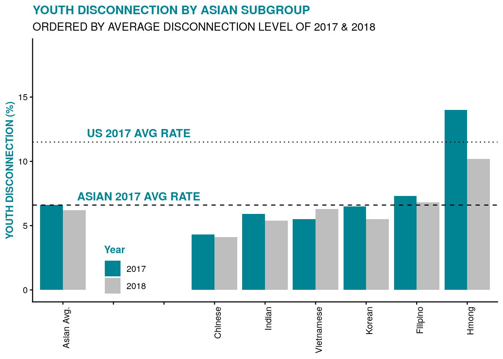</p>
<hr />
<p>Now let’s do the same for the Latinx subgroups.</p>
<p>First let’s make the small tibble of the 2017 Latinx average rate
like we did for the US and for Asians to create the lines and text on
our plot.</p>
<div class="sourceCode" id="cb230"><pre
class="sourceCode r"><code class="sourceCode r"><span id="cb230-1"><a href="#cb230-1" tabindex="-1"></a>df_latinx_total <span class="ot">&lt;-</span> </span>
<span id="cb230-2"><a href="#cb230-2" tabindex="-1"></a>  latinx_subgroups <span class="sc">%&gt;%</span></span>
<span id="cb230-3"><a href="#cb230-3" tabindex="-1"></a>  <span class="fu">filter</span>(Year <span class="sc">==</span> <span class="dv">2017</span>, Gender <span class="sc">==</span> <span class="st">&quot;All&quot;</span>, Race_Ethnicity <span class="sc">==</span> <span class="st">&quot;Latinx&quot;</span>) <span class="sc">%&gt;%</span></span>
<span id="cb230-4"><a href="#cb230-4" tabindex="-1"></a>  <span class="fu">mutate</span>(<span class="at">Year =</span> <span class="fu">as.character</span>(Year), </span>
<span id="cb230-5"><a href="#cb230-5" tabindex="-1"></a>         <span class="at">label =</span> <span class="fu">c</span>(<span class="st">&#39;bold(&quot;LATINX 2017 AVG RATE&quot;)&#39;</span>))</span></code></pre></div>
<p>Now we will use similar code for the latinx subgroups. The only
difference is that we will also change the
<code>"Puerto Rican, Dominican, Cuban"</code> values to have new line
breaks between the groups. First let’s plot all subgroups.</p>
<details>
<summary>
Click here to reveal the code.
</summary>
<div class="sourceCode" id="cb231"><pre
class="sourceCode r"><code class="sourceCode r"><span id="cb231-1"><a href="#cb231-1" tabindex="-1"></a>latinx_for_plot <span class="ot">&lt;-</span>latinx_subgroups <span class="sc">%&gt;%</span></span>
<span id="cb231-2"><a href="#cb231-2" tabindex="-1"></a>  dplyr<span class="sc">::</span><span class="fu">select</span>(<span class="sc">-</span>Group) <span class="sc">%&gt;%</span></span>
<span id="cb231-3"><a href="#cb231-3" tabindex="-1"></a>  <span class="fu">filter</span>(Gender <span class="sc">==</span> <span class="st">&quot;All&quot;</span>, Race_Ethnicity <span class="sc">!=</span> <span class="st">&quot;All_races&quot;</span>) <span class="sc">%&gt;%</span></span>
<span id="cb231-4"><a href="#cb231-4" tabindex="-1"></a>  <span class="fu">mutate</span>(<span class="at">Race_Ethnicity =</span> <span class="fu">str_replace</span>(</span>
<span id="cb231-5"><a href="#cb231-5" tabindex="-1"></a>                 <span class="at">string =</span> Race_Ethnicity, </span>
<span id="cb231-6"><a href="#cb231-6" tabindex="-1"></a>                <span class="at">pattern =</span> <span class="st">&quot;Puerto Rican, Dominican, Cuban&quot;</span>,</span>
<span id="cb231-7"><a href="#cb231-7" tabindex="-1"></a>            <span class="at">replacement =</span> <span class="st">&quot;Puerto Rican,</span><span class="sc">\n</span><span class="st">Dominican,</span><span class="sc">\n</span><span class="st">Cuban&quot;</span>)) <span class="sc">%&gt;%</span></span>
<span id="cb231-8"><a href="#cb231-8" tabindex="-1"></a>  <span class="fu">mutate</span>(<span class="at">Race_Ethnicity =</span> <span class="fu">fct_reorder</span>(Race_Ethnicity, Percent), </span>
<span id="cb231-9"><a href="#cb231-9" tabindex="-1"></a>         <span class="at">Race_Ethnicity =</span> <span class="fu">fct_relevel</span>(Race_Ethnicity, <span class="st">&quot;Latinx&quot;</span>)) <span class="sc">%&gt;%</span></span>
<span id="cb231-10"><a href="#cb231-10" tabindex="-1"></a>  <span class="fu">pivot_wider</span>(<span class="at">names_from =</span> Year, <span class="at">values_from =</span> Percent) <span class="sc">%&gt;%</span></span>
<span id="cb231-11"><a href="#cb231-11" tabindex="-1"></a>  <span class="fu">pivot_longer</span>(<span class="at">cols =</span> <span class="sc">-</span><span class="fu">c</span>(Race_Ethnicity, Gender), </span>
<span id="cb231-12"><a href="#cb231-12" tabindex="-1"></a>  <span class="at">names_to =</span> <span class="st">&quot;Year&quot;</span> , </span>
<span id="cb231-13"><a href="#cb231-13" tabindex="-1"></a>  <span class="at">values_to =</span> <span class="st">&quot;Percent&quot;</span>)</span>
<span id="cb231-14"><a href="#cb231-14" tabindex="-1"></a></span>
<span id="cb231-15"><a href="#cb231-15" tabindex="-1"></a>latinx_subgroup_plot <span class="ot">&lt;-</span> </span>
<span id="cb231-16"><a href="#cb231-16" tabindex="-1"></a>  latinx_for_plot <span class="sc">%&gt;%</span></span>
<span id="cb231-17"><a href="#cb231-17" tabindex="-1"></a>  <span class="fu">ggplot</span>(<span class="fu">aes</span>(<span class="at">x =</span> Race_Ethnicity, <span class="at">y =</span> Percent, <span class="at">fill =</span> Year)) <span class="sc">+</span></span>
<span id="cb231-18"><a href="#cb231-18" tabindex="-1"></a>    <span class="fu">geom_col</span>(<span class="fu">aes</span>(<span class="at">fill =</span> Year), <span class="at">position =</span> <span class="st">&quot;dodge&quot;</span>) <span class="sc">+</span></span>
<span id="cb231-19"><a href="#cb231-19" tabindex="-1"></a>    <span class="fu">labs</span>(<span class="at">title =</span> <span class="st">&quot;YOUTH DISCONNECTION BY LATINX SUBGROUP&quot;</span>,</span>
<span id="cb231-20"><a href="#cb231-20" tabindex="-1"></a>         <span class="at">subtitle =</span> <span class="st">&quot;ORDERED BY AVERAGE DISCONNECTION LEVEL OF 2017 &amp; 2018&quot;</span>,</span>
<span id="cb231-21"><a href="#cb231-21" tabindex="-1"></a>         <span class="at">y =</span> <span class="st">&quot;YOUTH DISCONNECTION (%)&quot;</span>) <span class="sc">+</span></span>
<span id="cb231-22"><a href="#cb231-22" tabindex="-1"></a>    <span class="fu">scale_fill_manual</span>(<span class="at">values =</span> custom_pal) <span class="sc">+</span></span>
<span id="cb231-23"><a href="#cb231-23" tabindex="-1"></a>    <span class="fu">scale_x_discrete</span>(</span>
<span id="cb231-24"><a href="#cb231-24" tabindex="-1"></a>    <span class="at">limits =</span> <span class="fu">c</span>(<span class="fu">levels</span>(<span class="fu">pull</span>(latinx_for_plot,Race_Ethnicity))[<span class="dv">1</span>],</span>
<span id="cb231-25"><a href="#cb231-25" tabindex="-1"></a>               <span class="st">&quot;Blank&quot;</span>,</span>
<span id="cb231-26"><a href="#cb231-26" tabindex="-1"></a>               <span class="st">&quot;NEXT_blank&quot;</span>,</span>
<span id="cb231-27"><a href="#cb231-27" tabindex="-1"></a>               <span class="fu">levels</span>(<span class="fu">pull</span>(latinx_for_plot,Race_Ethnicity))[<span class="dv">2</span><span class="sc">:</span></span>
<span id="cb231-28"><a href="#cb231-28" tabindex="-1"></a>               <span class="fu">length</span>(<span class="fu">levels</span>(<span class="fu">pull</span>(latinx_for_plot,Race_Ethnicity)))]),</span>
<span id="cb231-29"><a href="#cb231-29" tabindex="-1"></a>    <span class="at">labels =</span> <span class="fu">c</span>(<span class="st">&quot;Latinx&quot;</span> <span class="ot">=</span> <span class="st">&quot;Latinx Avg.&quot;</span>,</span>
<span id="cb231-30"><a href="#cb231-30" tabindex="-1"></a>               <span class="st">&quot;Blank&quot;</span> <span class="ot">=</span> <span class="st">&quot;&quot;</span>,</span>
<span id="cb231-31"><a href="#cb231-31" tabindex="-1"></a>               <span class="st">&quot;NEXT_blank&quot;</span><span class="ot">=</span> <span class="st">&quot;&quot;</span>))<span class="sc">+</span></span>
<span id="cb231-32"><a href="#cb231-32" tabindex="-1"></a>    <span class="fu">bar_theme</span>() <span class="sc">+</span></span>
<span id="cb231-33"><a href="#cb231-33" tabindex="-1"></a>    <span class="co">#this add the legend to the plot area!:</span></span>
<span id="cb231-34"><a href="#cb231-34" tabindex="-1"></a>    <span class="fu">theme</span>(<span class="at">legend.justification =</span> <span class="fu">c</span>(<span class="fl">0.23</span>,<span class="fl">0.1</span>),<span class="at">legend.position =</span> <span class="fu">c</span>(<span class="fl">0.23</span>,.<span class="dv">1</span>))<span class="sc">+</span></span>
<span id="cb231-35"><a href="#cb231-35" tabindex="-1"></a>    <span class="fu">geom_text</span>(<span class="at">data =</span> df_latinx_total,</span>
<span id="cb231-36"><a href="#cb231-36" tabindex="-1"></a>           <span class="at">mapping =</span> <span class="fu">aes</span>(<span class="at">x =</span> <span class="dv">3</span>, <span class="at">y =</span> Percent <span class="sc">+</span>.<span class="dv">7</span>, <span class="at">label =</span> label),</span>
<span id="cb231-37"><a href="#cb231-37" tabindex="-1"></a>             <span class="at">parse =</span> <span class="cn">TRUE</span>, <span class="at">color =</span> <span class="st">&quot;#008393&quot;</span>, <span class="at">size =</span> <span class="dv">4</span>) <span class="sc">+</span></span>
<span id="cb231-38"><a href="#cb231-38" tabindex="-1"></a>    <span class="fu">geom_hline</span>(<span class="fu">aes</span>(<span class="at">yintercept =</span> <span class="fu">pull</span>(df_latinx_total, Percent)), <span class="at">linetype =</span> <span class="dv">2</span>) <span class="sc">+</span></span>
<span id="cb231-39"><a href="#cb231-39" tabindex="-1"></a>    <span class="fu">geom_text</span>(<span class="at">data =</span> df_US_total,</span>
<span id="cb231-40"><a href="#cb231-40" tabindex="-1"></a>           <span class="at">mapping =</span> <span class="fu">aes</span>(<span class="at">x =</span> <span class="dv">3</span>, <span class="at">y =</span> Percent <span class="sc">+</span>.<span class="dv">7</span>, <span class="at">label =</span> label),</span>
<span id="cb231-41"><a href="#cb231-41" tabindex="-1"></a>             <span class="at">parse =</span> <span class="cn">TRUE</span>, <span class="at">color =</span> <span class="st">&quot;#008393&quot;</span>, <span class="at">size =</span> <span class="dv">4</span>) <span class="sc">+</span></span>
<span id="cb231-42"><a href="#cb231-42" tabindex="-1"></a>    <span class="fu">geom_hline</span>(<span class="fu">aes</span>(<span class="at">yintercept =</span> <span class="fu">pull</span>(df_US_total, Percent)), <span class="at">linetype =</span> <span class="dv">3</span>)</span></code></pre></div>
</details>
<div class="sourceCode" id="cb232"><pre
class="sourceCode r"><code class="sourceCode r"><span id="cb232-1"><a href="#cb232-1" tabindex="-1"></a>latinx_subgroup_plot</span></code></pre></div>
<p>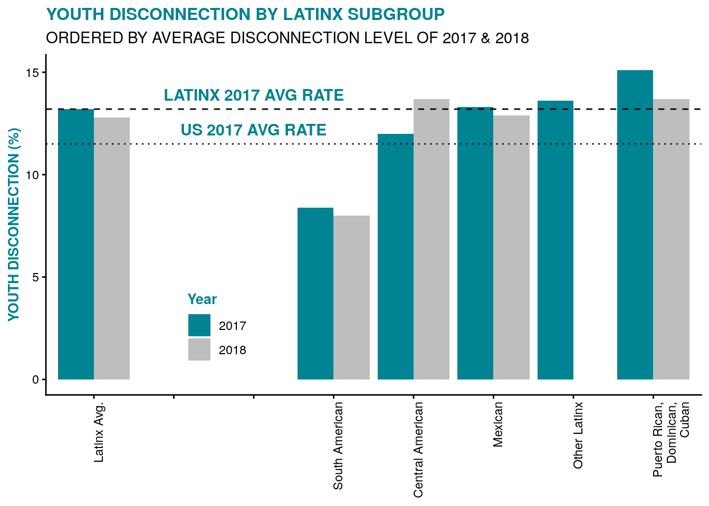</p>
<p>Now let’s drop the subgroups that don’t have values for both
years.</p>
<details>
<summary>
Click here to reveal the code.
</summary>
<div class="sourceCode" id="cb233"><pre
class="sourceCode r"><code class="sourceCode r"><span id="cb233-1"><a href="#cb233-1" tabindex="-1"></a>latinx_for_plot <span class="ot">&lt;-</span>latinx_subgroups <span class="sc">%&gt;%</span></span>
<span id="cb233-2"><a href="#cb233-2" tabindex="-1"></a>  dplyr<span class="sc">::</span><span class="fu">select</span>(<span class="sc">-</span>Group) <span class="sc">%&gt;%</span></span>
<span id="cb233-3"><a href="#cb233-3" tabindex="-1"></a>  <span class="fu">filter</span>(Gender <span class="sc">==</span> <span class="st">&quot;All&quot;</span>) <span class="sc">%&gt;%</span></span>
<span id="cb233-4"><a href="#cb233-4" tabindex="-1"></a>  <span class="fu">filter</span>(Race_Ethnicity <span class="sc">!=</span> <span class="st">&quot;All_races&quot;</span>) <span class="sc">%&gt;%</span></span>
<span id="cb233-5"><a href="#cb233-5" tabindex="-1"></a>  <span class="fu">mutate</span>(<span class="at">Race_Ethnicity =</span> <span class="fu">str_replace</span>(</span>
<span id="cb233-6"><a href="#cb233-6" tabindex="-1"></a>                 <span class="at">string =</span> Race_Ethnicity, </span>
<span id="cb233-7"><a href="#cb233-7" tabindex="-1"></a>                <span class="at">pattern =</span> <span class="st">&quot;Puerto Rican, Dominican, Cuban&quot;</span>,</span>
<span id="cb233-8"><a href="#cb233-8" tabindex="-1"></a>            <span class="at">replacement =</span> <span class="st">&quot;Puerto Rican,</span><span class="sc">\n</span><span class="st">Dominican,</span><span class="sc">\n</span><span class="st">Cuban&quot;</span>)) <span class="sc">%&gt;%</span></span>
<span id="cb233-9"><a href="#cb233-9" tabindex="-1"></a>  <span class="fu">mutate</span>(<span class="at">Race_Ethnicity =</span>  <span class="fu">fct_reorder</span>(Race_Ethnicity, Percent)) <span class="sc">%&gt;%</span> </span>
<span id="cb233-10"><a href="#cb233-10" tabindex="-1"></a>  <span class="fu">mutate</span>(<span class="at">Race_Ethnicity =</span> <span class="fu">fct_relevel</span>(Race_Ethnicity, <span class="st">&quot;Latinx&quot;</span>)) <span class="sc">%&gt;%</span></span>
<span id="cb233-11"><a href="#cb233-11" tabindex="-1"></a>  <span class="fu">pivot_wider</span>(<span class="at">names_from =</span> Year, <span class="at">values_from =</span> Percent) <span class="sc">%&gt;%</span></span>
<span id="cb233-12"><a href="#cb233-12" tabindex="-1"></a>  tidyr<span class="sc">::</span><span class="fu">drop_na</span>() <span class="sc">%&gt;%</span></span>
<span id="cb233-13"><a href="#cb233-13" tabindex="-1"></a>  <span class="fu">pivot_longer</span>(<span class="at">cols =</span> <span class="sc">-</span><span class="fu">c</span>(Race_Ethnicity, Gender), </span>
<span id="cb233-14"><a href="#cb233-14" tabindex="-1"></a>  <span class="at">names_to =</span> <span class="st">&quot;Year&quot;</span> , </span>
<span id="cb233-15"><a href="#cb233-15" tabindex="-1"></a>  <span class="at">values_to =</span> <span class="st">&quot;Percent&quot;</span>)<span class="sc">%&gt;%</span></span>
<span id="cb233-16"><a href="#cb233-16" tabindex="-1"></a>  <span class="fu">mutate</span>(<span class="at">Race_Ethnicity =</span> <span class="fu">fct_drop</span>(Race_Ethnicity))</span>
<span id="cb233-17"><a href="#cb233-17" tabindex="-1"></a></span>
<span id="cb233-18"><a href="#cb233-18" tabindex="-1"></a>latinx_subgroup_plot_simp <span class="ot">&lt;-</span>latinx_for_plot <span class="sc">%&gt;%</span></span>
<span id="cb233-19"><a href="#cb233-19" tabindex="-1"></a><span class="fu">ggplot</span>(<span class="fu">aes</span>(<span class="at">x =</span> Race_Ethnicity, <span class="at">y =</span> Percent, <span class="at">fill =</span> Year)) <span class="sc">+</span></span>
<span id="cb233-20"><a href="#cb233-20" tabindex="-1"></a> <span class="fu">geom_col</span>(<span class="fu">aes</span>(<span class="at">fill =</span> Year), <span class="at">position =</span> <span class="st">&quot;dodge&quot;</span>)<span class="sc">+</span></span>
<span id="cb233-21"><a href="#cb233-21" tabindex="-1"></a>  <span class="fu">labs</span>(<span class="at">title =</span> <span class="st">&quot;YOUTH DISCONNECTION BY LATINX SUBGROUP&quot;</span>,</span>
<span id="cb233-22"><a href="#cb233-22" tabindex="-1"></a>    <span class="at">subtitle =</span> <span class="st">&quot;ORDERED BY AVERAGE DISCONNECTION LEVEL OF 2017 &amp; 2018&quot;</span>,</span>
<span id="cb233-23"><a href="#cb233-23" tabindex="-1"></a>           <span class="at">y =</span> <span class="st">&quot;YOUTH DISCONNECTION (%)&quot;</span>) <span class="sc">+</span></span>
<span id="cb233-24"><a href="#cb233-24" tabindex="-1"></a>  <span class="fu">scale_fill_manual</span>(<span class="at">values =</span> custom_pal) <span class="sc">+</span></span>
<span id="cb233-25"><a href="#cb233-25" tabindex="-1"></a>  <span class="fu">scale_x_discrete</span>(</span>
<span id="cb233-26"><a href="#cb233-26" tabindex="-1"></a>  <span class="at">limits =</span> <span class="fu">c</span>(<span class="fu">levels</span>(<span class="fu">pull</span>(latinx_for_plot,Race_Ethnicity))[<span class="dv">1</span>],</span>
<span id="cb233-27"><a href="#cb233-27" tabindex="-1"></a>             <span class="st">&quot;Blank&quot;</span>,</span>
<span id="cb233-28"><a href="#cb233-28" tabindex="-1"></a>             <span class="st">&quot;NEXT_blank&quot;</span>,</span>
<span id="cb233-29"><a href="#cb233-29" tabindex="-1"></a>             <span class="fu">levels</span>(<span class="fu">pull</span>(latinx_for_plot,Race_Ethnicity))[<span class="dv">2</span><span class="sc">:</span></span>
<span id="cb233-30"><a href="#cb233-30" tabindex="-1"></a>             <span class="fu">length</span>(<span class="fu">levels</span>(<span class="fu">pull</span>(latinx_for_plot,Race_Ethnicity)))]),</span>
<span id="cb233-31"><a href="#cb233-31" tabindex="-1"></a>  <span class="at">labels =</span> <span class="fu">c</span>(<span class="st">&quot;Latinx&quot;</span> <span class="ot">=</span> <span class="st">&quot;Latinx Avg.&quot;</span>,</span>
<span id="cb233-32"><a href="#cb233-32" tabindex="-1"></a>             <span class="st">&quot;Blank&quot;</span> <span class="ot">=</span> <span class="st">&quot;&quot;</span>,</span>
<span id="cb233-33"><a href="#cb233-33" tabindex="-1"></a>             <span class="st">&quot;NEXT_blank&quot;</span><span class="ot">=</span> <span class="st">&quot;&quot;</span>))<span class="sc">+</span></span>
<span id="cb233-34"><a href="#cb233-34" tabindex="-1"></a>  <span class="fu">scale_y_continuous</span>(<span class="at">limits =</span> <span class="fu">c</span>(<span class="dv">0</span>,<span class="fu">max</span>(<span class="fu">pull</span>(latinx_subgroups,Percent), </span>
<span id="cb233-35"><a href="#cb233-35" tabindex="-1"></a>                                       <span class="at">na.rm =</span> <span class="cn">TRUE</span>)))<span class="sc">+</span></span>
<span id="cb233-36"><a href="#cb233-36" tabindex="-1"></a>  <span class="fu">bar_theme</span>()<span class="sc">+</span></span>
<span id="cb233-37"><a href="#cb233-37" tabindex="-1"></a>  <span class="co">#this add the legend to the plot area!:</span></span>
<span id="cb233-38"><a href="#cb233-38" tabindex="-1"></a>  <span class="fu">theme</span>(<span class="at">legend.justification =</span> <span class="fu">c</span>(<span class="fl">0.23</span>,<span class="fl">0.01</span>),<span class="at">legend.position =</span> <span class="fu">c</span>(<span class="fl">0.23</span>,.<span class="dv">01</span>))<span class="sc">+</span></span>
<span id="cb233-39"><a href="#cb233-39" tabindex="-1"></a>  <span class="fu">geom_text</span>(<span class="at">data =</span> df_latinx_total,</span>
<span id="cb233-40"><a href="#cb233-40" tabindex="-1"></a>         <span class="at">mapping =</span> <span class="fu">aes</span>(<span class="at">x =</span> <span class="dv">3</span>, <span class="at">y =</span> Percent <span class="sc">+</span>.<span class="dv">7</span>, <span class="at">label =</span> label),</span>
<span id="cb233-41"><a href="#cb233-41" tabindex="-1"></a>           <span class="at">parse =</span> <span class="cn">TRUE</span>,</span>
<span id="cb233-42"><a href="#cb233-42" tabindex="-1"></a>           <span class="at">color =</span> <span class="st">&quot;#008393&quot;</span>, </span>
<span id="cb233-43"><a href="#cb233-43" tabindex="-1"></a>            <span class="at">size =</span> <span class="dv">4</span>) <span class="sc">+</span></span>
<span id="cb233-44"><a href="#cb233-44" tabindex="-1"></a>  <span class="fu">geom_hline</span>(<span class="fu">aes</span>(<span class="at">yintercept =</span> <span class="fu">pull</span>(df_latinx_total, Percent)), <span class="at">linetype =</span> <span class="dv">2</span>) <span class="sc">+</span></span>
<span id="cb233-45"><a href="#cb233-45" tabindex="-1"></a>  <span class="fu">geom_text</span>(<span class="at">data =</span> df_US_total,</span>
<span id="cb233-46"><a href="#cb233-46" tabindex="-1"></a>         <span class="at">mapping =</span> <span class="fu">aes</span>(<span class="at">x =</span> <span class="dv">3</span>, <span class="at">y =</span> Percent <span class="sc">+</span>.<span class="dv">7</span>, <span class="at">label =</span> label),</span>
<span id="cb233-47"><a href="#cb233-47" tabindex="-1"></a>           <span class="at">parse =</span> <span class="cn">TRUE</span>,</span>
<span id="cb233-48"><a href="#cb233-48" tabindex="-1"></a>           <span class="at">color =</span> <span class="st">&quot;#008393&quot;</span>, </span>
<span id="cb233-49"><a href="#cb233-49" tabindex="-1"></a>            <span class="at">size =</span> <span class="dv">4</span>) <span class="sc">+</span></span>
<span id="cb233-50"><a href="#cb233-50" tabindex="-1"></a>  <span class="fu">geom_hline</span>(<span class="fu">aes</span>(<span class="at">yintercept =</span> <span class="fu">pull</span>(df_US_total, Percent)), <span class="at">linetype =</span> <span class="dv">3</span>)</span></code></pre></div>
</details>
<div class="sourceCode" id="cb234"><pre
class="sourceCode r"><code class="sourceCode r"><span id="cb234-1"><a href="#cb234-1" tabindex="-1"></a>latinx_subgroup_plot_simp</span></code></pre></div>
<p>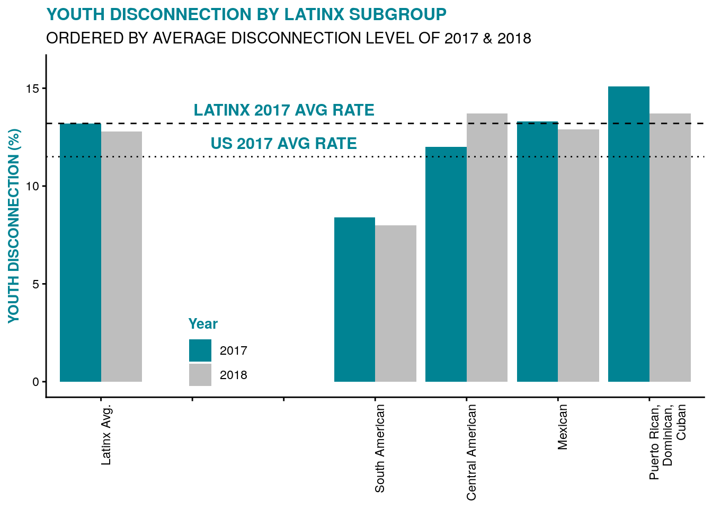</p>
</div>
</div>
<div id="data-analysis" class="section level2">
<h2><strong>Data Analysis</strong></h2>
<hr />
<p>If you have been following along but stopped and are starting here
you could load the wrangled data using the following command:</p>
<div class="sourceCode" id="cb235"><pre
class="sourceCode r"><code class="sourceCode r"><span id="cb235-1"><a href="#cb235-1" tabindex="-1"></a><span class="fu">load</span>(here<span class="sc">::</span><span class="fu">here</span>(<span class="st">&quot;data&quot;</span>, <span class="st">&quot;wrangled&quot;</span>, <span class="st">&quot;wrangled_data.rda&quot;</span>))</span></code></pre></div>
<hr />
<details>
<summary>
If you skipped the data wrangling section click here.
</summary>
<p>First you need to install the <code>OCSdata</code> package:</p>
<div class="sourceCode" id="cb236"><pre
class="sourceCode r"><code class="sourceCode r"><span id="cb236-1"><a href="#cb236-1" tabindex="-1"></a><span class="fu">install.packages</span>(<span class="st">&quot;OCSdata&quot;</span>)</span></code></pre></div>
<p>Then, you may load the wrangled data into your R environment using
the following code:</p>
<div class="sourceCode" id="cb237"><pre
class="sourceCode r"><code class="sourceCode r"><span id="cb237-1"><a href="#cb237-1" tabindex="-1"></a><span class="co"># library(OCSdata)</span></span>
<span id="cb237-2"><a href="#cb237-2" tabindex="-1"></a><span class="fu">wrangled_rda</span>(<span class="st">&quot;ocs-bp-youth-disconnection&quot;</span>, <span class="at">outpath =</span> <span class="fu">getwd</span>())</span>
<span id="cb237-3"><a href="#cb237-3" tabindex="-1"></a><span class="fu">load</span>(here<span class="sc">::</span><span class="fu">here</span>(<span class="st">&quot;OCSdata&quot;</span>, <span class="st">&quot;data&quot;</span>, <span class="st">&quot;wrangled&quot;</span>, <span class="st">&quot;wrangled_data.rda&quot;</span>))</span></code></pre></div>
<p>If the package does not work for you, an RDA file (stands for R data)
of the data can be found <a
href="https://github.com//opencasestudies/ocs-bp-youth-disconnection/tree/master/data/wrangled">here</a>
or slightly more directly <a
href="https://raw.githubusercontent.com/opencasestudies/ocs-bp-youth-disconnection/master/data/wrangled/wrangled_data.rda">here</a>.
Download this file and then place it in your current working directory
within a subdirectory called “wrangled” within a subdirectory called
“data” to copy and paste our code. We used an RStudio project and the <a
href="https://github.com/jennybc/here_here"><code>here</code>
package</a> to navigate to the file more easily.</p>
<div class="sourceCode" id="cb238"><pre
class="sourceCode r"><code class="sourceCode r"><span id="cb238-1"><a href="#cb238-1" tabindex="-1"></a><span class="fu">load</span>(here<span class="sc">::</span><span class="fu">here</span>(<span class="st">&quot;data&quot;</span>, <span class="st">&quot;wrangled&quot;</span>, <span class="st">&quot;wrangled_data.rda&quot;</span>))</span></code></pre></div>
<hr />
<details>
<summary>
Click here to see more about creating new projects in RStudio.
</summary>
<p>You can create a project by going to the File menu of RStudio like
so:</p>
<p></p>
<p>You can also do so by clicking the project button:</p>
<p></p>
<p>See <a
href="https://support.rstudio.com/hc/en-us/articles/200526207-Using-Projects">here</a>
to learn more about using RStudio projects and <a
href="https://github.com/jennybc/here_here">here</a> to learn more about
the <code>here</code> package.</p>
</details>
<hr />
</details>
<hr />
<p>In our data, we have pooled (repeated) <a
href="https://en.wikipedia.org/wiki/Cross-sectional_data?oldformat=true">cross-sectional</a>
data.</p>
<p>This is data produced from repeated measurement of a <a
href="https://en.wikipedia.org/wiki/Population?oldformat=true">population</a>
over time.</p>
<p>It is often unfeasible to collect data for an entire population at
once. However, we can still obtain meaningful measures using a random <a
href="https://en.wikipedia.org/wiki/Sampling_(statistics)?oldformat=true">sample</a>
of the population.</p>
<p>At specific time-points, data is collected from a sample of the
population. The individuals in each sample are not necessarily the same
individuals. This separates pooled cross-sectional data from panel data,
which is longitudinal data from repeated measurement of the same
people.</p>
<p>By sampling from a population at multiple time points, we can
generate estimates of population level statistics. Although these
statistics have some random error, they can provide insight into how the
measure variable is changing in a population over time.</p>
<p>As we have measured values over time, we can plot the data to see if
there is a trend (increasing, decreasing, monotonic, non-monotonic,
linear, non-linear, etc). Sometimes, however, the trend isn’t exactly
clear. Fortunately, there are statistical methods to resolve this
issue.</p>
<p>Next, we will introduce and discuss the Mann-Kendall trend test.</p>
<div id="mann-kendall-trend-test" class="section level3">
<h3><strong>Mann-Kendall trend test</strong></h3>
<hr />
<p>The Mann-Kendall trend test, (which is a variation of the <a
href="https://en.wikipedia.org/wiki/Kendall_rank_correlation_coefficient?oldformat=true">Kendall
rank correlation coefficient</a>), tests whether there is a <a
href="https://www.statisticshowto.com/monotonic-relationship/">monotonic
association</a> between two variables, or a relationship with consistent
direction between two variables, where one variable (typically time)
determines the order of the other variable. Thus this test is most often
used to see if there is a consistent change in direction (or <a
href="https://en.wikipedia.org/wiki/Sign_(mathematics)">mathematical
sign</a>) for a variable across time.</p>
<p>See this <a
href="https://vsp.pnnl.gov/help/vsample/Design_Trend_Mann_Kendall.htm">link</a>
for information on using this test with missing data.</p>
</div>
<div id="monotonic-relationships" class="section level3">
<h3><strong>Monotonic relationships</strong></h3>
<hr />
<p>As you can see in the image below, a monotonic relationship does not
need to be linear, it simply needs to show a consistent direction of
change. A linear relationship on the other hand shows consistent
direction and rate of change.</p>
<p></p>
<div
id="source---stephanie-glen.-monotonic-relationship-definition-from-statisticshowto.com-elementary-statistics-for-the-rest-of-us-httpswww.statisticshowto.commonotonic-relationship"
class="section level5">
<h5>[<a
href="https://www.statisticshowto.com/monotonic-relationship/">source</a>
- Stephanie Glen. “Monotonic Relationship: Definition” From
StatisticsHowTo.com: Elementary Statistics for the rest of us! <a
href="https://www.statisticshowto.com/monotonic-relationship/"
class="uri">https://www.statisticshowto.com/monotonic-relationship/</a>]</h5>
<p>So in other words, we are interested to see if there is a consistent
direction in the relationship of disconnection rates with time, as we
want to know if rates have been consistently increasing or decreasing or
if they have been staying roughly the same.</p>
<p><strong>Note</strong>: this test does not test if the rate of change
has been consistent over time, just the direction.</p>
</div>
<div id="mann-kendall-trend-test-vs-simple-linear-regression"
class="section level4">
<h4>Mann-Kendall trend test vs simple linear regression</h4>
<hr />
<p>In contrast to the Mann-Kendall trend test, we briefly compare this
to <a
href="https://en.wikipedia.org/wiki/Simple_linear_regression">Simple
linear regression</a>.</p>
<p>There are a couple of difference between the two:</p>
<ol style="list-style-type: decimal">
<li><p>Linear regression assesses if there a consistent change in both
rate and direction in the dependent variable as a single independent
variable changes. The coefficients tell us how much the dependent
variable changes with one unit change of the independent
variable.</p></li>
<li><p>The Mann-Kendall trend test is a <a
href="https://en.wikipedia.org/wiki/Nonparametric_statistics">nonparametric</a>
test, which means that it does not require as many assumptions as some
<a
href="https://en.wikipedia.org/wiki/Parametric_statistics">parametric</a>
tests, like the <a
href="https://en.wikipedia.org/wiki/Simple_linear_regression">simple
linear regression</a>.</p></li>
</ol>
</div>
</div>
<div id="m-k-test-by-hand" class="section level3">
<h3><strong>M-K test by hand</strong></h3>
<hr />
<p>The <a href="https://en.wikipedia.org/wiki/Null_hypothesis">null
hypothesis</a> <span class="math inline">\(H_{0}\)</span> of the test is
that there is no monotonic trend, while the <a
href="https://en.wikipedia.org/wiki/Alternative_hypothesis">alternative
hypothesis</a> <span class="math inline">\(H_{a}\)</span> is that there
is a monotonic trend.</p>
<p>According to <a
href="https://www.statisticshowto.com/wp-content/uploads/2016/08/Mann-Kendall-Analysis-1.pdf">this
report</a>, the Mann-Kendall <span class="math inline">\(S\)</span>
score is calculated as follows:</p>
<blockquote>
<p>The data values are evaluated as an ordered time series. Each data
value is compared to all subsequent data values. The initial value of
the Mann-Kendall statistic, <span class="math inline">\(S\)</span>, is
assumed to be 0 (e.g., no trend). If a data value from a later time
period is higher than a data value from an earlier time period, <span
class="math inline">\(S\)</span> is incremented by 1. On the other hand,
if the data value from a later time period is lower than a data value
sampled earlier, <span class="math inline">\(S\)</span> is decremented
by 1. The net result of all such increments and decrements yields the
final value of <span class="math inline">\(S\)</span>.</p>
</blockquote>
<p><span class="math display">\[S =\sum_{k=1}^{n-1}\sum_{j = k+1}^{n}
sign(x_{j} - x_{k}) \]</span></p>
<p>where we assume there are <span class="math inline">\(n\)</span> time
points and observations <span class="math inline">\(x_{j}\)</span> and
<span class="math inline">\(x_{k}\)</span> at two time points and:</p>
<p><span class="math display">\[sign(x_{j}-x_{k}) = 1 \text{, if }
x_{j}-x_{k}&gt;0\]</span> <span class="math display">\[sign(x_{j}-x_{k})
= 0 \text{, if } x_{j}-x_{k}=0\]</span> <span
class="math display">\[sign(x_{j}-x_{k}) = -1 \text{, if }
x_{j}-x_{k}&lt;0\]</span></p>
<p>Another way of stating this is all possible cases where a value
occurred later in time must be compared with values that occurred
earlier in time, giving <span class="math inline">\(n(n–1)/2\)</span>
comparisons, like so if there were four time points (<span
class="math inline">\(n = 4\)</span>):</p>
<p><span class="math display">\[S = sign(x_2−x_1) + sign(x_3−x_1) +
sign(x_4-x_1) + sign(x_3−x_2) + sign(x_4-x_2) +
sign(x_4-x_3)\]</span></p>
<p>which is consistent with <span class="math inline">\(4(4-1)/2 =
4(3)/2 = 12/2 = 6\)</span> comparisons.</p>
<p>Once we have calculated the Mann-Kendall <span
class="math inline">\(S\)</span> score, we want to know if the score is
meaningfully large or small enough from what we would expect with data
with no trend. To determine that, we need to know what the
<em>variance</em> is of the Mann-Kendall <span
class="math inline">\(S\)</span> score (or how much variability we
expect).</p>
<p>We won’t explain the details here, but it turns out the variance of
the Mann-Kendall <span class="math inline">\(S\)</span> score (or <span
class="math inline">\(\text{var}(S)\)</span>) is calculated like so:</p>
<p><span class="math display">\[
\text{var}(S)=\frac{1}{18}(n(n−1)(2n+5)−\sum_{p-1}^{g}t_{p}(t_{p}−1)(2t_{p}+5))\]</span>
where:</p>
<p><span class="math display">\[g =  \text{number of tied
groups}\]</span> <span class="math display">\[t_{p} =  \text{number of
observations in the }p^{th}\text{ group for a given tie}\]</span></p>
<p>For example, if 3 observations in our example were 35, then there
would be 1 <span class="math inline">\(g\)</span> tied group and 3 <span
class="math inline">\(t_{p}\)</span> observations.</p>
<p><strong>Note</strong>: according to this <a
href="https://www.statisticshowto.com/mann-kendall-trend-test/">source</a>,
a minimum of 4 observations should be used for this test and it is
recommended to have 8 or more.</p>
<p>Putting this all together, the test statistic we are interested in
(to know if the score is meaningfully large or small enough from what we
would expect with data with no trend) <span
class="math inline">\(Z_{MK}\)</span> is calculated as follows:</p>
<p>if <span class="math inline">\(S &gt; 0\)</span> then <span
class="math inline">\(Z_{MK} =
\frac{S-1}{\sqrt{\text{var}(S)}}\)</span><br />
if <span class="math inline">\(S &lt; 0\)</span> then <span
class="math inline">\(Z_{MK} =
\frac{S+1}{\sqrt{\text{var}(S)}}\)</span><br />
if <span class="math inline">\(S = 0\)</span> then <span
class="math inline">\(Z_{MK} = 0\)</span></p>
<p>This test statistic <span class="math inline">\(Z_{MK}\)</span> is
considered a <a href="https://en.wikipedia.org/wiki/Standard_score">Z
score</a> (also known as a standard or standardized score). We can use
standard look up tables from there to calculate a p-value. We will walk
through an example of how to do this below.</p>
<p>Let’s conduct a Mann-Kendall trend test using our data to see if
there are any monotonic trends in youth disconnection across time.</p>
<div id="m-k-trend-test-for-native-americans" class="section level4">
<h4>M-K trend test for Native Americans</h4>
<hr />
<p>Recall that the youth disconnection rates for Native Americans were
some of the highest in the first table we examined.</p>
<p></p>
<p>and the plot we made:</p>
<div class="sourceCode" id="cb239"><pre
class="sourceCode r"><code class="sourceCode r"><span id="cb239-1"><a href="#cb239-1" tabindex="-1"></a>youth_plot</span></code></pre></div>
<p>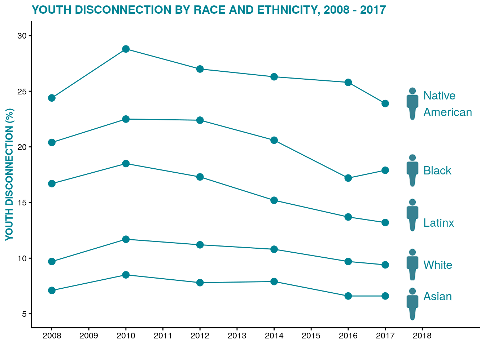</p>
<p>Let’s consider just observed values for the Native American subgroup.
The first value in time was (<span class="math inline">\(x_1\)</span> =
time point 1) 24.4, then (<span class="math inline">\(x_2\)</span>) 28.8
at the next time point, then (<span class="math inline">\(x_3\)</span>)
27.0, then (<span class="math inline">\(x_4\)</span>) 26.3, then (<span
class="math inline">\(x_5\)</span>) 25.8, and finally (<span
class="math inline">\(x_6\)</span>) 23.9.</p>
<p>If we were to calculate the Mann-Kendall statistic manually we could
do the following:</p>
<p><span class="math display">\[  S = sign(x_2−x_1) + sign(x_3-x_1) +
sign(x_4-x_1) + sign(x_5-x_1) + sign(x_6-x_1) +\]</span></p>
<p><span class="math display">\[ sign(x_3-x_2) + sign(x_4-x_2) +
sign(x_5-x_2) + sign(x_6-x_2) +\]</span></p>
<p><span class="math display">\[sign(x_4-x_3) + sign(x_5-x_3) +
sign(x_6-x_3) +\]</span></p>
<p><span class="math display">\[sign(x_5-x_4) + sign(x_6-x_4)
+\]</span></p>
<p><span class="math display">\[sign(x_6-x_5)\]</span></p>
<p>Thus to calculate <span class="math inline">\(S\)</span> manually in
R we could do like so:</p>
<div class="sourceCode" id="cb240"><pre
class="sourceCode r"><code class="sourceCode r"><span id="cb240-1"><a href="#cb240-1" tabindex="-1"></a>x1 <span class="ot">=</span> <span class="fl">24.4</span></span>
<span id="cb240-2"><a href="#cb240-2" tabindex="-1"></a>x2 <span class="ot">=</span> <span class="fl">28.8</span></span>
<span id="cb240-3"><a href="#cb240-3" tabindex="-1"></a>x3 <span class="ot">=</span> <span class="dv">27</span></span>
<span id="cb240-4"><a href="#cb240-4" tabindex="-1"></a>x4 <span class="ot">=</span> <span class="fl">26.3</span></span>
<span id="cb240-5"><a href="#cb240-5" tabindex="-1"></a>x5 <span class="ot">=</span> <span class="fl">25.8</span></span>
<span id="cb240-6"><a href="#cb240-6" tabindex="-1"></a>x6 <span class="ot">=</span> <span class="fl">23.9</span></span>
<span id="cb240-7"><a href="#cb240-7" tabindex="-1"></a></span>
<span id="cb240-8"><a href="#cb240-8" tabindex="-1"></a><span class="fu">sign</span>(x2<span class="sc">-</span>x1) <span class="sc">+</span> <span class="fu">sign</span>(x3<span class="sc">-</span>x1) <span class="sc">+</span> <span class="fu">sign</span>(x4<span class="sc">-</span>x1) <span class="sc">+</span> <span class="fu">sign</span>(x5<span class="sc">-</span>x1) <span class="sc">+</span> <span class="fu">sign</span>(x6<span class="sc">-</span>x1) <span class="sc">+</span></span>
<span id="cb240-9"><a href="#cb240-9" tabindex="-1"></a><span class="fu">sign</span>(x3<span class="sc">-</span>x2) <span class="sc">+</span> <span class="fu">sign</span>(x4<span class="sc">-</span>x2) <span class="sc">+</span> <span class="fu">sign</span>(x5<span class="sc">-</span>x2) <span class="sc">+</span> <span class="fu">sign</span>(x6<span class="sc">-</span>x2) <span class="sc">+</span><span class="fu">sign</span>(x4<span class="sc">-</span>x3) <span class="sc">+</span> <span class="fu">sign</span>(x5<span class="sc">-</span>x3) <span class="sc">+</span> <span class="fu">sign</span>(x6<span class="sc">-</span>x3) <span class="sc">+</span><span class="fu">sign</span>(x5<span class="sc">-</span>x4) <span class="sc">+</span> <span class="fu">sign</span>(x6<span class="sc">-</span>x4) <span class="sc">+</span> <span class="fu">sign</span>(x6<span class="sc">-</span>x5)</span></code></pre></div>
<pre><code>[1] -7</code></pre>
<p>The result is -7.</p>
<p>The <span class="math inline">\(\text{var}(S)\)</span> would be
calculated like so (since we have <span class="math inline">\(n\)</span>
= 6 observations and no ties):</p>
<p><span class="math display">\[
\text{var}(S)=\frac{1}{18}(6(6−1)(2(6)+5)−\sum_{p-1}^{g}0(0−1)(2(0)+5))\]</span>
<span class="math display">\[ \text{var}(S)=\frac{1}{18}(30)(17)−0
=1.666667(17) = 28.33333\]</span></p>
<p>Finally, we calculate the standardized score <span
class="math inline">\(Z_{MK}\)</span> (with <span
class="math inline">\(S\)</span> &lt; 0):</p>
<p><span class="math inline">\(Z_{MK} =
\frac{S+1}{\sqrt{VAR(S)}}\)</span> <span class="math inline">\(Z_{MK} =
\frac{-7+1}{\sqrt{28.33333}} = \frac{-6}{5.322906} = -1.127\)</span></p>
<p>As we noted above, the <span class="math inline">\(Z_{MK}\)</span> is
the specific Mann-Kendall version of the <a
href="https://en.wikipedia.org/wiki/Standard_score">Z score</a>. This
allows us to use a variety of data (which maybe normally distributed or
not) and create a standard statistic about the data that is normally
distributed.</p>
<p>Using the <span class="math inline">\(Z_{MK}\)</span> Z score, we can
use a standard <span class="math inline">\(Z\)</span> table to determine
the <span class="math inline">\(p\)</span>-value.</p>
<p>The <span class="math inline">\(p\)</span>-value tells us the
probability of observing a test statistic as or more extreme than the
one we observed if the null hypothesis (that there is no trend) is true.
If the <span class="math inline">\(p\)</span>-value is small, say less
than 0.05, then our observed <span class="math inline">\(Z_{MK}\)</span>
statistic is pretty rare if the null hypothesis is true. This would lead
us to reject the null hypothesis and conclude that there is indeed a
trend in the data. We will talk more about <span
class="math inline">\(p\)</span>-values, and in particular our choice of
0.05 as a comparison for the <span
class="math inline">\(p\)</span>-value, a little later. See this <a
href="https://opencasestudies.github.io/ocs-bp-rural-and-urban-obesity/">case
study</a> for more information about probability and hypothesis
testing.</p>
<p>OK back to our example. Let’s figure out what our <span
class="math inline">\(p\)</span>-value is using the standard <span
class="math inline">\(Z\)</span> score table.</p>
<p>Using the table below, in the the <span
class="math inline">\(Z\)</span> column on the far left, we find a row
that says -1.1 and because our <span class="math inline">\(Z\)</span>
value is -1.127 we round this to -1.13 and then find the column for 0.03
to account for the value that is second after decimal place for our
<span class="math inline">\(Z\)</span> score. We see that the value
where this row and this column intersect is 0.1292. This is the <span
class="math inline">\(p\)</span>-value, that indicates the probability
of having a <span class="math inline">\(Z\)</span> score that is more
extreme (on the negative side) of the <a
href="https://en.wikipedia.org/wiki/Standard_score"><span
class="math inline">\(Z\)</span> score normal distribution</a> or the
colored portion of the distribution in the figure below. In other words,
there is a 13% chance of observing data with a more negative <span
class="math inline">\(Z\)</span> score (and also a downward trend as the
sign of the <span class="math inline">\(Z_{MK}\)</span> is determined by
the <span class="math inline">\(S\)</span> score) simply by chance
alone.</p>
<p>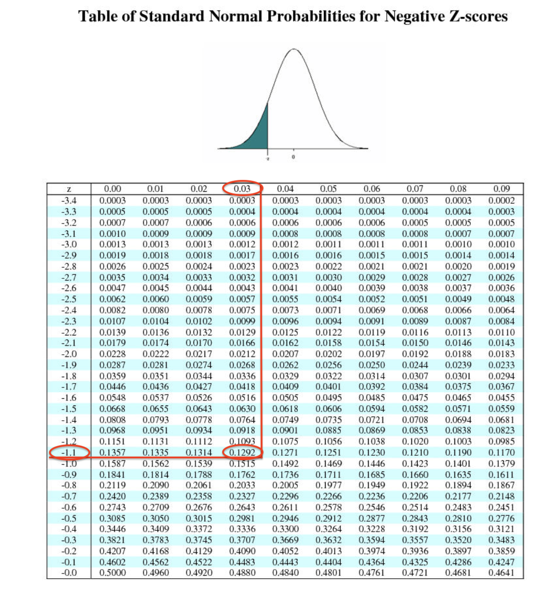</p>
<div id="source-1" class="section level5">
<h5><a
href="https://socratic.org/questions/5986a3e1b72cff6fd48a5408">[source]</a></h5>
<p>Since we do not know what type of trend we are looking for (thus we
are using what is called a <a
href="https://en.wikipedia.org/wiki/One-_and_two-tailed_tests">two-sided
hypothesis</a> - with the the alternative hypothesis or <span
class="math inline">\(H_{a}\)</span> being that either a positive or
negative trend exists), we can use this table to determine that the
<span class="math inline">\(p\)</span>-value is ~.1292 for a one-sided
hypothesis (specifically testing that a negative trend exists or testing
that a positive trend exists) and multiply this by 2 to get a <span
class="math inline">\(p\)</span>-value of approximately ~ 0.26 for a
two-sided hypothesis.</p>
<p>See this <a
href="https://www.onesided.org/articles/the-paradox-of-one-sided-v-two-sided-tests-of-significance.php">article</a>
for more information about one-sided and two-sided tests.</p>
<p>Thus in other words, there is a 26% chance of observing a more
positive or more negative z score by chance alone. This is a pretty high
chance!</p>
<p>Thus visualize this, our two-sided test looks for the areas on the
probability distribution of the Z score that are more positive or more
negative for both signs of the <span class="math inline">\(Z\)</span>
value:</p>
<p>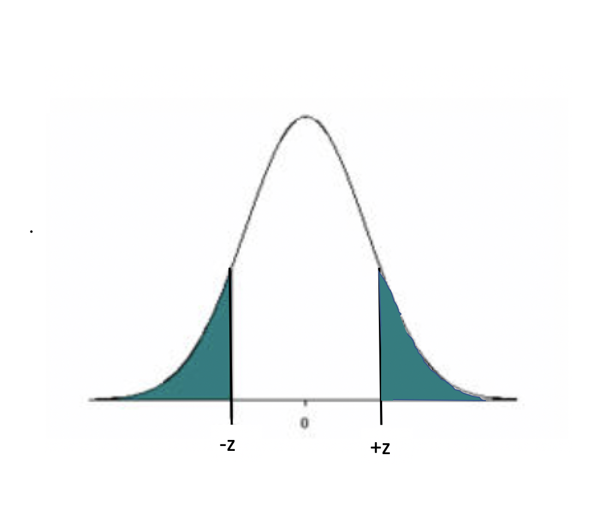</p>
<p>Alternatively, we can use this <a
href="https://www.socscistatistics.com/pvalues/normaldistribution.aspx">calculator</a>,
which gives us a more precise <span
class="math inline">\(p\)</span>-value of 0.26 for the two-sided
hypothesis.</p>
<p>Either way, our <span class="math inline">\(p\)</span>-value of ~
0.26 suggests that we do not have a monotonic trend as our <span
class="math inline">\(p\)</span>-value is much larger than the typical
<a
href="https://en.wikipedia.org/wiki/Statistical_significance">significance
threshold</a> of 0.05. The idea here is that it is acceptable that there
is a 5% <a
href="https://en.wikipedia.org/wiki/Probability">probability</a> that
our observation occurred simply due to chance.</p>
<p>In our case there is not enough evidence to reject the null
hypothesis. Thus we conclude that there is likely no trend.</p>
</div>
</div>
</div>
<div id="m-k-test-implementation-in-r" class="section level3">
<h3><strong>M-K test implementation in R</strong></h3>
<hr />
<p>We can also accomplish this with the <code>MannKendall()</code>
function of the <code>Kendall</code> package. This function requires a
vector of data for which a trend may be observed. See the <a
href="https://rdrr.io/cran/Kendall/man/MannKendall.html">documentation</a>
for this function of the <code>Kendall</code> package for more
details.</p>
<div id="m-k-trend-test-for-native-americans-1" class="section level4">
<h4>M-K trend test for Native Americans</h4>
<hr />
<p>In the following we:</p>
<ol style="list-style-type: decimal">
<li>Filter for just the data for the Native American group</li>
<li>Use the <code>pull()</code> function of the <code>dplyr</code>
package to get just the vector of this data</li>
<li>Apply the <code>MannKendall()</code> function from the
<code>Kendall</code> package</li>
<li>Use the base <code>summary()</code> function to get more information
for the results of our Mann-Kendall trend test</li>
</ol>
<div class="sourceCode" id="cb242"><pre
class="sourceCode r"><code class="sourceCode r"><span id="cb242-1"><a href="#cb242-1" tabindex="-1"></a>major_groups_long <span class="sc">%&gt;%</span></span>
<span id="cb242-2"><a href="#cb242-2" tabindex="-1"></a>  <span class="fu">filter</span>(Gender <span class="sc">==</span> <span class="st">&quot;All&quot;</span>, Race_Ethnicity <span class="sc">==</span> <span class="st">&quot;Native American&quot;</span>) <span class="sc">%&gt;%</span></span>
<span id="cb242-3"><a href="#cb242-3" tabindex="-1"></a>  <span class="fu">pull</span>(Percent) <span class="sc">%&gt;%</span></span>
<span id="cb242-4"><a href="#cb242-4" tabindex="-1"></a>  <span class="fu">MannKendall</span>(.) <span class="sc">%&gt;%</span></span>
<span id="cb242-5"><a href="#cb242-5" tabindex="-1"></a>  <span class="fu">summary</span>()</span></code></pre></div>
<pre><code>Score =  -7 , Var(Score) = 28.33333
denominator =  15
tau = -0.467, 2-sided pvalue =0.25966</code></pre>
<p>Again, just like when we calculated this manually, we see that the
score <span class="math inline">\(S\)</span> is -7. The larger the
score, the more indication that there is an increasing or decreasing
monotonic relationship. We also again see that the <span
class="math inline">\(p\)</span>-value is roughly = 0.26 and is greater
than 0.05, suggesting that we failed to find a monotonic trend in the
data.</p>
<p>However, it’s important to note that we only have 6 observations.
Thus, we may not have enough observations to observe a trend.</p>
<p>We can also explore whether there is a <strong>linear</strong> trend
using <a
href="https://en.wikipedia.org/wiki/Simple_linear_regression?oldformat=true">simple
linear regression</a> by using the <code>lm()</code> function of the
<code>stats</code> package.</p>
<p>First, we visualize the data with <code>Year</code> on the x-axis and
<code>Percent</code> of youth disconnection on the y-axis.</p>
<div class="sourceCode" id="cb244"><pre
class="sourceCode r"><code class="sourceCode r"><span id="cb244-1"><a href="#cb244-1" tabindex="-1"></a>major_groups_long <span class="sc">%&gt;%</span></span>
<span id="cb244-2"><a href="#cb244-2" tabindex="-1"></a>  <span class="fu">filter</span>(Gender <span class="sc">==</span> <span class="st">&quot;All&quot;</span>, Race_Ethnicity <span class="sc">==</span> <span class="st">&quot;Native American&quot;</span>) <span class="sc">%&gt;%</span></span>
<span id="cb244-3"><a href="#cb244-3" tabindex="-1"></a>  <span class="fu">ggplot</span>(<span class="fu">aes</span>(<span class="at">x =</span> Year, <span class="at">y =</span> Percent)) <span class="sc">+</span></span>
<span id="cb244-4"><a href="#cb244-4" tabindex="-1"></a>    <span class="fu">geom_point</span>() </span></code></pre></div>
<p>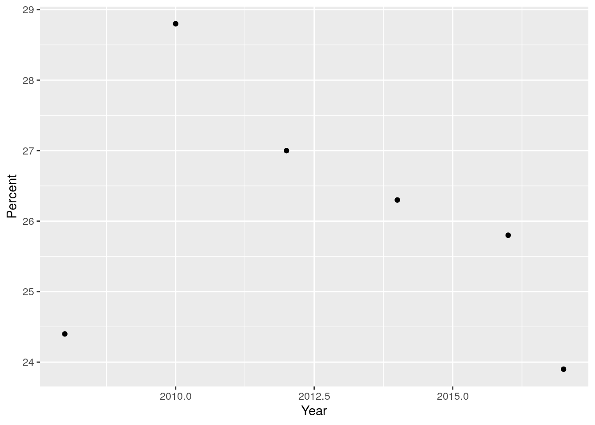</p>
<p>We are interested in modeling how the percent disconnection changes
with time, thus we will use the formula <code>Percent ~ Year</code> in
the <code>lm()</code> function, which uses the <code>Percent</code> and
<code>Year</code> variables. See this <a
href="https://opencasestudies.github.io/ocs-bp-diet/">case study</a> for
more information about linear regression.</p>
<div class="sourceCode" id="cb245"><pre
class="sourceCode r"><code class="sourceCode r"><span id="cb245-1"><a href="#cb245-1" tabindex="-1"></a>major_groups_long <span class="sc">%&gt;%</span></span>
<span id="cb245-2"><a href="#cb245-2" tabindex="-1"></a>  <span class="fu">filter</span>(Gender <span class="sc">==</span> <span class="st">&quot;All&quot;</span>,</span>
<span id="cb245-3"><a href="#cb245-3" tabindex="-1"></a>  Race_Ethnicity <span class="sc">==</span> <span class="st">&quot;Native American&quot;</span>) <span class="sc">%&gt;%</span></span>
<span id="cb245-4"><a href="#cb245-4" tabindex="-1"></a>  <span class="fu">lm</span>(Percent <span class="sc">~</span> Year, <span class="at">data =</span> .) <span class="sc">%&gt;%</span></span>
<span id="cb245-5"><a href="#cb245-5" tabindex="-1"></a>  <span class="fu">summary</span>()</span></code></pre></div>
<pre><code>
Call:
lm(formula = Percent ~ Year, data = .)

Residuals:
      1       2       3       4       5       6 
-2.4332  2.2978  0.8288  0.4597  0.2907 -1.4438 

Coefficients:
            Estimate Std. Error t value Pr(&gt;|t|)
(Intercept) 359.1159   487.3956   0.737    0.502
Year         -0.1655     0.2421  -0.683    0.532

Residual standard error: 1.889 on 4 degrees of freedom
Multiple R-squared:  0.1045,    Adjusted R-squared:  -0.1193 
F-statistic: 0.467 on 1 and 4 DF,  p-value: 0.5319</code></pre>
<p>Based on the coefficients in the output, for each one year change,
the mean increase in disconnection rates is -0.1654795</p>
<p>We can also see from the <span class="math inline">\(p\)</span>-value
(<code>Pr(&gt;|t|)</code>), that this relationship is not statistically
significant, as it is much larger than 0.05. Again, we are however
largely limited by the number of observations in this dataset.</p>
<p>We can visualize the relationship above like so using the
<code>geom_smooth()</code> function of the <code>ggplot2</code> package
with the <code>method = "lm"</code> argument to show the linear
model.</p>
<div class="sourceCode" id="cb247"><pre
class="sourceCode r"><code class="sourceCode r"><span id="cb247-1"><a href="#cb247-1" tabindex="-1"></a>major_groups_long <span class="sc">%&gt;%</span></span>
<span id="cb247-2"><a href="#cb247-2" tabindex="-1"></a>  <span class="fu">filter</span>(Gender <span class="sc">==</span> <span class="st">&quot;All&quot;</span>,</span>
<span id="cb247-3"><a href="#cb247-3" tabindex="-1"></a>  Race_Ethnicity <span class="sc">==</span> <span class="st">&quot;Native American&quot;</span>) <span class="sc">%&gt;%</span></span>
<span id="cb247-4"><a href="#cb247-4" tabindex="-1"></a>  <span class="fu">ggplot</span>(<span class="fu">aes</span>(<span class="at">x =</span> Year, <span class="at">y =</span> Percent)) <span class="sc">+</span></span>
<span id="cb247-5"><a href="#cb247-5" tabindex="-1"></a>  <span class="fu">geom_smooth</span>(<span class="at">method =</span> <span class="st">&quot;lm&quot;</span>, <span class="at">color =</span> <span class="st">&quot;red&quot;</span>) <span class="sc">+</span> </span>
<span id="cb247-6"><a href="#cb247-6" tabindex="-1"></a>  <span class="fu">geom_point</span>() <span class="sc">+</span> </span>
<span id="cb247-7"><a href="#cb247-7" tabindex="-1"></a>  <span class="fu">scale_x_continuous</span>(<span class="at">breaks =</span> <span class="fu">seq</span>(<span class="dv">2008</span>, <span class="dv">2018</span>, <span class="at">by =</span> <span class="dv">1</span>),</span>
<span id="cb247-8"><a href="#cb247-8" tabindex="-1"></a>                     <span class="at">labels =</span> <span class="fu">seq</span>(<span class="dv">2008</span>, <span class="dv">2018</span>, <span class="at">by =</span> <span class="dv">1</span>),</span>
<span id="cb247-9"><a href="#cb247-9" tabindex="-1"></a>                     <span class="at">limits =</span> <span class="fu">c</span>(<span class="dv">2008</span>, <span class="dv">2018</span>)) <span class="sc">+</span></span>
<span id="cb247-10"><a href="#cb247-10" tabindex="-1"></a>  <span class="fu">theme_minimal</span>() <span class="sc">+</span></span>
<span id="cb247-11"><a href="#cb247-11" tabindex="-1"></a>  <span class="fu">labs</span>(<span class="at">title =</span> <span class="st">&quot;Youth Disconnection Rates of Native American Youth&quot;</span>,</span>
<span id="cb247-12"><a href="#cb247-12" tabindex="-1"></a>       <span class="at">subtitle =</span> <span class="st">&quot;2008 - 2017&quot;</span>,</span>
<span id="cb247-13"><a href="#cb247-13" tabindex="-1"></a>       <span class="at">x =</span> <span class="st">&quot;Year&quot;</span>,</span>
<span id="cb247-14"><a href="#cb247-14" tabindex="-1"></a>       <span class="at">y =</span> <span class="st">&quot;Disconnection Rate&quot;</span>)</span></code></pre></div>
<p>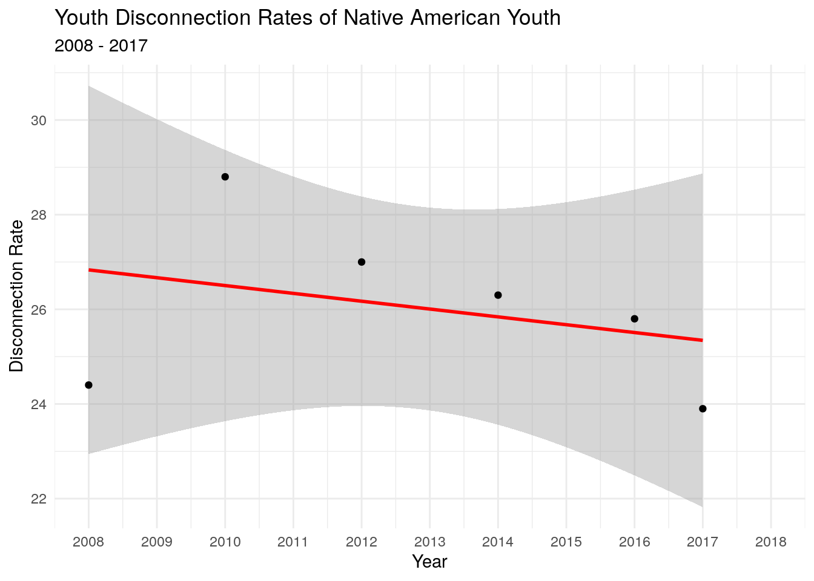</p>
<p>As we can see, that although the line appears to have a negative
slope, there is a large amount of uncertainty around the fitted
line.</p>
<hr />
</div>
<div id="female-latinx" class="section level4">
<h4>Female Latinx</h4>
<hr />
<p>What about if we look at data that we think we might see a trend
according to our data visualizations. The female Latinx data looks as
though it may be decreasing:</p>
<p></p>
<div class="sourceCode" id="cb248"><pre
class="sourceCode r"><code class="sourceCode r"><span id="cb248-1"><a href="#cb248-1" tabindex="-1"></a>major_groups_long <span class="sc">%&gt;%</span></span>
<span id="cb248-2"><a href="#cb248-2" tabindex="-1"></a>  <span class="fu">filter</span>(Gender <span class="sc">==</span> <span class="st">&quot;Female&quot;</span>, Race_Ethnicity <span class="sc">==</span> <span class="st">&quot;Latinx&quot;</span>) <span class="sc">%&gt;%</span></span>
<span id="cb248-3"><a href="#cb248-3" tabindex="-1"></a>  <span class="fu">pull</span>(Percent) <span class="sc">%&gt;%</span></span>
<span id="cb248-4"><a href="#cb248-4" tabindex="-1"></a>  <span class="fu">MannKendall</span>(.) <span class="sc">%&gt;%</span></span>
<span id="cb248-5"><a href="#cb248-5" tabindex="-1"></a>  <span class="fu">summary</span>()</span></code></pre></div>
<pre><code>Score =  -13 , Var(Score) = 28.33333
denominator =  15
tau = -0.867, 2-sided pvalue =0.024171</code></pre>
<p>Indeed this data does shows a trend of declining rates of youth
disconnection as the score is again negative and larger and the <span
class="math inline">\(p\)</span>-value is now much less than 0.5 for
even the 2-sided hypothesis.</p>
<p>The Z score can be calculated like so:</p>
<p><span class="math inline">\(Z_{MK} = \frac{-13+1}{\sqrt{28.33333}} =
\frac{-12}{5.322906} = -2.254408\)</span></p>
<p>The one tailed p-value is half of the 2-sided p-value and is thus
roughly 0.012. We just tested two hypotheses, one for the Native
Americans and one for the Latinx female population. So we should use the
<a href="https://en.wikipedia.org/wiki/Bonferroni_correction">Bonferroni
multiple testing correction</a> to adjust our significance threshold
<span class="math inline">\(\alpha\)</span> to be <span
class="math inline">\(.05/(n\text{ tests}) = 0.5/2 = .025\)</span>. In
this method we divide our significance threshold alpha (generally 0.05)
by the number of tests. Why do we need to do this?</p>
<p>Alpha is the amount of risk that you are willing to accept that a
statistical test result is actually a false positive, in other words we
reject the null hypothesis when the null hypothesis is true. This is
also called type 1 error. A significance threshold of .05 is customary
and it means that we are accepting a 5% chance that our result is
actually a false positive. When we perform multiple tests, the
probability of not making a type 1 error would remain the same for each
test. But the probability overall of making an error across the tests
increases. We can calculate this by multiplying the probabilities for
each test(which stays the same for each individual test). See <a
href="http://mathforum.org/library/drmath/view/74065.html">here</a>
about why we multiply probabilities together. The more tests we do, the
larger the chance that we get a significant result in error. See <a
href="https://opencasestudies.github.io/ocs-bp-rural-and-urban-obesity/">this
case study</a> for more details about multiple testing correction.</p>
<p>Our <span class="math inline">\(p\)</span>-value for the one sided
test was 0.012 which is less than our adjusted significance threshold of
.025 for multiple testing. This suggests that indeed there is a
decreasing trend for youth disconnection among the Female Latinx
population.</p>
<hr />
</div>
</div>
</div>
<div id="summary" class="section level2">
<h2><strong>Summary</strong></h2>
<hr />
<div id="summary-plot" class="section level3">
<h3><strong>Summary Plot</strong></h3>
<hr />
<p>Now we will create a plot that summarize our findings.</p>
<p>We will create a plot that is just an arrow using
<code>geom_segment()</code>.</p>
<p>This requires the following arguments : 1) x - x coordinate of
starting point of the arrow 2) y - y coordinate of starting point of the
arrow 3) xend - x coordinate of end point of the arrow 4) yend - y
coordinate of end point of the arrow</p>
<p>Also <code>ggplot</code> requires a data input, we will use this to
create the y axis value for the arrow. We will use the
<code>aes()</code> function to define the length and location of the
arrow.</p>
<p>We need to use the <code>arrow</code> argument with the
<code>arrow()</code> function to create an arrow. The
<code>lineend</code> and <code>linejoin</code> arguments specify what
styles to use. The <code>size()</code> function specifies how thick the
arrow is displayed.</p>
<p>See <a
href="https://ggplot2.tidyverse.org/reference/geom_segment.html">here</a>
for different arrow style options.</p>
<p>Then we will use the <code>xlim()</code> function of the
<code>ggplot2</code> package to specify the overall size of the plot
relative to the arrow.</p>
<div class="sourceCode" id="cb250"><pre
class="sourceCode r"><code class="sourceCode r"><span id="cb250-1"><a href="#cb250-1" tabindex="-1"></a>arrow_df <span class="ot">&lt;-</span> <span class="fu">data.frame</span>( <span class="at">y =</span> <span class="dv">1</span>)</span>
<span id="cb250-2"><a href="#cb250-2" tabindex="-1"></a>arrow_df</span></code></pre></div>
<pre><code>  y
1 1</code></pre>
<div class="sourceCode" id="cb252"><pre
class="sourceCode r"><code class="sourceCode r"><span id="cb252-1"><a href="#cb252-1" tabindex="-1"></a>arrowplot<span class="ot">&lt;-</span><span class="fu">ggplot</span>(arrow_df, <span class="fu">aes</span>(<span class="at">x =</span> .<span class="dv">5</span>, <span class="at">y =</span> <span class="dv">1</span>, <span class="at">xend =</span> <span class="dv">1</span>, <span class="at">yend =</span> <span class="dv">1</span>)) <span class="sc">+</span></span>
<span id="cb252-2"><a href="#cb252-2" tabindex="-1"></a>                <span class="fu">geom_segment</span>(<span class="at">arrow =</span> <span class="fu">arrow</span>(),</span>
<span id="cb252-3"><a href="#cb252-3" tabindex="-1"></a>                           <span class="at">lineend =</span> <span class="st">&quot;butt&quot;</span>,</span>
<span id="cb252-4"><a href="#cb252-4" tabindex="-1"></a>                          <span class="at">linejoin =</span> <span class="st">&quot;mitre&quot;</span>,</span>
<span id="cb252-5"><a href="#cb252-5" tabindex="-1"></a>                              <span class="at">size =</span> <span class="dv">3</span>)<span class="sc">+</span></span>
<span id="cb252-6"><a href="#cb252-6" tabindex="-1"></a>                <span class="fu">xlim</span>(<span class="fl">0.25</span>, <span class="fl">1.25</span>) <span class="sc">+</span> <span class="fu">ylim</span>(<span class="dv">0</span>,<span class="fl">1.5</span>)<span class="sc">+</span></span>
<span id="cb252-7"><a href="#cb252-7" tabindex="-1"></a>  <span class="fu">geom_text</span>( <span class="at">label =</span> <span class="st">&quot;Look at</span><span class="sc">\n</span><span class="st"> subgroups&quot;</span>, <span class="fu">aes</span>(<span class="at">x =</span> .<span class="dv">75</span>, <span class="at">y =</span> .<span class="dv">8</span>), <span class="at">size =</span> <span class="dv">5</span>, <span class="at">face =</span> <span class="st">&quot;bold&quot;</span>)</span>
<span id="cb252-8"><a href="#cb252-8" tabindex="-1"></a></span>
<span id="cb252-9"><a href="#cb252-9" tabindex="-1"></a>arrowplot</span></code></pre></div>
<p>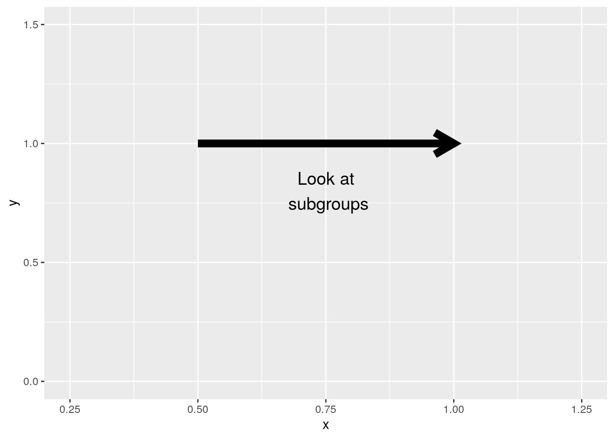</p>
<p>Then we will use <code>theme_void()</code> remove the background.</p>
<div class="sourceCode" id="cb253"><pre
class="sourceCode r"><code class="sourceCode r"><span id="cb253-1"><a href="#cb253-1" tabindex="-1"></a>arrowplot <span class="ot">&lt;-</span> arrowplot <span class="sc">+</span>  <span class="fu">theme_void</span>()</span>
<span id="cb253-2"><a href="#cb253-2" tabindex="-1"></a>arrowplot</span></code></pre></div>
<p>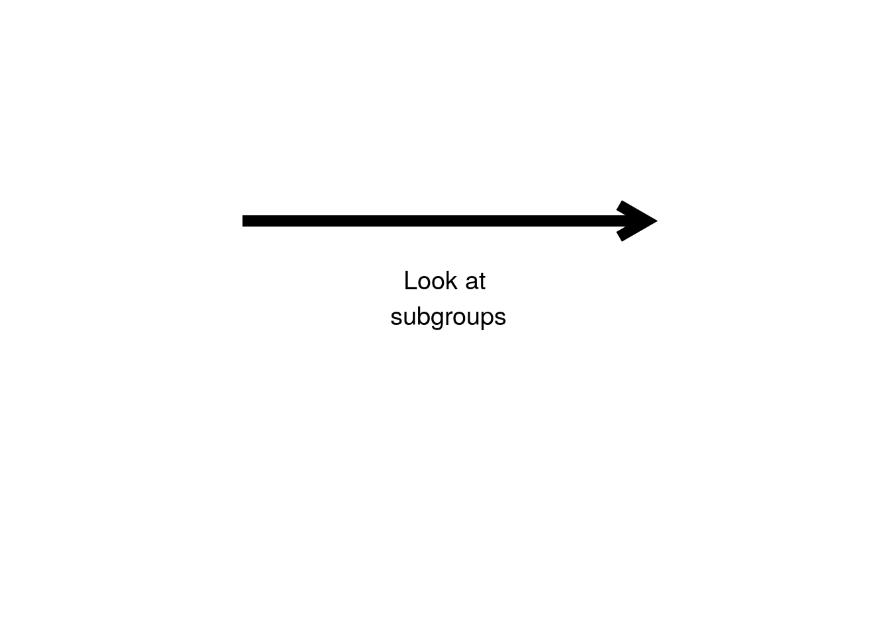</p>
<p>We will use the <code>patchwork</code> package to do so.</p>
<p>This package allows us to create formulas for our plot layouts. Thus
we can use <code>+</code> to add plots and plot elements like
<code>plot_spacer()</code> to add an empty
space<code>and we can use</code>/` to place plots in different rows on
top of one another like a fraction.</p>
<p>Thus we can combine our plots that we previously named and saved as
objects.</p>
<div class="sourceCode" id="cb254"><pre
class="sourceCode r"><code class="sourceCode r"><span id="cb254-1"><a href="#cb254-1" tabindex="-1"></a>youth_plot <span class="sc">+</span> arrowplot  <span class="sc">+</span> (plot_by_gender <span class="sc">/</span>asian_subgroup_plot_simp) </span></code></pre></div>
<p>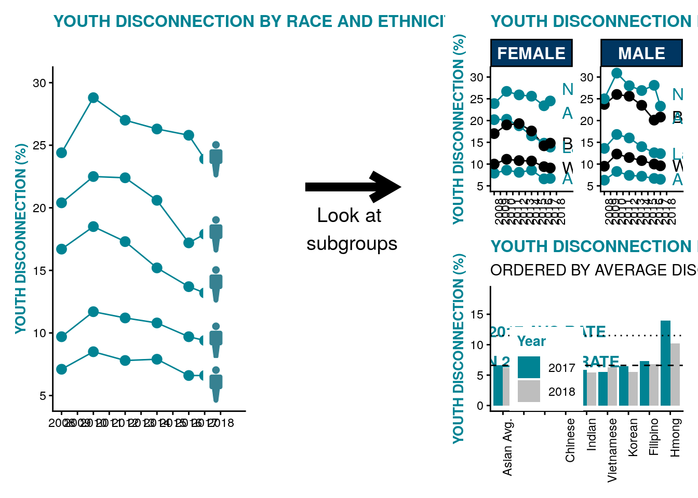</p>
<p>The <code>plot_layout()</code> function allows for specification of
the relative heights and widths of the various plot elements. Then,
since we will create three columns (distinguished by the <code>+</code>
symbols, we need to specify widths and heights for all three.)</p>
<p>We can change aspects about the plots using the <code>+</code> symbol
and the <code>theme()</code> function as we have previously used it. We
will also add an overall title using the <code>plot_annotation()</code>
function.</p>
<p>Finally, we will use the <code>png()</code> function of the
<code>grDevices</code> package which is automatically loaded in RStudio
sessions to save the plot. We will use the <code>here()</code> function
of the <code>here</code> package, to specify that we want to save it in
the <code>img</code> directory and call it <code>mainplot.png</code>. We
can also use this function to specify the resolution with
<code>res</code> and in doing so, we need to save the image with size
specifications to make it larger.</p>
<div class="sourceCode" id="cb255"><pre
class="sourceCode r"><code class="sourceCode r"><span id="cb255-1"><a href="#cb255-1" tabindex="-1"></a>plot_by_gender  <span class="ot">&lt;-</span>plot_by_gender <span class="sc">+</span> <span class="fu">theme</span>(<span class="at">axis.text =</span><span class="fu">element_text</span>(<span class="at">size =</span> <span class="dv">12</span>))</span>
<span id="cb255-2"><a href="#cb255-2" tabindex="-1"></a>asian_subgroup_plot_simp  <span class="ot">&lt;-</span>asian_subgroup_plot_simp <span class="sc">+</span> <span class="fu">theme</span>(<span class="at">axis.text =</span><span class="fu">element_text</span>(<span class="at">size =</span> <span class="dv">12</span>))</span>
<span id="cb255-3"><a href="#cb255-3" tabindex="-1"></a></span>
<span id="cb255-4"><a href="#cb255-4" tabindex="-1"></a><span class="fu">png</span>(<span class="at">filename =</span> here<span class="sc">::</span><span class="fu">here</span>(<span class="st">&quot;img&quot;</span>, <span class="st">&quot;mainplot.png&quot;</span>),</span>
<span id="cb255-5"><a href="#cb255-5" tabindex="-1"></a>    <span class="at">res =</span> <span class="dv">300</span>, <span class="at">width =</span> <span class="dv">15</span>, <span class="at">height =</span> <span class="dv">10</span>, <span class="at">units =</span> <span class="st">&quot;in&quot;</span>)</span>
<span id="cb255-6"><a href="#cb255-6" tabindex="-1"></a>    youth_plot  <span class="sc">+</span></span>
<span id="cb255-7"><a href="#cb255-7" tabindex="-1"></a>      <span class="fu">theme</span>(<span class="at">axis.text =</span><span class="fu">element_text</span>(<span class="at">size =</span> <span class="dv">14</span>, <span class="at">angle =</span> <span class="dv">90</span>)) <span class="sc">+</span></span>
<span id="cb255-8"><a href="#cb255-8" tabindex="-1"></a>    arrowplot  <span class="sc">+</span> </span>
<span id="cb255-9"><a href="#cb255-9" tabindex="-1"></a>      (plot_by_gender <span class="sc">/</span></span>
<span id="cb255-10"><a href="#cb255-10" tabindex="-1"></a>         asian_subgroup_plot_simp)  <span class="sc">+</span> </span>
<span id="cb255-11"><a href="#cb255-11" tabindex="-1"></a>      <span class="fu">plot_layout</span>(<span class="at">widths =</span> <span class="fu">c</span>(<span class="fl">4.6</span>, <span class="dv">1</span>, <span class="fl">4.65</span>)) <span class="sc">&amp;</span></span>
<span id="cb255-12"><a href="#cb255-12" tabindex="-1"></a><span class="fu">plot_annotation</span>(<span class="at">title =</span> <span class="st">&quot;Deeper Inspection Reveals Unexpected Differences for Youth Disconnection Among</span><span class="sc">\n</span><span class="st">Gender and Racial/Ethnic Subgroups&quot;</span>, </span>
<span id="cb255-13"><a href="#cb255-13" tabindex="-1"></a>               <span class="at">theme =</span> <span class="fu">theme</span>(<span class="at">plot.title =</span> <span class="fu">element_text</span>(<span class="at">size =</span> <span class="dv">22</span>, </span>
<span id="cb255-14"><a href="#cb255-14" tabindex="-1"></a>                                                       <span class="at">face =</span> <span class="st">&quot;bold&quot;</span>)))</span>
<span id="cb255-15"><a href="#cb255-15" tabindex="-1"></a></span>
<span id="cb255-16"><a href="#cb255-16" tabindex="-1"></a><span class="fu">dev.off</span>()</span></code></pre></div>
<pre><code>FALSE png 
FALSE   2</code></pre>
<div class="sourceCode" id="cb257"><pre
class="sourceCode r"><code class="sourceCode r"><span id="cb257-1"><a href="#cb257-1" tabindex="-1"></a>knitr<span class="sc">::</span><span class="fu">include_graphics</span>(here<span class="sc">::</span><span class="fu">here</span>(<span class="st">&quot;img&quot;</span>, <span class="st">&quot;mainplot.png&quot;</span>))</span></code></pre></div>
<p></p>
</div>
<div id="synopsis" class="section level3">
<h3><strong>Synopsis</strong></h3>
<hr />
<p>In this case study we evaluated rates of youth disconnection in the
United States between 2008 and 2018, which was defined as individuals
between age <strong>16 - 24</strong> who are <strong>neither working nor
in school</strong>”. In particular, we focused on evaluating specific
subgroups to identify populations that may experience particularly high
levels of disconnection. We used summary level data from two <a
href="https://measureofamerica.org/">Measure of America</a> reports:</p>
<ol style="list-style-type: decimal">
<li>The 2019 report called <a
href="https://ssrc-static.s3.amazonaws.com/moa/Making%20the%20Connection.pdf">Making
the Connection</a><br />
</li>
<li>The 2020 report called <a
href="https://ssrc-static.s3.amazonaws.com/moa/ADecadeUndone.pdf">A
Decade Undone</a></li>
</ol>
<p>The data in these reports comes from the <a
href="https://www.census.gov/programs-surveys/acs">American Community
Survey (ACS)</a>.</p>
<p>We demonstrated how to import data from these PDFs by extracting the
text from screen shot images of the tables were were particularly
interested in.</p>
<p>It was identified in the 2019 <a
href="https://ssrc-static.s3.amazonaws.com/moa/Making%20the%20Connection.pdf">Measure
of America annual report</a> that Native American populations
particularly experience high rates of youth disconnection. Indeed
roughly a quarter of this population appears to experience youth
disconnection, which is much higher than the other major racial groups.
By performing the <a
href="https://cran.r-project.org/web/packages/Kendall/Kendall.pdf">Mann-Kendall
trend test</a> both manually and using the <code>MannKendall()</code>
function of the <code>Kendall</code> package, we demonstrated that,
given the available data, there does not appear to be a consistent
positive nor a consistent negative trend. This suggests that more
prevention and re-engagement strategies should especially focus on this
population.</p>
<p>By plotting subgroups within our data, it is clear that there are
differences among particular populations. We see that there are much
higher levels of disconnection among youths who are male and black as
compared to black females.</p>
<p>We also see that youth disconnection rates among <a
href="https://en.wikipedia.org/wiki/Hmong_people">Hmong</a> and
Cambodian populations are very high, despite rates being quite low for
the Asian population in general.</p>
<p>Overall, this case study demonstrates the importance of looking at
populations at deeper levels. This is something of great importance
facing the field of public health. Where possible data should be
collected on a variety of demographic groups to better characterize
vulnerable populations.</p>
</div>
</div>
<div id="suggested-homework" class="section level2">
<h2><strong>Suggested Homework</strong></h2>
<hr />
<ul>
<li>For the Asian and Latinx subgroup bar plots made across year, modify
these plots to consider gender differences (instead of across
time).</li>
<li>Taking the plot you made above, modify the plot to facet across
years.</li>
<li>Find another table in one of the reports to import using the
<code>magick</code> package (for example perhaps the data about
different states over time in the 2019 report called <a
href="https://ssrc-static.s3.amazonaws.com/moa/Making%20the%20Connection.pdf">Making
the Connection</a>). Look for differences between groups by plotting the
data and evaluating with the Mann-Kendall test.</li>
</ul>
</div>
<div id="additional-information" class="section level2">
<h2><strong>Additional Information</strong></h2>
<hr />
<div id="helpful-links" class="section level3">
<h3><strong>Helpful Links</strong></h3>
<hr />
<p><a href="https://rstudio.com/products/rstudio/features/"
target="_blank">RStudio</a><br />
<a href="https://opensource.posit.co/resources/cheatsheets/rstudio-ide/"
target="_blank">Cheatsheet on RStudio IDE</a><br />
<a href="https://rstudio.com/resources/cheatsheets/"
target="_blank">Other RStudio cheatsheets</a><br />
<a href="https://www.tidyverse.org/" target="_blank">Tidyverse</a></p>
<p><a href="https://en.wikipedia.org/wiki/Response_bias">Response
bias</a><br />
<a
href="https://en.wikipedia.org/wiki/Cross-sectional_data?oldformat=true">Cross-Sectional
data</a> <a
href="https://en.wikipedia.org/wiki/Population?oldformat=true">Population</a>
<a
href="https://en.wikipedia.org/wiki/Sampling_(statistics)?oldformat=true">Sample</a>
<a
href="https://en.wikipedia.org/wiki/Sampling_(statistics)?oldformat=true"
target="_blank">Sampling methods</a> <a
href="https://www.britannica.com/science/inference-statistics">Inference</a></p>
<p><a href="https://www.census.gov/programs-surveys/acs">American
Community Survey (ACS)</a></p>
<p>See <a
href="https://en.wikipedia.org/wiki/American_Community_Survey">here</a>
for more detailed information about the survey<br />
<a href="https://www.ssrc.org/programs/view/moa/">Measure of
America</a><br />
<a href="https://www.ssrc.org/">Social Science Research Council</a></p>
<p><a
href="https://cran.r-project.org/web/packages/magrittr/vignettes/magrittr.html"
target="_blank">Piping in R</a><br />
<a href="https://r4ds.had.co.nz/functions.html">Writing
functions</a><br />
Also see <a
href="https://www.opencasestudies.org/ocs-bp-vaping-case-study/"
target="_blank">this case study</a> for more information on writing
functions.<br />
<a href="https://rstudio.com/resources/cheatsheets/"
target="_blank">String manipulation cheatsheet</a><br />
<a href="https://en.wikipedia.org/wiki/Wide_and_narrow_data"
target="_blank">Table formats</a></p>
<p><a
href="https://lindeloev.github.io/tests-as-linear/">Regression</a><br />
<a href="https://en.wikipedia.org/wiki/Simple_linear_regression">simple
linear regression</a><br />
<a
href="https://www.statisticshowto.com/monotonic-relationship/">monotonic
association</a><br />
<a
href="https://en.wikipedia.org/wiki/Kendall_rank_correlation_coefficient?oldformat=true">Kendall
rank correlation coefficient</a><br />
<a href="https://en.wikipedia.org/wiki/Null_hypothesis">Null
hypothesis</a><br />
<a
href="https://en.wikipedia.org/wiki/Alternative_hypothesis">Alternative
hypothesis</a><br />
<a
href="https://en.wikipedia.org/wiki/Probability">Probability</a><br />
<a
href="https://en.wikipedia.org/wiki/One-_and_two-tailed_tests">one-sided
and two-sided hypotheses</a><br />
<a
href="https://en.wikipedia.org/wiki/Nonparametric_statistics">Nonparametric</a>
<a
href="https://en.wikipedia.org/wiki/Parametric_statistics">Parametric</a>
<a
href="https://en.wikipedia.org/wiki/Statistical_significance">significance
threshold</a><br />
<a href="https://en.wikipedia.org/wiki/Standard_score">Z score</a><br />
<a href="https://socratic.org/questions/5986a3e1b72cff6fd48a5408">Z
score table</a><br />
<a
href="https://www.socscistatistics.com/pvalues/normaldistribution.aspx">Z
score to p-value calculator</a></p>
<p><a href="http://ggplot2.tidyverse.org"
target="_blank"><code>ggplot2</code> package</a><br />
Please see <a
href="https://opencasestudies.github.io/ocs-bp-co2-emissions/">this case
study</a> for more details on using <code>ggplot2</code><br />
<a href="http://vita.had.co.nz/papers/layered-grammar.html"
target="_blank">grammar of graphics</a><br />
<a href="https://ggplot2.tidyverse.org/reference/ggtheme.html"
target="_blank"><code>ggplot2</code> themes</a><br />
<a href="https://cran.r-project.org/package=directlabels"
target="_blank"><code>directlabels</code> package methods</a><br />
<a href="https://en.wikipedia.org/wiki/Hmong_people">Hmong
people</a><br />
<a
href="https://www.vox.com/the-highlight/2019/5/20/18542843/intersectionality-conservatism-law-race-gender-discrimination">Intersections</a></p>
<p><a
href="https://www.ncbi.nlm.nih.gov/pmc/articles/PMC6243446/">Motivating
article for this case study about youth disconnection/opportunity
youth</a></p>
<p>To learn more about importing and wrangling PDFs using the
<code>pdftools</code> package see this <a
href="https://opencasestudies.github.io/ocs-bp-rural-and-urban-obesity/">case
study</a> and this <a
href="https://opencasestudies.github.io/ocs-bp-diet/">case
study</a>.</p>
<p>To learn more about what you can do with the <code>magick</code>
package see this <a
href="https://cran.r-project.org/web/packages/magick/vignettes/intro.html">vignette</a>.</p>
<p>To learn more about the <strong>Mann-Kendall trend test</strong> see
<a
href="https://www.statisticshowto.com/mann-kendall-trend-test/">here</a>
and <a
href="https://www.statisticshowto.com/wp-content/uploads/2016/08/Mann-Kendall-Analysis-1.pdf">here</a>.</p>
<p>To learn more about hypothesis testing, see this <a
href="https://opencasestudies.github.io/ocs-bp-rural-and-urban-obesity/">case
study</a>.</p>
<p><u><strong>Packages used in this case study:</strong> </u></p>
<table>
<colgroup>
<col width="43%" />
<col width="56%" />
</colgroup>
<thead>
<tr class="header">
<th>Package</th>
<th>Use in this case study</th>
</tr>
</thead>
<tbody>
<tr class="odd">
<td><a href="https://github.com/jennybc/here_here"
target="_blank">here</a></td>
<td>to easily load and save data</td>
</tr>
<tr class="even">
<td><a href="https://readr.tidyverse.org/">pdftools</a></td>
<td>to import PDF documents</td>
</tr>
<tr class="odd">
<td><a
href="https://cran.r-project.org/web/packages/magick/vignettes/intro.html#Kernel_convolution">magick</a></td>
<td>for importing images and extracting text from images</td>
</tr>
<tr class="even">
<td><a
href="https://cran.r-project.org/web/packages/tesseract/vignettes/intro.html">tesseract</a></td>
<td>for extracting text from images with <code>magick</code></td>
</tr>
<tr class="odd">
<td><a href="https://yihui.org/knitr/">knitr</a></td>
<td>for showing images in reports</td>
</tr>
<tr class="even">
<td><a href="https://dplyr.tidyverse.org/"
target="_blank">dplyr</a></td>
<td>to filter, subset, join, add rows to, and modify the data</td>
</tr>
<tr class="odd">
<td><a href="https://stringr.tidyverse.org/"
target="_blank">stringr</a></td>
<td>to manipulate strings</td>
</tr>
<tr class="even">
<td><a href="https://magrittr.tidyverse.org/"
target="_blank">magrittr</a></td>
<td>to pipe sequential commands</td>
</tr>
<tr class="odd">
<td><a href="https://tidyr.tidyverse.org/"
target="_blank">tidyr</a></td>
<td>to change the shape or format of tibbles to wide and long, to drop
rows with <code>NA</code> values, to separate a column into additional
columns, and to fill out values based on previous values</td>
</tr>
<tr class="even">
<td><a href="https://tibble.tidyverse.org/"
target="_blank">tibble</a></td>
<td>to create tibbles</td>
</tr>
<tr class="odd">
<td><a href="https://ggplot2.tidyverse.org/"
target="_blank">ggplot2</a></td>
<td>to create plots</td>
</tr>
<tr class="even">
<td><a href="https://cran.r-project.org/package=directlabels"
target="_blank">directlabels</a></td>
<td>to add labels directly to lines in plots</td>
</tr>
<tr class="odd">
<td><a
href="https://cran.r-project.org/web/packages/cowplot/vignettes/introduction.html"
target="_blank">cowplot</a></td>
<td>to add images to plots</td>
</tr>
<tr class="even">
<td><a href="https://forcats.tidyverse.org/"
target="_blank">forcats</a></td>
<td>to reorder factor for plot</td>
</tr>
<tr class="odd">
<td><a
href="https://cran.r-project.org/web/packages/Kendall/Kendall.pdf">kendall</a></td>
<td>to implement the Mann-Kendall trend test in R</td>
</tr>
<tr class="even">
<td><a href="https://github.com/thomasp85/patchwork">patchwork</a></td>
<td>to combine plots</td>
</tr>
</tbody>
</table>
<div id="section-52" class="section level4 emphasis_block">
<h4 class="emphasis_block"></h4>
<p>Want to learn more about how to prevent and mitigate youth
disconnection?<br />
Or do you know youths who are disconnected?</p>
<p>See <a
href="https://youth.gov/evidence-innovation/program-directory?keywords=&amp;field_pd_factors_risks_tid=413&amp;field_pd_factors_protective_tid=All">the
program directory at youth.gov</a> and <a
href="https://goc.maryland.gov/wp-content/uploads/sites/8/2015/10/Program-Models-for-Serving-Opportunity-Youth.pdf">this
program listing</a> focused on Maryland but including other locations
for listings of programs dedicated to re-engaging disconnected youth or
preventing disconnection.</p>
<p>Also, see <a href="https://www.communitiesthatcare.net/">The Center
for Communities That Care</a> and the <a
href="https://extension.psu.edu/promoting-school-community-university-partnerships-to-enhance-resilience">PROSPER
program</a> for particular examples.</p>
</div>
<div id="section-53" class="section level4">
<h4></h4>
</div>
</div>
<div id="session-info" class="section level3">
<h3><strong>Session Info</strong></h3>
<hr />
<div class="sourceCode" id="cb258"><pre
class="sourceCode r"><code class="sourceCode r"><span id="cb258-1"><a href="#cb258-1" tabindex="-1"></a><span class="fu">sessionInfo</span>()</span></code></pre></div>
<pre><code>R version 4.3.2 (2023-10-31)
Platform: x86_64-pc-linux-gnu (64-bit)
Running under: Ubuntu 22.04.4 LTS

Matrix products: default
BLAS:   /usr/lib/x86_64-linux-gnu/openblas-pthread/libblas.so.3 
LAPACK: /usr/lib/x86_64-linux-gnu/openblas-pthread/libopenblasp-r0.3.20.so;  LAPACK version 3.10.0

locale:
 [1] LC_CTYPE=en_US.UTF-8       LC_NUMERIC=C              
 [3] LC_TIME=en_US.UTF-8        LC_COLLATE=en_US.UTF-8    
 [5] LC_MONETARY=en_US.UTF-8    LC_MESSAGES=en_US.UTF-8   
 [7] LC_PAPER=en_US.UTF-8       LC_NAME=C                 
 [9] LC_ADDRESS=C               LC_TELEPHONE=C            
[11] LC_MEASUREMENT=en_US.UTF-8 LC_IDENTIFICATION=C       

time zone: Etc/UTC
tzcode source: system (glibc)

attached base packages:
[1] stats     graphics  grDevices utils     datasets  methods   base     

other attached packages:
 [1] OCSdata_1.0.2             DT_0.34.0                
 [3] patchwork_1.3.2           Kendall_2.2.2            
 [5] forcats_1.0.0             cowplot_1.2.0            
 [7] directlabels_2026.8.27    tibble_3.3.0             
 [9] tidyr_1.3.1               stringr_1.5.1            
[11] dplyr_1.1.4               magick_2.9.1             
[13] tesseract_5.3.1           pdftools_3.9.1           
[15] koRpus.lang.en_0.1-4      koRpus_0.13-9            
[17] sylly_0.1-7               read.so_0.1.1            
[19] wordcountaddin_0.3.0.9000 magrittr_2.0.3           
[21] readr_2.1.5               knitr_1.50               
[23] here_1.0.2                ggplot2_4.0.3            

loaded via a namespace (and not attached):
 [1] tidyselect_1.2.0   farver_2.1.1       S7_0.2.2           fastmap_1.1.1     
 [5] digest_0.6.34      lifecycle_1.0.4    qpdf_1.4.1         ellipsis_0.3.2    
 [9] processx_3.8.6     compiler_4.3.2     rlang_1.1.6        sass_0.4.8        
[13] tools_4.3.2        utf8_1.2.4         yaml_2.3.12        data.table_1.15.0 
[17] labeling_0.4.3     askpass_1.2.0      htmlwidgets_1.6.4  bit_4.0.5         
[21] pkgbuild_1.4.3     curl_7.0.0         RColorBrewer_1.1-3 withr_3.0.2       
[25] purrr_1.0.2        desc_1.4.3         grid_4.3.2         fansi_1.0.6       
[29] scales_1.4.0       cli_3.6.5          rmarkdown_2.25     crayon_1.5.2      
[33] generics_0.1.3     remotes_2.4.2.1    rstudioapi_0.15.0  httr_1.4.7        
[37] tzdb_0.4.0         cachem_1.0.8       sylly.en_0.1-4     splines_4.3.2     
[41] parallel_4.3.2     vctrs_0.6.5        boot_1.3-28.1      Matrix_1.6-1.1    
[45] jsonlite_2.0.0     callr_3.7.6        hms_1.1.3          bit64_4.0.5       
[49] crosstalk_1.2.2    jquerylib_0.1.4    glue_1.7.0         ps_1.9.1          
[53] stringi_1.8.3      gtable_0.3.6       pillar_1.9.0       rappdirs_0.3.3    
[57] htmltools_0.5.7    R6_2.6.1           rprojroot_2.1.1    vroom_1.6.5       
[61] evaluate_1.0.5     lattice_0.21-9     bslib_0.6.1        Rcpp_1.0.12       
[65] nlme_3.1-163       mgcv_1.9-0         xfun_0.55          fs_1.6.3          
[69] usethis_2.2.3      pkgconfig_2.0.3   </code></pre>
<p><strong>Estimate of R Markdown Compilation Time: </strong></p>
<pre><code>About 146 - 156 seconds</code></pre>
<p>This compilation time was measured on a PC machine operating on
Windows 10. This range should only be used as an estimate as compilation
time will vary with different machines and operating systems.</p>
</div>
<div id="acknowledgments" class="section level3">
<h3><strong>Acknowledgments</strong></h3>
<hr />
<p>We would like to acknowledge <a
href="https://www.jhsph.edu/faculty/directory/profile/1770/tamar-mendelson">Tamar
Mendelson</a> for assisting in framing the major direction of the case
study.</p>
<p>We would like to acknowledge <a
href="https://scholar.google.com/citations?user=EVGygAwAAAAJ&amp;hl=en">Qier
Meng</a> and <a href="https://mbreshock.github.io/">Michael Breshock</a>
for their contributions to this case study.</p>
<p>We would also like to acknowledge the <a
href="https://americanhealth.jhu.edu/">Bloomberg American Health
Initiative</a> for funding this work.</p>
<script type='text/javascript' id='clustrmaps' src='//cdn.clustrmaps.com/map_v2.js?cl=080808&w=a&t=tt&d=O0N6_xyVRrI9LRa4Y29rluaIuSuY2k5TdZXLWTjco2U&co=ffffff&cmo=3acc3a&cmn=ff5353&ct=808080'></script>
</div>
</div>

<div id="rmd-source-code"></div>


</div>
</div>

</div>

<script>

// add bootstrap table styles to pandoc tables
function bootstrapStylePandocTables() {
  $('tr.odd').parent('tbody').parent('table').addClass('table table-condensed');
}
$(document).ready(function () {
  bootstrapStylePandocTables();
});


</script>

<!-- tabsets -->

<script>
$(document).ready(function () {
  window.buildTabsets("TOC");
});

$(document).ready(function () {
  $('.tabset-dropdown > .nav-tabs > li').click(function () {
    $(this).parent().toggleClass('nav-tabs-open');
  });
});
</script>

<!-- code folding -->
<script>
$(document).ready(function () {
  window.initializeSourceEmbed("index.Rmd");
});
</script>

<script>
$(document).ready(function ()  {

    // temporarily add toc-ignore selector to headers for the consistency with Pandoc
    $('.unlisted.unnumbered').addClass('toc-ignore')

    // move toc-ignore selectors from section div to header
    $('div.section.toc-ignore')
        .removeClass('toc-ignore')
        .children('h1,h2,h3,h4,h5').addClass('toc-ignore');

    // establish options
    var options = {
      selectors: "h1,h2,h3",
      theme: "bootstrap3",
      context: '.toc-content',
      hashGenerator: function (text) {
        return text.replace(/[.\\/?&!#<>]/g, '').replace(/\s/g, '_');
      },
      ignoreSelector: ".toc-ignore",
      scrollTo: 0
    };
    options.showAndHide = true;
    options.smoothScroll = true;

    // tocify
    var toc = $("#TOC").tocify(options).data("toc-tocify");
});
</script>

<!-- dynamically load mathjax for compatibility with self-contained -->
<script>
  (function () {
    var script = document.createElement("script");
    script.type = "text/javascript";
    script.src  = "https://mathjax.rstudio.com/latest/MathJax.js?config=TeX-AMS-MML_HTMLorMML";
    document.getElementsByTagName("head")[0].appendChild(script);
  })();
</script>

</body>
</html>
